![Warehouse Pro]()
Как пользоваться этой книгой
Warehouse Pro — учёт дистрибьютора: поле, склад, долги и зарплата в одной системе. Агент оформляет заказ у прилавка с телефона, склад собирает его по списку с партиями, курьер отдаёт товар и принимает деньги, а директор в тот же момент видит выручку, остаток и долги. Книга написана для владельца и его команды: за пять дней запустить работу и с первой недели получать честные цифры.
Часть 1 — план внедрения по дням: каждый день расписан как инструкция — где в меню, что нажать, что увидеть и чем проверить в конце дня. Часть 2 — рабочий день каждой роли с настоящими снимками экранов: сначала веб для офиса, затем телефон для поля. Часть 3 — как сделать: возвраты, частичная доставка, расчёт по заказу, сроки годности, контроль, планы, прайс-листы, склад, зарплата, права — по шагам, независимо от роли. Часть 4 — как система считает остаток, долг и зарплату: это стоит прочитать владельцу и бухгалтеру. Часть 5 — что делать, если что-то пошло не так.
| Обозначение | Что значит |
|---|---|
| «Заказы» → «Новый заказ» | Пункт меню слева, затем кнопка на экране — названия даны так, как они написаны в программе |
| Шаги 1, 2, 3… | Делайте по порядку: один шаг — одно действие и то, что после него увидите |
| ① ② ③ на снимке | Выноски: цифры на снимке соответствуют подписям под ним |
| Совет | Как делают опытные команды — не обязательно, но экономит время |
| Внимание | Действие, которое влияет на деньги или остаток и которое трудно отменить |
| Проверьте | Чек-лист в конце шага или дня: пока не сходится — дальше не идите |
Меню слева в вебе: «Главная», «Магазины», затем четыре раздела — «Продажи», «Склад», «Команда», «Финансы» — и внизу отдельные пункты «Биллинг», «Журнал действий», «Настройки». Раздел раскрывается щелчком и показывает свои страницы; тот, где вы сейчас, раскрыт сам. В книге страницы называются своим именем — «Приходы», «Зарплаты», «Пользователи», — а в каком разделе их искать, говорит таблица ниже. У оператора разделов два («Продажи» и «Склад»), остальное — пунктами: «Магазины», «Отчёты», «KPI», «Настройки».
| Раздел меню | Страницы внутри |
|---|---|
| «Главная» | Экран дня директора; у оператора открывает «Заказы» |
| «Магазины» | Отдельный пункт сразу после «Главной»: территории, карточки магазинов, долги |
| «Продажи» | «Заказы», «Возвраты» |
| «Склад» | «Остатки» (страница «Склад» с разделами «Дозаказ», «Мёртвый сток», «Прогноз», «Отчёты», «Инвентаризация»), «Приходы», «Товары» |
| «Команда» | «KPI», «Карта», «План визитов», «Зарплаты», «Пользователи» |
| «Финансы» | «Отчёты», «P&L», «Контроль» |
| «Биллинг», «Журнал действий», «Настройки» | Три отдельных пункта внизу меню, «Настройки» — самый нижний. «Настройки» — страница с разделами: компания, брендинг, склады, прайс-листы, накладные, права, Telegram, 1С, Контроль |
Снимки сделаны с настоящей программы на демонстрационной организации «Demo UZ». У вас будут ваши магазины и товары, но кнопки и экраны те же. Часть снимков в Части 1 сделана из-под оператора: у директора те же экраны, только меню слева длиннее. Язык интерфейса — русский или узбекский — переключается в любой момент: в вебе внизу меню («РУС» / «UZB»), на телефоне в профиле.
Часть 1. Внедрение за пять дней
План рассчитан на организацию с 3–15 агентами и одним складом. Каждый день заканчивается проверкой: если она проходит, следующий день можно начинать. Всё делается в вебе директором или оператором; телефон подключается на третий день. Порядок дней не случайный: без товаров и остатка нельзя принять заказ, без магазинов и людей — некому его принять, без листа и курьера деньги не дойдут до отчёта.
| День | Что делаем | Кто | Проверка в конце дня |
|---|---|---|---|
| 1 | Компания, склад, товары, стартовый остаток | Директор | На «Складе» все товары с правильным «Доступно» |
| 2 | Магазины, территории, сотрудники и роли | Директор, оператор | Каждый сотрудник вошёл и увидел свой экран |
| 3 | Поле: телефоны агентов, план визитов, первые заказы | Супервайзер, агенты | Заказ агента появился в «Заказах» у оператора |
| 4 | Склад и доставка: лист, сборка, курьер, деньги | Оператор, курьер | Первый заказ прошёл путь до «Доставлен», деньги и долг сошлись |
| 5 | Контроль: главная, отчёты, долги, P&L, зарплата, аудит | Директор | Директор ответил на пять вопросов дня с первого экрана |
День 1. Регистрация
Зачем: регистрация создаёт организацию, учётную запись директора и основной склад — то, к чему дальше привязываются остаток и деньги. Это пять минут.
- Откройте страницу регистрации: «Ваше имя», «Название компании», Email, «Пароль (мин. 8 символов)» → «Зарегистрироваться». Этот e-mail становится логином директора — он же будет получать письма о копиях базы и оплате.
- Откроется «Главная» с нулями — так и должно быть. Система уже создала склад «Основной склад» (с него продают) и включила пробный период 14 дней. Переименовать склад: «Настройки» → «Склады» → значок «Редактировать склад» → «Название», «Адрес», «Город» → «Сохранить».
День 1. «Настройки»: компания и склады
Зачем: реквизиты печатаются на каждой накладной, валюта определяет, в чём считаются цены, долги и зарплата, а порог скидки и точка заказа — две границы, которые потом берегут деньги без вашего участия.
- «Настройки» → «Компания»: «Название компании», «Адрес», «ИНН», «Директор», «Телефон». Эти поля попадают в накладные и счета.
- Там же «Валюта» — выберите «UZS — Узбекский сум» (или USD / RUB). В ней будут считаться цены, долги и зарплата; менять её после первых заказов — значит пересчитывать всё руками. Решите сейчас.
- «Банковские реквизиты»: «Банк», «Расчётный счёт», «МФО» — для счетов на оплату. «Загрузить логотип» — он встанет в шапку документов.
- «Порог скидки для полевых сотрудников, % (пусто — без порога)»: скидка агента выше порога не пройдёт сама — заказ встанет в «Ожидает», и оператор решит.
- «Точка заказа для новых товаров (пусто — 10)»: ниже этого остатка система напомнит дозаказать. Для отдельного товара порог меняется в его карточке.
- «Сохранить». Затем «Настройки» → «Склады»: у склада «Основной склад» стоит метка «Основной». Дополнительные склады — «Добавить склад» → «Название», «Адрес», «Город» → «Добавить» — нужны только для хранения и перемещений; продают только с основного.

- 1«Компания» — реквизиты, валюта, порог скидки, точка заказа (день 1)
- 2«Склады» — основной склад и дополнительные (день 1)
- 3«Права оператора» — что оператору можно, а что нет (день 2)
- 4«Telegram» — уведомления о заказах, долгах и остатках (день 5)
- 5«Вход с кодом из приложения» — двухфакторная защита директора (день 2)


День 1. «Товары»: загрузка каталога
Зачем: заказ можно принять только на товар из каталога. Цена продажи даёт выручку, себестоимость — маржу в P&L, штрих-код — сканер на приходе и сборке, упаковка — счёт коробками у прилавка.
- «Товары» → «Импорт» → «Скачать шаблон». Откроется Excel-файл с колонками: «Код», «Штрихкод», «Название», «Категория», «Себестоимость (сум)», «Цена продажи (сум)», «Ед. измерения», «Вес (кг)», «Мин. остаток», «Остаток на складе», «Описание», «Фото URL».
- Заполните строки. Обязательны код, название и цена продажи; себестоимость — чтобы P&L считал маржу; «Ед. измерения»: kg, l, pcs (штуки), box, pack. Код у каждого товара свой — по нему потом ищут и сканируют.
- Перетащите файл в окно импорта или нажмите на область «или нажмите для выбора». Система покажет первые строки и ошибки — исправьте в файле и загрузите снова, ничего ещё не записано.
- «Импортировать N строк» → «Готово». Товары появились в списке; счётчик «ВСЕГО ТОВАРОВ» вверху совпадает с числом строк в файле.
- Единичный товар — «Добавить»: «Код *», «Штрих-код (необязательно)», «Название *», «Категория», «Себестоимость», «Цена продажи *», «Масса 1 ед. в кг (ящик=8)», «Порог дозаказа», «В упаковке, ед. (12)», «Название упаковки (коробка)», «Описание» → «Сохранить».

- 1«Импорт» — шаблон Excel, проверка построчно до записи
- 2«Добавить» — один товар вручную
- 3«Низкий остаток» — сколько товаров ниже своего порога
- 4Поиск по названию и коду

- «Порог дозаказа» — ниже этого числа товар попадёт в «Мало стока» и во вкладку «Дозаказ». Ставьте столько, сколько уходит за время доставки от поставщика.
- «В упаковке, ед.» и «Название упаковки» — чтобы агент у прилавка мог заказать «2 коробки», а склад видел «24 шт». «Масса 1 ед.» нужна для веса погрузочного листа.
- «Фото» — до 2 МБ. Фото видно агенту в каталоге и на странице товара на телефоне: с картинкой заказ у прилавка идёт быстрее.
День 1. «Приходы»: стартовый остаток
Зачем: остаток появляется только через приход. Каждая строка прихода — партия со сроком годности; по ним склад потом собирает заказы «раньше сгорает — раньше уходит» (FEFO), а директор видит, что скоро сгорит.
- Пересчитайте полки. Нужны фактические количества по каждому товару, а для продуктов — партия и срок годности с этикетки.
- «Приходы» → «Новый приход». «Данные машины» и «Дата и расходы» для стартового остатка оставьте как есть (дата подставится сегодняшняя); «Поставщик и долг» — «Без поставщика» (иначе система запишет вам долг поставщику).
- Строка товара: «Выберите товар…» → «Кол-во» → «Себестоимость» (цена закупки за единицу) → «Партия» → «Годен до». Следующий товар — «Добавить товар». Со сканером быстрее: курсор в «Штрих-код + Enter», каждый скан добавляет единицу.
- В «Примечаниях» напишите «стартовый остаток» — через год это объяснит, откуда взялись цифры.
- Внизу формы: «Сохранить и завершить». Остаток на «Складе» изменится сразу. Просто «Сохранить» — черновик: остаток не изменится, приход останется в статусе «Ожидает»; завершить его можно позже из списка: «Разгрузка» → «Завершить».

- 1«Без поставщика» — для стартового остатка, иначе появится долг поставщику
- 2«Сканер» и поле «Штрих-код + Enter» — каждый скан плюс единица
- 3«Выберите товар…» — по названию из каталога дня 1
- 4«Кол-во» — фактически на полке
- 5«Партия» — номер с этикетки
- 6«Годен до» — по нему FEFO и алерт «сгорает»
- 7«Добавить товар» — следующая строка

- 1«Этикетки» — штрих-коды на коробки этой партии
День 1. Проверка: «Склад»
Зачем: «Склад» — единственное место, где остаток показан так, как его видит агент у прилавка: «Доступно» = «Всего» минус «Резерв» под уже принятые заказы. Если здесь цифры не сходятся с полками, все заказы завтра будут приняты на воздух.
- «Склад» → раздел «Остатки». Сверху четыре плитки: «Позиций» (и общий вес в кг), «Стоимость остатков» (по себестоимости), «Ниже порога» и «Без продаж · 30 дн» — две последние нажимаются и ведут в разделы «Дозаказ» и «Мёртвый сток».
- Пройдите по списку: «Доступно» у каждого товара равно тому, что на полке. «Резерв» в день 1 — ноль. Красные строки — ниже порога: либо дозакажите, либо поправьте «Порог дозаказа» в карточке товара.
- Ошиблись в количестве — «Скорректировать» в строке: «ТИП ОПЕРАЦИИ», «КОЛИЧЕСТВО», «ПРИМЕЧАНИЕ» (причина) → «Применить». Корректировка попадает в «Журнал действий» — это нормально, так и задумано.
- Много расхождений — вкладка «Инвентаризация» → «Новая инвентаризация»: система снимет остатки на этот момент, вы считаете полки (руками или «Штрих-код + Enter» / «Сканер») → «Применить» — все разницы проводятся одним документом.

- 1«ДОСТУПНО» — это видит агент; должно совпасть с полкой
- 2«РЕЗЕРВ» — под принятые, но не отгруженные заказы
- 3«ПОРОГ» — ниже него строка краснеет и приходит алерт
- 4«Скорректировать» — поправить количество с причиной
- «Настройки» → «Компания»: валюта, реквизиты, порог скидки и точка заказа заполнены
- Все товары загружены; у продаваемых есть цена продажи, себестоимость и единица
- Приход стартового остатка завершён — статус «Завершён», не «Ожидает»
- «Склад» → «Остатки»: «Доступно» совпадает с полками, «Резерв» — ноль
День 2. «Магазины»: точки и территории
Зачем: магазин — это тот, кто должен вам деньги. Стартовый долг и кредитный лимит заводятся здесь, и с этого дня система ведёт долг сама: каждая доставка добавляет, каждая оплата уменьшает. Территория — маршрут агента, по ней супервайзер расставит план на месяц.
- «Магазины» → «Импорт» → «Скачать шаблон». Колонки: «Название», «Владелец», «Телефон», «Город», «Район», «Адрес», «Долг», «Широта», «Долгота», «Территория», «Примечания».
- «Долг» — сколько магазин должен вам на сегодня по тетради. Это единственный момент, когда долг вводится руками: дальше он считается по доставкам и оплатам. «Территория» — название; если такой ещё нет, импорт её создаст.
- Загрузите файл → проверьте предпросмотр → «Импортировать N строк». Сверху «ВСЕГО МАГАЗИНОВ» и «ОБЩИЙ ДОЛГ» должны совпасть с вашей тетрадью.
- Единичный магазин — «Добавить»: «Название *», «Владелец», «Телефон», «Город», «Район», «Адрес», «Telegram ссылка (для GPS)» — вставьте ссылку на геопозицию из Telegram, координаты подставятся сами; «— Агент —», «— Территория —» → «Сохранить».
- Территории: «Территории» (кнопка справа вверху) → «Добавить территорию» — название и цвет; или «Из магазинов» → «По городам» / «По районам» — система соберёт территории из уже загруженных адресов.
- Кредитный лимит — в карточке магазина: откройте магазин → «Изменить» → «Кредитный лимит (пусто — без лимита)» → «Сохранить». Заказ в долг сверх лимита у агента не пройдёт: система откажет с сообщением о превышении — агент принимает оплату или офис поднимает лимит.

- 1«Импорт» — шаблон Excel со стартовым долгом и территорией
- 2«Добавить» — одна точка вручную
- 3«Территории» — маршруты агентов
- 4«ОБЩИЙ ДОЛГ» — должен совпасть с тетрадью после импорта
- 5Поиск по названию, владельцу и телефону — заполняйте все три
- 6«Только с долгом» — кто должен прямо сейчас


День 2. «Пользователи»: сотрудники и роли
Зачем: роль определяет, что человек видит и что может изменить. Агент не видит чужих магазинов и зарплат, оператор не видит P&L, курьер видит только свои доставки. Это и защита денег, и порядок: каждый отвечает за свой экран.
- «Пользователи» → «Создать». Форма «Создать пользователя»: «ИМЯ *», «EMAIL *», «ПАРОЛЬ *» (минимум 8 символов), «РОЛЬ *» → «Создать пользователя». Сотрудник входит сразу с этим паролем; сменить его он сможет в «Настройках» → «Профиль».
- Заведите по одному человеку на роль: оператор, супервайзер, агент, курьер, мерчандайзер. Роли — в таблице ниже. Второго директора завести нельзя — так задумано.
- Агенту задайте территорию: в строке агента значок «Рабочая зона» или блок «Территории агентов» внизу страницы → «Изменить» → выберите территории → «Сохранить». Без территории у агента не будет плана на день 3.
- Ушёл сотрудник — «Деактивировать» (значок питания в строке). Его заказы, долги и история остаются; войти он больше не сможет. Забыл пароль — «Сбросить пароль» (значок ключа).
- Директору — включить двухфакторную защиту: «Настройки» → «Профиль» → «Вход с кодом из приложения» → «Включить» → «Ключ настройки» ввести в Google Authenticator → «Первый код из приложения» → «Подтвердить и включить». Без неё нельзя выгрузить копию базы и очистить журнал действий.
- Если оператор у вас — «человек на телефоне», а не правая рука: «Настройки» → «Права оператора» → снимите «Удалять заказы», «Править остатки», «Вести вознаграждение» → «Сохранить». Роль задаёт потолок, здесь вы его только опускаете.

- 1«Создать» — имя, e-mail, пароль, роль; вход сразу
- 2«РОЛЬ» — что человек видит; меняется в строке
- 3«Сбросить пароль» — если сотрудник забыл
- 4«Рабочая зона» — территории агента для плана визитов
| Роль | Веб | Телефон | Что видит |
|---|---|---|---|
| Руководитель (директор) | да | да | Всё: деньги, отчёты, P&L, зарплата, настройки, пользователи, аудит-лог |
| Оператор | да | да (просмотр) | Заказы, магазины, товары, склад, приходы, возвраты; зарплату — только свою |
| Супервайзер | да | да | Карта, план визитов, KPI и зарплата агентов, магазины |
| Агент | частично | да | Свои магазины, заказы, план, долги, KPI и зарплата |
| Курьер | частично | да | Свои доставки и зарплата |
| Мерчандайзер | частично | да | План визитов и отчёты по полке |
- Все магазины с телефоном и территорией; «ОБЩИЙ ДОЛГ» совпал с тетрадью
- Кредитные лимиты заданы хотя бы должникам
- Каждый сотрудник вошёл под своим паролем и увидел свой экран
- У каждого агента есть территория
- У директора включена двухфакторная защита


- Права: «Править заказы», «Удалять заказы», «Принимать оплату», «Вести номенклатуру», «Вести прайс-листы», «Править остатки и перемещать», «Вести поставщиков», «Убирать магазины», «Вести вознаграждение», «Загружать из файла».
- Директору права не нужны — у него есть всё. Роль задаёт потолок, эти галочки только опускают его для оператора.
День 3. Поле: телефоны, план, первые заказы
Зачем: заказ, принятый с телефона у прилавка, сразу резервирует остаток и попадает оператору — без звонков и переписывания. План визитов говорит агенту, куда идти, а супервайзеру — кто дошёл.
- Установите приложение агентам, курьерам и мерчандайзерам (APK от вашего поставщика). Вход — тем же e-mail и паролем, что завели во «Пользователях»; язык — в профиле.
- Разрешите геолокацию «всегда» на каждом телефоне. Без неё карта у супервайзера пуста, а визиты не подтверждаются.
- Супервайзер в вебе: «План визитов» → вкладка «Месяц» → «Сотрудник», «Что ставим» (территория), «Дни недели» → «Расставить месяц» (после выбора кнопка покажет «Расставить — N визитов»). Система сама распределит точки по дням.
- Агент с телефона: главная показывает «Визиты сегодня»; плитка «НОВЫЙ ЗАКАЗ» (или значок корзины у магазина в «Магазинах») → магазин → «Добавить товар»: поиск «Название или артикул…» или сканер, «+» у строки — остаток виден до добавления → «Готово» → количество «− поле +» → «Продолжить →» → способ оплаты → «Подтвердить заказ».
- Первые заказы делайте при супервайзере: одна минута у прилавка, и человек больше не спрашивает. Оператор в это время смотрит «Заказы» — заказ должен появиться со статусом «Новый».

- 1«Название или артикул…» — поиск; значок камеры — сканер штрих-кода
- 2«Только в наличии» — не показывать то, чего нет на складе
- 3«Готово» — к корзине: там «− поле +» и «Продолжить →»
- У всех агентов есть план на неделю
- Первый заказ агента виден у оператора в «Заказах» со статусом «Новый»
- На «Складе» у заказанного товара появился «Резерв»
- Агент виден на «Карте» у супервайзера

- 1Строка товара: нажмите — добавится одна единица; больше остатка не даст
- 2«Готово» — вернуться к заказу

- 1«Подтвердить заказ» — заказ уходит оператору и резервирует остаток
День 4. Склад и доставка
Зачем: это день, когда остаток превращается в деньги. Лист — задание складу и рейс курьера; сборка списывает партии; доставка записывает наличные и долг магазина. Каждый шаг делает один человек, и система запоминает, кто.
- Оператор: «Заказы» → отметить заказы дня галочками → «Загруз. лист» → «Сформировать лист» → «Печать» или «Готово, без печати». Лист — задание складу и одновременно рейс курьера.
- Сборка: «Погрузочные листы» → «Собрать». Система показывает, сколько нужно и из каких партий брать (FEFO); кладовщик правит «Собрано» только там, где не хватило → «Подтвердить сборку». Меньше — недостача, о которой офис узнаёт сразу.
- Курьер: в окне «Погрузочные листы» в строке листа выберите человека в списке «Курьер не назначен» — он проставится на все заказы листа. На телефоне курьера появится маршрут.
- Доставка: курьер жмёт «Выехал по всем (N)»; у точки — сумма наличных и «Доставлено»; недовоз — «Не доставлено» с причиной; частичная оплата или возврат — «Оформить подробно».
- Вечером оператор сверяет: «Заказы» → фильтр «Доставлены»; наличные курьера — в карточке каждого заказа; долг магазина — в его карточке и в «Отчётах» → «Долги».

- 1Собрано — правьте только то, чего не хватило
- 2«Подтвердить сборку» — лист становится «Готов»
- Лист собран, курьер назначен
- Заказ прошёл «Отгружен» → «Доставлен»
- На «Складе» «Доступно» уменьшилось ровно на отгруженное
- Долг магазина и наличные курьера сходятся с бумагой

- 1«Завершить заказ» — остаток спишется, деньги и долг запишутся
День 5. «Главная»: пять вопросов дня
Зачем: с этого дня вы перестаёте спрашивать и начинаете смотреть. Главная директора отвечает на пять вопросов: сколько продали, сколько довезли, сколько должны нам, какая маржа и что горит.
- Войдите директором. «Главная»: «ВЫРУЧКА · СЕГОДНЯ», «ЗАКАЗЫ · СЕГОДНЯ» с подписью «Довезено сегодня N из M», «ДОЛГ КЛИЕНТОВ», «ВАЛОВАЯ ПРИБЫЛЬ».
- Ниже — карточки-алерты: низкий остаток, сгорающие партии, новые заказы, просроченные долги. Нажмите на любую — откроется экран, где на неё отвечают («Склад», «Заказы», «Отчёты» → «Долги»).
- «Динамика продаж» — «7д» / «30д» / «Месяц»; «Заказы в работе» — сколько открыто прямо сейчас, «Последние заказы» — кто и на сколько.
- В меню «KPI»: кто из агентов делает план, кто нет; клик по строке агента — разбор и зарплата за период.

- 1Выручка за сегодня и сравнение со вчера
- 2Довезено сегодня N из M — если M сильно больше N, смотрите курьеров
- 3Долг клиентов — ведёт в «Отчёты» → «Долги»
- 4Алерты — каждый открывает нужный экран
День 5. «Отчёты» и «Долги»
Зачем: главная показывает сегодня, отчёты — период. Здесь видно, что продаётся, кто из агентов везёт, и главное — сколько денег зависло в магазинах и как давно.
- «Отчёты» → период «7 дней» / «30 дней» / «90 дней». Вкладка «Обзор»: «ВЫРУЧКА», «ЗАКАЗОВ», «СРЕДНИЙ ЧЕК», «ЗАВИСЛО В ДОЛГАХ»; график «Визиты и заказы»; «План сегодня» по агентам; внизу «Топ товаров», «Топ магазинов», «Лучшие агенты», «Больше всех должны».
- «Продажи» — по агентам и товарам; «Агенты» — кто везёт, а кто просел. «Сводка» — Excel по текущему периоду; «Печать» — окно печати (для файла выберите принтер «Сохранить как PDF»); «Все выгрузки» — все отчёты в одном месте.
- Вкладка «Долги»: «Должны нам» — общая сумма и число должников; четыре корзины по возрасту — «до 7 дней», «8–30 дней», «31–60 дней», «больше 60». Жёлтое и красное — деньги, за которыми пора ехать.
- Таблица ниже — магазин, долг, возраст самого старого долга; «Excel» и «Печать» над ней — список должников для обзвона. Выписка по магазину (каждая доставка, оплата и возврат) и оплата без заказа — в «Магазинах»: откройте магазин → «Добавить платёж».

- 1Период — все цифры на экране пересчитываются
- 2«Долги» — кто, сколько, как давно
- 3«ЗАВИСЛО В ДОЛГАХ» — деньги, которые уже ваши, но ещё не у вас
- 4«Сводка» — Excel за выбранный период
- 5«Больше всех должны» — с кого начинать обзвон

- 1«Должны нам» — итог по всем магазинам
- 2«до 7 дней» — нормальная отсрочка
- 3«больше 60» — красное: вероятная потеря, решайте лично


День 5. «P&L»: заработали или потеряли
Зачем: выручка — не прибыль. P&L вычитает себестоимость проданного (по партиям с прихода), расходы на приходы и выданную зарплату и говорит одну цифру: «ЗАРАБОТАЛИ ЗА ПЕРИОД» или «ПОТЕРЯЛИ ЗА ПЕРИОД».
- «P&L» → период «7 дней» / «30 дней» / «90 дней» / «12 мес.» / «Год» / «Период» (свои даты «От» — «До»).
- Верхняя карточка — итог за период и сравнение с прошлым; справа «ВАЛОВАЯ МАРЖА» (выручка минус себестоимость) и «ЧИСТАЯ МАРЖА» (ещё минус расходы и зарплата). Полоса ниже показывает, куда ушла выручка: «Себестоимость», «Закупка», «Зарплата», «Осталось» — пустые части не рисуются.
- Четыре карточки: «ВЫРУЧКА», «СЕБЕСТОИМОСТЬ», «ВАЛОВАЯ ПРИБЫЛЬ», «РАСХОДЫ». Если «СЕБЕСТОИМОСТЬ» — 0 сум, а маржа — 100%, значит у товаров не заполнена себестоимость (день 1) — цифра не настоящая.
- «Динамика по месяцам»: столбцы — выручка и себестоимость, линия — чистая прибыль. «Excel» и «PDF» — отчёт бухгалтеру.

- 1Период — от недели до года и своих дат
- 2«ЗАРАБОТАЛИ ЗА ПЕРИОД» — одна цифра, ради которой всё
- 3«ВАЛОВАЯ МАРЖА» — выручка минус себестоимость проданного
- 4«ЧИСТАЯ МАРЖА» — ещё минус расходы и выданная зарплата
- 5«СЕБЕСТОИМОСТЬ» — 0 сум означает незаполненную себестоимость товаров
- 6«Excel» — файл бухгалтеру за тот же период
День 5. «Зарплаты»
Зачем: зарплата считается из тех же заказов и доставок, что и выручка. Настроив ставки один раз, вы в конце месяца получаете ведомость без Excel и споров.
- «Зарплаты» → период («Неделя» / «Месяц» / «Квартал») → в строке сотрудника «Оклад» → «ОКЛАД ЗА МЕСЯЦ», «КОМИССИЯ, % ОТ ПРОДАЖ» → «Сохранить». Комиссия считается от заказов, которые человек оформил сам.
- Курьеру — в меню «KPI» → «Настройка ЗП» → «Оплата курьеров за доставку»: сумма за каждую довезённую заявку («сум») или процент от довезённого («%») — переключатель у каждого человека. Там же «Обед и дорожные» за рабочий день.
- Столбцы «НАЧИСЛЕНО», «ВЫПЛАЧЕНО», «ОСТАТОК» считаются сами. «Только с остатком» — кому ещё должны.
- В день выдачи: «Выплатить» по одному («Выплата» или «Аванс», сумма → «Записать выдачу») или «Выдать всем». Сотрудник подтверждает получение на телефоне. «Ведомость» — Excel за период; расходный ордер на подпись — «Печать ордера» во вкладке «Выплаты».

- 1«Оклад» — ставка и процент сотрудника
- 2«Выдать всем» — закрыть месяц одной кнопкой; сотрудники подтверждают на телефоне
- 3«Ведомость» — Excel за выбранный период

День 5. «Журнал действий» и Telegram
Зачем: аудит-лог — ответ на вопрос «кто это сделал». Каждая корректировка остатка, отмена оплаты, смена лимита, сброс пароля записаны с именем и временем. Telegram — чтобы о новых заказах и долгах узнавать, не открывая систему.
- «Журнал действий» → фильтры «Все», «Пользователи», «Заказы», «Оплаты», «Магазины», «Склад», «Организация». Сегодня он почти пуст — это нормально: сюда попадают только чувствительные действия, а не каждый клик.
- Раз в неделю смотрите «Оплаты» (отменённые оплаты) и «Склад» (корректировки и инвентаризации): это два места, где теряют деньги. «Выгрузить CSV» — если нужно разобраться с бухгалтером.
- «Настройки» → «Telegram» → «Подключить в 1 клик» (откроется бот) или вручную: /start боту → скопировать числовой ID → «Ваш Telegram chat ID» → «Подключить». «Отправить проверку» — убедиться, что сообщение доходит.

- 1«Оплаты» — отменённые и принятые оплаты: смотреть еженедельно
- 2«Организация» — настройки, лимиты, копии базы
- 3«Выгрузить CSV» — файл для разбора с бухгалтером
- Директор ответил на пять вопросов дня с «Главной», не открывая другие экраны
- «Отчёты» → «Долги»: сумма совпала с «ДОЛГ КЛИЕНТОВ» на главной
- P&L показывает себестоимость больше нуля
- Ставки зарплаты заданы всем, ведомость сходится с ожиданиями
- Telegram подключён, проверочное сообщение пришло
Пять дней прошли — дальше книга идёт по ролям: каждый сотрудник читает свою главу в Части 2, а владелец — Часть 4 про то, как считаются деньги; Часть 3 — общие инструкции по задачам.
Часть 2. Рабочий день каждой роли
Здесь каждая роль описана так, как проходит её день: утро, день, вечер. Сначала офис (веб), затем поле (телефон). Читать нужно только свою главу; директору полезно знать все. Названия кнопок и пунктов меню даны в «ёлочках» ровно так, как они написаны в программе.
Кто что видит
Роль задаёт потолок: что человеку вообще открыто. Меню в вебе и вкладки на телефоне у каждой роли свои — ниже они перечислены слово в слово, чтобы сотрудник сразу находил нужный пункт.
| Роль | Меню в вебе | Вкладки на телефоне | За что отвечает |
|---|---|---|---|
| Директор | Всё: «Главная»; «Магазины»; «Продажи» (Заказы, Возвраты); «Склад» (Остатки, Приходы, Товары); «Команда» (KPI, Карта, План визитов, Зарплаты, Пользователи); «Финансы» (Отчёты, P&L, Контроль); «Биллинг»; «Журнал действий»; «Настройки» | Как у супервайзера: «Главная», «Магазины», «Планы», «Нормы», «Долги», «Карта» | Деньги, люди, тариф, настройки организации |
| Оператор | «Главная»; «Магазины»; «Продажи» (Заказы, Возвраты); «Склад» (Остатки, Приходы, Товары); «Отчёты»; «KPI»; «Настройки» | «Главная», «Магазины», «Планы», «Нормы», «Долги» (без «Карты») | Заказы, погрузочные листы, приходы, возвраты, склад |
| Супервайзер | «KPI», «Карта», «План визитов», «Магазины», «Заказы», «Отчёты», «Настройки» | «Главная», «Магазины», «Планы», «Нормы», «Долги», «Карта» | Поле: кто где, план визитов, нормы, KPI агентов |
| Агент | «Мой день», «KPI», «Магазины», «Товары», «Новый заказ», «Мои заказы», «Сканер», «GPS», «Настройки» | «Главная», «Магазины», «Каталог», «Заказы», «Профиль» | Заказы у прилавка, визиты по плану, долги своих магазинов |
| Курьер | «KPI», «Доставки», «Настройки» | «Главная», «Доставки», «Профиль» | Довезти, принять деньги, оформить недовоз |
| Мерчандайзер | «Мой день», «KPI», «Магазины», «План визитов», «Отчёты», «Настройки» | «Главная», «Магазины», «План», «Профиль» | Полка: фото, чек-лист выкладки, конкуренты |
- Пункта нет ни в одном разделе — значит роли он не положен. Не ищите его по адресу: сервер откажет.
- Оператора можно ограничить сильнее роли: «Настройки» → «Права оператора». Выключенное закрывается и на сервере, не только в кнопках.
- Свой KPI и свою зарплату видит каждый. KPI всех агентов — директор, оператор и супервайзер; чужую зарплату — только директор и супервайзер.
- Язык: в вебе — «РУС» / «UZB» внизу меню, на телефоне — «Профиль» → «Язык». Настройка личная, на других не влияет.
Оператор офиса и склад
Оператор работает в вебе. Меню слева: «Главная», «Продажи» (внутри — Заказы, Возвраты), «Магазины», «Склад» (Остатки, Приходы, Товары), «Отчёты», «KPI», «Настройки»; раздел раскрывается щелчком, а тот, где вы сейчас, раскрыт сам. «Главная» у оператора открывает «Заказы». Отчёты по складу — вкладка «Отчёты» на странице «Склад»; «Штрих-коды» открываются по адресу /barcode.
Заказы — рабочий экран

- 1Сводка — каждое число фильтр; «Ожидает» — заказы, которые ждут решения офиса
- 2«Архив» — доставленные, отменённые и удалённые; «Активные» — всё, что ещё в работе
- 3Поиск по номеру заказа или магазину; агент — фильтром «Все агенты»
- 4«Погрузочные листы» — сборка и курьеры
- 5«Новый заказ» — заказ по звонку
- 6Галочка — отметить заказ; внизу появится панель массовых действий
- 7Статус меняется прямо в строке без переспроса; «Доставлен» откроет окно «Завершить заказ»
- 8«Выполнен» — окно «Завершить заказ»: что довезли и сколько заплатили
- Сводка сверху: «Всего», «Ожидает», «Новые», «В обработке», «Отгружены», «Доставлены», «Ждут расчёта», «Отменены» — нажмите число, и список сузится. Справа — сумма показанных заказов. «Ждут расчёта» — доставленные заказы, по которым офис ещё не принял деньги (см. Часть 3, «Расчёт по заказу»).
- Быстрые фильтры под сводкой: «Сегодня», «Вчера», «Эта неделя», «Этот месяц», статусы и способ оплаты («Наличные», «Карта», «Перевод», «В долг»). Даты сверху задают период; «Excel» и «PDF» выгружают то, что показано.
- Отметьте несколько заказов галочками — внизу появится панель: «Выполнить с оплатой», «Выполнить», «Накладные», «Загруз. лист», «Изменить статус», а в «…» («Ещё действия») — «Назначить агента», «Назначить курьера» и Excel по выбранным.
- «Столбцы» — скрыть лишние колонки; три значка справа переключают вид: «Таблица», «Доска», «По агентам».
Кнопка «Выполнен» (и статус «Доставлен» в строке) открывает окно «Завершить заказ» — так оператор закрывает заказ за курьера, когда тот отчитался устно:
- В блоке «ТОВАРЫ» у каждой позиции — «Оставил» или «Возврат». Для возврата укажите «Кол-во» и «Причина». Внизу видно «Оставлено» и «Возврат».
- В блоке «ОПЛАТА» введите «Сумма оплаты» или нажмите «Полностью» / «Ничего»; разница уходит «В долг». Выберите «Способ оплаты».
- «Завершить заказ». Заказ становится «Доставлен»: остаток списывается по довезённому, долг магазина = довезённое − оплата.
Карточка заказа: «Ожидает», курьер, частичная доставка
Клик по строке открывает карточку заказа на всю страницу. В шапке — «Назад», номер, статус (меняется прямо здесь, с вопросом «Изменить статус?»), «Excel» и «Печать». Слева — «Покупатель» с долгом, «Агент», «Доставка», «Метод оплаты», «Прайс-лист», «Скидка (%)», состав с «Изменить», итоги, «Примечание» и «История корректировок». Справа — «Деньги» (расчёт по заказу) и «Курьер». Внизу — комментарии к заказу.

- 1Статус — здесь система переспросит «Изменить статус?»; «Доставлен» откроет окно «Завершить заказ»
- 2«Печать» — накладная, счёт, ТОРГ-12; у доставленного — «Чек 58 мм (QR)»
- 3«Деньги» — итого, получено, на руках у курьера, остаток; «Закрыть расчёт»
- 4Курьер на один заказ; на весь лист — в «Погрузочных листах»
«Ожидает». Заказ агента со скидкой выше порога (директор задаёт его в «Настройках»: «Порог скидки для полевых сотрудников, %») не отклоняется у прилавка, а приходит в офис со статусом «Ожидает» и держит резерв. Офису приходит уведомление «Заказ ORD-… ждёт подтверждения».
- В сводке нажмите «Ожидает» → откройте заказ. Под шапкой карточки — жёлтая плашка «Ждёт подтверждения офиса — чтобы подтвердить, переведите в «новый»» с причиной: скидка N% выше порога M%.
- Проверьте состав и скидку; при необходимости «Изменить» у состава или поле «Скидка (%)» → «Сохранить».
- Подтвердить — в шапке выберите статус «Новый»: заказ идёт в сборку. Отклонить — статус «Отменён»: резерв освобождается, агент видит это на телефоне.
Частичная доставка. Когда курьер нажал «Оформить подробно» (см. «Курьер (телефон)»), у строки состава появляется пометка «Частичная доставка — причина», заказанное количество зачёркнуто, рядом — довезённое. В «Истории корректировок» — запись «Частичная доставка»: сумма «было → стало», кто внёс и сколько фото; в блоке «Деньги» — «Итого по заказу» уже по довезённому, «Получено», «На руках» и «Остаток». Долг магазина считается по довезённому, а не по заказанному.
Карточка заказа: документы, деньги, курьер
Зачем: в одной карточке — всё, что спросят про заказ: какая накладная печаталась, сколько получено и сколько ещё должны, кто везёт, что и когда правили. Не нужно ходить по разделам.

- «Деньги»: «Итого по заказу», «Получено», «На руках» (курьер заявил наличные, но в офис ещё не сдал), «Безнал в пути» (карта или перевод без выписки), «Остаток» — и подпись «Ждёт расчёта» или «Рассчитан» с датой. Ниже — каждая оплата строкой; у безнала кнопка «Пришло», когда деньги подтвердились выпиской.
- «Принять деньги» → «Получено наличными» (по умолчанию — сколько заявил курьер), при нужде «Ещё принято» картой или переводом, остаток — «в долг магазину» со сроком → «Закрыть расчёт». Меньше заявленного — «Недостача», она останется на курьере (подробно — Часть 3, «Расчёт по заказу»).
- «Курьер»: список «Выберите курьера» — на один заказ; на весь рейс курьер ставится в «Погрузочных листах».
- «История корректировок»: частичные доставки и оплаты — «было → стало», кто внёс, фото. Комментарии внизу — переписка офиса по заказу, видна всем, кто его открывает.
«Выполнен»: закрыть заказ деньгами
Зачем: курьер отчитался устно, заказ доставлен — осталось записать, сколько денег пришло и чем. Одно окно: сумма, способ, примечание. После него остаток списан, оплата записана офисом и расчёт по заказу закрыт сразу — долг магазина сходится сам.
- 1«Завершить заказ» — статус «Доставлен», деньги и долг записаны
- В строке заказа нажмите «Выполнен» (заказ должен быть в работе или отгружен).
- «Сумма оплаты»: «Полностью» — вся сумма; часть — введите число, остальное станет долгом магазина; «Ничего» — денег не было, весь заказ в долг.
- «Способ оплаты»: «Наличные», «Карта» или «Перечисление» — это попадёт в «Чем платят» в P&L и в «Деньги в поле» Контроля. «ПРИМЕЧАНИЯ» — если есть что сказать бухгалтеру.
- «Завершить заказ» → статус «Доставлен», в блоке «Деньги» карточки появится платёж с пометкой «получено» и «Рассчитан», в долге магазина — остаток.
Заказ по телефону
«Новый заказ» открывает окно из двух шагов: «Шаг 1 из 2 · магазин и товары» и «Шаг 2 из 2 · проверка и оплата». Заказ, оформленный в офисе, числится за оператором: чтобы засчитать его агенту магазина (KPI и зарплата), отметьте заказ галочкой → «…» → «Назначить агента».

- 1Магазин — поиск по названию, владельцу, району; справа красным — долг
- 2Товары — код или название; со сканера: код + Enter
- 3Корзина — количество «−/+», «Итого»
- 4«Далее» — к оплате; «Отмена» ничего не записывает
- «Новый заказ» → в поле «Поиск магазина по названию, владельцу, району…» наберите любое из трёх → нажмите магазин. Рядом с магазином виден «долг N» — скажите его клиенту сразу.
- В «Поиск товаров…» наберите код или название (или отсканируйте штрих-код и нажмите Enter) → «+» кладёт товар в «Корзину». У каждого товара написано «свободно N»; при нуле «+» не нажимается.
- В корзине поправьте количество «−/+» → «Далее».
- Шаг 2: проверьте состав; при нужде «Скидка (%)»; выберите «Способ оплаты» — «Наличные», «Карта», «Перевод», «В долг»; «Примечание» — для курьера. Внизу — «Итого к оплате».
- «Создать заказ». Заказ появляется в списке со статусом «Новый» и сразу резервирует остаток.
Погрузочный лист
Лист — задание складу на один рейс: какие товары и в каком количестве собрать под выбранные заказы. Один заказ может быть только в одном незакрытом листе.
- Отметьте заказы галочками (обычно «Новые» и «В обработке» одного маршрута) → внизу «Загруз. лист».
- В окне «Загрузочный лист» выберите «Формат»: «Сводный» — итог по товарам для склада, «По маршруту» — по магазинам для курьера.
- «Сформировать лист». До этой кнопки ничего не записано — «Отмена» не оставляет следа. После — лист получает номер ZL-…, а заказы закрепляются за ним.
- В предпросмотре — «Заказов», «Позиций», «Вес» и строки. «Печать» — задание кладовщику; «Готово, без печати» — просто закрыть окно.

- 1«Загруз. лист» на панели выбранных заказов
- 2Формат: «Сводный» складу, «По маршруту» курьеру
- 3«Сформировать лист» — только теперь заказы закрепляются

- 1«Печать» — на бумаге есть колонки «Партия (срок)» и пустая «Собрано»
- 2«Готово, без печати»
Сборка листа и курьер
«Погрузочные листы» (кнопка сверху экрана «Заказы») — последние листы, включая отгруженные: номер, сколько заказов, статус, агент, курьер, недостача.

- 1Статус листа: «Готовится» → «Готов» → «Загружается» → «Загружен» → «Отгружен»
- 2Курьер на весь лист — заказы уходят ему на телефон
- 3«Собрать» — сборка по строкам
- 4Удалить лист — заказы освобождаются, сами заказы не трогаются
- «Собрать» → под листом раскрывается таблица: «Товар», «Нужно», «Партии», «Собрано». В «Собрано» по умолчанию стоит «Нужно» — исправьте только строки с недостачей.
- Внизу — «Всё по списку» или «Недостача: N поз.» → «Подтвердить сборку». Лист становится «Готов»; недостача остаётся в строках и уходит офису уведомлением.
- Выберите курьера в поле «Курьер не назначен» — все заказы листа появятся у него в «Доставки» на телефоне.
- Дальше кнопка у листа показывает следующий шаг: «Загружается» → «Загружен» → «Отгружен». Отгруженный лист закрыт: его заказы можно собирать заново только новым листом.

- 1Нужно — сколько заказано
- 2Собрано — введите факт, если меньше
- 3Итог: «Всё по списку» или «Недостача: N поз.»
- 4«Подтвердить сборку» → лист «Готов»
Что делать с недостачей: сверьте «Склад» → «Доступно» и партии у товара; расхождение с полкой закрывается инвентаризацией (см. «Склад» ниже). Заказ при этом не правится сам — если магазину поедет меньше, курьер оформит частичную доставку.
Приходы
«Приходы» — поступление товара на склад: машина, расходы на доставку, поставщик и долг перед ним, строки товаров с партиями и сроками. Вкладка «Контрагенты и долги» — расчёты с поставщиками.

- 1«Новый приход»
- 2«Контрагенты и долги» — поставщики, платежи, возврат поставщику
- 3Долг поставщикам — сумма по незакрытым поставкам
- 4«Разгрузка» — приход «Ожидает» → машина разгружается
- 5«Завершить» — только теперь остаток на складе растёт
- «Новый приход» → «Данные машины»: «Номер машины», «Имя водителя», «Телефон» (необязательно).
- «Дата и расходы»: «Дата», «Топливо», «Дорога», «Прочее» — «Итого расходов» считается само и попадёт в отчёты.
- «Поставщик и долг»: «Без поставщика», поставщик из списка или «+ Новый поставщик…». У поставщика укажите «Сумма долга», «Валюта», «Срок оплаты»; для долларов — «Курс на день сделки».
- «Товары»: строка — «Выберите товар…», «Кол-во», «Себестоимость», «Цена продажи», «Состояние», «Ожидалось» (по накладной), «Партия», «Годен до». «Добавить товар» — следующая строка. Сканер: поле «Штрих-код + Enter» или кнопка «Сканер» — каждый код прибавляет единицу.
- «Сохранить» — приход записан со статусом «Ожидает», остаток ещё не изменился. «Сохранить и завершить» — сразу «Завершён», товар на складе.

- 1Данные машины — необязательно
- 2Поставщик и долг — отсюда берётся «Долг поставщикам»
- 3Штрих-код + Enter — сканер-клавиатура
- 4Строка товара: количество, себестоимость, цена продажи
- 5«Ожидалось» — по накладной; расхождение с «Кол-во» видно в приходе
- 6Партия и «Годен до» — без них отчёт о сроках и FEFO не работают
- 7«Добавить товар» — следующая строка
- Статусы в списке: «Ожидает» → кнопка «Разгрузка» → «Завершить» → «Завершён». Остаток растёт только на «Завершён»; до этого приход можно «Удалить».
- Клик по строке — «Детали прихода»: машина, расходы, товары; кнопки «Накладная» и «Этикетки» печатают документ и штрих-коды на партию.
- «Контрагенты и долги»: фильтры «Все», «С долгом», «Просроченные»; у поставки — «Оплатить» → окно «Платёж контрагенту»: «Сумма платежа», «Способ оплаты» → «Записать платёж»; «Вернуть товар» → «Вернуть и списать с долга»: товар уходит со склада, долг поставщику уменьшается по себестоимости.
- 1«Этикетки» — распечатать штрих-коды на эту партию
Контрагенты и долги поставщикам
Зачем: приход в долг — это ваш долг поставщику. Программа ведёт его так же, как долг магазина перед вами: «Должны нам» и «Долг +», платежи, акт сверки, возврат товара со списанием с долга.

- Заплатили поставщику — «Записать платёж»: сумма и дата. Больше остатка долга программа не примет.
- Спор о сумме — «Акт сверки»: все приходы и платежи за период с входящим и исходящим остатком; печатается и отправляется.
- Вернули брак — «Вернуть товар» → «Вернуть и списать с долга»: остаток уменьшится, долг тоже. Долг в долларах пересчитается по курсу той поставки.
Возвраты от магазинов
Возврат заводит агент с телефона у прилавка; офис его рассматривает и проводит. Пока возврат не проведён, ни остаток, ни долг магазина не меняются.

- 1Состояние: «на рассмотрении», «одобрен», «проведён», «отклонён», «все»
- 2Excel — выгрузка показанного списка
- Откройте «Возвраты» — по умолчанию показаны возвраты «на рассмотрении»: «Номер», «Магазин», «Причина» («брак», «не тот товар», «истёк срок», «повреждён», «другое»), «Сумма».
- Стрелка у строки раскрывает «Состав возврата» — товары и количество. Сверьте с тем, что привёз курьер.
- «Одобрить» или «Отклонить». Отклонённый возврат денег не двигает.
- У одобренного — «На склад» (товар годен, возвращается в остаток) или «Списать» (брак, просрочка). Система переспросит «Провести возврат на склад?» / «…списанием?» → подтвердите. Возврат становится «проведён», долг магазина по заказу уменьшается.
Блок «Проведено за месяц — по причинам» показывает, почему возвращают: если растёт «истёк срок» — смотрите «Склад» → «Отчёты» → «Сроки годности», если «не тот товар» — говорите с агентом.
Склад: остаток, резерв, свободно

- 1«Доступно» = «Всего» − «Резерв»; продать можно только это
- 2«Резерв» — держат открытые заказы
- 3«Перемещения» — между складами
- 4«Инвентаризация» — пересчёт документом
- Строка товара: «Доступно», «Вес», «Резерв», «Всего», «Порог». Красный треугольник — остаток ниже порога дозаказа (порог задаётся в карточке товара).
- «Скорректировать» → «Движение товара»: «ТИП ОПЕРАЦИИ» — «Приход» (добавить), «Расход» (списать), «Корректировка» (установить точное кол-во) → «КОЛИЧЕСТВО» → «ПРИМЕЧАНИЕ» (например: «возврат от клиента») → «Применить». Каждое движение остаётся в истории.
- Лента разделов под плитками: «Остатки»; «Дозаказ» — что уже ниже порога и сколько заказать по скорости продаж; «Мёртвый сток» — товары без продаж N дней; «Прогноз» — когда кончится; «Отчёты» — сроки годности, категории, движение, оборачиваемость; при двух складах — «Сравнение» и «Перемещения»; с правом на правку остатков — «Инвентаризация». Счётчик на разделе стоит только там, где число зовёт действовать.
- Инвентаризация: «Новая инвентаризация» снимает остатки на этот момент → считайте полку (поле «Штрих-код + Enter» или «Сканер» прибавляют по единице; «Только расхождения» — фильтр) → «Применить». Излишек и недостача показаны в штуках и по себестоимости; «Отменить» — ничего не меняет.
- Справа сверху — «Excel» (остатки) и «Оценка» (остатки с себестоимостью — пока роль её видит). Над таблицей — поиск, «Все категории» и чип «Ниже порога»: оставляет строки, где свободный остаток не выше порога. В подвале таблицы — счётчик строк, «Показать ещё» и тихая ссылка «Завести строки остатков»: для товаров, у которых строки остатка ещё нет (старый каталог, загруженный до появления склада).
Вкладки склада: мёртвый сток, дозаказ, прогноз, инвентаризация
Зачем: остаток — это «сколько есть». Четыре вкладки отвечают на следующие вопросы: что лежит без движения, что пора заказать, когда кончится и сходится ли учёт с полкой.


- 1«Новая инвентаризация» — зафиксировать учётный остаток на этот момент
- «Новая инвентаризация»: программа запоминает «ПО УЧЁТУ» по каждому товару на этот момент. Дальше продажи не мешают — считайте спокойно.
- Вводите «ПОСЧИТАНО» руками или «Сканер»: каждое считывание прибавляет единицу. Разница показывается сразу: «Недостача» или «Излишек».
- «Применить» — остаток станет равен посчитанному, разница уйдёт в журнал движений как корректировка. «Отменить» — посчитанное пропадёт, остатки не изменятся.
Несколько складов: сравнение и перемещение
Зачем: когда товар лежит в двух местах, нужны два ответа — где сколько и как перевезти. Продажа при этом всегда идёт с основного склада: заказ агента резервирует именно его остаток.

- 1«Поиск товара…» — сузить таблицу
- 2Столбцы — склады; жирным — основной

- 1«Новое перемещение» — документ на несколько товаров

- 1«Добавить товар — начните вводить название…»
- 2«Провести» — остаток уходит с одного склада и приходит на другой в один шаг
- «Склад» → «Перемещения» → «Новое перемещение». Выберите «Откуда» и «Куда» — оба склада, разные.
- Начните вводить название товара, выберите из списка, поставьте «Кол-во». Больше, чем доступно на складе-источнике, программа не пропустит.
- «Провести» → «Провести перемещение?» → «Провести». Остаток изменится на обоих складах сразу; в «Журнале действий» появится запись «Перемещение проведено» с обоими складами.
«Склад» → «Отчёты»: что сгорает
Это вкладка «Отчёты» на странице «Склад». Сверху — строка оценки: «Розничная оценка», «Маржа» с процентом и та же стоимость по себестоимости, что на плитке над вкладками; «Excel» и «PDF» выгружают отчёт целиком.

- 1Период отчёта: 7, 14, 30, 90 дней
- 2Excel / PDF — весь отчёт
- 3«Сроки годности» — что сгорает и на какую сумму
- 4«Просрочено» — в отгрузку уже не уйдёт, только списать или вернуть поставщику
- 5«Горит: до 7 дней» — продать первыми
- 6«Скоро» — в пределах выбранного периода
- Партии со сроком берутся из строк прихода («Партия», «Годен до»). Приход без срока в этот отчёт не попадает.
- Просроченное: списать через «Склад» → «Инвентаризация» (или «Скорректировать» → «Расход») либо «Приходы» → «Контрагенты и долги» → «Вернуть товар». В отгрузку просроченная партия не попадёт — FEFO её пропускает.
- Ниже — «Остатки по категориям», «Доля категорий», «Движение товаров» (приход/расход за период), «Расходы на доставку» из приходов, «Топ товаров по стоимости», «Оборачиваемость».
Товары и магазины

- 1«Добавить» — новый товар
- 2«Импорт» — каталог из Excel (.xlsx, .xls, .csv)
- 3Поиск по названию или коду
- 4«Категории» — завести и переименовать
- 5«Низкий остаток» — сколько товаров ниже порога
- «Добавить» → «Новый товар»: обязательны «Код *», «Название *», «Цена продажи *». «Штрих-код» нужен для сканера; «Себестоимость» — пока нет прихода; «Порог дозаказа» красит остаток красным; «В упаковке, ед.» и «Название упаковки» дают ввод коробками в приходе; «Масса 1 ед. в кг» считает вес листа → «Сохранить».
- Карточка товара: цена, «себест.», категория, остаток; корзина справа — удалить. Товар с историей заказов или приходов не стирается, а становится неактивным и уходит из каталога.

- 1«Добавить» — новая точка
- 2«Все магазины» — плоский список вместо территорий
- 3Поиск: название, владелец, телефон
- 4«Только с долгом» — кому звонить
- «Добавить»: «Название *», «Владелец», «Телефон», «Город», «Район», «Адрес», «— Агент —», «— Территория —», «Заметки». Без агента точка не появится у него на телефоне в «Магазинах», в планах визитов и в его KPI.
- Магазин звонит «сколько я должен?» — откройте его карточку: «ТЕКУЩИЙ ДОЛГ», «Деньги магазина» (платежи за 30 дней, «Сторно» ошибочного), «Добавить платёж» — деньги, принятые в офисе. «Акт сверки» за период — «Печать» или Excel для клиента.
- «В архив» убирает точку из планов, карты и поиска, но оставляет заказы и долг; «Вернуть в работу» — обратно. «Удалить насовсем» доступно только для точки без истории.

Штрих-коды

- 1«СКАНИРОВАТЬ КАМЕРОЙ» — ноутбук или телефон
- 2Поиск по коду или названию — покажет цену и остаток
- Найденный товар: «Заказ» — переход в мастер нового заказа (/orders/new), товар там выбирается заново; значок принтера — в «ОЧЕРЕДЬ НА ПЕЧАТЬ» → «Печать этикеток».
- Форматы: EAN-13, EAN-8, Code 128, Code 39, QR, UPC-A, UPC-E. Камера работает в Chrome 83+, Edge 83+, Android Chrome, Safari iOS 17.4+.
Конец дня — проверьте
- «Заказы» → «Ожидает» = 0: по каждому нажато «Подтвердить» или «Отклонить».
- «Погрузочные листы»: уехавшие — «Отгружен», ошибочные — удалены, недостачи разобраны.
- «Заказы» → «Ждут расчёта» = 0: по каждому доставленному заказу деньги курьера приняты — «Закрыть расчёт» в карточке или «Выполнен» с суммой.
- «Приходы»: разгруженные машины — «Завершён», у строк есть партия и «Годен до».
- «Возвраты»: очередь «на рассмотрении» пуста.
Директор
Директору открыто всё: «Главная», «Продажи», «Магазины», «Склад», «Команда», «Финансы», «Настройки», «Биллинг», «Журнал действий». В этой главе — страницы, которых нет у других: «Главная», «Отчёты» и «P&L» («Финансы»), «Зарплаты» и «Пользователи» («Команда»), «Настройки», «Биллинг» и «Журнал действий»; «Контроль» разобран в Части 3. Карта, планы и KPI у директора те же, что у супервайзера — см. «Супервайзер». Заказы, приходы и склад — см. «Оператор офиса и склад».
Главная — пять вопросов дня

- 1Выручка за сегодня и стрелка «к вчера»; клик — «Отчёты»
- 2Заказов оформлено сегодня; клик — «Заказы»
- 3Довезено сегодня N из M — жёлтым, пока есть недовезённые
- 4Долг всех магазинов на сейчас; клик — «Отчёты» → «Долги»
- 5«Валовая прибыль» за 90 дней: выручка минус возвраты и себестоимость
- 6Сигналы — каждая карточка ведёт на экран, где на неё отвечают
- 7Динамика продаж: 7 дней, 30 дней или месяц
- 8Заказы в работе — открытые сейчас, без доставленных и отменённых
| Плитка | Что считает | Куда ведёт клик |
|---|---|---|
| «Выручка · сегодня» | Сумма заказов, оформленных сегодня и уже доставленных. Стрелка — против вчера; пока вчера пусто, стрелки нет. | «Отчёты» |
| «Заказы · сегодня» | Сколько оформили сегодня; строкой ниже «Довезено сегодня N из M»: N — доставлено сегодня, M — вместе с ещё не довезёнными из назначенных курьерам. | «Заказы» |
| «Долг клиентов» | Сумма долга всех магазинов прямо сейчас. | «Отчёты» → «Долги» |
| «Валовая прибыль» | За последние 90 дней: (выручка − возвраты − себестоимость) / (выручка − возвраты). Себестоимость берётся из строк заказа на момент продажи. | «Отчёты» |
Лента сигналов под плитками — то, на что нужно ответить сегодня. Показываются не больше четырёх, в порядке срочности: срок годности, остаток, новые заказы, план визитов, долги. Текст сигналов — всегда по-русски, и в узбекском интерфейсе тоже.
| Сигнал | Когда появляется | Куда ведёт |
|---|---|---|
| «Просрочено партий: N» | На складе есть партии с истёкшим сроком; сумма — по цене закупки | «Склад» → «Отчёты» |
| «Сгорает за неделю: N парт.» | Срок годности выйдет в ближайшие 7 дней | «Склад» → «Отчёты» |
| «Низкий остаток: товар» | Свободный остаток на основном складе ниже точки заказа (до пяти товаров) | «Склад» |
| «N новых заказов» | Заказы в статусе «Новый» ждут офиса | «Заказы» |
| «План: 5/13 (38%)» | Визиты на сегодня по всем агентам; красный — сделано меньше половины | «План визитов» |
| «Долг: магазин» | Долг магазина выше 500 000 сум (три самых крупных) | «Отчёты» → «Долги» |
- Утро, две минуты: посмотрите четыре плитки → пройдите по сигналам слева направо → откройте «Заказы в работе»: если «Новых» много к обеду — офис не успевает.
- «Довезено N из M» жёлтым после 17:00 — позвоните оператору: курьеры не отчитались или лист не закрыт.
- «Последние заказы» внизу — десять свежих; стрелка справа ведёт в полный список.
Отчёты — обзор, продажи, агенты, долги

- 1Период — 7, 30 или 90 дней; даты видны под заголовком
- 2«Сводка» — Excel со всей страницей как есть
- 3«Печать» — окно печати; для файла выберите принтер «Сохранить как PDF»
- 4«Долги» — четвёртый раздел; рядом «Обзор», «Продажи», «Агенты»
- 5«Все выгрузки» — каталог готовых отчётов в Excel
- 6«План сегодня» — визиты по агентам прямо сейчас
- 7«Больше всех должны» — кому звонить первым
- «Обзор»: выручка, заказов, средний чек и «Зависло в долгах» за период — со сравнением с таким же предыдущим периодом; график визитов и заказов; топ товаров, магазинов, агентов.
- «Продажи»: по магазинам, по способам оплаты, топ товаров за период.
- «Агенты»: таблица агентов и ниже «Что продаёт каждый агент» — состав продаж по товарам за свои даты.
- «Долги»: должники сейчас и «Архив задолженности» — когда взяли и когда погасили.

- 1«Должны нам» — общая сумма и число должников
- 2Возраст долга: до 7 дней, 8–30, 31–60, больше 60
- 3«Не привязано к заказу» — ручные начисления и оплаты без заказа; возраст у них не считается
- 4«Возраст» — сколько дней висит самый старый заказ магазина
- 5«Excel» — таблица должников файлом
- Откройте «Отчёты» → «Долги»: сверху — сумма и четыре корзины по возрасту.
- Оранжевая корзина «31–60 дней» и красная «больше 60» — звонок агенту сегодня; магазин с возрастом больше 60 дней переводите на предоплату.
- Ниже таблицы — «Архив задолженности»: выберите магазин и период → увидите «Взяли в долг», «Погасили», «Изменение долга» и каждое движение с документом.
- «Продажи» отвечают «что продаётся»: товар или категория, которые тянут выручку, и те, что не продаются вовсе — их место в «Мёртвом стоке».
- «Агенты» отвечают «кто продаёт»: сумма, число заказов, средний чек и визиты. Много визитов и мало заказов — агент ходит, но не продаёт; наоборот — продаёт по телефону, не заходя.
P&L — заработали или потеряли

- 1Период: «7 дней», «30 дней», «90 дней», «12 мес.», «Год»
- 2«Период» — свои даты «От» и «До»
- 3«Заработали за период» или «Потеряли за период» — главный ответ страницы
- 4Валовая и чистая маржа в процентах; «п.п.» — изменение к прошлому периоду
- 5Себестоимость — по партиям приходов на момент продажи
- 6Расходы — выданная зарплата, доставка (топливо, дорога)
- 7Столбцы — выручка и себестоимость, линия — чистая прибыль
- 8«Excel» — четыре листа: сводка, сравнение, по товарам, по оплате
- 9«PDF» — печатная форма через окно печати
- Формула: выручка доставленных заказов − возвраты − себестоимость = валовая прибыль; минус выданная зарплата и расходы на доставку = чистая прибыль.
- Полоса под ответом показывает, куда ушла выручка: закупка, зарплата, «Осталось».
- Ниже графика: «На чём заработали» — прибыль и маржа по товарам; «Чем платят» — наличные, перевод, долг; «Куда ушло на доставку» — приходы с топливом и дорогой.
Зарплаты — начислить и выдать

- 1Период: «Неделя», «Месяц», «Квартал»; стрелки — назад и вперёд
- 2«Ведомость» — Excel по всем сотрудникам за период
- 3Фонд оплаты: начислено всего, выплачено, к выплате
- 4Состав: оклады, комиссия, за доставки, обед и дорожные
- 5«Выплаты · N» — журнал выдач с ордерами
- 6«Только с остатком» — скрыть тех, кому уже всё выдано
- 7«Выплатить» — выдача одному: выплата или аванс, сумма, примечание
- 8«Оклад» — оклад за месяц и комиссия, % от продаж
- 9«Выдать всем» — каждому его остаток одной кнопкой; подтверждение обязательно
- Выберите «Месяц» и нужный месяц стрелками. Под заголовком — сколько сотрудников в расчёте.
- Проверьте «Состав начисления»: если «Оклады» равны нулю — оклады не заданы. Нажмите «Оклад» в строке сотрудника → введите «Оклад за месяц» и «Комиссия, % от продаж» → «Сохранить». Оклад записывается в текущий календарный месяц, даже если на экране прошлый; прошлые месяцы не меняются.
- Строка агента может показывать «предложен вычет за подозрительные визиты» — нажмите «применить» или оставьте как есть. Решает директор, система только предлагает.
- Выдать одному: «Выплатить» → «Выплата» или «Аванс» → сумма или «Весь остаток» → примечание → «Записать выдачу».
- Выдать всем: «Только с остатком» → «Выдать всем» → в окне видно, скольким и сколько → «Выплатить».
- Сотрудник видит выплату на телефоне и подтверждает «Получил»; в «Выплаты» в столбце «Получено» вместо «ждём» появится дата. Там же — «Печать ордера» с подписями «Выдал» / «Получил».

- 1Общий балл и оценка: A — от 90, F — ниже 40
- 2Из чего балл: план 30%, выручка 25%, конверсия 20%, без возвратов 15%, долги 10%
- 3Подозрительная активность: визит дальше 500 м от магазина, короче 5 минут, больше двух в один магазин за день или с подменой GPS
- 4Зарплата за период: оклад, комиссия, итого
- 5Детализация расчёта — откуда взялась комиссия
«Начисления» — сколько положено; «Выплаты» — сколько отдали. Разница между ними и есть «остаток к выдаче», по которому работает кнопка «Выдать всем». Выданное, а не начисленное, уходит в P&L расходом.
Пользователи — завести, сбросить пароль, отключить

- 1«Создать» — форма: имя, e-mail, пароль, роль
- 2«Excel» — список сотрудников файлом
- 3Поиск по имени и e-mail
- 4Фильтр «Все роли»
- 5Ключ — «Сбросить пароль»: задать новый, не зная старого
- 6Выключатель — «Деактивировать»: доступ закрыт, история остаётся
- 7Метка — «Рабочая зона» агента на карте
- Нажмите «Создать» → введите «Имя», «Email», «Пароль» (не короче 8 знаков) → выберите «Роль» → «Создать пользователя». Сотрудник входит сразу этим e-mail и паролем — на вебе и в приложении.
- В списке ролей нет «Руководителя»: директор в организации один.
- Забыл пароль: значок ключа в строке → «Новый пароль» → «Сохранить» → продиктуйте сотруднику.
- Ушёл из компании: значок выключателя → «Деактивировать». Заказы, визиты и зарплата человека остаются в отчётах; вернуть можно тем же значком — «Активировать».
- Пришёл новый человек на место старого: щит — «Передать доступ» → «Новый логин (Email)» и «Новый пароль» → «Сохранить». Магазины и история переходят к нему, старый вход закрывается.
- У агентов есть четвёртый значок — «Рабочая зона»: область на карте, внутри которой визиты считаются нормальными.
Ниже таблицы — «Приглашения» (кого позвали через мастер первого входа и кто ещё не вошёл; «срок вышел — позовите заново») и «Территории агентов»: у каждого агента — его территории, кнопка «Изменить». Территория — это маршрут, по которому супервайзер расставляет план на месяц.
Журнал действий — кто и когда

- 1Фильтры: «Все», «Пользователи», «Заказы», «Оплаты», «Магазины», «Склад», «Организация»
- 2«Обновить» — подтянуть свежие записи
- 3«Выгрузить CSV» — журнал файлом для бухгалтера
- Сюда пишутся чувствительные действия: заказ отменён, оплата отменена (сторно), массовая смена статусов, напечатаны накладные, изменён кредитный лимит магазина, корректировка склада и инвентаризация, удалён товар или прайс-лист.
- И действия с доступом: сброс пароля, передача доступа, деактивация, права оператора, ключи API, включение и отключение кода-подтверждения.
- У каждой записи — кто, когда и «Детали»: что именно изменилось. Клик по строке раскрывает их.
Биллинг — тариф и лимиты

- 1Текущий тариф, сколько дней осталось, дата и цена в месяц
- 2Использование: пользователи, товары (SKU), заказы за месяц против лимита
- 3«Докупить сверх тарифа» — места сотрудников и позиции каталога поштучно
- 4«Отправить заявку» — оператор перезвонит и включит надбавку
- 5«Выберите тариф» — карточки тарифов с лимитами; текущий помечен
- Три счётчика. Пользователи: на пределе нового сотрудника не добавить. Товары: на пределе новый товар в каталог не заведётся. Заказы в месяц — справочный: обнуляется первого числа, заказы не блокирует.
- Не хватает пары мест, а старший тариф незачем — «Докупить сверх тарифа»: «+» прибавляет по пять к «Места сотрудников» или «Позиции каталога», точное число впишите в поле → «Отправить заявку». Надбавка остаётся при смене тарифа.
- Оплата — Click, Payme, Uzum Pay; оператор поставщика связывается в течение 30 минут после заявки. Пробный период даёт все функции.
Настройки — что заполнить директору

- 1«Компания» — реквизиты для накладных, валюта, порог скидки, точка заказа
- 2«Права оператора» — что оператор может в вашей организации
- 3«Telegram» — уведомления себе, группе и сотрудникам
- 4«1С» — обмен номенклатурой, контрагентами и заказами
- 5«Вход с кодом из приложения» — второй фактор для директора
| Раздел | Что там | Кому виден |
|---|---|---|
| «Профиль» | Имя, телефон, смена пароля, «Вход с кодом из приложения» | всем |
| «Компания» | Название, валюта, реквизиты, логотип, порог скидки, точка заказа для новых товаров | директор |
| «Брендинг» | Логотип и цвета приложения для сотрудников и экрана входа | директор |
| «Склады» | Список складов и основной — с него продают | директор |
| «Прайс-листы» | Свои цены для отдельных магазинов; цену даёт список с бо́льшим приоритетом | директор, оператор |
| «Ключи API» | Доступ чужой программы к данным; ключ виден один раз | директор |
| «Права оператора» | Галочки по действиям; выключенное закрыто и на сервере | директор |
| «Telegram» | Свой Telegram, группа сотрудников, «Кому что приходит» | все; группа и правила — директор |
| «1С» | Подключение к 1С:Бухгалтерии по OData и расписание обмена | директор |
| «Внешний вид» | Тема и язык — личная настройка | всем |
Telegram — чтобы о новом заказе, долге и остатке узнавать без открытия программы.
- «Настройки» → «Telegram» → «Подключить в 1 клик»: откроется бот, нажмите в нём «Start». Или вручную: в Telegram найдите @userinfobot → /start → скопируйте числовой ID → вставьте в поле → «Подключить».
- Проверьте: «Отправить проверку» — сообщение должно прийти в Telegram сразу.
- Группа для офиса: «Получить код для группы» → создайте группу в Telegram, добавьте сотрудников и бота Warehouse Pro → отправьте в группу команду /link с кодом. События пойдут в этот чат.
- Сотрудники: в списке «Сотрудники» видно, кто подключён; «Напомнить неподключённым» — бот сам напишет каждому. ID сотрудника можно вписать и вручную.
- «Кому что приходит»: таблица событий × ролей — «Новый заказ», «Заканчивается товар», «Просроченный долг», «Назначена доставка». Поставьте галочки, кому что слать. Ночью с 22:00 до 08:00 сообщения копятся и приходят утром.
1С — коротко. Нужна 1С:Бухгалтерия 8 для Узбекистана с опубликованным OData. «Настройки» → «1С»: введите «Адрес публикации», «Пользователь 1С» и «Пароль» → «Проверить связь» → выберите «Организация», «Склад», «Тип цен» из списков самой 1С → задайте «Интервал обмена, мин» → включите нужное: «Номенклатура из 1С», «Контрагенты из 1С», «Доставленные заказы → реализация» → «Обмен по расписанию включён». Сверху видно последний обмен, очередь и последний отказ; магазины без пары в 1С создаются кнопкой в этом же разделе.
- Реквизиты и валюта в «Компании» заполнены
- Telegram подключён, «Кому что приходит» настроено
- Оклады и ставки заданы, первая ведомость сошлась
- Второй фактор у директора включён
Настройки по разделам
Ниже — каждый раздел «Настроек» отдельным снимком: что в нём и когда он нужен. Разделы «Профиль» и «Внешний вид» есть у всех; остальные видит только директор (прайс-листы — ещё и оператор с правом).

- 1Шаблон: «Классическая» — как печаталось всегда; «Компактная» — два экземпляра рядом на листе, мелкий шрифт, телефон магазина и агент; «Подробная» — плюс долг магазина и штрих-код
- 2Переключатели «Логотип», «Экземпляров на листе» (Один / Два), «Расположение» (Друг под другом / Рядом — альбомный лист), «Размер шрифта» (Мелкий / Обычный) и галочки граф: телефон и адрес магазина, агент и его телефон (только вместе с агентом), курьер, артикул, единица, скидка, долг, штрих-код, способ оплаты, подписи, примечание, время печати
- 3Предпросмотр меняется сразу при каждой галочке и подстраивается под ширину окна; «Сохранить» — и с этой минуты так печатают все


- Накладные занимают много бумаги — включите «Компактную»: два экземпляра на одном листе А4, номер и телефон магазина в шапке. Пока шаблон не выбран, карточка заказа печатает «Классическую», пачка — «Подробную».
- Прайс-лист «по магазину» — своя цена крупному клиенту; «От количества» — цена ниже от N штук. Назначенный список агент увидит у прилавка сам: цена подставится при выборе магазина.
- Ключ API нужен только внешней программе (сайт, бот, учёт). Выдавайте по одному ключу на программу и подписывайте «Кому выдан», чтобы потом знать, что отзывать.
- 1С: связь проверяется кнопкой сразу после ввода адреса. Пока «Журнал обмена» пуст или красный — заказы в 1С не уходят; читайте текст ошибки, обычно это адрес или права пользователя 1С.
Уведомления и поддержка


Колокольчик вверху показывает число непрочитанных; сами события те же, что уходят в Telegram. В «Поддержку» пишите с описанием, что нажали и что увидели, — ответ придёт в это же окно, а не на почту.
Супервайзер
В вебе у супервайзера: «KPI», «Карта», «План визитов», «Магазины», «Заказы», «Отчёты», «Настройки». Магазины и заказы — только посмотреть: кнопок создания и правки нет. На телефоне: «Главная», «Магазины», «Планы», «Нормы», «Долги», «Карта». Директор видит те же экраны.
Карта — кто вышел

- 1Фильтры: «Все», «На связи», «Были раньше», «Без сигнала» — с числами
- 2Последний сигнал от команды — если давно, телефоны выключены
- 3«Обновить» — не ждать 30 секунд
- 4«Показать всех» — уместить всех агентов на экране
- 5«Магазины» — точки на карте: «Долго не платят», «Есть долг», «Рассчитываются», «Заказов не было»
- 6Карточка агента: когда был, точность ±м, обход за день; клик — маршрут
| Состояние | Что значит | Что делать |
|---|---|---|
| «На связи» (зелёный) | Сигнал за последние 10 минут | Ничего — человек работает |
| «Были раньше» (жёлтый) | Сигнал за сутки был, но больше 10 минут назад — телефон в кармане без сети или экономит заряд | Посмотрите время; если больше часа в рабочее время — позвоните |
| «Без сигнала» (серый) | За сутки ни одной точки: GPS выключен или геолокация не «всегда» | Позвонить: включить GPS и разрешение «всегда» (см. «Часть 5») |
- Нажмите на карточку агента слева → карта покажет его маршрут за день, а под карточкой — «Обход» (точек обойдено из плана), «Норма» (план продаж за месяц), пробег в км, заряд телефона и «Фотоотчёты».
- Красная пометка «подмена координат» у агента — телефон сообщил, что координаты подставлены приложением. Такие визиты попадут в «Подозрительную активность» в KPI.
- Включите «Магазины» → красные метки — «Долго не платят», жёлтые — «Есть долг», зелёные — «Рассчитываются». Клик по метке: «Принёс за всё время», заказов, долг. Магазины без координат на карту не попадают — координаты заполняются в карточке магазина.

План визитов — день

- 1«Создать план» — вручную на выбранный день: агент, территория, магазины
- 2Вкладки: «День», «Месяц», «Нормы», «Отчёты»
- 3«Все агенты» — показать одного; справа — сделано из плана
- 4«Расписание визитов» — дни недели у каждой точки, задаётся один раз
- Разовый план: «Создать план» → «Агент» → «Территория» (в скобках — сколько магазинов) → снимите галочки с ненужных точек → «Примечания» для всех → создать. Каждая точка станет отдельным визитом на этот день.
- В течение дня: строки «Запланирован» меняются на «Посещён», когда агент отмечает визит на телефоне. Отчитался по звонку — нажмите «Посещён» сами; не доехал — «Пропущен».
- Красная сумма справа в строке — долг этого магазина: агент должен забрать деньги на визите.
- Вечером: «Как прошёл день» у каждого агента → пробег за день, «в точках», «в дороге», «вышел — закончил», «визитов с замечаниями». Замечание — визит отмечен далеко от магазина или слишком быстро. Если за день не пришло ни одной точки GPS, разбор так и скажет: подтвердить визиты нечем.
- Значок фото в строке — «Открыть фотоотчёт»: снимок с визита.
«Расписание визитов — задать один раз и разворачивать в планы»: раскройте блок → выберите агента → найдите магазин → отметьте дни недели → «Сгенерировать». Дальше месяц расставляется по этому расписанию одной кнопкой.
План на месяц одной кнопкой

- 1«Сотрудник» — кому ставим
- 2«Что ставим» — «По расписанию сотрудника» или территория с днями недели
- 3«Не заполнять прошедшие дни» — чтобы не портить норму
- 4«Расставить месяц» — кнопка заранее показывает, сколько визитов выйдет
- 5Сетка: число в клетке — визитов в день; «План / факт» и процент справа
- 6«Убрать незакрытые» — снять со всего месяца визиты «запланирован»; посещённые остаются
- «План визитов» → «Месяц» → стрелками выберите месяц (следующий можно расставить заранее).
- «Сотрудник» → агент. «Что ставим»: если расписание уже задано — оставьте «По расписанию сотрудника»; если нет — выберите территорию, отметьте «Дни недели» и поставьте «Запомнить расписанием — следующий месяц одной кнопкой».
- Оставьте галочку «Не заполнять прошедшие дни» → нажмите «Расставить — N визитов». Под кнопкой написано: сколько точек × сколько дней.
- Проверьте сетку: «месяц не расставлен» у агента — повторите для него. Выходные показаны серым.
- Агент ушёл или маршрут поменялся — «Убрать незакрытые» → подтвердите → расставьте заново. Уже посещённые визиты не тронет.
Нормы и KPI — кто отстаёт
Вкладка «Нормы» в «Планах визитов»: у каждого агента на месяц — «Сумма продаж», «Заказов», «Визиты» (доля закрытых, %). Пустое поле — нормы нет. «Подсказать по истории» заполнит по прошлым месяцам, «Сохранить нормы» — записать. Справа — «Факт за месяц»: продано, заказов, визитов; выполненное подсвечено. Норму видит и агент на телефоне.

- 1Период: «Неделя», «Месяц», «Квартал»
- 2«Территория» — только агенты одного маршрута
- 3«Без GPS» — сколько агентов отметили визиты, не оставив ни одной точки на карте
- 4«Курьеры» — довезено, сорвано, доля, привезено денег
- 5Строка: балл и оценка, заказы, выручка, визиты из плана, GPS; клик — разбор
- 6«Excel» — таблица файлом
- Балл из пяти частей: план визитов 30%, выручка 25%, конверсия (заказов на визит) 20%, без возвратов 15%, сбор долгов 10%; минус штраф за подозрительные визиты. Оценка: A — от 90, F — ниже 40.
- «нет данных» вместо балла — агенту ничего не назначали и заказов нет: сравнивать не с чем. «—» в визитах — план на период не ставили.
- «нет GPS» серым — не приговор, а факт: следов на карте нет. Сначала проверьте телефон, потом спрашивайте с человека.
- Клик по строке раскрывает разбор: плитки, «Детализация балла», «Подозрительная активность» и зарплата агента за период — снимок в главе «Директор: Зарплаты».


- «Нормы» → выберите месяц → у каждого агента заполните три числа или нажмите «Подсказать по истории» → «Сохранить нормы».
- Норма видна агенту на телефоне («Мой день» и «Зарплата»), а вам — в KPI как процент выполнения. Без нормы телефон пишет «На этот месяц норма не установлена».
Телефон супервайзера
В приложении те же шесть вкладок, что и у директора: «Главная», «Магазины», «Планы», «Нормы», «Долги», «Карта». Полные разборы удобнее на вебе; телефон — чтобы в дороге увидеть, кто где, назначить план и норму. Закрыть визит за агента можно только на вебе.

- 1«На связи» — сигнал за последние минуты; «Не на связи» — давно
- 2«Все» — уместить всех на карте

- 1«Все агенты» — выбрать одного
- «Планы»: стрелки и лента дат — день; «+» — «Новый план визита» (агент, территория, магазины); мишень — «Месячная норма»: агент, «Норма выручки», «Норма визитов» (%) → «Создать норму».
- «Нормы» («Показатели»): «Нормы» — план, факт и среднее выполнение по агентам; «Визиты» — визиты по дням с фильтром по агенту. Пусто — нормы ещё не созданы.
- «Долги»: магазины с долгом и агентом, «старше месяца», поиск «Магазин или агент», сортировка по сумме или возрасту, «Открыть магазин →» — телефон владельца и заказы.
- «Главная»: «Прогресс дня», «Доставки», «Долги магазинов», «Динамика продаж», «Последние заказы»; сигналов, как на вебе, здесь нет.

- 1Нормы создаются мишенью на экране «Планы» или в вебе — «План визитов» → «Нормы»
- У каждого агента расставлен месяц и задана норма
- Утром на карте нет «Без сигнала» без объяснения
- Вечером «Как прошёл день» просмотрен у отстающих

Долги старше месяца выделены: это те, о которых стоит спросить агента при следующем разговоре. Фильтр по имени агента показывает, у кого копится.
Торговый агент (телефон)
Агент работает только с телефона. Внизу пять вкладок: «Главная», «Магазины», «Каталог», «Заказы», «Профиль». План визитов, долги, GPS и зарплата открываются с главной и из профиля.
Вход

- 1E-mail — тот же, что в веб-версии
- 2Пароль; значок глаза показывает введённое
- 3«Войти»
- Откройте приложение → введите e-mail в поле «you@company.com» → пароль → «Войти».
- Логин и пароль те же, что для веб-версии; их выдаёт офис (см. «День 2»).
- После первого входа появится «Войти с отпечатком» или «Войти с Face ID» — пароль каждый раз вводить не нужно.
Главная — «Мой день»

- 1«Визиты сегодня» и счётчик «сделано / всего»; стрелка → открывает «План»
- 2«Заказы» — свои заказы и очередь без связи
- 3«Профиль» — язык, зарплата, долги, выход
- «Визиты сегодня» — маршрут на день, статус у каждой точки: «Запланирован», «Посещён», «Пропущен». Отметка ставится на экране «План» — стрелка → справа от заголовка.
- Ниже, если прокрутить: «Динамика продаж» (выручка за 7 дней), плитки «НОВЫЙ ЗАКАЗ», «МАГАЗИНЫ», «GPS», «БАРКОД», «ПРОФИЛЬ», блок «ДОЛГИ» и «Мои заказы сегодня».
- Колокольчик справа вверху — уведомления: новые заказы, оплаты, остатки; цифра — сколько непрочитанных.
План визитов

- 1«ДОЛГИ» — у кого на маршруте долг и сколько
- На главной нажмите стрелку → у «Визиты сегодня» → откроется «План» со счётчиком «сделано / всего · %».
- В магазине нажмите «Готово» → строка станет «Посещён». Без связи появится «Нет связи — отметка сохранена и уйдёт сама».
- Не попали в точку — «Отложить» → «Пропущен». Пропуск виден супервайзеру в разборе дня.
- Ниже — «ДОЛГИ» по магазинам маршрута, «ПОКАЗАТЕЛИ» (оценка месяца: визиты, выручка, конверсия, без возвратов, долги) и строка «Зарплата».
Магазины и каталог

- 1Поиск по названию, адресу, району
- 2«Все магазины» или отдельная территория
- «Магазины» → территория или «Все магазины» → список. При включённом GPS значок навигации сортирует по расстоянию: ближайшие первыми, у каждого — метры и время в пути.
- На карточке магазина значок корзины — заказ в один тап; сама карточка открывает магазин: «ТЕКУЩИЙ ДОЛГ», телефон, адрес, «Новый заказ», редактирование и «Определить местоположение».
- Новая точка: «+» справа вверху → «Новый магазин»: название, владелец, телефон, город, район, адрес, фото. Стоя у магазина нажмите «Определить местоположение» → «Координаты сохранены» → «Создать магазин».

- 1Поиск по названию или артикулу
- 2«В наличии» и остаток в килограммах или штуках
«Каталог» — справочник цен и остатков, когда магазин спрашивает «а что есть». Корзина на карточке кладёт товар в корзину (на карточке появляется «− n +»); внизу — плашка «В заказе: N товаров · сумма» → «Оформить» открывает обычный «Новый заказ» с этими строками: магазин, оплата, скидки. Один заказ на все набранные товары. Тап по карточке открывает товар: количество «− n +» и «В заказ».


- 1Цена за единицу или упаковку
- 2«ОСТАТОК» на основном складе прямо сейчас
- 3Сколько положить в заказ
- 4«В заказ» — открывает новый заказ с этим товаром
Магазин говорит «покажи, что есть» — открывайте товар из «Каталога»: фото на весь экран, цена, остаток. Поставили количество → «В заказ» → остаётся выбрать магазин. Так заказ у прилавка собирается из карточек, а не из строк списка.
Новый заказ: шаг 1 — магазин

- 1Поиск по имени, адресу, району
- 2Фильтр по городу
- 3У магазина сразу виден долг
- 4«Продолжить →» — активна после выбора магазина
- «Новый заказ» с главной, «+ Новый» в «Заказах» или корзина на карточке магазина.
- Найдите магазин: поиск, фильтр по городу, блок «НЕДАВНИЕ». Рядом с названием — «Долг: …» — посмотрите его до того, как брать заказ.
- Выберите магазин → «Продолжить →».
Шаг 2 — товары

- 1Название или артикул; значок камеры — сканер штрих-кода
- 2«Только в наличии» — прячет то, чего нет на складе
- 3Корзина: сколько позиций и на какую сумму
- 4«Готово» — закрыть выбор и вернуться к списку заказа
- Нажмите «Добавить товар» → откроется «Выбор товара». Ищите по названию или артикулу, либо нажмите камеру и наведите на штрих-код — «Каждый скан — плюс единица».
- У каждого товара — цена и «остаток N». «+» добавляет в корзину. Закончили — «Готово».
- В списке заказа у строки: «КОЛ-ВО» с «− n +», «СКИДКА (%)», «СУММА»; крестик убирает позицию. Заказать больше остатка нельзя.
- «Продолжить →» — к шагу 3.
- 1Нажмите на строку — товар в корзине; «+» дальше прибавляет, на остатке гаснет
- 2«Готово» — вернуться к списку заказа
Шаг 3 — итог и подтверждение
- 1«Подтвердить заказ» — отправить оператору
- «СПОСОБ ОПЛАТЫ»: «Наличные», «Карта», «Перевод» или «Долг».
- Проверьте таблицу «ТОВАР / КОЛ / СУММА» и итог. «Примечания» — что важно знать складу и курьеру.
- «Обещанный срок» — когда магазину обещали привезти; необязательно. Не ставьте дату, которую не называли: просроченные заказы подсвечиваются офису.
- «Подтвердить заказ» → «Заказ создан!». Заказ сразу резервирует остаток на складе; дальше его видит оператор (см. «Оператор офиса и склад»).
Заказы

- 1«+ Новый» — новый заказ
- 2Строка заказа: номер, время, сумма — тап открывает заказ
- Сводка: «ВСЕГО», «НОВЫЕ», «ВЫПОЛНЕНЫ». Ниже — заказы по дням: «СЕГОДНЯ», «ВЧЕРА», дата.
- В заказе: состав, статус, оплата, срок. «Изменить» открывает «Редактировать заказ»: вкладка «Товары» (количества, позиции) → «Сохранить состав», вкладка «Детали» (заметки, скидка) → «Сохранить детали». «Отменить» есть, пока заказ «Новый» или «В обработке»; отгруженный заказ меняет только офис.
- Без связи заказы копятся вверху в блоке «ОЖИДАЮТ ОТПРАВКИ» с пометкой «Ожидает отправки» и уходят сами, как только появится сеть.

Без связи
- Магазины и каталог берутся из копии на телефоне; вверху видна дата копии — «Каталог сохранён … — связи нет, остатки и цены могли измениться».
- Заказ ложится в очередь: «Ошибка сети. Заказ сохранён офлайн. Итог будет пересчитан по ценам на момент отправки» — отправлять повторно не нужно.
- Отметки визитов и точки GPS тоже сохраняются и уходят сами. Ничего повторно нажимать не нужно.
Штрих-код

- В первый раз телефон спросит доступ к камере — «Разрешить». Без доступа экран покажет «Нет доступа к камере».
- Кода нет в базе — «Товар не найден». Сфотографируйте упаковку и передайте оператору: штрих-код заносится в карточку товара в вебе.
Долги

- 1Поиск по магазину или номеру заказа
- 2Телефон магазина — тап набирает номер
- «Профиль» → «Мои долги» (или блок «ДОЛГИ» на главной). Вверху — общая сумма и число точек.
- В строке: магазин, номер заказа, дата, сколько дней прошло, адрес. Тап по строке открывает заказ, кнопка с номером — звонок.
- Деньги за долг агент в приложении не принимает: оплату проводит офис по заказу (см. «Оператор офиса и склад» и «Долг магазина — два правила»).
GPS

- 1«Поделиться геолокацией» — одна точка сейчас
- 2«Авто-слежение» — точки уходят сами при движении
- Главная → плитка «GPS». При первом запросе телефона разрешите геолокацию «Всегда», иначе точки уходят только пока экран открыт.
- Включите «Авто-слежение» — отправка при перемещении, не чаще раза в 2 минуты. После первой отправки ниже видна «ПОСЛЕДНЯЯ ОТПРАВКА» и качество сигнала.
- «Поделиться геолокацией» — отправить точку прямо сейчас, например по просьбе супервайзера.
Зарплата

- 1Период: «Месяц», «Неделя», «Квартал»
- 2«ИТОГО» — сумма всех строк за период
- «Профиль» → «Моя зарплата». Вверху «Начислено за период», под ним «Выдано» и «Остаток».
- «Из чего сложилось»: «Оклад», «Комиссия» (сумма продаж × процент), «Обед и дорожные», «Вычет за подозрительные визиты» — если такие были.
- «Выдано на руки за месяц» — каждая выдача отдельной строкой. Получили деньги — «Подтвердить получение денег» → «Получил»: у директора выдача помечается «подтверждено».
- Как считается процент и что идёт в P&L — см. «Часть 4: Зарплата».
Профиль, язык, выход

- 1Карточка нормы: пока супервайзер её не поставил — «Норма на этот месяц не назначена»; после — «План на <месяц>» с фактом / планом
- Вкладка «Профиль». Вверху — карточка нормы: «План на <месяц>» — выручка, заказы, визиты от супервайзера и сколько уже сделано; нормы нет — «Норма на этот месяц не назначена».
- Группа «Аккаунт»: строка «Имя» → поле → «Сохранить»; строка «Пароль» → текущий, новый, повтор → «Изменить пароль». «Вход по отпечатку / Face ID» — переключатель: включает вход по отпечатку и блокировку экрана через 5 минут без действий (на чужом телефоне — включите).
- Группа «Деньги»: «Моя зарплата», «Мои долги». Группа «Оформление»: «Тема» — «Светлая» / «Тёмная».
- Язык: строка «Язык» → «Русский» или «O'zbekcha». Приложение переключается сразу и целиком, повторный вход не нужен; выбор запоминается на этом телефоне.
- «Выйти из аккаунта» → «Выйти». На чужом телефоне выходите всегда: ваши заказы и зарплата останутся открытыми.
Уведомления

- 1«Непрочитанные · N» — только новое
Колокольчик на главной → список: новые заказы, оплаты, изменения остатков, обновления системы. Непрочитанные подсвечены; галочка справа вверху — «Отметить всё прочитанным».
- Все точки плана отмечены «Готово» или «Отложить»
- В «Заказах» нет блока «ОЖИДАЮТ ОТПРАВКИ» и строк «Сервер отклонил»
- «Авто-слежение» было включено весь день
- Обещанные сроки в заказах — те, что назвали магазину
Курьер (телефон)
У курьера три вкладки: «Главная», «Доставки», «Профиль». Вся работа — на «Доставках»: заказы приходят туда после того, как оператор назначил курьера на погрузочный лист (см. «Оператор: Погрузочный лист и сборка»). Вход в приложение и смена языка — как у агента (см. «Торговый агент: Вход» и «Профиль, язык, выход»).
Главная

- 1«В ПУТИ» — взято в доставку, ещё не отмечено
- 2«ПРОГРЕСС ДНЯ» — сделано / всего и сколько осталось
- 3Вкладка «Доставки» — рабочий экран
Плитки «ОЖИДАЮТ», «В ПУТИ», «ДОСТАВЛЕНО» и круг «ПРОГРЕСС» — состояние дня одним взглядом; ниже — «Последние доставки». Колокольчик — уведомления офиса.
Доставки: выезд и точка

- 1«На карте» — открыть адрес в картах телефона
- 2«Сумма наличных (необязательно)» — сколько взяли у магазина
- 3«Доставлено» — всё привезли; спросит «Доставлено?» → «Да»
- 4«Оформить подробно» — частичная оплата, возврат, долг с датой
- 5«Не доставлено» — с причиной
- Утром заказы стоят в разделе «ОЖИДАЮТ ДОСТАВКИ». У каждого — «Взять в доставку»; если точек больше одной, над списком есть «Выехал по всем (N)» → «Выехал». Заказы переходят в «В ПУТИ», офис видит это сразу.
- У точки: «На карте» ведёт по адресу. Отдали товар и взяли деньги — впишите «Сумма наличных» → «Доставлено» → «Да». Появится «Доставлено!».
- Магазин оплатил не всё, вернул часть товара или обещал доплатить позже — «Оформить подробно» (следующий раздел).
- Не отдали товар — «Не доставлено» → причина.
«Оформить подробно»

- 1«Частично оплачен» — остаток уйдёт в долг магазина с датой
- 2«Возврат» — весь товар обратно на склад
- 3«Частичный возврат» — часть позиций назад, за остальное деньги
- 4«ОПЛАТА»: сумма и способ — «Наличные», «Карта», «Перечисление»
- 5«ЗАВЕРШИТЬ ДОСТАВКУ» → «Подтвердить»
- Сверьте «СОСТАВ» с тем, что отдали. Выберите «РЕЗУЛЬТАТ ДОСТАВКИ»: «100% оплачен», «Частично оплачен», «Возврат» или «Частичный возврат».
- «ОПЛАТА»: впишите сумму, выберите «Наличные», «Карта» или «Перечисление». При частичной оплате ниже покажется «Долг: …» и поле «Когда обещал доплатить:» — дата как привыкли, 15.09.2026.
- «ВОЗВРАТ»: «Причина возврата:» — «Передумал», «Не влезло в машину», «Товар испорчен», «Не тот товар», «Клиент не тот», «Свой вариант». При частичном возврате укажите «Возвращённое количество:» по каждой позиции — оплата пересчитается за оставшееся.
- «Комментарий:» — что важно офису. «ЗАВЕРШИТЬ ДОСТАВКУ» → «Подтверждение доставки» → «Подтвердить».
«Не доставлено»

- 1Окно причины: заказ и магазин
- 2Готовые причины: «Магазин закрыт», «Нет денег», «Отказался от товара»
- 3«Другое» — поле «Что случилось»
- 4«Отмена» — вернуться без отметки
- В карточке заказа нажмите «Не доставлено» → откроется «Почему не доставлено?».
- Выберите причину или «Другое» и напишите «Что случилось» → «Не доставлено». Появится «Отмечено как недоставлено»; заказ вернётся в «Новые» на повторную доставку, товар остаётся за ним на складе, оператор увидит причину в заказе.
Без связи
- Все отметки записываются на телефон: «Записано на телефоне. Уйдёт на сервер, когда появится связь». Заказ с отложенным «Выехал» показывается «в пути» со всеми кнопками — работайте дальше.
- Отметку, которую сервер отклонил (например, офис уже закрыл заказ), видно с причиной и кнопками «Повторить» / «Убрать». Перед «Убрать» позвоните в офис.
- Деньги: наличные и карта записываются на заказ; долг магазина уменьшается на оплаченное. Что дальше делает офис — см. «Долг магазина — два правила».
Профиль и зарплата

- «Профиль» → «Моя зарплата»: «Начислено за период», строка «Довезено × ставка» или «Сумма довезённого × процент» — способ оплаты выбирает директор для каждого курьера. Недовезённое не оплачивается.
- Получили деньги на руки — «Подтвердить получение денег» → «Получил».
- Язык: прокрутите профиль до блока «ЯЗЫК» → «Русский» или «O'zbekcha» — приложение переключается сразу. «Выйти из аккаунта» — внизу.
- В «Доставках» не осталось заказов «В ПУТИ»
- Нет строк «Сервер отклонил» и «Записано на телефоне»
- Наличные в кассе равны сумме отметок «Доставлено» и «Оформить подробно» за день
Мерчандайзер (телефон)
У мерчандайзера четыре вкладки: «Главная», «Магазины», «План», «Профиль». Заказов он не оформляет — его работа это отчёт о визите: фото полки и чек-лист присутствия товаров. Вход и смена языка — как у агента (см. «Торговый агент: Вход» и «Профиль, язык, выход»).
Главная

- 1«МАГАЗИНЫ» — список точек по территориям
- 2«GPS» — включить «Авто-слежение»
- 3Вкладка «План» — рабочий экран дня
«Визиты сегодня» — те же точки, что на «Плане»; стрелка → открывает план. «На сегодня визитов нет» — план на день не назначен: спросите супервайзера (см. «Супервайзер»). GPS работает так же, как у агента (см. «Торговый агент: GPS»).
План

- 1«ВИЗИТЫ НА СЕГОДНЯ» и счётчик «сделано / всего · %»
- 2«ПОКАЗАТЕЛИ» — оценка месяца и её составляющие

- Вкладка «План». У каждой точки — название, адрес и две кнопки: «Отложить» и «Готово».
- В магазине нажмите «Готово» → откроется «Отчёт о визите». Визит засчитывается только после отправки отчёта.
- Не попали в точку — «Отложить» → «Пропущен».
Отчёт о визите

- 1«Фотографии» — пунктирный квадрат добавляет фото полки
- 2«Чек-лист» — товары организации: «Есть» / «Нет»; счётчик «проверено N/M»
- 3«Завершить визит» — отправить отчёт
- «Фотографии»: нажмите пунктирный квадрат → «Добавить фото» → «Камера» или «Галерея». Снимите полку целиком и крупно — свой товар.
- «Чек-лист»: у каждого товара две кнопки — «Есть» (зелёная) и «Нет» (красная). Ничего не нажато — «не проверено», и это видно в счётчике «проверено N/M». У товара, который есть, появятся поля «Цена» и «Акция» — впишите, если видите.
- «Заметки о конкурентах» — «Что видно на полках конкурентов…»: новинки, цены, выкладка.
- «Завершить визит» → окно с итогом «N фото · есть · нет · не проверено» → «Отправить» → «Отчёт отправлен!». Без фото приложение предупредит: «Без фото визит не будет подтверждён» → «Сделать фото». Точка в плане станет «Посещён».
Магазины

- 1Поиск по названию, адресу, району
- 2«Все магазины» или территория
Территория → магазин: телефон, адрес, «Определить местоположение», фото магазина. «+» заводит новую точку — «Создать магазин». Подробно — см. «Торговый агент: Магазины и каталог».
Профиль

- 1Карточка нормы визитов: «План на <месяц>» от супервайзера; пока не поставлена — «Норма на этот месяц не назначена»
Норма на месяц — сколько визитов ждёт супервайзер; факт / план виден здесь и в карточке «ПЛАН МЕСЯЦА» вверху «Плана». Язык: прокрутите до блока «ЯЗЫК» → «Русский» или «O'zbekcha» — приложение переключается сразу. Внизу — «Выйти из аккаунта».
- Каждая точка плана — «Посещён» или «Пропущен»
- В каждом отчёте есть хотя бы одно фото полки
- Черновиков «Продолжить черновик?» не осталось
Часть 3. Как сделать: операции по шагам
Части 1 и 2 идут по дням и по ролям. Здесь — по задачам: «магазин вернул товар», «курьер довёз не всё», «партия сгорает», «надо расставить план на месяц». Каждый раздел отвечает на четыре вопроса: когда это делают, кто, что нажать и что после этого изменится в остатке, долге и деньгах. Названия кнопок даны так, как они написаны в программе; где в меню лежит страница — таблица в «Как пользоваться этой книгой».
| Задача | Раздел | Кто |
|---|---|---|
| Принять, изменить, подтвердить или отменить заказ | «Заказ от начала до конца» | Агент, оператор |
| Довезли не всё, магазин закрыт, вернули товар | «Частичная доставка, недовоз и возвраты» | Курьер, оператор |
| Принять деньги курьера, закрыть расчёт, долг магазина | «Расчёт по заказу и долги магазинов» | Оператор, директор |
| Партии, сроки годности, что сгорает | «Сроки годности» | Оператор, склад |
| Слово магазина по чеку, индекс риска, деньги в поле | «Контроль» | Директор |
| План визитов на день и месяц, нормы, отчёты мерчандайзера | «Планы визитов» | Супервайзер, директор |
| Свои цены магазину, скидки, порог | «Прайс-листы и скидки» | Директор, оператор |
| Корректировка, инвентаризация, перемещение, дозаказ | «Склад: поправить, пересчитать, перевезти» | Оператор, склад |
| Ставки, начисление, выдача, подтверждение | «Зарплата» | Директор |
| Завести сотрудника, ограничить оператора, передать доступ | «Люди и права» | Директор |
| Telegram, 1С, ключи API, выгрузки | «Обмен с внешним миром» | Директор |
Заказ от начала до конца
Заказ — единственный документ, который двигает остаток и долг. Он резервирует товар в момент оформления, списывает его при «Доставлен» и там же рождает долг магазина. Всё, что ниже, — про то, как провести его по этому пути без ручных правок остатка.
Принять заказ у прилавка (агент, телефон)
- «Новый заказ» с главной, «+ Новый» в «Заказах» или корзина на карточке магазина → шаг 1: найдите магазин, посмотрите «Долг: …» рядом с названием → «Продолжить →».
- Шаг 2: «Добавить товар» → поиск по названию или артикулу либо камера на штрих-код; «+» кладёт в корзину; у строки — количество «− n +» и «СКИДКА (%)». Больше остатка заказать нельзя. Из «Каталога» товары тоже добавляются в ту же корзину — значок корзины с числом ведёт в заказ.
- Шаг 3: «СПОСОБ ОПЛАТЫ» — «Наличные», «Карта», «Перевод» или «Долг»; «Обещанный срок» — только если называли дату; «Примечания» — складу и курьеру → «Подтвердить заказ».
- Что изменится: заказ «Новый» у оператора, на «Складе» у товаров вырос «Резерв», «Доступно» уменьшилось. Заказ «Долг» сразу прибавился к долгу магазина; если задан кредитный лимит и он превышен — система откажет словами, примите оплату другим способом.

Принять заказ по телефону (оператор, веб)
- «Заказы» → «Новый заказ» → магазин по названию, владельцу или району → товары в «Поиск товаров…» (или сканер + Enter) → «+» → «Далее».
- Над корзиной — «Прайс-лист»: по умолчанию список магазина, «По карточке товара» — цены из карточек. Цена в корзине и в накладной будет одна и та же.
- Шаг 2: «Скидка (%)», «Способ оплаты», «Примечание» → «Создать заказ». Порог скидки на оператора не действует — заказ сразу «Новый». Чтобы заказ засчитался агенту магазина (KPI, комиссия): галочка у заказа → «…» → «Назначить агента».

«Ожидает»: подтвердить или отклонить
- Когда: агент дал скидку выше порога («Настройки» → «Компания» → «Порог скидки для полевых сотрудников, %»). Заказ не отклонён у прилавка, а стоит в «Ожидает» с резервом; офису пришло уведомление.
- «Заказы» → чип «Ожидает» → строка → карточка: жёлтая плашка с причиной. Проверьте состав и «Скидка (%)».
- Подтвердить — статус «Новый» в шапке карточки → «Изменить статус?» → да. Отклонить — статус «Отменён»: резерв снят, агент видит отказ на телефоне и оформит заново с правильной скидкой.
Изменить или отменить заказ
- До «Доставлен»: агент на телефоне — «Изменить» в заказе (вкладки «Товары» и «Детали»); оператор — в карточке «Изменить» у состава, «Скидка (%)» → «Сохранить». Резерв пересчитается сам.
- Отменить: статус «Отменён» (агент — «Отменить», пока заказ «Новый» или «В обработке»). Резерв освобождается; долговой заказ снимает и долг. Отгруженный заказ меняет только офис.
- После «Доставлен»: состав не правится. Не то количество — частичная доставка или документ возврата (следующий раздел). Вернуть в работу — статус «Новый»: резерв берётся заново, дата заказа становится сегодняшней; по заказу с возвратом или частичной доставкой система откажет — оформляйте новый.
- «Удалить заказ» — только ошибка ввода: он исчезнет из всех отчётов без следа. Настоящий заказ отменяйте.
Собрать, назначить курьера, отгрузить
- «Заказы» → отметьте заказы рейса → «Загруз. лист» → «Сформировать лист» → «Печать» или «Готово, без печати». Заказы закреплены за листом ZL-…
- «Погрузочные листы» → «Собрать»: строки «Нужно», «Партии» (по FEFO), «Собрано» → «Подтвердить сборку». Недостача остаётся в строках и уходит офису.
- В строке листа выберите курьера в «Курьер не назначен» → заказы появятся у него в «Доставках» на телефоне. Дальше «Загружается» → «Загружен» → «Отгружен».
- Что изменится: до «Доставлен» склад держит резерв — списание будет по тому, что реально уехало и что курьер отдал.

Напечатать накладные
- Один заказ: карточка → «Печать» → «Расходная накладная (УЗ)». Откроется окно печати браузера — бумага А4, поля по умолчанию.
- Рейс целиком: «Заказы» → галочки у заказов → внизу «Накладные» → в окне выберите вид документа и «Печать». Каждый заказ — на своём листе, в порядке списка.
- Как выглядит накладная — решает директор один раз: «Настройки» → «Накладные» → шаблон, галочки граф, предпросмотр → «Сохранить». С этой минуты и карточка, и пачка печатают по выбранному.
- Что изменится: каждая печать записывается в «Журнал действий» с номером заказа — спор «накладной не было» решается там.
Частичная доставка, недовоз и возвраты
Четыре разных случая, и у каждого своя кнопка. Общее правило: заказ переписывается на то, что магазин реально взял, невывезенное само возвращается в «Доступно», а долг считается только по довезённому. Документ возврата нужен лишь тогда, когда товар вернули уже после доставки.
| Случай | Кто и где | Остаток | Долг магазина |
|---|---|---|---|
| Магазин взял часть, остальное уехало назад | Курьер: «Оформить подробно» → «Частичный возврат»; оператор: «Выполнен» → «Возврат» у строки | Списано довезённое; остальное сразу в «Доступно» | По довезённому минус оплата |
| Не отдали ничего: закрыто, не дозвонились | Курьер: «Не доставлено» + причина | Резерв остаётся, склад не списан | Нет; заказ снова «Новый» без курьера |
| Вернули целиком после доставки | Оператор: статус «Возвращён» в карточке | Товар обратно на склад | Долг по заказу снят, оплаты зачтутся магазину |
| Вернули часть через несколько дней | Документ на экране «Возвраты» (приходит через интеграцию/API) → «Одобрить» → «На склад» или «Списать» | «На склад» — прибавляет; «Списать» — нет | Минус сумма возврата; выручка месяца проведения тоже |
Курьер: «Оформить подробно»

- У точки в «Доставках» → «Оформить подробно» → сверьте «СОСТАВ».
- «РЕЗУЛЬТАТ ДОСТАВКИ»: «100% оплачен», «Частично оплачен», «Частичный возврат» или «Возврат» (полный — товар целиком назад, заказ без денег).
- При частичном возврате — «Возвращённое количество» по каждой позиции и «Причина возврата»; оплата пересчитается за оставшееся. «ОПЛАТА»: сумма и способ; при частичной — «Когда обещал доплатить».
- «ЗАВЕРШИТЬ ДОСТАВКУ» → «Подтвердить». В карточке заказа у офиса появится пометка «Частичная доставка — причина», запись в «Истории корректировок» и деньги «На руках» у курьера.
Оператор: «Выполнен» с возвратом по строкам
- Когда: курьер отчитался устно или нажал «Доставлено» на всё, а магазин взял не всё. Заказ должен быть в работе или отгружен; если уже «Доставлен» — верните статус «Новый» и повторите.
- «Заказы» → «Выполнен» в строке → окно «Завершить заказ»: в блоке «ТОВАРЫ» у позиции «Оставил» или «Возврат» с «Кол-во» и «Причина»; внизу видно «Оставлено» и «Возврат».
- Блок «ОПЛАТА»: сумма или «Полностью» / «Ничего», способ → «Завершить заказ». Заказ «Доставлен», остаток списан по оставленному, долг — по оставленному минус оплата, расчёт закрыт офисом сразу.

Курьер: «Не доставлено»
- В карточке заказа у точки → «Не доставлено» → «Почему не доставлено?»: причина или «Другое» с текстом → «Не доставлено».
- Что изменится: заказ вернулся в «Новый» без курьера, резерв на складе остался, долга нет. Оператор видит причину в карточке и ставит заказ в следующий лист — или отменяет, тогда резерв освободится.

Возврат после доставки: документ на экране «Возвраты»

- Откуда берётся документ: через интеграцию или API (returns.create) — из 1С, бота или своей программы. Кнопки «создать возврат» в вебе и на телефоне пока нет; если возвраты оформляет курьер при доставке — это «Оформить подробно», без документа.
- «Возвраты» → фильтр «на рассмотрении» → стрелка у строки раскрывает «Состав возврата» → сверьте с тем, что привезли → «Одобрить» или «Отклонить» (отклонённый ничего не двигает).
- У одобренного: «На склад» (годный товар — в остаток) или «Списать» (брак, просрочка — со склада не прибавится) → подтвердите вопрос «Провести возврат…?». Возврат «проведён»: долг по заказу и выручка месяца проведения уменьшились на его сумму.
- Блок «Проведено за месяц — по причинам» внизу: растёт «истёк срок» — смотрите «Склад» → «Отчёты» → «Сроки годности»; «не тот товар» — говорите с агентом.
Расчёт по заказу и долги магазинов
Кассы в программе нет: деньги живут в заказе. Доставленный заказ ждёт расчёта, пока офис не примет по нему деньги; наличные из поля до этого момента — «на руках» у курьера. Одно действие оператора — «Закрыть расчёт» — записывает, сколько пришло, что осталось долгом магазина и не потерялось ли что-то по дороге.
Вечер оператора: закрыть расчёты

- «Заказы» → чип «Ждут расчёта» — доставленные заказы, по которым деньги ещё не приняты. Откройте заказ — справа блок «Деньги»: «Итого по заказу», «Получено», «На руках · имя курьера», «Безнал в пути», «Остаток».
- «Принять деньги» → «Получено наличными»: по умолчанию стоит заявленное курьером — если сдал ровно столько, ничего не меняйте. Сдал больше — впишите; «Ещё принято» — если часть пришла картой или переводом.
- Остаток не ноль — поставьте «Остаток … — в долг магазину» и «Срок»: магазин доплатит позже. Без этой галочки закрыть расчёт с остатком нельзя — так система не даёт «забыть» деньги.
- Сдал меньше заявленного — под полем сразу видно «Недостача … — останется на курьере и уйдёт в удержание»; впишите «Заметка к недостаче». Она попадёт в индекс риска курьера («Контроль») и в удержание из зарплаты.
- «Закрыть расчёт». В блоке — «Рассчитан» с датой и кем; в «Заказах» чип «Ждут расчёта» уменьшился на один. Безнал без выписки остаётся «в пути», пока по строке не нажать «Пришло».
Долг магазина: посмотреть, принять оплату, лимит
- Сколько должен: карточка магазина («Магазины» → магазин) — «ТЕКУЩИЙ ДОЛГ» и «Деньги магазина» за 30 дней; все должники — «Отчёты» → «Долги» с корзинами по возрасту; агент видит свои в «Мои долги» на телефоне.
- Принять оплату без заказа (магазин принёс деньги в офис): карточка магазина → «Добавить платёж» → сумма, способ → записать. Платёж гасит самые старые долги магазина; излишек сверх остатка по заказу пишется отдельной строкой и гасит другие его заказы.
- Ошибочный платёж — там же «Сторно» с причиной; след остаётся в «Журнале действий» (фильтр «Оплаты»). Спор о сумме — «Акт сверки» за период → «Печать» или Excel: каждая отгрузка и оплата с остатком после неё.
- Кредитный лимит: карточка магазина → «Изменить» → «Кредитный лимит (пусто — без лимита)» → «Сохранить». Заказ «Долг», при котором долг + сумма выше лимита, у агента не оформится; ноль — в долг нельзя вовсе.
- Напоминания: «Настройки» → «Telegram» → «Кому что приходит» → «Просроченный долг» — кому слать. Долг старше 60 дней — повод перевести магазин на предоплату.
Сроки годности: партии, FEFO, что сгорает
Срок годности живёт в партии, партия рождается в приходе. Дальше система сама берёт в отгрузку ту партию, что сгорает раньше, не берёт просроченную и показывает директору, что и на какую сумму сгорит. От вас — заполнить «Партия» и «Годен до» при приёмке.
Приёмка с партиями
- «Приходы» → «Новый приход» → строка товара: «Выберите товар…», «Кол-во», «Себестоимость», «Партия» (номер с этикетки), «Годен до» (дата с этикетки). Один товар из двух партий — две строки.
- «Сохранить и завершить». Партии видны в «Детали прихода» (клик по строке) и на странице товара; «Этикетки» печатает штрих-коды на партию — для сканера при сборке и инвентаризации.
- Что изменится: при сборке листа колонка «Партии» подскажет кладовщику, какую брать первой (FEFO — «раньше сгорает, раньше уходит»); при «Доставлен» спишется именно она. Приход без срока в отчёт о сроках не попадает.

Что сгорает: «Склад» → «Отчёты» → «Сроки годности»

- «Склад» → раздел «Отчёты» → блок «Сроки годности»: три корзины — «Просрочено», «Горит: до 7 дней», «Скоро» (срок «до» 30 / 90 / 180 дней — переключатель). В строке: «Товар», «Партия», «Годен до», «Осталось», «Количество», «Сумма». Excel — список для склада.
- Те же числа — сигналами на главной директора: «Просрочено партий: N» и «Сгорает за неделю: N парт.»; клик ведёт сюда.
- «Горит» — продать первым: скажите агентам, поставьте акцию через прайс-лист «От количества» или скидку. «Просрочено» — списать (следующий шаг): в отгрузку такая партия уже не берётся.
Списать просроченное
- Одну позицию: «Склад» → «Остатки» → «Скорректировать» у товара → «ТИП ОПЕРАЦИИ» «Расход» → «КОЛИЧЕСТВО» → «ПРИМЕЧАНИЕ» («просрочка, партия …») → «Применить». Списание берёт просроченные партии первыми.
- Много позиций: «Инвентаризация» → «Новая инвентаризация» → посчитайте полку без просроченного → «Применить» — разницы спишутся одним документом по себестоимости.
- Поставщик забирает брак: «Приходы» → «Контрагенты и долги» → «Вернуть товар» → «Вернуть и списать с долга» — остаток уменьшится, долг поставщику тоже, по себестоимости той поставки.
- Что изменится: списанное уходит в расход P&L по себестоимости партии; след — в «Журнале действий» (фильтр «Склад»).
Контроль: слово магазина, индекс риска, деньги в поле
Всё, что система знает о доставке, записал ваш сотрудник. «Контроль» добавляет вторую сторону — магазин — и складывает сигналы в один индекс: куда смотреть сначала. Это не «вор / не вор», а порядок, в котором открывать документы.
Включить
- Тариф «Pro» или «Exclusive» (пробный период — тоже). «Настройки» → «Контроль» → «Включить контроль». До этого страница «Контроль» пишет «Контроль выключен — включите его в Настройки → Контроль».
- С этого момента на публичной странице чека (по QR) появляются кнопки для магазина, а на «Главной» и в «Финансы» → «Контроль» — индекс.
Слово магазина: чек с QR
- Доставленный заказ → карточка → «Печать» → «Чек 58 мм (QR)»: печатается на ленте (веб) или с телефона курьера через системную печать; чек можно отправить магазину ссылкой. QR ведёт на ту же продажу на сервере: подделать чек за продажу, которой нет в учёте, нельзя.
- Магазин сканирует QR и на странице чека нажимает «получил» или «не сходится» — и пишет, что именно. Кнопки есть только на странице по ссылке, не в приложении сотрудника: слово должно быть словом магазина. Даётся один раз — переиграть «не сходится» в «получил» нельзя.
- Что изменится: в карточке заказа появится «Магазин подтвердил получение» или «Магазин оспорил доставку» с текстом; спор уходит директору в Telegram сразу и добавляет баллы риска тому, кто вёз.
Страница «Контроль»

- 1«Наличные на руках» и «Ждут расчёта» — живые числа, без периода: кто сколько держит и с какого часа
- 2«Сотрудники по индексу риска»: баллы, уровень «Спокойно» / «Присмотреться» / «Разобраться», факторы словами; строка раскрывается
- 3«Спорных доставок» — сколько раз магазин сказал «не сходится»; сама таблица «Спорные доставки» ниже на странице: когда, магазин, заказ, кто вёз, «Что не сходится»
- «Финансы» → «Контроль» → период «7 дней» / «30 дней» / «90 дней». Сверху: «Спорных доставок», «Без слова магазина» (доставлено больше 48 ч назад, магазин ничего не сказал), «Доставлено · подтверждено», «В зоне риска».
- «Деньги в поле»: «Наличные на руках» — кто держит наличные и с какого часа (дольше суток — жёлтым), «Ждут расчёта» — сколько заказов и на какую сумму; «Недостачи при расчёте» за период — кто, сколько, заметка оператора.
- «Сотрудники по индексу риска»: баллы за то, что уже лежит в учёте — недостачи при расчёте, наличные дольше суток, безнал без выписки, спорные и неподтверждённые доставки, заказы, переигранные после доставки, много возвратов, скидка в каждом втором заказе, подозрительные визиты. Раскройте строку — каждый фактор с числами и ссылкой на документ.
- «Спорные доставки» внизу: что сказал магазин, кто вёз, ссылка на заказ. Разбирайте с курьером по документу, не по памяти. Excel — вся таблица индекса.
- Вечером в 19:30 директору приходит в Telegram «Деньги в поле · вечер»: сколько ждут расчёта, у кого на руках и как давно. Молчит, когда сдавать нечего.
Планы визитов: день, месяц, нормы
План — это список точек агента на день; его видит агент на телефоне и супервайзер на карте и в разборе дня. Ставится либо на день руками, либо на месяц одной кнопкой по территории или по расписанию агента. Нормы — сколько продать, оформить и обойти за месяц; их видит агент, а процент выполнения — KPI.
План на день (разовый)

- «Команда» → «План визитов» → вкладка «День» → дата → «Создать план» → «Агент» → «Территория» (в скобках — сколько магазинов) → снимите галочки с ненужных точек → «Примечания» для всех → создать. Каждая точка — отдельный визит.
- Что изменится: у агента на главной телефона — «Визиты сегодня» с этими точками; у супервайзера в «Дне» — строки «Запланирован». Без территории у агента точек нет — задайте её в «Пользователи» → «Территории агентов».
- В течение дня: агент жмёт «Готово» у прилавка — строка «Посещён»; «Отложить» — «Пропущен». По звонку супервайзер отмечает сам. Вечером — «Как прошёл день»: пробег, время в точках и в дороге, визиты с замечаниями.
Месяц одной кнопкой

- Вкладка «Месяц» → стрелками месяц (следующий можно заранее) → «Сотрудник».
- «Что ставим»: территория + «Дни недели» — все точки территории в выбранные дни; или «По расписанию сотрудника», если расписание уже задано. Поставьте «Запомнить расписанием — следующий месяц одной кнопкой».
- Галочка «Не заполнять прошедшие дни» — оставьте: визит задним числом никто не закроет, а норма визитов считается по доле закрытых. «Расставить — N визитов» (под кнопкой: точек × дней). Повтор безопасен — посещённое не переписывается.
- Расписание точнее территории: раскройте «Расписание визитов — задать один раз…» → агент → магазин → дни недели → «Сгенерировать». У каждой точки свои дни: пекарня по понедельникам, супермаркет три раза в неделю.
- Маршрут поменялся или агент ушёл — «Убрать незакрытые» → подтвердите → расставьте заново; посещённые визиты не тронет. Проверьте сетку: «месяц не расставлен» у агента — повторите для него.
Нормы на месяц
- Вкладка «Нормы» → месяц → у агента три поля: «Сумма продаж», «Заказов», «Визиты» (доля закрытых, %). Пусто — нормы нет. «Подсказать по истории» заполнит по прошлым месяцам → поправьте → «Сохранить нормы».
- Что изменится: агент видит норму на телефоне («Профиль» → «План на месяц» и «Мой день»), директор и супервайзер — процент выполнения в «KPI» и «Факт за месяц» рядом с нормой. На балл KPI и на деньги норма не влияет.
Мерчандайзер: план и отчёты о визитах
- План мерчандайзеру ставится так же, как агенту (день или месяц). На телефоне у точки «Готово» открывает «Отчёт о визите»: фото полки, чек-лист «Есть» / «Нет» по товарам, цена и акция, заметки о конкурентах → «Завершить визит».
- Смотреть: «План визитов» → вкладка «Отчёты» — за месяц по каждому визиту: снимок, «На полке» (сколько из чек-листа), конкуренты, промо; в карточке магазина — отчёты по этой точке.
Прайс-листы и скидки
Цена берётся по приоритету: строка прайс-листа заказа → правило «к карточке, %» этого списка → список магазина → карточка товара. Агент у прилавка и накладная считают по одному правилу, поэтому названная и напечатанная суммы совпадают. Скидка сверх прайс-листа — отдельное поле в заказе с порогом для полевых.
Свои цены крупному клиенту
- «Настройки» → «Прайс-листы» → «Новый прайс-лист» → «Название», «Вид» «для магазина», «Приоритет — чем больше, тем важнее» → «Создать».
- Проще всего — одно правило: «К цене карточки, % (−7 — скидка, 5 — наценка; пусто — только строки)»: оптовику −7 % на всё. Точечно — «Товары и цены» → «Найти товар…» → «Цена» → сохранить: строка важнее правила.
- «Кому назначен» → «Выберите магазин…» → привязать. Пока список никому не назначен, он ни на что не влияет («Никому не назначен — список ни на что не влияет»).
- Что изменится: агент у прилавка увидит цены списка сразу при выборе магазина; оператор в «Новом заказе» — список магазина в поле «Прайс-лист» над корзиной (можно переключить на другой или «По карточке товара»); выбор запоминается в заказе и печатается в накладной.
Цена от количества и акция
- «Вид» «От количества»: в строке товара — «от N штук» и цена; заказ на N и больше получит эту цену сам. Годится для акции на партию, которая «Горит» в сроках годности.
- Временная акция — назначьте список, а по окончании «Выключить» (список остаётся, цены не действуют) или «Отвязать» магазин.
Скидка в заказе и порог
- «Настройки» → «Компания» → «Порог скидки для полевых сотрудников, % (пусто — без порога)» → «Сохранить». Агент у прилавка вводит «СКИДКА (%)» у строки; выше порога заказ встанет в «Ожидает» и офис решит (см. «Заказ от начала до конца»). На оператора порог не действует.
- Скидка в каждом втором заказе агента — фактор индекса риска в «Контроле»; посмотрите, не заменяет ли она прайс-лист, который проще назначить магазину.
Склад: поправить, пересчитать, перевезти, дозаказать
Остаток меняют приход, доставка, возврат — и четыре складских действия ниже. Все они оставляют след: корректировка и инвентаризация — в «Журнале действий» и в движениях товара, перемещение — на обоих складах.

Поправить одну позицию
- «Склад» → «Остатки» → найдите товар (поиск, категория, чип «Ниже порога») → «Скорректировать» → «Движение товара»: «ТИП ОПЕРАЦИИ» — «Приход» (добавить), «Расход» (списать), «Корректировка» (поставить точное число) → «КОЛИЧЕСТВО» → «ПРИМЕЧАНИЕ» с причиной → «Применить».
- Что изменится: «Всего» и «Доступно» сразу; расход берёт партии по FEFO (просроченные первыми); запись — в движениях на странице товара и в «Журнале действий» → «Склад». Кнопка есть только у роли с правом «Править остатки и перемещать».
Пересчитать склад: инвентаризация

- «Склад» → «Инвентаризация» → «Новая инвентаризация» (при двух складах — выберите склад). Система запомнит «ПО УЧЁТУ» на этот момент; продажи дальше не мешают — считать можно несколько дней.
- Вводите «ПОСЧИТАНО» руками или «Сканер» / «Штрих-код + Enter» — каждое считывание прибавляет единицу. «Только расхождения» — фильтр. Разница видна сразу: «Недостача» или «Излишек», в штуках и по себестоимости.
- «Применить» — остаток станет равен посчитанному одним документом: недостача спишется с партий по FEFO и уйдёт в расход P&L, излишек ляжет в остаток без партии. «Отменить» — ничего не меняет.
Перевезти между складами

- Только при двух и более складах («Настройки» → «Склады»). «Склад» → «Перемещения» → «Новое перемещение» → «Откуда», «Куда» → товар, «Кол-во» (больше доступного на складе-источнике не пропустит) → «Провести» → подтвердите.
- Что изменится: остаток на обоих складах сразу; продажа по-прежнему идёт только с основного (★) — товар на втором складе агенту невидим, пока не перевезён. Долг и выручка не меняются. «Сравнение» покажет, где сколько лежит.
Дозаказать вовремя
- Порог — в карточке товара («Порог дозаказа») или общий для новых товаров в «Настройки» → «Компания». Товар ниже порога — красная строка на «Складе», плитка «Ниже порога» и раздел «Дозаказ»: «Продажи/день», «Дней до конца», «Заказать» (до двух порогов), «Стоимость».
- «Прогноз» отвечает на другой вопрос — когда кончится с учётом «Доставка идёт … дней» и сколько заказать, чтобы не остаться без товара. Excel — список поставщику. Заказ поставщику оформляется приходом, когда товар приедет.
- Telegram: «Настройки» → «Telegram» → «Кому что приходит» → «Заканчивается товар» — кому слать.
Зарплата: ставки, начисление, выдача
Зарплата считается из тех же заказов и доставок, что и выручка: оклад + комиссия − удержания. Ставки задаются один раз, ведомость появляется сама; выдача записывается и не удаляется, а в P&L расходом идёт выданное, не начисленное.
Задать ставки
- Оклад: «Команда» → «Зарплаты» → «Оклад» в строке сотрудника → «ОКЛАД ЗА МЕСЯЦ», «КОМИССИЯ, % ОТ ПРОДАЖ» → «Сохранить». Записывается в текущий месяц, прошлые не меняются.
- Курьер: «KPI» → «Настройка ЗП» → «Оплата курьеров за доставку»: у каждого — переключатель «сум» за довезённую заявку или «%» от суммы довезённого. Там же «Обед и дорожные» за рабочий день (день, когда что-то довёз) и «Проценты по товарам» — свой процент у отдельных товаров вместо процента человека.
- Что изменится: ставка действует с текущего месяца; уже посчитанный месяц пересчитывает «Пересчитать комиссии за месяц».
Проверить начисление

- «Зарплаты» → «Месяц» → «Состав начисления»: оклады, комиссии, обед и дорожные, вычеты. Столбцы «НАЧИСЛЕНО», «ВЫПЛАЧЕНО», «ОСТАТОК» по каждому.
- Не сходится — «KPI» → строка агента → «Детализация расчёта»: продажи периода (доставленные заказы минус возвраты, проведённые в периоде) × ставка; у товаров со своим процентом — отдельной строкой. Курьеру считаются заказы «Доставлен», закреплённые за ним, кто бы ни нажал кнопку.
- Удержания: «предложен вычет за подозрительные визиты» в строке агента → «применить» или оставить; недостача курьера при расчёте заказа попадает в удержание сама, с заметкой оператора. Решает директор — система только показывает.
Выдать и подтвердить
- Одному: «Выплатить» → «Выплата» или «Аванс» → сумма или «Весь остаток» → примечание → «Записать выдачу». Всем: «Только с остатком» → «Выдать всем» → «Выплатить». Проверьте месяц в заголовке — кнопка выдаёт остаток именно за него.
- Сотрудник на телефоне («Профиль» → «Моя зарплата») видит выдачу и нажимает «Получил» — во вкладке «Выплаты» в столбце «Получено» появится дата. Отметка денег не меняет. «Печать ордера» — расходный ордер с подписями «Выдал / Получил»; «Ведомость» — Excel за период.
- Ошиблись в сумме — запись не удаляется: «Выплатить» → сумма с минусом → «Записать выдачу». Обе записи остаются во «Выплатах» и в P&L.
Люди и права
Роль — потолок того, что человеку открыто; директор может только опустить его для оператора, но не поднять. Один вход — на веб и на телефон; ушедшего не удаляют, а отключают, чтобы отчёты не потеряли его историю.

- Завести: «Команда» → «Пользователи» → «Создать» → «ИМЯ *», «EMAIL *», «ПАРОЛЬ *» (не короче 8), «РОЛЬ *» → «Создать пользователя». Входит сразу; пароль сменит в «Настройках» → «Профиль». Второго директора завести нельзя.
- Агенту — территория: значок «Рабочая зона» или блок «Территории агентов» внизу → «Изменить» → территории → «Сохранить». Без неё нет плана визитов и магазинов на телефоне.
- Ограничить оператора: «Настройки» → «Права оператора» → снимите лишнее («Удалять заказы», «Править остатки и перемещать», «Вести вознаграждение»…) → «Сохранить». Кнопка исчезнет с экрана, и сервер откажет тоже. Применяется ко всем операторам сразу.
- Забыл пароль: значок ключа → «Новый пароль» → «Сохранить» → продиктуйте. Ушёл: значок выключателя → «Деактивировать» — заказы, визиты, зарплата остаются; вернуть — «Активировать». Новый человек на место старого: щит → «Передать доступ» → новый e-mail и пароль — магазины и история переходят к нему.
- Директору — второй фактор: «Настройки» → «Профиль» → «Вход с кодом из приложения» → «Включить» → ключ в Google Authenticator → первый код → «Подтвердить и включить». Без него нельзя выгрузить копию базы и очистить журнал.
Обмен с внешним миром: Telegram, 1С, API, выгрузки
Всё, что уходит из программы наружу: сообщения в Telegram, обмен с 1С:Бухгалтерией, ключи для чужих программ и файлы Excel/PDF с каждого экрана. Бумага и файлы — всегда по-русски, независимо от языка интерфейса.
Telegram
- «Настройки» → «Telegram» → «Подключить в 1 клик» → в боте «Start» (или вручную: числовой ID из @userinfobot → «Ваш Telegram chat ID» → «Подключить») → «Отправить проверку».
- Группа офиса: «Получить код для группы» → создайте группу, добавьте сотрудников и бота → /link с кодом в группе. Сотрудники: «Напомнить неподключённым».
- «Кому что приходит»: события × роли — «Новый заказ», «Заканчивается товар», «Просроченный долг», «Назначена доставка». Директору отдельно приходят споры магазинов по чеку и «Деньги в поле · вечер» (19:30). Ночью с 22:00 до 08:00 сообщения копятся.
1С:Бухгалтерия
- Нужна 1С:Бухгалтерия 8 для Узбекистана с опубликованным OData. «Настройки» → «1С» → «Адрес публикации», «Пользователь 1С», «Пароль» → «Проверить связь».
- Выберите «Организация», «Склад», «Тип цен» из списков самой 1С → «Интервал обмена, мин» → включите нужное: «Номенклатура из 1С», «Контрагенты из 1С», «Доставленные заказы → реализация» → «Обмен по расписанию включён». «Загрузить номенклатуру из 1С» — первый обмен руками.
- Что проверять: сверху — последний обмен, очередь, последний отказ; «Журнал обмена» красный — читайте текст, обычно адрес или права пользователя 1С. Магазины без пары в 1С создаются кнопкой в этом же разделе.
Ключи API и выгрузки
- Чужой программе (сайт, бот, свой учёт): «Настройки» → «Ключи API» → «Выпустить ключ» → название и разрешения → ключ показывается один раз. По одному ключу на программу, «Приостановить» или «Отозвать» — там же. Через API приходят, например, документы возвратов.
- Excel и PDF есть на каждом рабочем экране: «Заказы», «Склад» (остатки, оценка, дозаказ, мёртвый сток, отчёты), «Отчёты» («Сводка», «Все выгрузки»), «P&L», «Зарплаты» («Ведомость»), «Контроль», «Журнал действий» (CSV). PDF — это окно печати: для файла выберите принтер «Сохранить как PDF».
- Копия базы: выгружается директором с включённым вторым фактором; о плановых копиях приходят письма на e-mail директора.
Часть 4. Деньги и остаток — как система считает
Цифры на экранах директора честные только тогда, когда команда понимает, что за ними стоит. Здесь четыре правила: как движется остаток, как считается долг магазина, из чего складывается зарплата и что попадает в P&L. Читать владельцу и бухгалтеру; оператору — разделы про остаток и долг.
Остаток: всего, резерв, доступно
На экране «Склад» у каждого товара три числа. «Всего» — сколько физически лежит на полке. «Резерв» — сколько занято открытыми заказами (новый, ожидает, в обработке, отгружен). «Доступно» — разница: это и есть то, что можно продать. Агент на телефоне («Остаток: …» у товара) и оператор в быстром заказе («свободно …») видят именно это число, и больше него заказать нельзя.

- 1Доступно = Всего − Резерв; столько можно продать
- 2Резерв — держат открытые заказы
- 3Всего — физически на полке
- Продают только с основного склада (★ в списке складов). Товар на другом складе для заказа невидим: «Склад» → «Перемещения» → «Переместить» → «Завести», а когда доехал — «Провести».
- Заказ резервирует остаток в момент оформления — и с телефона без связи тоже, как только уйдёт на сервер. Резерв держится, пока заказ открыт; снимается при отмене, удалении и при доставке.
- Со склада («Всего») товар уходит только при статусе «Доставлен» — по отчёту курьера или по «Выполнить» у оператора. Недовезённая часть возвращается в «Доступно» сама.
- Партии списываются по FEFO: первой уходит та, что раньше сгорает; без срока — последними. Просроченная партия в отгрузку не берётся — только в списание: «Скорректировать» → «Расход», инвентаризация или возврат поставщику.
- Инвентаризация: «Склад» → «Инвентаризация» → «Новая инвентаризация». Черновик снимает остатки на момент создания, считать можно несколько дней (сканер прибавляет по единице), затем «Применить». Недостача списывается с партий по FEFO; найденное сверх учёта ложится в остаток без партии.
Складов может быть несколько, но продаётся всегда остаток основного: агент у прилавка видит «Доступно» именно по нему, и резерв ложится на него же. Второй склад — место хранения; чтобы товар оттуда пошёл в продажу, его проводят документом «Перемещение» на основной. Поэтому сумма «по всем складам» нигде не показывается — она бы обещала агенту то, чего у прилавка нет.

Путь заказа: остаток и долг по статусам
| Статус | Что произошло | Остаток | Долг магазина |
|---|---|---|---|
| Новый | Оформлен агентом или оператором | Резерв: «Доступно» уменьшилось, «Всего» — нет | — (заказ со способом «Долг» должен уже сейчас) |
| Ожидает | Скидка агента выше порога — ждёт «Подтвердить» или «Отклонить» офиса | Резерв | — |
| В обработке / Отгружен | Офис ведёт заказ; лист собран, машина уехала | Резерв — склад ещё не списан | — |
| «Не доставлено» (курьер) | Магазин закрыт, не дозвонились — заказ вернулся в «Новый» без курьера | Резерв остаётся | — |
| Доставлен | Курьер отчитался или оператор нажал «Выполнить» | Списан со «Всего» по партиям FEFO; недовезённое — снова в «Доступно» | + сумма довезённого − оплаты по этому заказу |
| Отменён / Возвращён | Заказ снят или вернулся целиком | Резерв снят / товар вернулся на склад | Долг по заказу снят; оплаты по нему зачтутся магазину |
Сборка листа показывает партии по тому же правилу FEFO заранее, чтобы кладовщик брал именно их (см. «Оператор: Сборка листа и курьер»). Само списание происходит при «Доставлен» — по тому, что реально уехало.
Долг магазина — два правила
Возвраты вычитаются по двум разным правилам, и смешивать их нельзя: у долга нет отчётного месяца, у выручки нет отдельного заказа.
- Правило 1 — по заказу (долг). Долг магазина = сумма его доставленных заказов − оплаты по каждому из них + ручные «Новый долг» − ручные «Оплата» − проведённые возвраты. Заказ со способом оплаты «Долг» должен с момента оформления, остальные — с «Доставлен». Число пересчитывается заново после каждой операции и ниже нуля не опускается.
- Правило 2 — за период (выручка). В «Отчётах», P&L, KPI и комиссии возврат уменьшает выручку того месяца, в котором он проведён, а не месяца продажи: закрытый месяц не переписывается задним числом.
- Частичная доставка: сумма заказа уменьшается до довезённого, долг считается только по нему. Оплата больше остатка по заказу пишется отдельной строкой «Излишек сверх остатка по заказу …» и гасит долг по другим заказам магазина.
- Кредитный лимит («Магазины» → магазин → поле «Кредитный лимит (пусто — без лимита)»): заказ «Долг», при котором долг + сумма превысят лимит, не оформится — агент видит текст отказа у прилавка. Пусто — без лимита; ноль — в долг нельзя вовсе. Выход — принять оплату или поднять лимит.
- Возраст долга в отчёте считается с первого оформления заказа — даже если его возвращали в работу и оформляли снова.

- 1Должны нам — сумма по всем магазинам; ниже — кто, сколько и как давно; «Excel» и «Печать» выгружают список
- 2«больше 60» — красным: сюда смотреть первым
- 3Не привязано к заказу — ручные начисления, оплаты без заказа и возвраты: у них нет возраста

- 1«Деньги» — все платежи по этому заказу, на руках и остаток
Возвраты: при доставке и после
- При доставке: курьер — «Оформить подробно» → «Частичный возврат» → количество по строкам; оператор — «Выполнить» → у строки «Возврат» → «Завершить заказ». Заказ переписывается на довезённое: невывезенное сразу в «Доступно», долг — по довезённому, документ возврата не нужен.
- После доставки целиком: статус заказа «Возвращён» — товар возвращается на склад, долг по заказу снимается, из выручки заказ выпадает.
- После доставки частично — документ на экране «Возвраты» (фильтр «на рассмотрении»): «Одобрить» → «На склад» (годный товар) или «Списать» (брак, просрочка). Проведённый возврат уменьшает долг этого заказа и выручку месяца проведения; отклонённый денег не трогает. Кнопки «создать возврат» в программе пока нет — документ приходит только через API (интеграцию).
- Один возврат никогда не считается дважды: если заказ после проведённого возврата отменили, возврат из расчёта исключается — сумма заказа и так ушла целиком.

- 1Фильтр состояния: на рассмотрении → одобрен → проведён; отклонённые — отдельно
Зарплата: из чего складывается
Ставки задаёт директор: «KPI» → «Настройка ЗП». Там четыре блока: «Комиссия агентов» (% от продаж), «Оплата курьеров за доставку» (сум за заявку или % — переключатель у каждого), «Обед и дорожные» (суммы за день) и «Проценты по товарам». Оклад — на экране «Зарплаты», кнопка «Оклад» в строке сотрудника.

- 1Настройка ЗП — ставки агентов и курьеров, обед и дорожные, проценты по товарам
- 2Курьеры — довезено, сорвано, рабочие дни
- 3Строка агента — разбор и зарплата за период
| Кому | Формула | Что важно |
|---|---|---|
| Агент | оклад + продажи × % − вычет | Продажи — доставленные заказы агента за период минус возвраты, проведённые в этом периоде. У товара из блока «Проценты по товарам» продажи считаются по его проценту, остальные — по проценту человека. Балл KPI денег не двигает. |
| Курьер | оклад + довезено × ставка (или сумма довезённого × %) + (обед + дорога) × рабочие дни | Довезённое — заказы «Доставлен», закреплённые за курьером, кто бы ни нажал кнопку. Сорванные доставки выплату не уменьшают. Рабочий день — день, когда курьер что-то довёз: пять доставок за день — один обед. |
| Вычет за подозрительные визиты | оклад × уровень фрода × ½ | Система только предлагает. Из зарплаты уходит после «применить» директором на экране «Зарплаты»; «снять» отменяет. |

- 1Зарплата агента за выбранный период
- 2Детализация расчёта: выручка × ставка — те же числа агент видит на телефоне
- 3Подозрительная активность — основание для вычета; решает директор
Выдача и подтверждение
- «Зарплаты» → период (неделя, месяц, квартал) → в строке сотрудника «Выплатить» → «Выплата» или «Аванс», сумма («Весь остаток») → «Записать выдачу». Аванс уменьшает остаток так же, как выплата.
- «Выдать всем» — одной кнопкой записать остаток каждому, у кого он есть; «Только с остатком» отфильтрует список заранее.
- Вкладка «Выплаты»: каждая выдача с номером, датой и кто выдал; «Печать ордера» даёт расходный ордер с подписями «Выдал / Получил». «Ведомость» — Excel за период.
- Сотрудник видит выдачу на телефоне («Моя зарплата») и нажимает «Получил». Это только отметка: денег и остатка она не меняет; пусто значит «ещё не подтвердил».

- 1Выдать всем — остаток каждому, у кого он есть
- 2Выплатить — выплата или аванс одному
- 3Оклад — оклад за месяц и % от продаж
- 4Выплаты — журнал выдач и расходный ордер
- 5Ведомость — Excel за период

- 1Начислено за период, выдано и остаток
- 2Из чего сложилось — та же формула, что в KPI у директора
- 3Выдано на руки — здесь сотрудник нажимает «Получил»
P&L: что складывается в прибыль
| Строка | Что входит | По какой дате |
|---|---|---|
| Выручка | Заказы «Доставлен» минус проведённые возвраты | Заказ — по дате заказа; возврат — по дате проведения |
| Себестоимость | Цена закупки товара на момент оформления заказа × довезено − себестоимость возвращённого | Вместе с выручкой |
| Закупка (расходы приходов) | «Топливо», «Дорога», «Прочее» из завершённых приходов | По дате прихода |
| Зарплата | Выданное на экране «Зарплаты» — выплаты и авансы, а не начисленное | По дате выдачи |
| Валовая прибыль | Выручка − себестоимость | — |
| «Заработали за период» | Валовая прибыль − закупка − зарплата | — |

- 1Заработали или потеряли за период — чистая прибыль и сравнение с прошлым периодом
- 2Себестоимость — ноль значит, что в приходах не заполнена цена закупки
- 3Расходы = закупка + выданная зарплата
- 4Период — свои даты
- 5Excel и PDF — сводка, сравнение, по товарам, по способам оплаты
Выручка в «Отчётах» и в KPI считается тем же правилом, что и в P&L. Удалённый заказ исчезает отовсюду, поэтому удаление — только для ошибки ввода; настоящий заказ отменяют или возвращают, чтобы след остался.
Журнал действий: кто и когда
«Журнал действий» хранит чувствительные действия: создание и отмену заказа, принятую оплату и её отмену, смену кредитного лимита, корректировку склада и инвентаризацию, ставки и удержания из зарплаты, изменения пользователей и настроек. У каждой записи — кто, когда, что было и что стало. Фильтры по разделам; «Выгрузить CSV» — для бухгалтера. Стереть записи из журнала не может никто из сотрудников организации — его ведёт поставщик системы.

- 1Оплаты — принятая оплата и сторно
- 2Выгрузить CSV — бухгалтеру
Часть 5. Что делать, если
Ситуации собраны из глав про роли и про деньги. В каждой строке — что нажать и что при этом произойдёт с остатком и долгом.
| Ситуация | Что делать |
|---|---|
| Фото товаров были — и вместо них значки | Почти всегда фото были не файлами, а ссылками на чужой сайт (например, из прайса поставщика), и тот сайт перестал отвечать. Ночью программа сама копирует такие фото к себе, как только сайт оживёт, — и больше они не пропадут. Чтобы не ждать, загрузите файлы: «Товары» → карточка → «Изменить» → фото, или «Импорт» с колонкой «фото». |
| Страница открылась не сверху | Так было до 20.09.2026: переход по меню оставлял прокрутку прошлой страницы. Теперь новая страница открывается с начала; кнопка «назад» возвращает туда, где вы были. |
| Агент говорит: «заказ не ушёл» | На телефоне «Заказы» → карточка «Ожидает отправки» — уйдёт при связи. «Сервер отклонил» — причина написана: не хватило «Доступно» на основном складе (оператор смотрит «Склад», при нужде «Перемещения») или превышен кредитный лимит (принять оплату или поднять лимит в карточке магазина). |
| Заказ висит в «Ожидает» | Так встаёт заказ агента со скидкой выше порога. Оператор: строка заказа → карточка → причина написана рядом со статусом → «Подтвердить» (заказ станет «Новый») или «Отклонить». Пока заказ ждёт, остаток под ним держится в резерве. |
| Агенту отказано: «Кредитный лимит магазина … превышен» | Заказ в долг не оформился: долг + сумма выше лимита. Либо магазин гасит старый долг (оператор проводит оплату в вебе), либо директор поднимает лимит в карточке магазина. Пусто — без лимита; ноль — в долг нельзя. |
| Склад собрал меньше, чем в листе | Это недостача при сборке: она записана в строках листа и в уведомлении офису. Проверьте остаток и партии на экране «Склад», при расхождении — «Скорректировать» или инвентаризация. |
| Курьер привёз меньше или магазин взял не всё | У точки — «Оформить подробно» → «Частичный возврат» → количество по строкам → деньги за оставшееся → «Завершить доставку». Заказ переписывается на довезённое, долг — только по нему, невывезенное сразу свободно на складе. Если курьер уже нажал «Доставлено» на всё — оператор возвращает заказ в «Новый» и проводит «Выполнить» с возвратом по строкам. |
| Курьер не довёз: магазин закрыт, не дозвонились | «Не доставлено» → причина. Заказ возвращается в «Новый» без курьера, остаток остаётся в резерве, долга нет. Оператор ставит заказ в следующий лист или отменяет — тогда резерв освободится. |
| Магазин вернул товар через несколько дней после доставки | Целиком — статус заказа «Возвращён»: товар на склад, долг снят, из выручки заказ выпал. Частично — документ на экране «Возвраты» (заводится через API/интеграцию: кнопки в программе пока нет) → «Одобрить» → «На склад» или «Списать»: долг заказа и выручка месяца проведения уменьшатся на сумму возврата. Замена оформляется новым заказом. |
| Нужно вернуть закрытый заказ в работу | Оператор ставит статус «Новый»: резерв берётся заново, дата заказа становится сегодняшней, оплаты по нему остаются зачтёнными. Система откажет, если по заказу проведён возврат или он был довезён частично — тогда новый заказ на остаток. Возраст долга всё равно считается с первого оформления. |
| Магазин заплатил больше, чем должен по заказу | Излишек не теряется: он записан отдельной строкой «Излишек сверх остатка по заказу …» и гасит долг по другим заказам магазина. Виден в карточке магазина («Деньги магазина») и в «Акт сверки». |
| Магазин спорит о долге | Карточка магазина → «Акт сверки» → период → «Печать» или Excel: каждая отгрузка и оплата с остатком после неё. Ошибочный платёж — там же «Сторно» с причиной; след остаётся в журнале «Журнал действий» (фильтр «Оплаты»). |
| Остаток на экране не совпадает с полкой | Одна позиция — «Склад» → «Скорректировать» → «Приход» / «Расход» / «Корректировка», количество, примечание → «Применить». Весь склад — «Инвентаризация» → «Новая инвентаризация» → подсчёт (сканер прибавляет по единице) → «Применить»: излишек и недостача по себестоимости видны до применения. Товар на другом складе — «Перемещения»: продать оттуда нельзя. |
| Магазин не находится в поиске | Ищите по владельцу или телефону; проверьте, что магазин не в архиве. |
| Просрочка на складе | «Склад» → «Отчёты» → блок «Сроки годности». Списать: «Скорректировать» → «Расход» (списание берёт просроченные партии первыми), инвентаризация или возврат поставщику («Приходы» → «Контрагенты и долги» → «Вернуть товар»). В отгрузку просроченное не попадёт само. |
| Нужно отменить или исправить заказ | До «Доставлен» — состав в карточке заказа («Изменить») или отмена: резерв освободится. После — только «Возвращён» целиком или документ возврата. Удаление — лишь для ошибочно введённого заказа: он исчезнет из всех отчётов; настоящий заказ отменяйте, чтобы след остался. |
| Зарплата агента «не сходится» | «KPI» → строка агента → «Детализация расчёта»: выручка за период (доставленные заказы минус возвраты, проведённые в периоде) × ставка; если у товаров свои проценты — строка так и скажет. Ставка изменилась — «Настройка ЗП» → «Пересчитать комиссии за месяц». Балл KPI на деньги не влияет. Вычет за визиты появляется только после «применить» директором. |
| Курьер говорит, что довёз больше, чем в зарплате | Считаются заказы «Доставлен», закреплённые за курьером в этом периоде, — кто бы ни нажал кнопку. Проверьте курьера в карточке заказа и период (по дате доставки). Сорванные доставки не вычитаются; обед и дорожные — по дням с доставками. |
| Выдали зарплату по ошибке | Запись не удаляется. «Зарплаты» → «Выплатить» → сумма с минусом → «Записать выдачу»: остаток восстановится, обе записи останутся во вкладке «Выплаты» и в P&L. |
| P&L показывает себестоимость 0 или прибыль «слишком большую» | Цена закупки не заполнена в приходах: себестоимость запоминается в строке заказа при оформлении. Заполните цену закупки в приходе — новые заказы посчитаются верно, старые не пересчитываются. Проверьте также, что зарплата выдана через «Зарплаты»: иначе в расходы она не попадёт. |
| Сотрудник забыл пароль | «Забыли пароль?» на экране входа — письмо на e-mail. Директор: «Пользователи» → в строке сотрудника «Сбросить пароль». |
| Нет карты у супервайзера | У агента не разрешена геолокация «Всегда» или выключен GPS. «Без сигнала» на карте — позвоните агенту. |
| Не хватает функции в тарифе | Пробный период даёт все функции. Границы платных отчётов (P&L, KPI, долги) — по тарифу; обратитесь к поставщику. |
| Как поменять язык | Веб: РУС / UZB внизу меню. Телефон: «Профиль» → «Язык». |
Словарь терминов
| Русский | O'zbekcha | Что это |
|---|---|---|
| Заказ | Buyurtma | Заявка магазина, оформленная агентом или оператором; резервирует остаток с момента оформления |
| Статус заказа | Buyurtma holati | Новый → Ожидает / В обработке / Отгружен → Доставлен; закрытые: Отменён, Возвращён |
| «Ожидает» | «Kutishda» | Заказ агента со скидкой выше порога — ждёт «Подтвердить» или «Отклонить» офиса |
| Порог скидки | Chegirma chegarasi | Максимальная скидка полевого сотрудника («Настройки» → «Компания»); выше — заказ в «Ожидает» |
| Способ оплаты | To'lov usuli | Наличные, карта, перечисление или «Долг»; заказ «Долг» должен с момента оформления |
| Погрузочный лист | Yuklash varaqasi | Задание складу и рейс курьера из нескольких заказов |
| Сборка | Yig'ish | Подтверждение по строкам листа, сколько собрано; недостача уходит офису уведомлением |
| Партия / срок | Partiya / muddat | Порция товара с одним сроком годности из одного прихода |
| FEFO | FEFO | «Раньше сгорает — раньше уходит»: порядок списания партий; просроченная в отгрузку не берётся |
| Остаток («Всего») | Qoldiq («Jami») | Сколько товара физически лежит на складе |
| Резерв | Zahira | Часть остатка, занятая открытыми заказами |
| Доступно (свободно) | Mavjud | Всего − резерв; столько можно продать |
| Основной склад | Asosiy ombor | Склад со звёздочкой ★ — единственный, с которого продают; остальные — хранение |
| Перемещение | Ko'chirish | Передача товара между складами: «Завести» — уехал, «Провести» — доехал |
| Корректировка остатка | Qoldiqni tuzatish | «Скорректировать»: приход, расход или корректировка одной позиции с примечанием |
| Инвентаризация | Inventarizatsiya | Пересчёт всего склада документом: черновик → подсчёт → «Применить» |
| Порог (минимальный остаток) | Chegara («Min. qoldiq») | Ниже него товар подсвечивается красным и попадает в алерты директора |
| Мёртвый сток | O'lik stok | Товар без продаж за период |
| Дозаказ | Qayta buyurtma | Подсказка склада, что пора заказать у поставщика |
| Приход | Kirim | Поступление товара от поставщика: строки, партии, цена закупки, расходы на доставку |
| Цена закупки | Xarid narxi | Цена в строке прихода; становится себестоимостью товара в новых заказах |
| Возврат поставщику | Yetkazib beruvchiga qaytarish | Товар обратно поставщику; списывает остаток, просроченные партии — первыми |
| Частичная доставка | Qisman yetkazish | Довезли не всё: заказ переписан на довезённое, остальное снова свободно на складе |
| Недовоз | Yetkazilmadi | «Не доставлено» с причиной: заказ вернулся в «Новый», резерв остался |
| Возврат (документ) | Qaytarish (hujjat) | Товар от магазина после доставки: «На склад» или «Списать»; уменьшает долг заказа и выручку месяца проведения |
| Долг магазина | Do'kon qarzi | Доставленное − оплаты по заказам ± ручные записи − проведённые возвраты; ниже нуля не бывает |
| Кредитный лимит | Kredit limiti | Потолок долга: заказ «Долг» сверх него не оформится; пусто — без лимита, ноль — в долг нельзя |
| «Новый долг» | «Yangi qarz» | Ручное начисление на магазин без заказа (карточка магазина → «Добавить платёж») |
| Излишек | Ortiqcha to'lov | Оплата сверх остатка по заказу; отдельной строкой гасит другие долги магазина |
| Сторно | Bekor qilish (storno) | Отмена ошибочного платежа с причиной; след в аудит-логе |
| Акт сверки | Solishtirma dalolatnoma | Ведомость по магазину за период: отгрузки, оплаты и остаток после каждой |
| Возраст долга | Qarz muddati | Дней с первого оформления заказа; корзины до 7, 8–30, 31–60, больше 60 |
| Выручка | Tushum | Сумма заказов «Доставлен» за период минус возвраты, проведённые в периоде |
| Себестоимость | Tannarx | Цена закупки товара на момент оформления заказа × довезено |
| Валовая прибыль | Yalpi foyda | Выручка − себестоимость |
| Расходы | Xarajatlar | Расходы приходов (топливо, дорога, прочее) + выданная зарплата |
| P&L («Доходы и расходы») | P&L («Foyda va zarar») | Экран прибыли за период со сравнением с прошлым периодом |
| Оклад | Oklad | Фиксированная часть зарплаты за месяц |
| Комиссия | Komissiya | Процент от продаж агента за период; у товара может быть свой процент |
| Ставка курьера | Kuryer stavkasi | Сумма за довезённую заявку или процент от суммы довезённого — способ задаётся по человеку |
| Обед и дорожные | Tushlik va yo'l puli | Суммы курьеру за каждый рабочий день — день, в который он что-то довёз |
| Вычет за подозрительные визиты | Shubhali tashriflar uchun ushlab qolish | Предложение системы по уровню фрода; из зарплаты уходит только после «применить» директором |
| Уровень фрода | Firibgarlik darajasi | Доля подозрительных визитов: далеко от магазина, подменённые координаты, слишком короткие, повторные в один магазин; без GPS-следа визит просто не проверен |
| Начислено / Выдано / Остаток | Hisoblangan / Berilgan / Qoldiq | Расчёт за период, выданные деньги и разница между ними |
| Аванс | Avans | Выдача до конца периода; уменьшает остаток так же, как выплата |
| Ведомость | Vedomost | Excel-выгрузка зарплат за период |
| Расходный ордер | Xarajat orderi | Печатная форма выдачи с подписями «Выдал / Получил» |
| «Получил» | «Oldim» | Отметка сотрудника на телефоне, что деньги получены; денег не меняет |
| KPI / балл | KPI / ball | Показатели агента: план, выручка, конверсия, возвраты, долги; на деньги не влияет |
| Визит | Tashrif | Посещение точки агентом или мерчандайзером по плану |
| Норма | Norma | Сколько визитов в месяц должен сделать агент |
| Территория | Hudud | Маршрут агента; по ней супервайзер расставляет план на месяц |
| Прайс-лист | Narxlar ro'yxati | Свои цены для привязанных магазинов; нет строки — цена из карточки товара |
| Журнал действий (аудит-лог) | Harakatlar jurnali | Журнал чувствительных действий: кто, когда, что было и что стало |
| Пробный период / тариф | Sinov davri / tarif | Пробный даёт все функции; платные отчёты (P&L, KPI, долги) — по тарифу |
Bu kitobdan qanday foydalanish
Warehouse Pro — bu savdo va ombor hisobi bitta dasturda: agentlar, ombor, qarzlar va oylik. Agent do'konda turib telefondan buyurtma oladi. Ombor shu buyurtmani ro'yxat bo'yicha, partiyalarni ko'rsatib yig'adi. Kuryer tovarni olib boradi va pulni oladi. Direktor esa shu zahoti ko'radi: qancha sotildi, omborda qancha qoldi, kim qancha qarz. Bu kitob — xo'jayin va uning jamoasi uchun: 5 kunda ishni boshlash va birinchi haftadanoq to'g'ri raqamlarni ko'rish.
1-qism — ishni boshlash rejasi, kunma-kun. Har bir kun yo'riqnoma kabi yozilgan: menyuda qayerga kirish, nimani bosish, nimani ko'rish va kun oxirida nimani tekshirish. 2-qism — har bir xodimning ish kuni, haqiqiy ekran suratlari bilan: avval ofis uchun veb, keyin dala uchun telefon. 3-qism — qanday qilish: qaytarishlar, qisman yetkazish, buyurtma bo'yicha hisob-kitob, yaroqlilik muddatlari, nazorat, rejalar, narxlar ro'yxati, ombor, ish haqi, huquqlar — roldan qat'i nazar qadam-baqadam. 4-qism — dastur qoldiq, qarz va oylikni qanday hisoblaydi. Buni xo'jayin va buxgalter o'qishi kerak. 5-qism — biror narsa noto'g'ri ketsa, nima qilish kerak.
| Belgi | Ma'nosi |
|---|---|
| «Buyurtmalar» → «Yangi buyurtma» | Avval chapdagi menyu bandi, keyin ekrandagi tugma. Nomlar dasturda qanday yozilgan bo'lsa, shunday berilgan |
| 1, 2, 3… qadamlar | Tartib bilan bajaring. Bir qadam — bitta ish va undan keyin ekranda nima ko'rinishi |
| Suratdagi ① ② ③ | Suratdagi raqamlar — uning ostidagi izohlarga mos keladi |
| Maslahat | Tajribali jamoalar shunday qiladi. Majburiy emas, lekin vaqtni tejaydi |
| Diqqat | Pulga yoki qoldiqqa ta'sir qiladigan ish. Uni orqaga qaytarish qiyin |
| Tekshiring | Qadam yoki kun oxiridagi tekshiruv ro'yxati. To'g'ri chiqmaguncha oldinga o'tmang |
Vebdagi chap menyu: «Bosh sahifa», «Do'konlar», keyin to'rtta bo'lim — «Sotuvlar», «Ombor», «Jamoa», «Moliya» — va pastda alohida bandlar «To'lov», «Harakatlar jurnali», «Sozlamalar». Bo'lim bosish bilan ochiladi va o'z sahifalarini ko'rsatadi; siz turgan bo'lim o'zi ochiq turadi. Kitobda sahifalar o'z nomi bilan ataladi — «Kirim», «Ish haqi», «Foydalanuvchilar», — qaysi bo'limda izlashni quyidagi jadval aytadi. Operatorda ikkita bo'lim («Sotuvlar» va «Ombor»), qolgani — alohida band: «Do'konlar», «Hisobotlar», «KPI», «Sozlamalar».
| Menyu bo'limi | Ichidagi sahifalar |
|---|---|
| «Bosh sahifa» | Direktorning kun ekrani; operatorda «Buyurtmalar»ni ochadi |
| «Do'konlar» | «Bosh sahifa»dan keyingi alohida band: hududlar, do'kon kartalari, qarzlar |
| «Sotuvlar» | «Buyurtmalar», «Qaytarishlar» |
| «Ombor» | «Qoldiqlar» («Ombor» sahifasi: «Qayta buyurtma», «O'lik stok», «Prognoz», «Hisobotlar», «Inventarizatsiya» bo'limlari bilan), «Kirim», «Mahsulotlar» |
| «Jamoa» | «KPI», «Xarita», «Tashrif rejasi», «Ish haqi», «Foydalanuvchilar» |
| «Moliya» | «Hisobotlar», «P&L», «Nazorat» |
| «To'lov», «Harakatlar jurnali», «Sozlamalar» | Menyu pastidagi uchta alohida band. «Sozlamalar» — bo'limli sahifa: kompaniya, brending, omborlar, narxlar ro'yxati, yuk xatlari, huquqlar, Telegram, 1C, Nazorat |
Suratlar haqiqiy dasturdan olingan, «Demo UZ» nomli namunaviy kompaniyada. Sizda o'zingizning do'konlaringiz va mahsulotlaringiz bo'ladi, lekin tugmalar va ekranlar xuddi shunday. 1-qismdagi ba'zi suratlar operator nomidan olingan: direktorda ham ekranlar o'sha, faqat chapdagi menyu uzunroq. Dastur tili — rus yoki o'zbek — istalgan vaqtda almashtiriladi: vebda menyuning pastida («РУС» / «UZB»), telefonda «Profil»da.
1-qism. 5 kunda ishni boshlash
Reja 3–15 agentli va bitta omborli kompaniya uchun. Har bir kun tekshiruv bilan tugaydi. Tekshiruv o'tsa — keyingi kunni boshlash mumkin. Hammasini vebda direktor yoki operator qiladi; telefon uchinchi kuni ulanadi. Kunlar tartibi bekorga emas: mahsulot va qoldiq bo'lmasa — buyurtma olib bo'lmaydi; do'kon va odamlar bo'lmasa — buyurtmani oladigan kishi yo'q; varaqa va kuryer bo'lmasa — pul hisobotga yetib bormaydi.
| Kun | Nima qilamiz | Kim | Kun oxiridagi tekshiruv |
|---|---|---|---|
| 1 | Kompaniya, ombor, mahsulotlar, boshlang'ich qoldiq | Direktor | «Ombor»da hamma mahsulotning «Mavjud» soni to'g'ri |
| 2 | Do'konlar, hududlar, xodimlar va rollar | Direktor, operator | Har bir xodim kirdi va o'z ekranini ko'rdi |
| 3 | Dala: agentlarning telefoni, tashrif rejasi, birinchi buyurtmalar | Supervayzer, agentlar | Agentning buyurtmasi operatorning «Buyurtmalar»ida ko'rindi |
| 4 | Ombor va yetkazish: varaqa, yig'ish, kuryer, pul | Operator, kuryer | Birinchi buyurtma «Yetkazildi»gacha yetdi, pul va qarz to'g'ri chiqdi |
| 5 | Nazorat: bosh sahifa, hisobotlar, qarzlar, P&L, oylik, jurnal | Direktor | Direktor kunning 5 ta savoliga birinchi ekrandanoq javob berdi |
1-kun. Ro'yxatdan o'tish
Nima uchun: ro'yxatdan o'tganda kompaniya, direktorning hisobi va asosiy ombor yaratiladi. Keyin qoldiq va pul shularga bog'lanadi. Bu 5 daqiqalik ish.
- Ro'yxatdan o'tish sahifasini oching. To'ldiring: «Ismingiz», «Kompaniya nomi», Email, «Parol» (kamida 8 ta belgi). «Ro'yxatdan o'tish» tugmasini bosing. Shu email — direktorning logini. Baza nusxasi va to'lov haqidagi xatlar ham shu emailga keladi.
- «Bosh sahifa» ochiladi, hamma joyda nol — shunday bo'lishi kerak. Dastur «Основной склад» nomli omborni allaqachon yaratgan (sotuv shu ombordan) va 14 kunlik sinov muddatini yoqqan. Omborning nomini o'zgartirish: «Sozlamalar» → «Omborxonalar» → «Tahrirlash» belgisi → «Nomi», «Manzil», «Shahar» → «Saqlash».
1-kun. «Sozlamalar»: kompaniya va omborlar
Nima uchun: kompaniya rekvizitlari har bir yuk xatida chop etiladi. Valyuta — narx, qarz va oylik qaysi pulda hisoblanishini belgilaydi. Chegirma chegarasi va «Min. qoldiq» — bu ikkita chegara keyin sizsiz ham pulni asraydi.
- «Sozlamalar» → «Kompaniya»: «Kompaniya nomi», «Manzil», «STIR», «Direktor», «Telefon». Bu maydonlar yuk xati va hisob-fakturaga tushadi.
- O'sha yerda «Valyuta»: «UZS — O'zbek so'mi»ni tanlang (yoki USD / RUB). Narx, qarz va oylik shu pulda hisoblanadi. Birinchi buyurtmalardan keyin valyutani o'zgartirsangiz — hammasini qo'lda qayta hisoblashga to'g'ri keladi. Hozir hal qiling.
- «Bank rekvizitlari»: «Bank», «Hisob raqam», «MFO» — to'lov uchun hisob-fakturalarga kerak. «Logotipni yuklash» — logotip hujjatlarning tepasiga tushadi.
- «Dala xodimlari uchun chegirma chegarasi, % (bo'sh — chegarasiz)»: agent chegaradan katta chegirma bersa, buyurtma o'zi o'tmaydi — «Kutishda» holatiga tushadi, operator ko'rib hal qiladi.
- «Yangi tovarlar uchun buyurtma nuqtasi (bo'sh — 10)»: qoldiq shu sondan kam bo'lsa, dastur eslatadi — yana buyurtma berish kerak. Alohida mahsulot uchun bu son uning kartochkasida o'zgartiriladi.
- «Saqlash». Keyin «Sozlamalar» → «Omborxonalar»: «Основной склад» omborida «Asosiy» belgisi turadi. Qo'shimcha ombor kerak bo'lsa — «Omborxona qo'shish» → «Nomi», «Manzil», «Shahar» → «Qo'shish». Qo'shimcha omborlar faqat saqlash va ko'chirish uchun: sotuv faqat asosiy ombordan.
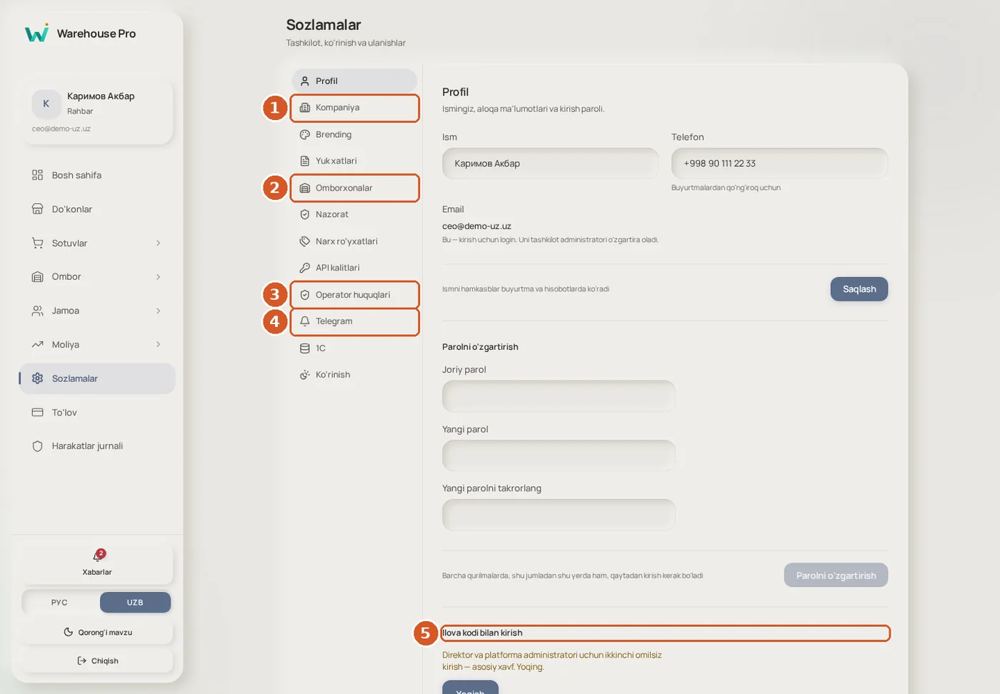
- 1«Kompaniya» — rekvizitlar, valyuta, chegirma chegarasi, buyurtma nuqtasi (1-kun)
- 2«Omborxonalar» — asosiy ombor va qo'shimchalari (1-kun)
- 3«Operator huquqlari» — operatorga nima mumkin, nima mumkin emas (2-kun)
- 4«Telegram» — buyurtma, qarz va qoldiq haqida xabarlar (5-kun)
- 5«Ilova kodi bilan kirish» — direktor uchun ikki bosqichli himoya (2-kun)


1-kun. «Mahsulotlar»: katalogni yuklash
Nima uchun: buyurtmani faqat katalogdagi mahsulotga olish mumkin. Sotish narxi — tushum. Tannarx — P&L dagi foyda. Shtrix-kod — kirim va yig'ishda skaner. Qadoq — do'konda quti bilan sanash.
- «Mahsulotlar» → «Import» → «Shablonni yuklab olish». Excel fayl ochiladi, ustunlari: «Код», «Штрихкод», «Название», «Категория», «Себестоимость (сум)», «Цена продажи (сум)», «Ед. измерения», «Вес (кг)», «Мин. остаток», «Остаток на складе», «Описание», «Фото URL».
- Qatorlarni to'ldiring. Majburiy: kod, nom va sotish narxi. Tannarx — P&L foydani hisoblashi uchun. «Ед. измерения»: kg, l, pcs (dona), box, pack. Har bir mahsulotning kodi o'ziniki bo'lsin — keyin shu kod bo'yicha qidiriladi va skanerlanadi.
- Faylni import oynasiga tashlang yoki «yoki tanlash uchun bosing» maydonini bosing. Dastur birinchi qatorlarni va xatolarni ko'rsatadi. Xato bo'lsa — faylda tuzating va qayta yuklang. Hali hech narsa yozilmagan.
- «Import qilish — N qator» → «Tayyor». Mahsulotlar ro'yxatda paydo bo'ldi. Tepadagi «JAMI MAHSULOTLAR» soni fayldagi qatorlar soniga teng bo'lishi kerak.
- Bitta mahsulot qo'shish — «Qo'shish»: «Kod *», «Shtrix-kod (ixtiyoriy)», «Nomi *», «Kategoriya», «Tannarx», «Sotish narxi *», «1 dona vazni, kg (quti=8)», «Qayta buyurtma chegarasi», «Qadoqda, dona (12)», «Qadoq nomi (quti)», «Tavsif» → «Saqlash».
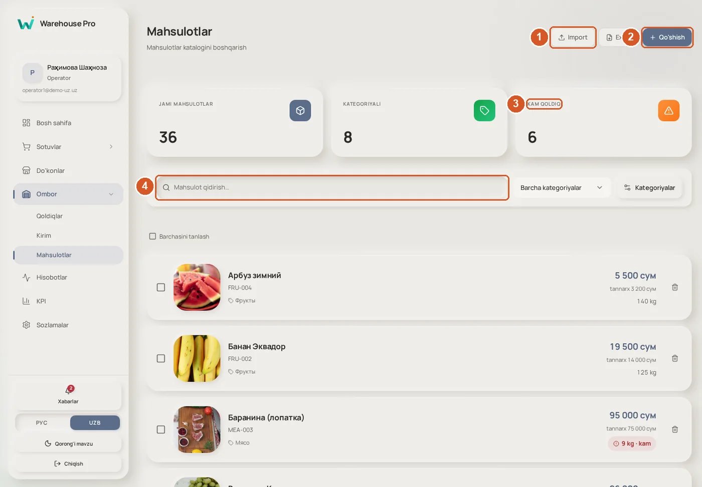
- 1«Import» — Excel shabloni, yozishdan oldin har qator tekshiriladi
- 2«Qo'shish» — bitta mahsulotni qo'lda kiritish
- 3«Kam qoldiq» — nechta mahsulot o'z chegarasidan past
- 4Nom va kod bo'yicha qidiruv

- «Qayta buyurtma chegarasi» — qoldiq shu sondan tushsa, mahsulot «Kam stok»ga va «Qayta buyurtma» ilovasiga tushadi. Yetkazib beruvchidan tovar kelguncha qancha sotilsa, shuncha qo'ying.
- «Qadoqda, dona» va «Qadoq nomi» — agent do'konda «2 quti» deb buyurtma bersin, ombor esa «24 dona»ni ko'rsin. «1 dona vazni» — yuklash varaqasining og'irligi uchun.
- «Rasm» — 2 MB gacha. Rasmni agent katalogda va telefondagi mahsulot sahifasida ko'radi. Rasm bilan do'konda buyurtma tezroq olinadi.
1-kun. «Kirim»: boshlang'ich qoldiq
Nima uchun: qoldiq faqat kirim orqali paydo bo'ladi. Kirimning har bir qatori — muddati bor partiya. Keyin ombor buyurtmani shu partiyalar bo'yicha yig'adi: «muddati oldin tugaydigan — oldin ketadi» (FEFO). Direktor esa tez orada muddati tugaydigan tovarni ko'radi.
- Javonlarni sanab chiqing. Har bir mahsulotning haqiqiy soni kerak. Oziq-ovqat uchun — partiya raqami va muddati, yorliqdan.
- «Kirim» → «Yangi kelish». Boshlang'ich qoldiq uchun «Mashina ma'lumotlari» va «Sana va xarajatlar»ni tegmang (sana o'zi bugungi bo'ladi). «Yetkazib beruvchi va qarz» — «Yetkazib beruvchisiz». Bo'lmasa dastur sizga yetkazib beruvchiga qarz yozib qo'yadi.
- Mahsulot qatori: «Mahsulotni tanlang…» → «Miqdor» → «Tannarx» (1 dona xarid narxi) → «Partiya» → «Muddati». Keyingi mahsulot — «Mahsulot qo'shish». Skaner bilan tezroq: kursorni «Shtrix-kod + Enter» maydoniga qo'ying, har bir skan — bitta dona qo'shadi.
- «Izoh»ga «boshlang'ich qoldiq» deb yozing. Bir yildan keyin bu raqamlar qayerdan kelganini shu izoh tushuntiradi.
- Shaklning pastida: «Saqlash va yakunlash». «Ombor»dagi qoldiq darhol o'zgaradi. Shunchaki «Saqlash» — qoralama: qoldiq o'zgarmaydi, kirim «Kutilmoqda» holatida qoladi. Keyin ro'yxatdan yakunlash mumkin: «Tushirilmoqda» → «Yakunlash».
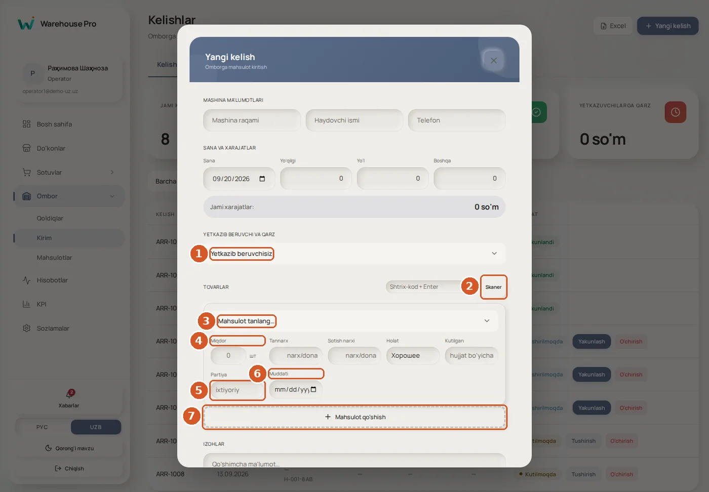
- 1«Yetkazib beruvchisiz» — boshlang'ich qoldiq uchun; bo'lmasa yetkazib beruvchiga qarz paydo bo'ladi
- 2«Skaner» va «Shtrix-kod + Enter» maydoni — har bir skan bitta dona qo'shadi
- 3«Mahsulotni tanlang…» — 1-kundagi katalogdan, nomi bo'yicha
- 4«Miqdor» — javondagi haqiqiy soni
- 5«Partiya» — yorliqdagi raqam
- 6«Muddati» — FEFO va «muddati tugayapti» degan ogohlantirish shunga qarab ishlaydi
- 7«Mahsulot qo'shish» — keyingi qator
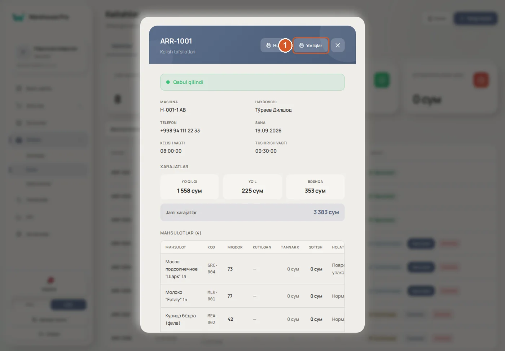
- 1«Yorliqlar» — shu partiya qutilariga shtrix-kodlar
1-kun. Tekshiruv: «Ombor»
Nima uchun: «Ombor» — qoldiq agent do'konda ko'radigan holda ko'rsatiladigan yagona joy. «Mavjud» = «Jami» minus «Zahira» (allaqachon olingan buyurtmalarga band qilingan tovar). Bu yerdagi raqamlar javon bilan to'g'ri kelmasa — ertaga hamma buyurtma havoga olinadi.
- «Ombor» → «Qoldiqlar» bo'limi. Tepada to'rtta plitka: «Pozitsiyalar» (va umumiy og'irlik kg da), «Qoldiq qiymati» (tannarx bo'yicha), «Chegaradan past» va «Sotuvsiz · 30 kun» — oxirgi ikkitasi bosiladi va «Qayta buyurtma» hamda «O'lik stok» bo'limlariga olib boradi.
- Ro'yxatni ko'rib chiqing: har bir mahsulotning «Mavjud» soni javondagi bilan bir xil bo'lsin. «Zahira» 1-kuni — nol. Qizil qatorlar — chegaradan past: yoki yana buyurtma bering, yoki mahsulot kartochkasidagi «Qayta buyurtma chegarasi»ni to'g'rilang.
- Sonda xato bo'lsa — qatordagi «Tuzatish»: «AMAL TURI», «MIQDOR», «IZOH» (sabab) → «Qo'llash». Tuzatish «Harakatlar jurnali»ga tushadi — bu normal, shunday bo'lishi kerak.
- Farq ko'p bo'lsa — «Inventarizatsiya» bo'limi → «Yangi inventarizatsiya»: dastur shu paytdagi qoldiqni oladi, siz javonlarni sanaysiz (qo'lda yoki «Shtrix-kod + Enter» / «Skaner») → «Qo'llash» — hamma farq bitta hujjat bilan o'tkaziladi.
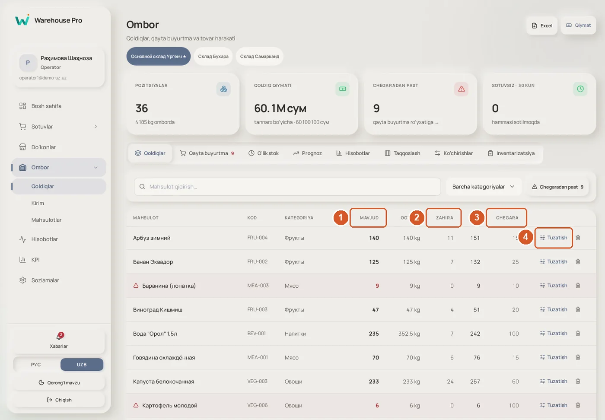
- 1«MAVJUD» — agent shuni ko'radi; javon bilan bir xil bo'lishi kerak
- 2«ZAHIRA» — olingan, lekin hali jo'natilmagan buyurtmalar uchun band qilingan
- 3«CHEGARA» — undan past bo'lsa qator qizaradi va ogohlantirish keladi
- 4«Tuzatish» — sonni sabab bilan to'g'rilash
- «Sozlamalar» → «Kompaniya»: valyuta, rekvizitlar, chegirma chegarasi va buyurtma nuqtasi to'ldirilgan
- Hamma mahsulot yuklangan; sotiladiganlarida sotish narxi, tannarx va o'lchov birligi bor
- Boshlang'ich qoldiq kirimi yakunlangan — holati «Qabul qilindi», «Kutilmoqda» emas
- «Ombor» → «Qoldiqlar»: «Mavjud» javon bilan bir xil, «Zahira» — nol
2-kun. «Do'konlar»: nuqtalar va hududlar
Nima uchun: do'kon — bu sizga pul qarz bo'lgan odam. Boshlang'ich qarz va kredit limiti shu yerda kiritiladi. Shu kundan boshlab qarzni dastur o'zi yuritadi: har bir yetkazish qarzni oshiradi, har bir to'lov kamaytiradi. Hudud — agentning marshruti; supervayzer oylik rejani shu hudud bo'yicha tuzadi.
- «Do'konlar» → «Import» → «Shablonni yuklab olish». Ustunlar: «Название», «Владелец», «Телефон», «Город», «Район», «Адрес», «Долг», «Широта», «Долгота», «Территория», «Примечания».
- «Долг» — do'kon bugungi kunda daftar bo'yicha sizga qancha qarz. Qarz qo'lda faqat shu bir marta kiritiladi: keyin u yetkazish va to'lovlar bo'yicha hisoblanadi. «Территория» — hudud nomi; bunday hudud bo'lmasa, import uni o'zi yaratadi.
- Faylni yuklang → oldindan ko'rishni tekshiring → «Import qilish — N qator». Tepadagi «JAMI DO'KONLAR» va «UMUMIY QARZ» daftaringiz bilan bir xil bo'lishi kerak.
- Bitta do'kon — «Qo'shish»: «Nomi *», «Egasi», «Telefon», «Shahar», «Tuman», «Manzil», «Telegram havolasi (GPS uchun)» — Telegramdagi joylashuv havolasini qo'ying, koordinatalar o'zi tushadi; «— Agent —», «— Hudud —» → «Saqlash».
- Hududlar: «Hududlar» (o'ng tepadagi tugma) → «Hudud qo'shish» — nomi va rangi. Yoki «Do'konlardan» → «Shaharlar bo'yicha» / «Tumanlar bo'yicha» — dastur yuklangan manzillardan hududlarni o'zi tuzadi.
- Kredit limiti — do'kon kartochkasida: do'konni oching → «O'zgartirish» → «Kredit limiti (bo'sh — limitsiz)» → «Saqlash». Limitdan ortiq qarzga buyurtma agentda o'tmaydi: dastur «limit oshib ketdi» deb rad etadi — agent to'lov oladi yoki ofis limitni oshiradi.
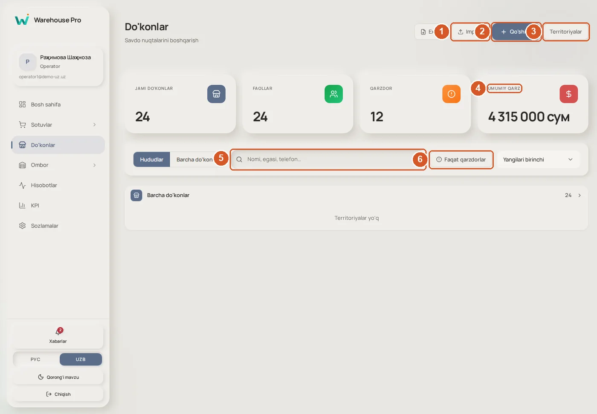
- 1«Import» — Excel shabloni, boshlang'ich qarz va hudud bilan
- 2«Qo'shish» — bitta nuqtani qo'lda
- 3«Hududlar» — agentlar marshrutlari
- 4«UMUMIY QARZ» — importdan keyin daftar bilan bir xil bo'lishi kerak
- 5Nom, egasi va telefon bo'yicha qidiruv — uchalasini ham to'ldiring
- 6«Faqat qarzdorlar» — hozir kim qarz


2-kun. «Foydalanuvchilar»: xodimlar va rollar
Nima uchun: rol — odam nimani ko'rishi va nimani o'zgartira olishini belgilaydi. Agent boshqaning do'konlarini va oyligini ko'rmaydi, operator P&L ni ko'rmaydi, kuryer faqat o'z yetkazishlarini ko'radi. Bu ham pulni himoya qiladi, ham tartib: har kim o'z ekraniga javob beradi.
- «Foydalanuvchilar» → «Yaratish». «Foydalanuvchi yaratish» shakli: «ISM *», «EMAIL *», «PAROL *» (kamida 8 ta belgi), «ROL *» → «Foydalanuvchi yaratish». Xodim shu parol bilan darhol kira oladi; parolni «Sozlamalar» → «Profil»da o'zi o'zgartiradi.
- Har bir rolga bittadan odam yarating: operator, supervayzer, agent, kuryer, merchandayzer. Rollar — quyidagi jadvalda. Ikkinchi direktor yaratib bo'lmaydi — shunday qilingan.
- Agentga hudud bering: agent qatoridagi «Ish zonasi» belgisi yoki sahifa pastidagi «Agentlar hududlari» bloki → «O'zgartirish» → hududlarni tanlang → «Saqlash». Hududsiz agentda 3-kuni reja bo'lmaydi.
- Xodim ketdi — «O'chirish» (qatordagi quvvat belgisi). Uning buyurtmalari, qarzlari va tarixi qoladi; lekin u boshqa kira olmaydi. Parolni unutdi — «Parolni tiklash» (kalit belgisi).
- Direktor ikki bosqichli himoyani yoqsin: «Sozlamalar» → «Profil» → «Ilova kodi bilan kirish» → «Yoqish» → «Sozlash kaliti»ni Google Authenticator ga kiriting → «Ilovadagi birinchi kod» → «Tasdiqlash va yoqish». Usiz baza nusxasini yuklab olib bo'lmaydi va harakatlar jurnalini tozalab bo'lmaydi.
- Operatoringiz «o'ng qo'l» emas, «telefonda o'tiradigan odam» bo'lsa: «Sozlamalar» → «Operator huquqlari» → «Buyurtmalarni o'chirish», «Qoldiqlarni tuzatish», «Mukofotni yuritish»ni olib tashlang → «Saqlash». Rol — yuqori chegara, bu yerda siz uni faqat pastga tushirasiz.
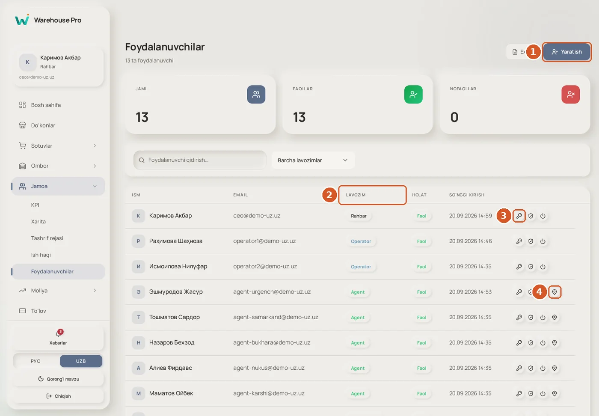
- 1«Yaratish» — ism, email, parol, rol; darhol kira oladi
- 2«ROL» — odam nimani ko'radi; qatorning o'zida o'zgartiriladi
- 3«Parolni tiklash» — xodim parolni unutsa
- 4«Ish zonasi» — tashrif rejasi uchun agentning hududlari
| Rol | Veb | Telefon | Nimani ko'radi |
|---|---|---|---|
| Rahbar (direktor) | ha | ha | Hammasini: pul, hisobotlar, P&L, oylik, sozlamalar, foydalanuvchilar, harakatlar jurnali |
| Operator | ha | ha (faqat ko'rish) | Buyurtmalar, do'konlar, mahsulotlar, ombor, kirim, qaytarishlar; oylik — faqat o'ziniki |
| Supervayzer | ha | ha | Xarita, tashrif rejasi, agentlarning KPI si va oyligi, do'konlar |
| Agent | qisman | ha | O'z do'konlari, buyurtmalari, rejasi, qarzlari, KPI si va oyligi |
| Kuryer | qisman | ha | O'z yetkazishlari va oyligi |
| Merchandayzer | qisman | ha | Tashrif rejasi va javon bo'yicha hisobotlar |
- Hamma do'konda telefon va hudud bor; «UMUMIY QARZ» daftar bilan bir xil chiqdi
- Hech bo'lmasa qarzdorlarga kredit limiti qo'yilgan
- Har bir xodim o'z paroli bilan kirdi va o'z ekranini ko'rdi
- Har bir agentda hudud bor
- Direktorda ikki bosqichli himoya yoqilgan


- Huquqlar: «Buyurtmalarni tahrirlash», «Buyurtmalarni o'chirish», «To'lov qabul qilish», «Nomenklaturani yuritish», «Narx ro'yxatlari», «Qoldiqlarni tuzatish va ko'chirish», «Yetkazib beruvchilar», «Do'konlarni olib tashlash», «Mukofotni boshqarish», «Fayldan yuklash».
- Direktorga huquq kerak emas — unda hammasi bor. Lavozim — yuqori chegara; bu belgilar operator uchun uni faqat pastga tushiradi.
3-kun. Dala: telefonlar, reja, birinchi buyurtmalar
Nima uchun: do'konda telefondan olingan buyurtma darhol qoldiqni band qiladi va operatorga tushadi — qo'ng'iroqsiz, qayta yozishsiz. Tashrif rejasi agentga qayerga borishni aytadi, supervayzerga — kim borganini ko'rsatadi.
- Agentlar, kuryerlar va merchandayzerlarga ilovani o'rnating (APK — dastur yetkazib beruvchisidan). Kirish — «Foydalanuvchilar»da yaratilgan email va parol bilan. Til — profilda.
- Har bir telefonda joylashuvga «har doim» ruxsat bering. Ruxsatsiz supervayzerning xaritasi bo'sh bo'ladi, tashriflar tasdiqlanmaydi.
- Supervayzer vebda: «Tashrif rejasi» → «Oy» bo'limi → «Xodim», «Nimani qo'yamiz» (hudud), «Hafta kunlari» → «Oyni taqsimlash» (tanlagandan keyin tugmada «Taqsimlash — N ta tashrif» yozuvi chiqadi). Dastur nuqtalarni kunlarga o'zi taqsimlaydi.
- Agent telefondan: bosh sahifada «Bugungi tashriflar» ko'rinadi. «YANGI BUYURTMA» plitkasi (yoki «Do'konlar»da do'kon yonidagi savat belgisi) → do'kon → «Mahsulot qo'shish»: «Nomi yoki artikuli…» bo'yicha qidiruv yoki skaner, qator yonidagi «+» — qo'shishdan oldin qoldiq ko'rinadi → «Tayyor» → miqdor «− maydon +» → «Davom etish →» → to'lov usuli → «Buyurtmani tasdiqlash».
- Birinchi buyurtmalarni supervayzer yonida turib oling: do'konda bir daqiqa — va odam boshqa so'ramaydi. Shu paytda operator «Buyurtmalar»ni kuzatadi: buyurtma «Yangi» holatida paydo bo'lishi kerak.
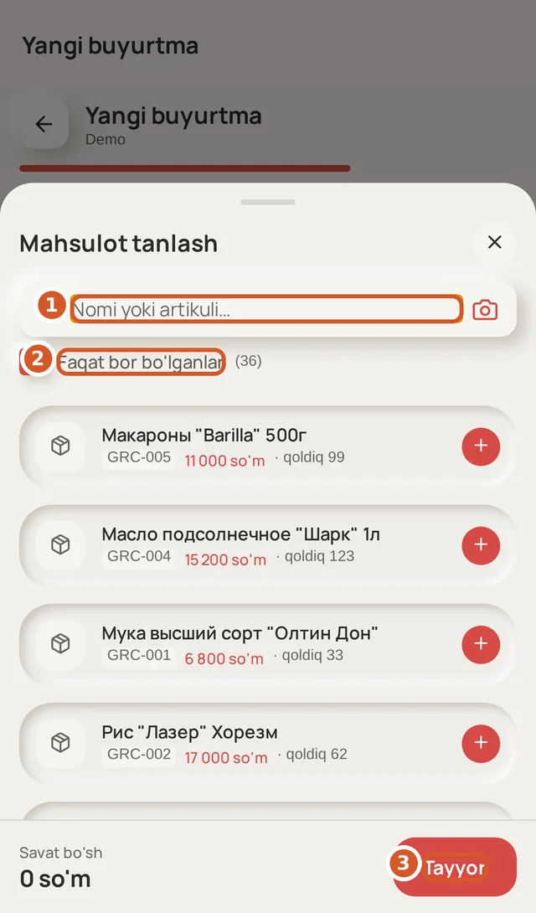
- 1«Nomi yoki artikuli…» — qidiruv; kamera belgisi — shtrix-kod skaneri
- 2«Faqat bor bo'lganlar» — omborda yo'q tovarni ko'rsatmaslik
- 3«Tayyor» — savatga: u yerda «− maydon +» va «Davom etish →»
- Hamma agentda bir haftalik reja bor
- Agentning birinchi buyurtmasi operatorning «Buyurtmalar»ida «Yangi» holatida ko'rinadi
- «Ombor»da buyurtma qilingan mahsulotda «Zahira» paydo bo'ldi
- Agent supervayzerning «Xarita»sida ko'rinadi
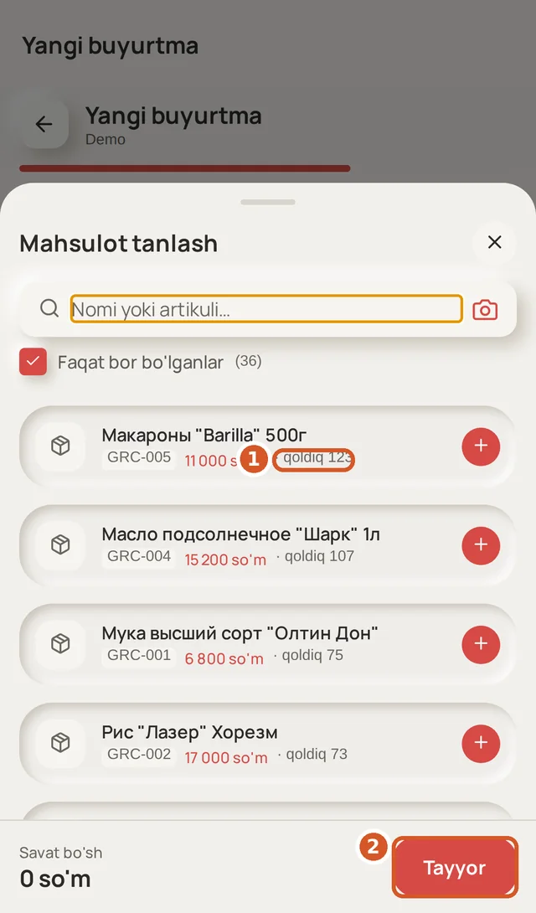
- 1Mahsulot qatori: bossangiz — bitta qo'shiladi; qoldiqdan ko'p bermaydi
- 2«Tayyor» — buyurtmaga qaytish
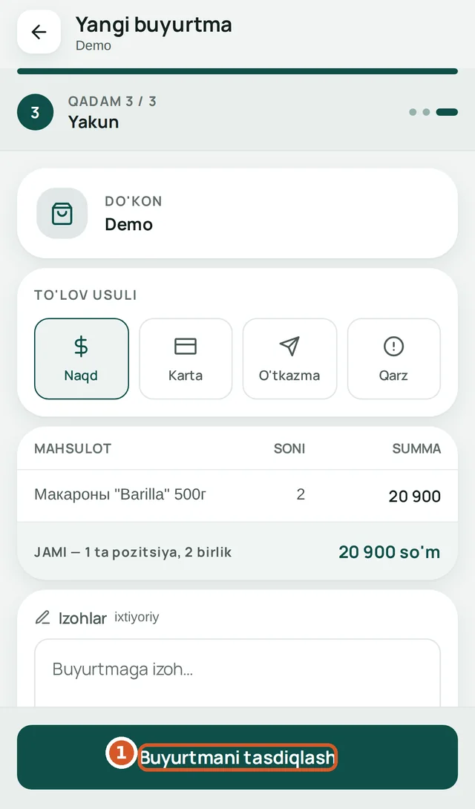
- 1«Buyurtmani tasdiqlash» — buyurtma operatorga ketadi va qoldiqni band qiladi
4-kun. Ombor va yetkazish
Nima uchun: bu kun qoldiq pulga aylanadi. Varaqa — omborga topshiriq va kuryerning reysi. Yig'ish — partiyalarni hisobdan chiqaradi. Yetkazish — naqd pulni va do'kon qarzini yozadi. Har bir qadamni bitta odam qiladi, dastur esa kim qilganini eslab qoladi.
- Operator: «Buyurtmalar» → bugungi buyurtmalarga belgi qo'ying → «Yuklash varaqasi» → «Varaqa tuzish» → «Chop etish» yoki «Tayyor, chop etmasdan». Varaqa — omborga topshiriq va bir vaqtda kuryerning reysi.
- Yig'ish: «Yuklash varaqalari» → «Yig'ish». Dastur qancha kerakligini va qaysi partiyadan olishni ko'rsatadi (FEFO). Omborchi «Yig'ildi» sonini faqat yetmagan joyda o'zgartiradi → «Yig'ishni tasdiqlash». Kam bo'lsa — bu kamomad, ofis buni darhol biladi.
- Kuryer: «Yuklash varaqalari» oynasida, varaqa qatoridagi «Kuryer tayinlanmagan» ro'yxatidan odamni tanlang — u varaqadagi hamma buyurtmaga qo'yiladi. Kuryerning telefonida marshrut paydo bo'ladi.
- Yetkazish: kuryer «Hammasiga yo'lga chiqdim (N)» ni bosadi. Nuqtada — naqd pul summasi va «Yetkazildi». Yetkazilmasa — «Yetkazilmadi» va sababi. Qisman to'lov yoki qaytarish — «Batafsil rasmiylashtirish».
- Kechqurun operator solishtiradi: «Buyurtmalar» → «Yetkazilgan» filtri. Kuryerning naqd puli — har bir buyurtma kartochkasida. Do'kon qarzi — uning kartochkasida va «Hisobotlar» → «Qarzlar»da.
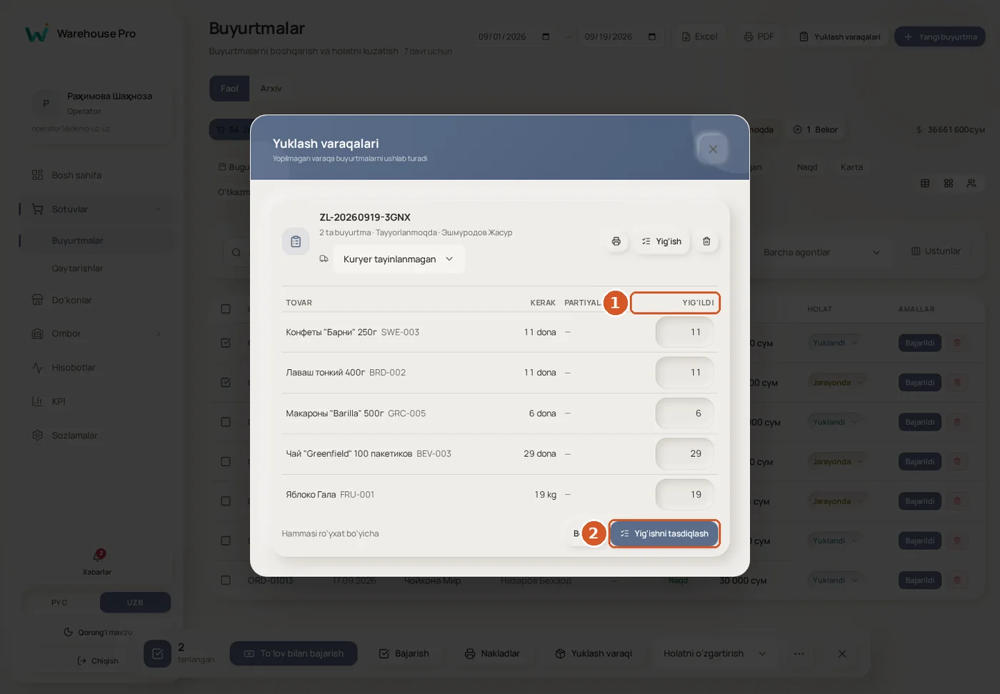
- 1«Yig'ildi» — faqat yetmagan joyda o'zgartiring
- 2«Yig'ishni tasdiqlash» — varaqa «Tayyor» bo'ladi
- Varaqa yig'ildi, kuryer tayinlandi
- Buyurtma «Yuklandi» → «Yetkazildi» yo'lini o'tdi
- «Ombor»da «Mavjud» aynan jo'natilgan songa kamaydi
- Do'kon qarzi va kuryerning naqd puli qog'oz bilan bir xil
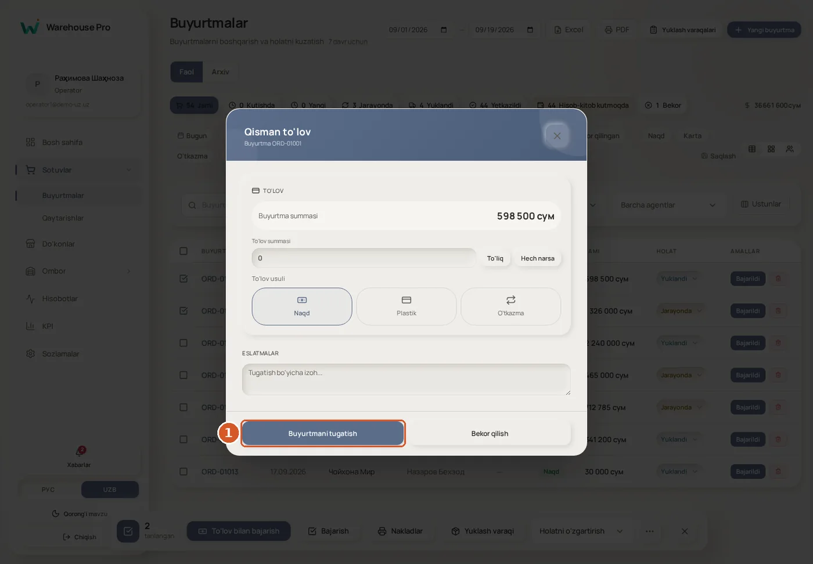
- 1«Buyurtmani tugatish» — qoldiq chiqadi, pul va qarz yoziladi
5-kun. «Bosh sahifa»: kunning 5 ta savoli
Nima uchun: shu kundan boshlab siz so'rashni to'xtatib, ko'rishni boshlaysiz. Direktorning bosh sahifasi 5 ta savolga javob beradi: qancha sotdik, qancha yetkazdik, bizga qancha qarz, foyda qancha va nima «yonyapti».
- Direktor bo'lib kiring. «Bosh sahifa»: «TUSHUM · BUGUN», «BUYURTMALAR · BUGUN» va ostida «Bugun yetkazildi N tadan M», «MIJOZLAR QARZI», «YALPI FOYDA».
- Pastda — ogohlantirish kartochkalari: kam qoldiq, muddati tugayotgan partiyalar, yangi buyurtmalar, muddati o'tgan qarzlar. Istalganini bosing — shu masala hal qilinadigan ekran ochiladi («Ombor», «Buyurtmalar», «Hisobotlar» → «Qarzlar»).
- «Savdo dinamikasi» — «7k» / «30k» / «Oy». «Ishdagi buyurtmalar» — hozir nechtasi ochiq. «Oxirgi buyurtmalar» — kim va qanchaga.
- Menyuda «KPI»: qaysi agent rejani bajaryapti, qaysi biri yo'q. Agent qatorini bossangiz — davr bo'yicha tahlil va oylik.
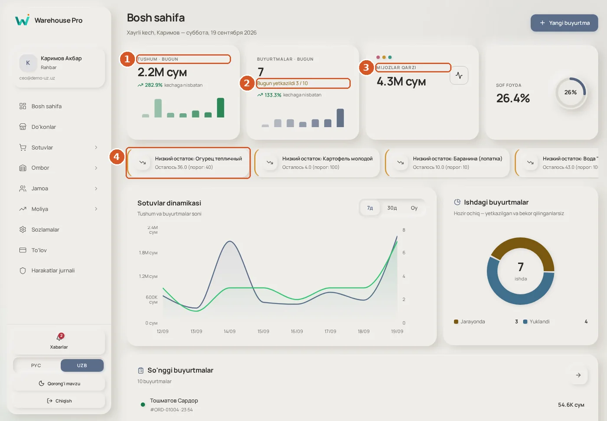
- 1Bugungi tushum va kechagi bilan solishtirish
- 2Bugun yetkazildi N tadan M — M N dan ancha katta bo'lsa, kuryerlarni tekshiring
- 3Mijozlar qarzi — «Hisobotlar» → «Qarzlar»ga olib boradi
- 4Ogohlantirishlar — har biri kerakli ekranni ochadi
5-kun. «Hisobotlar» va «Qarzlar»
Nima uchun: bosh sahifa bugunni ko'rsatadi, hisobotlar — davrni. Bu yerda nima sotilayotgani, qaysi agent olib kelayotgani ko'rinadi. Eng muhimi — do'konlarda qancha pul qolib ketgani va qachondan beri.
- «Hisobotlar» → davr «7 kun» / «30 kun» / «90 kun». «Umumiy» bo'limi: «TUSHUM», «BUYURTMALAR», «O'RTACHA CHEK», «QARZDA QOLGAN»; «Tashriflar va buyurtmalar» grafigi; agentlar bo'yicha «Bugungi reja»; pastda «Top mahsulotlar», «Top do'konlar», «Eng yaxshi agentlar», «Eng ko'p qarzdorlar».
- «Savdo» — agentlar va mahsulotlar bo'yicha. «Agentlar» — kim olib kelyapti, kim tushib ketdi. «Xulosa» — joriy davr uchun Excel. «Chop etish» — chop etish oynasi (faylga saqlash uchun printer sifatida «Сохранить как PDF»ni tanlang). «Barcha yuklamalar» — hamma hisobot bir joyda.
- «Qarzlar» bo'limi: «Bizga qarz» — umumiy summa va qarzdorlar soni. Muddat bo'yicha 4 ta guruh: «7 kungacha», «8–30 kun», «31–60 kun», «60 dan ko'p». Sariq va qizil — bu pul ortidan borish vaqti kelgan.
- Pastdagi jadval — do'kon, qarz, eng eski qarzning muddati. Uning tepasidagi «Excel» va «Chop etish» — qo'ng'iroq qilish uchun qarzdorlar ro'yxati. Do'kon bo'yicha ko'chirma (har bir yetkazish, to'lov va qaytarish) va buyurtmasiz to'lov — «Do'konlar»da: do'konni oching → «To'lov qo'shish».
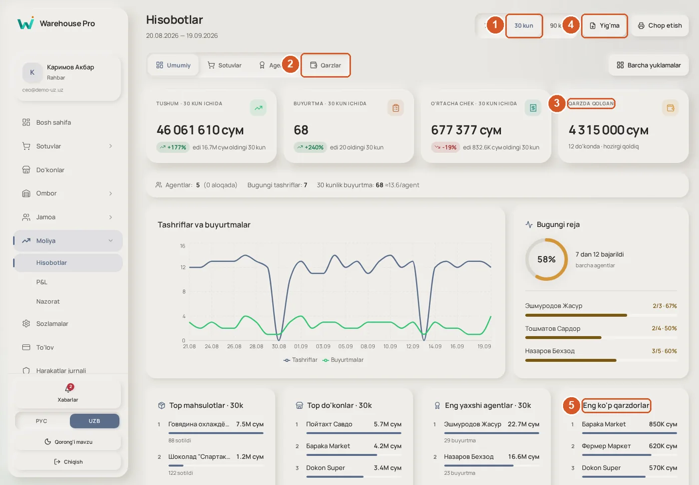
- 1Davr — ekrandagi hamma raqam qayta hisoblanadi
- 2«Qarzlar» — kim, qancha, qachondan beri
- 3«QARZDA QOLGAN» — bu pul allaqachon sizniki, lekin hali qo'lingizda emas
- 4«Xulosa» — tanlangan davr uchun Excel
- 5«Eng ko'p qarzdorlar» — qo'ng'iroqni kimdan boshlash
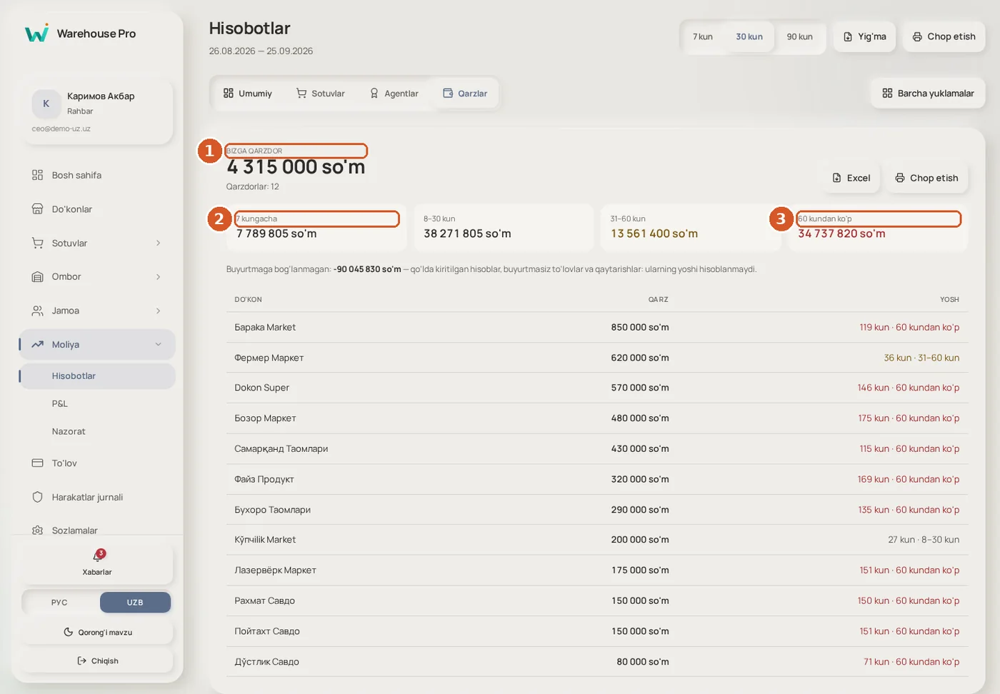
- 1«Bizga qarz» — hamma do'kon bo'yicha jami
- 2«7 kungacha» — oddiy muhlat
- 3«60 dan ko'p» — qizil: yo'qotish ehtimoli katta, o'zingiz hal qiling


5-kun. «P&L»: foyda qildikmi yoki zarar
Nima uchun: tushum — bu foyda emas. P&L tushumdan sotilgan tovarning tannarxini (kirimdagi partiyalar bo'yicha), kirim xarajatlarini va berilgan oylikni ayiradi. Va bitta raqam aytadi: «DAVRDA FOYDA» yoki «DAVRDA ZARAR».
- «P&L» → davr «7 kun» / «30 kun» / «90 kun» / «12 oy» / «Yil» / «Davr» (o'z sanalaringiz «Dan» — «Gacha»).
- Tepadagi kartochka — davr yakuni va o'tgan davr bilan solishtirish. O'ngda «YALPI FOYDA» (tushum minus tannarx) va «SOF FOYDA» (yana minus xarajatlar va oylik). Pastdagi chiziq tushum qayerga ketganini ko'rsatadi: «Tannarx», «Xarid», «Oylik», «Qoldi» — bo'sh qismlar chizilmaydi.
- To'rtta kartochka: «TUSHUM», «TANNARX», «YALPI FOYDA», «XARAJATLAR». Agar «TANNARX» — 0 so'm, foyda esa 100% bo'lsa — demak, mahsulotlarda tannarx to'ldirilmagan (1-kun). Bu raqam haqiqiy emas.
- «Oylar bo'yicha dinamika»: ustunlar — tushum va tannarx, chiziq — sof foyda. «Excel» va «PDF» — buxgalter uchun hisobot.
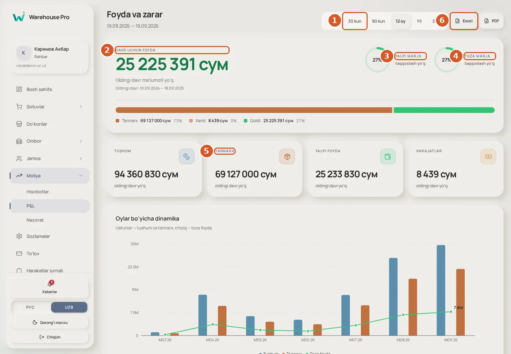
- 1Davr — bir haftadan bir yilgacha va o'z sanalaringiz
- 2«DAVRDA FOYDA» — hammasi shu bitta raqam uchun
- 3«YALPI FOYDA» — tushum minus sotilgan tovar tannarxi
- 4«SOF FOYDA» — yana minus xarajatlar va berilgan oylik
- 5«TANNARX» — 0 so'm bo'lsa, mahsulotlarda tannarx to'ldirilmagan
- 6«Excel» — buxgalterga shu davr uchun fayl
5-kun. «Ish haqi»
Nima uchun: oylik tushum hisoblanadigan o'sha buyurtma va yetkazishlardan hisoblanadi. Stavkalarni bir marta sozlasangiz, oy oxirida Excelsiz va bahssiz vedomost olasiz.
- «Ish haqi» → davr («Hafta» / «Oy» / «Chorak») → xodim qatorida «Oklad» → «OYLIK OKLAD», «KOMISSIYA, SAVDODAN %» → «Saqlash». Komissiya odam o'zi olgan buyurtmalardan hisoblanadi.
- Kuryerga — «KPI» menyusida → «Oylik sozlamasi» → «Kuryerlarga yetkazish uchun to'lov»: har bir yetkazilgan buyurtma uchun summa («so'm») yoki yetkazilgandan foiz («%») — har bir odam uchun alohida tanlanadi. O'sha yerda «Tushlik va yo'l puli» — ish kuni uchun.
- «HISOBLANDI», «TO'LANDI», «QOLDIQ» ustunlari o'zi hisoblanadi. «Faqat qoldiq bilan» — kimga hali qarzmiz.
- To'lash kuni: bittadan «To'lash» («To'lov» yoki «Avans», summa → «Berilganini yozish») yoki «Hammaga berish». Xodim olganini telefonda tasdiqlaydi. «Vedomost» — davr uchun Excel. Imzo uchun xarajat orderi — «To'lovlar» bo'limida «Orderni chop etish».
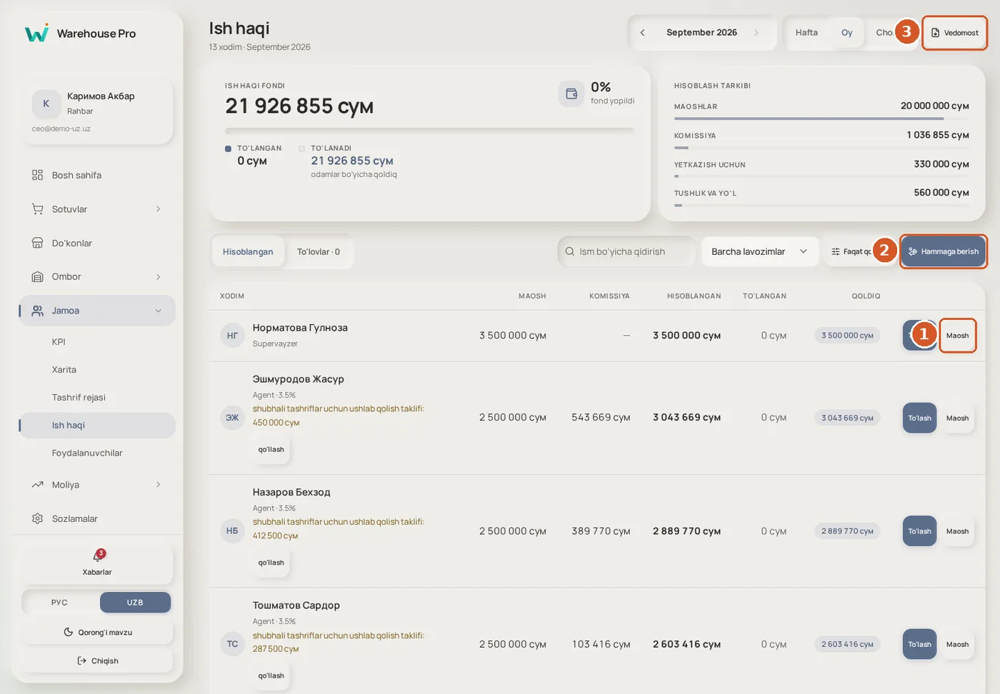
- 1«Oklad» — xodimning stavkasi va foizi
- 2«Hammaga berish» — oyni bitta tugma bilan yopish; xodimlar telefonda tasdiqlaydi
- 3«Vedomost» — tanlangan davr uchun Excel

5-kun. «Harakatlar jurnali» va Telegram
Nima uchun: harakatlar jurnali «buni kim qildi?» degan savolga javob beradi. Qoldiqning har bir tuzatilishi, to'lovning bekor qilinishi, limitning o'zgarishi, parolning tiklanishi — ism va vaqt bilan yozilgan. Telegram — yangi buyurtma va qarzlar haqida dasturni ochmasdan bilish uchun.
- «Harakatlar jurnali» → filtrlar: «Hammasi», «Foydalanuvchilar», «Buyurtmalar», «To'lovlar», «Do'konlar», «Ombor», «Tashkilot». Bugun u deyarli bo'sh — bu normal: bu yerga har bir bosish emas, faqat muhim harakatlar tushadi.
- Haftada bir marta «To'lovlar» (bekor qilingan to'lovlar) va «Ombor» (tuzatishlar va inventarizatsiya)ni ko'ring: pul shu ikki joyda yo'qoladi. «CSV yuklab olish» — buxgalter bilan tekshirish kerak bo'lsa.
- «Sozlamalar» → «Telegram» → «1 bosishda ulash» (bot ochiladi) yoki qo'lda: botga /start → raqamli ID ni nusxalang → «Sizning Telegram chat ID» → «Ulash». «Tekshiruv yuborish» — xabar kelayotganiga ishonch hosil qiling.
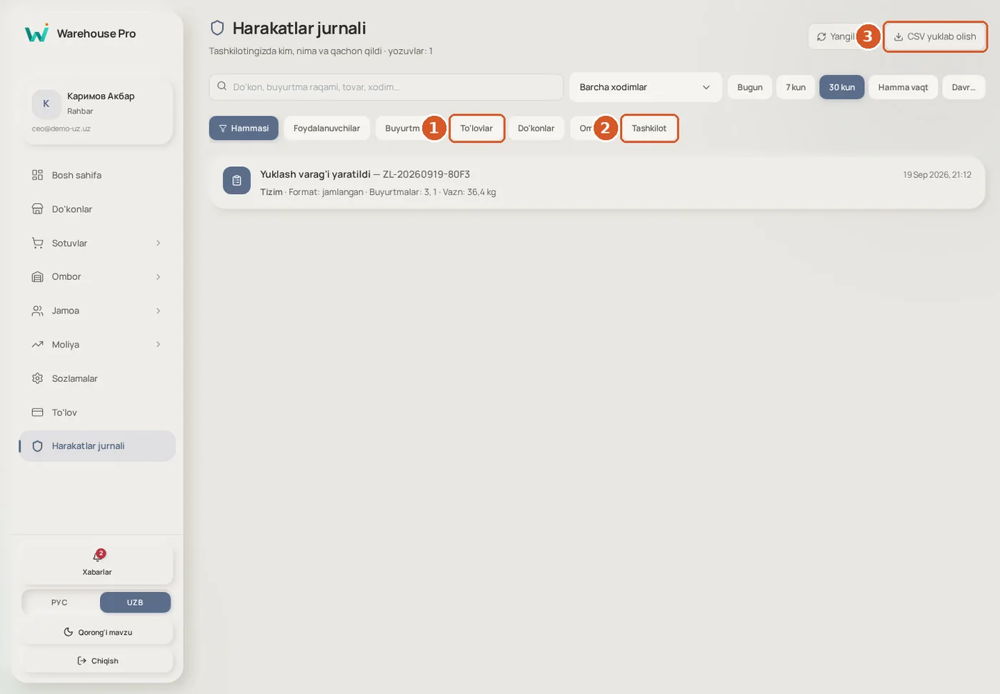
- 1«To'lovlar» — bekor qilingan va qabul qilingan to'lovlar: har hafta ko'ring
- 2«Tashkilot» — sozlamalar, limitlar, baza nusxalari
- 3«CSV yuklab olish» — buxgalter bilan tekshirish uchun fayl
- Direktor kunning 5 ta savoliga «Bosh sahifa»dan, boshqa ekranlarni ochmasdan javob berdi
- «Hisobotlar» → «Qarzlar»: summa bosh sahifadagi «MIJOZLAR QARZI» bilan bir xil
- P&L da tannarx noldan katta
- Hammaga oylik stavkalari qo'yilgan, vedomost kutilgandek chiqyapti
- Telegram ulangan, tekshiruv xabari keldi
5 kun o'tdi — endi kitob rollar bo'yicha davom etadi: har bir xodim 2-qismda o'z bobini o'qiydi, xo'jayin esa 4-qismni — pul qanday hisoblanishi haqida.
2-qism. Har bir xodimning ish kuni
Bu yerda har bir rol o'z kuni qanday o'tishi bo'yicha yozilgan: ertalab, kunduzi, kechqurun. Avval ofis (veb), keyin dala (telefon). Faqat o'z bobingizni o'qisangiz bo'ladi; direktorga hammasini bilish foydali. Tugma va menyu nomlari «qo'shtirnoq» ichida, dasturda qanday yozilgan bo'lsa, shunday.
Kim nimani ko'radi
Rol — bu chegara: odamga umuman nima ochiq. Vebdagi menyu va telefondagi bo'limlar har bir rolda o'ziniki. Quyida ular so'zma-so'z yozilgan — xodim kerakli bandni darrov topsin.
| Rol | Vebdagi menyu | Telefondagi bo'limlar | Nimaga javob beradi |
|---|---|---|---|
| Direktor | Hammasi: «Bosh sahifa»; «Do'konlar»; «Sotuvlar» (Buyurtmalar, Qaytarishlar); «Ombor» (Qoldiqlar, Kirim, Mahsulotlar); «Jamoa» (KPI, Xarita, Tashrif rejasi, Ish haqi, Foydalanuvchilar); «Moliya» (Hisobotlar, P&L, Nazorat); «To'lov»; «Harakatlar jurnali»; «Sozlamalar» | Supervayzerdagidek: «Bosh sahifa», «Do'konlar», «Rejalar», «Normalar», «Qarzlar», «Xarita» | Pul, odamlar, tarif, kompaniya sozlamalari |
| Operator | «Bosh sahifa»; «Do'konlar»; «Sotuvlar» (Buyurtmalar, Qaytarishlar); «Ombor» (Qoldiqlar, Kirim, Mahsulotlar); «Hisobotlar»; «KPI»; «Sozlamalar» | «Bosh sahifa», «Do'konlar», «Rejalar», «Normalar», «Qarzlar» («Xarita» yo'q) | Buyurtmalar, yuklash varaqalari, kirim, qaytarishlar, ombor |
| Supervayzer | «KPI», «Xarita», «Tashrif rejasi», «Do'konlar», «Buyurtmalar», «Hisobotlar», «Sozlamalar» | «Bosh sahifa», «Do'konlar», «Rejalar», «Normalar», «Qarzlar», «Xarita» | Dala: kim qayerda, tashrif rejasi, normalar, agentlar KPI si |
| Agent | «Mening kunim», «KPI», «Do'konlar», «Mahsulotlar», «Yangi buyurtma», «Mening buyurtmalarim», «Skaner», «GPS», «Sozlamalar» | «Bosh sahifa», «Do'konlar», «Katalog», «Buyurtmalar», «Profil» | Do'konda buyurtma olish, reja bo'yicha tashriflar, o'z do'konlarining qarzlari |
| Kuryer | «KPI», «Yetkazishlar», «Sozlamalar» | «Bosh sahifa», «Yetkazishlar», «Profil» | Tovarni yetkazish, pulni olish, yetkazilmagan tovarni rasmiylashtirish |
| Merchandayzer | «Mening kunim», «KPI», «Do'konlar», «Tashrif rejasi», «Hisobotlar», «Sozlamalar» | «Bosh sahifa», «Do'konlar», «Reja», «Profil» | Javon: surat, terib qo'yish ro'yxati, raqobatchilar |
- Band birorta bo'limda yo'q — demak, bu rolga u berilmagan. Manzil orqali qidirmang: server rad etadi.
- Operatorni roldan ham qattiqroq cheklash mumkin: «Sozlamalar» → «Operator huquqlari». O'chirilgani serverda ham yopiladi, faqat tugmalarda emas.
- O'z KPI si va o'z oyligini har kim ko'radi. Hamma agentlarning KPI sini — direktor, operator va supervayzer; boshqaning oyligini — faqat direktor va supervayzer.
- Til: vebda — menyuning pastida «РУС» / «UZB», telefonda — «Profil» → «Til». Bu shaxsiy sozlama, boshqalarga ta'sir qilmaydi.
Ofis operatori va ombor
Operator vebda ishlaydi. Chapdagi menyu: «Bosh sahifa», «Sotuvlar» (ichida — Buyurtmalar, Qaytarishlar), «Do'konlar», «Ombor» (Qoldiqlar, Kirim, Mahsulotlar), «Hisobotlar», «KPI», «Sozlamalar»; bo'lim bosish bilan ochiladi, siz turgan bo'lim o'zi ochiq turadi. Operatorda «Bosh sahifa» «Buyurtmalar»ni ochadi. Ombor hisobotlari — «Ombor» sahifasidagi «Hisobotlar» bo'limi; «Shtrix-kodlar» /barcode manzilida ochiladi.
Buyurtmalar — asosiy ish ekrani
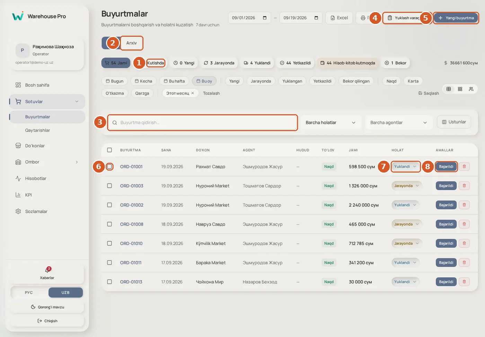
- 1Xulosa — har bir raqam filtr; «Kutishda» — ofis qarorini kutayotgan buyurtmalar
- 2«Arxiv» — yetkazilgan, bekor qilingan va o'chirilganlar; «Faol» — hali ishda bo'lgan hammasi
- 3Buyurtma raqami yoki do'kon bo'yicha qidiruv; agent — «Barcha agentlar» filtri orqali
- 4«Yuklash varaqalari» — yig'ish va kuryerlar
- 5«Yangi buyurtma» — qo'ng'iroq bo'yicha buyurtma
- 6Belgi — buyurtmani belgilash; pastda ommaviy amallar paneli chiqadi
- 7Holat qatorning o'zida, qayta so'ramasdan o'zgaradi; «Yetkazildi» «Buyurtmani tugatish» oynasini ochadi
- 8«Bajarildi» — «Buyurtmani tugatish» oynasi: nima yetkazildi va qancha to'landi
- Tepadagi xulosa: «Jami», «Kutishda», «Yangi», «Jarayonda», «Yuklandi», «Yetkazildi», «Hisob-kitob kutmoqda», «Bekor qilindi» — raqamni bossangiz, ro'yxat toraydi. O'ngda — ko'rsatilgan buyurtmalarning summasi. «Hisob-kitob kutmoqda» — yetkazilgan, lekin ofis hali pulini qabul qilmagan buyurtmalar (3-qism, «Buyurtma bo'yicha hisob-kitob»).
- Xulosa ostidagi tez filtrlar: «Bugun», «Kecha», «Shu hafta», «Shu oy», holatlar va to'lov usuli («Naqd», «Plastik», «O'tkazma», «Qarzga»). Tepadagi sanalar davrni belgilaydi. «Excel» va «PDF» ko'rsatilganini yuklab beradi.
- Bir nechta buyurtmani belgilang — pastda panel chiqadi: «To'lov bilan bajarish», «Bajarish», «Yuk xatlari», «Yuklash varaqasi», «Holatni o'zgartirish», «…» («Boshqa amallar») ichida — «Agent tayinlash», «Kuryer tayinlash» va tanlanganlar bo'yicha Excel.
- «Ustunlar» — keraksiz ustunlarni yashirish. O'ngdagi uchta belgi ko'rinishni almashtiradi: «Jadval», «Doska», «Agentlar bo'yicha».
«Bajarildi» tugmasi (va qatordagi «Yetkazildi» holati) «Buyurtmani tugatish» oynasini ochadi. Kuryer og'zaki hisobot berganda operator buyurtmani shu yerda uning o'rniga yopadi:
- «MAHSULOTLAR» blokida har bir pozitsiyada — «Qoldirdi» yoki «Qaytarish». Qaytarish uchun «Miqdor» va «Sabab»ni ko'rsating. Pastda «Qoldirildi» va «Qaytarish» ko'rinadi.
- «TO'LOV» blokida «To'lov summasi»ni kiriting yoki «To'liq» / «Hech narsa»ni bosing. Farq «Qarzga» ketadi. «To'lov usuli»ni tanlang.
- «Buyurtmani tugatish». Buyurtma «Yetkazildi» bo'ladi: qoldiq yetkazilgan bo'yicha hisobdan chiqadi, do'kon qarzi = yetkazilgan − to'lov.
Buyurtma kartasi: «Kutishda», kuryer, qisman yetkazish
Qatorni bossangiz, buyurtma kartasi butun sahifada ochiladi. Tepasida — «Orqaga», raqam, holat (shu yerda o'zgaradi, «Holat o'zgartirilsinmi?» savoli bilan), «Excel» va «Chop etish». Chapda — qarzi bilan «Xaridor», «Agent», «Yetkazib berish», «To'lov usuli», «Narxlar ro'yxati», «Chegirma (%)», «Tahrirlash» bilan tarkib, jami, «Izoh» va «Tuzatmalar tarixi». O'ngda — «Pul» (buyurtma bo'yicha hisob-kitob) va «Kuryer». Pastda — buyurtmaga izohlar.
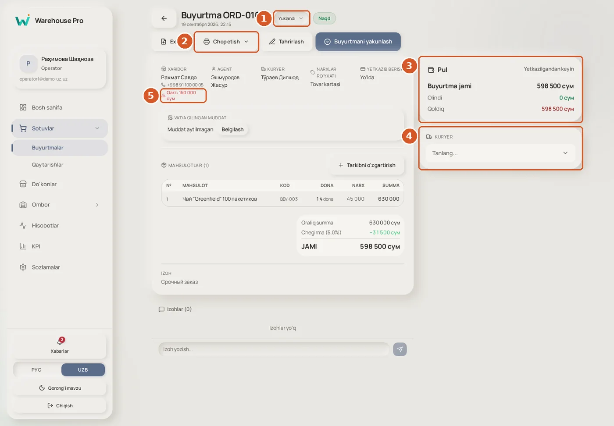
- 1Holat — bu yerda dastur «Holat o'zgartirilsinmi?» deb so'raydi; «Yetkazildi» «Buyurtmani tugatish» oynasini ochadi
- 2«Hujjatlar» — yuk xati, hisob-faktura, ТОРГ-12; yetkazilganida — «Chek 58 mm (QR)»
- 3«Pul» — jami, olindi, kuryer qo'lida, qoldiq; «Hisob-kitobni yopish»
- 4Bitta buyurtmaga kuryer; butun varaqaga — «Yuklash varaqalari»da
«Kutishda». Agentning chegaradan katta chegirmali buyurtmasi (chegarani direktor «Sozlamalar»da qo'yadi: «Dala xodimlari uchun chegirma chegarasi, %») do'konda rad etilmaydi — ofisga «Kutishda» holatida keladi va zahirani ushlab turadi. Ofisga «ORD-… buyurtmasi tasdiq kutmoqda» degan xabar keladi.
- Xulosada «Kutishda»ni bosing → buyurtmani oching. Karta tepasining ostida sariq yozuv: «Ofis tasdig'ini kutmoqda — tasdiqlash uchun holatni «yangi»ga o'tkazing», sababi bilan: N% chegirma M% chegaradan yuqori.
- Tarkib va chegirmani tekshiring. Kerak bo'lsa tarkib yonidagi «Tahrirlash» yoki «Chegirma (%)» maydoni → «Saqlash».
- Tasdiqlash — tepada «Yangi» holatini tanlang: buyurtma yig'ishga ketadi. Rad etish — «Bekor qilindi» holati: zahira bo'shaydi, agent buni telefonida ko'radi.
Qisman yetkazish. Kuryer «Batafsil rasmiylashtirish»ni bosgan bo'lsa (qarang: «Kuryer (telefon)»), tarkib qatorida «Qisman yetkazish — sabab» belgisi chiqadi: buyurtma qilingan miqdor chizilgan, yonida — yetkazilgani. «Tuzatmalar tarixi»da — «Qisman yetkazish» yozuvi: summa «bo'lgan → bo'ldi», kim kiritgan va nechta surat; «Pul» blokida — «Buyurtma jami» yetkazilgani bo'yicha, «Olindi», «Qo'lda» va «Qoldiq». Do'kon qarzi yetkazilgan bo'yicha hisoblanadi, buyurtma qilingan bo'yicha emas.
Buyurtma kartasi: hujjatlar, pul, kuryer
Nima uchun: bitta kartada buyurtma haqida so'raladigan hamma narsa bor: qaysi yuk xati chop etilgan, qancha olingan va qancha qarz qolgan, kim olib boryapti, nima va qachon tuzatilgan. Bo'limlar bo'ylab yurish shart emas.
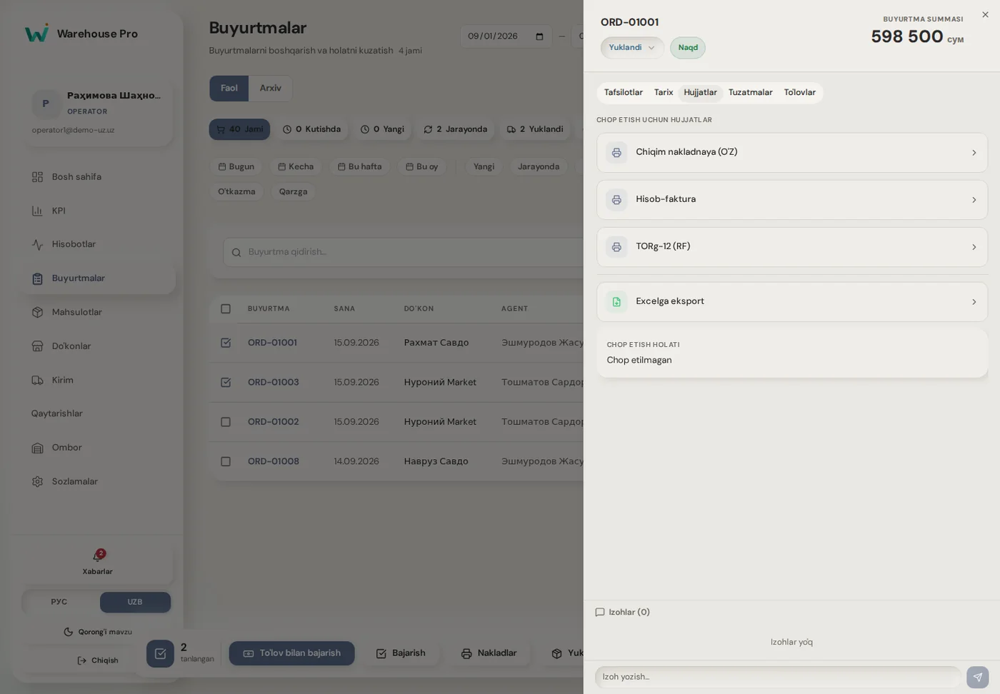
- «Pul»: «Buyurtma jami», «Olindi», «Qo'lda» (kuryer naqdni e'lon qilgan, lekin ofisga hali topshirmagan), «Naqdsiz yo'lda» (ko'chirmasiz karta yoki o'tkazma), «Qoldiq» — va «Hisob-kitob kutmoqda» yoki sana bilan «Hisoblangan» yozuvi. Pastda — har bir to'lov qatori; naqdsizda pul ko'chirmada tasdiqlanganda «Keldi» tugmasi.
- «Pulni qabul qilish» → «Naqd olindi» (odatda — kuryer e'lon qilgani), kerak bo'lsa «Yana qabul qilindi» karta yoki o'tkazma bilan, qoldiq — muddati bilan «do'kon qarziga» → «Hisob-kitobni yopish». E'lon qilinganidan kam bo'lsa — «Kamomad», u kuryerda qoladi (batafsil — 3-qism, «Buyurtma bo'yicha hisob-kitob»).
- «Kuryer»: «Kuryerni tanlang» ro'yxati — bitta buyurtmaga; butun reysga kuryer «Yuklash varaqalari»da qo'yiladi.
- «Tuzatmalar tarixi»: qisman yetkazish va to'lovlar — «bo'lgan → bo'ldi», kim kiritgan, suratlar. Pastdagi izohlar — ofisning buyurtma bo'yicha yozishmasi, uni ochgan hamma ko'radi.
«Bajarildi»: buyurtmani pul bilan yopish
Nima uchun: kuryer og'zaki hisobot berdi, buyurtma yetkazildi — qancha pul kelgani va qanday kelganini yozish qoldi. Bitta oyna: summa, usul, izoh. Undan keyin qoldiq chiqarilgan, to'lov ofis tomonidan yozilgan va buyurtma bo'yicha hisob-kitob darhol yopilgan — do'kon qarzi o'zi to'g'ri chiqadi.
- 1«Buyurtmani tugatish» — holat «Yetkazildi», pul va qarz yozildi
- Buyurtma qatorida «Bajarildi»ni bosing (buyurtma jarayonda yoki jo'natilgan bo'lishi kerak).
- «To'lov summasi»: «To'liq» — butun summa; bir qismi — sonni kiriting, qolgani do'konning qarzi bo'ladi; «Hech narsa» — pul bo'lmagan, butun buyurtma qarzga.
- «To'lov usuli»: «Naqd», «Karta» yoki «O'tkazma» — bu P&L dagi «Nima bilan to'lashadi»ga va Nazoratdagi «Daladagi pul»ga tushadi. «ESLATMALAR» — buxgalterga aytadigan gap bo'lsa.
- «Buyurtmani tugatish» → holat «Yetkazildi», kartadagi «Pul» blokida «olindi» belgisi bilan to'lov va «Hisoblangan» paydo bo'ladi, do'kon qarzida — qoldiq.
Telefon orqali buyurtma
«Yangi buyurtma» ikki qadamli oynani ochadi: «2 qadamdan 1-chi · do'kon va mahsulotlar» va «2 qadamdan 2-chi · tekshiruv va to'lov». Ofisda olingan buyurtma operator nomida bo'ladi. Uni do'konning agentiga yozish uchun (KPI va oylik) buyurtmani belgilang → «…» → «Agent tayinlash».
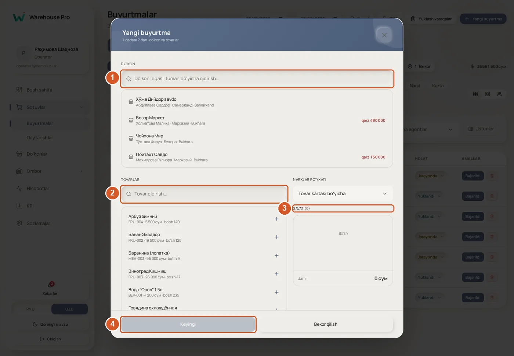
- 1Do'kon — nom, egasi, tuman bo'yicha qidiruv; o'ngda qizil — qarz
- 2Mahsulotlar — kod yoki nom; skanerdan: kod + Enter
- 3Savat — miqdor «−/+», «Jami»
- 4«Keyingi» — to'lovga; «Bekor qilish» hech narsa yozmaydi
- «Yangi buyurtma» → «Do'konni nom, egasi, tuman bo'yicha qidirish…» maydoniga uchtasidan istalganini yozing → do'konni bosing. Do'kon yonida «qarz N» ko'rinadi — mijozga buni darrov ayting.
- «Mahsulot qidirish…»ga kod yoki nomni yozing (yoki shtrix-kodni skanerlab Enter bosing) → «+» mahsulotni «Savat»ga soladi. Har bir mahsulotda «bo'sh N» yozilgan; nol bo'lsa «+» bosilmaydi.
- Savatda miqdorni «−/+» bilan to'g'rilang → «Keyingi».
- 2-qadam: tarkibni tekshiring. Kerak bo'lsa «Chegirma (%)». «To'lov usuli»ni tanlang — «Naqd», «Plastik», «O'tkazma», «Qarzga». «Izoh» — kuryer uchun. Pastda — «To'lashga jami».
- «Buyurtma yaratish». Buyurtma ro'yxatda «Yangi» holatida paydo bo'ladi va darhol qoldiqni band qiladi.
Yuklash varaqasi
Varaqa — omborga bitta reys uchun topshiriq: tanlangan buyurtmalar uchun qaysi tovarlardan qancha yig'ish. Bitta buyurtma faqat bitta yopilmagan varaqada bo'lishi mumkin.
- Buyurtmalarni belgilang (odatda bitta marshrutning «Yangi» va «Jarayonda»lari) → pastda «Yuklash varaqasi».
- «Yuklash varaqasi» oynasida «Format»ni tanlang: «Jamlangan» — ombor uchun mahsulotlar bo'yicha jami; «Marshrut bo'yicha» — kuryer uchun do'konlar bo'yicha.
- «Varaqa tuzish». Shu tugmagacha hech narsa yozilmaydi — «Bekor qilish» iz qoldirmaydi. Bosgandan keyin varaqa ZL-… raqamini oladi, buyurtmalar unga biriktiriladi.
- Oldindan ko'rishda — «Buyurtmalar», «Pozitsiyalar», «Vazn» va qatorlar. «Chop etish» — omborchiga topshiriq. «Tayyor, chop etmasdan» — oynani shunchaki yopish.
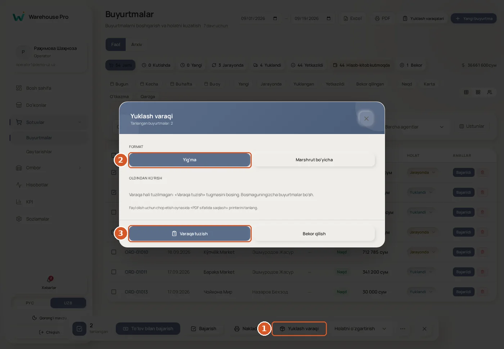
- 1Tanlangan buyurtmalar panelidagi «Yuklash varaqasi»
- 2Format: «Jamlangan» omborga, «Marshrut bo'yicha» kuryerga
- 3«Varaqa tuzish» — buyurtmalar faqat hozir biriktiriladi
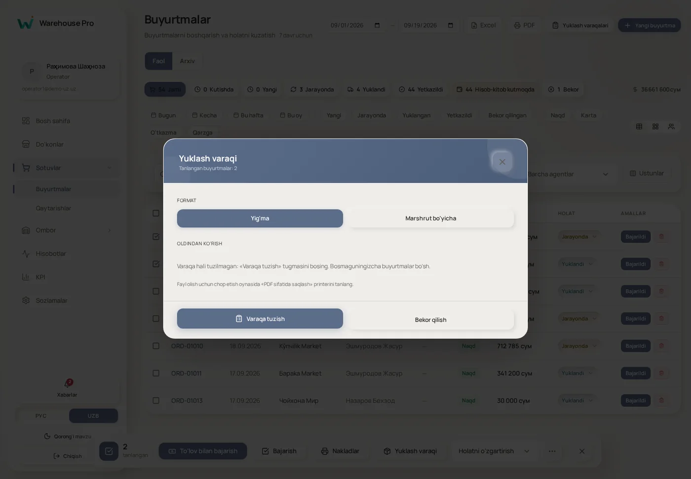
Varaqani yig'ish va kuryer
«Yuklash varaqalari» («Buyurtmalar» ekranining tepasidagi tugma) — oxirgi varaqalar, jo'natilganlari ham: raqami, nechta buyurtma, holati, agent, kuryer, kamomad.
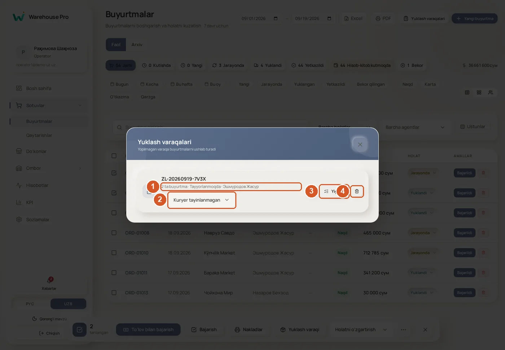
- 1Varaqa holati: «Tayyorlanmoqda» → «Tayyor» → «Yuklanmoqda» → «Yuklandi» → «Jo'natildi»
- 2Butun varaqaga kuryer — buyurtmalar uning telefoniga ketadi
- 3«Yig'ish» — qatorma-qator yig'ish
- 4Varaqani o'chirish — buyurtmalar bo'shaydi, buyurtmalarning o'ziga tegilmaydi
- «Yig'ish» → varaqa ostida jadval ochiladi: «Mahsulot», «Kerak», «Partiyalar», «Yig'ildi». «Yig'ildi»da avval «Kerak» soni turadi — faqat kamomad bo'lgan qatorlarni to'g'rilang.
- Pastda — «Hammasi ro'yxat bo'yicha» yoki «Kamomad: N poz.» → «Yig'ishni tasdiqlash». Varaqa «Tayyor» bo'ladi. Kamomad qatorlarda qoladi va ofisga xabar bo'lib ketadi.
- «Kuryer tayinlanmagan» maydonida kuryerni tanlang — varaqadagi hamma buyurtma uning telefonidagi «Yetkazishlar»da paydo bo'ladi.
- Keyin varaqa yonidagi tugma keyingi qadamni ko'rsatadi: «Yuklanmoqda» → «Yuklandi» → «Jo'natildi». Jo'natilgan varaqa yopiq: uning buyurtmalarini qaytadan yig'ish uchun yangi varaqa kerak.
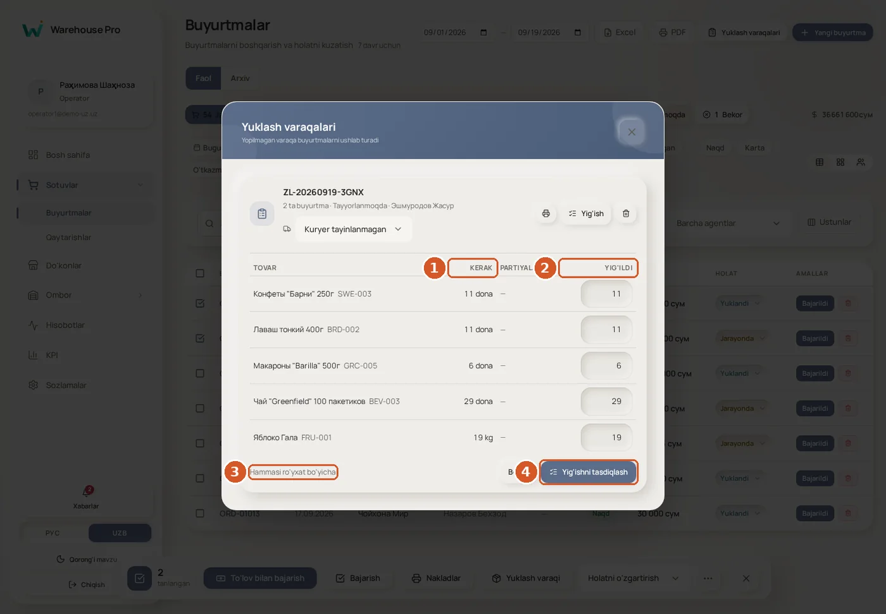
- 1Kerak — qancha buyurtma qilingan
- 2Yig'ildi — kam bo'lsa, haqiqiy sonni kiriting
- 3Yakun: «Hammasi ro'yxat bo'yicha» yoki «Kamomad: N poz.»
- 4«Yig'ishni tasdiqlash» → varaqa «Tayyor»
Kamomad bilan nima qilish: «Ombor» → «Mavjud» va mahsulotning partiyalarini solishtiring. Javon bilan farq inventarizatsiya bilan yopiladi (quyida «Ombor»ga qarang). Buyurtmaning o'zi o'zgarmaydi — do'konga kamroq borsa, kuryer qisman yetkazishni rasmiylashtiradi.
Kirim
«Kirim» — tovarning omborga kelishi: mashina, yetkazish xarajatlari, yetkazib beruvchi va unga qarz, partiya va muddati bilan tovar qatorlari. «Kontragentlar va qarzlar» bo'limi — yetkazib beruvchilar bilan hisob-kitob.
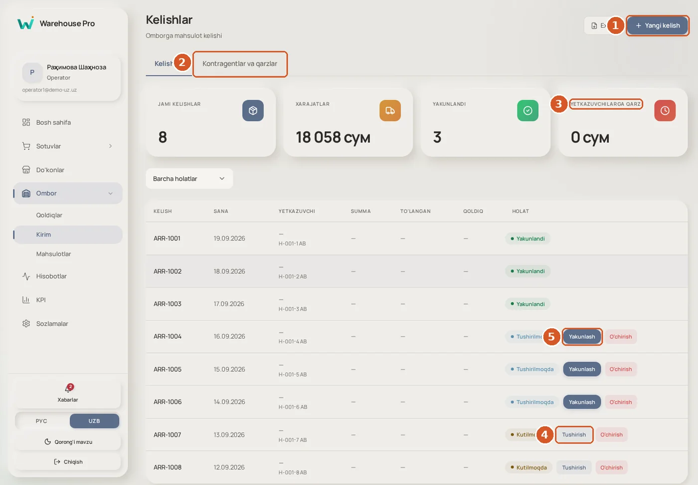
- 1«Yangi kelish»
- 2«Kontragentlar va qarzlar» — yetkazib beruvchilar, to'lovlar, yetkazib beruvchiga qaytarish
- 3Yetkazib beruvchilarga qarz — yopilmagan yetkazmalar bo'yicha summa
- 4«Tushirilmoqda» — kirim «Kutilmoqda» → mashina tushirilmoqda
- 5«Yakunlash» — faqat hozir ombordagi qoldiq oshadi
- «Yangi kelish» → «Mashina ma'lumotlari»: «Mashina raqami», «Haydovchi ismi», «Telefon» (ixtiyoriy).
- «Sana va xarajatlar»: «Sana», «Yoqilg'i», «Yo'l», «Boshqa» — «Jami xarajat» o'zi hisoblanadi va hisobotlarga tushadi.
- «Yetkazib beruvchi va qarz»: «Yetkazib beruvchisiz», ro'yxatdan yetkazib beruvchi yoki «+ Yangi yetkazib beruvchi…». Yetkazib beruvchida «Qarz summasi», «Valyuta», «To'lov muddati»ni ko'rsating. Dollar bo'lsa — «Bitim kunidagi kurs».
- «Mahsulotlar»: qator — «Mahsulotni tanlang…», «Miqdor», «Tannarx», «Sotish narxi», «Holati», «Kutilgan» (yuk xati bo'yicha), «Partiya», «Muddati». «Mahsulot qo'shish» — keyingi qator. Skaner: «Shtrix-kod + Enter» maydoni yoki «Skaner» tugmasi — har bir kod bitta dona qo'shadi.
- «Saqlash» — kirim «Kutilmoqda» holatida yozildi, qoldiq hali o'zgarmadi. «Saqlash va yakunlash» — darrov «Qabul qilindi», tovar omborda.
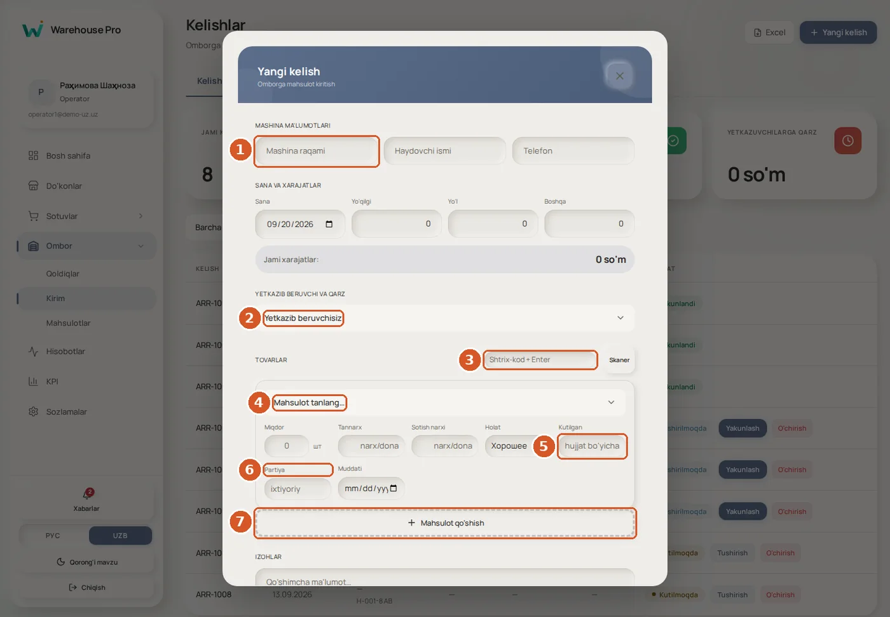
- 1Mashina ma'lumotlari — ixtiyoriy
- 2Yetkazib beruvchi va qarz — «Yetkazib beruvchilarga qarz» shu yerdan olinadi
- 3Shtrix-kod + Enter — klaviatura-skaner
- 4Tovar qatori: miqdor, tannarx, sotish narxi
- 5«Kutilgan» — yuk xati bo'yicha; «Miqdor» bilan farqi kirimda ko'rinadi
- 6Partiya va «Muddati» — bularsiz muddat hisoboti va FEFO ishlamaydi
- 7«Mahsulot qo'shish» — keyingi qator
- Ro'yxatdagi holatlar: «Kutilmoqda» → «Tushirilmoqda» tugmasi → «Yakunlash» → «Qabul qilindi». Qoldiq faqat «Qabul qilindi»da oshadi. Ungacha kirimni «O'chirish» mumkin.
- Qatorni bossangiz — «Kirim tafsilotlari»: mashina, xarajatlar, mahsulotlar. «Yuk xati» va «Yorliqlar» tugmalari hujjatni va partiya uchun shtrix-kodlarni chop etadi.
- «Kontragentlar va qarzlar»: filtrlar «Hammasi», «Qarzi bor», «Muddati o'tgan». Yetkazmada — «To'lash» → «Kontragentga to'lov» oynasi: «To'lov summasi», «To'lov usuli» → «To'lovni yozish». «Tovarni qaytarish» → «Qaytarish va qarzdan ayirish»: tovar ombordan chiqadi, yetkazib beruvchiga qarz tannarx bo'yicha kamayadi.
- 1«Yorliqlar» — shu partiyaga shtrix-kod chop etish
Kontragentlar va yetkazib beruvchilarga qarz
Nima uchun: qarzga olingan kirim — bu sizning yetkazib beruvchiga qarzingiz. Dastur uni do'konning sizga qarzi kabi yuritadi: «Bizga qarzdor» va «Qarz +», to'lovlar, solishtirma dalolatnoma, qarzdan chiqarib tovar qaytarish.

- Yetkazib beruvchiga to'ladingiz — «To'lovni yozish»: summa va sana. Qarz qoldig'idan ko'pini dastur qabul qilmaydi.
- Summa bo'yicha bahs — «Solishtirma dalolatnoma»: davr ichidagi hamma kirim va to'lovlar, boshlang'ich va oxirgi qoldiq bilan; chop etiladi va yuboriladi.
- Yaroqsizni qaytardingiz — «Mahsulot qaytarish» → «Qaytarish va qarzdan chiqarish»: qoldiq kamayadi, qarz ham. Dollardagi qarz o'sha yetkazib berish kursi bo'yicha qayta hisoblanadi.
Do'konlardan qaytarishlar
Qaytarishni agent do'konda telefondan kiritadi; ofis uni ko'rib chiqadi va o'tkazadi. Qaytarish o'tkazilmaguncha na qoldiq, na do'kon qarzi o'zgaradi.
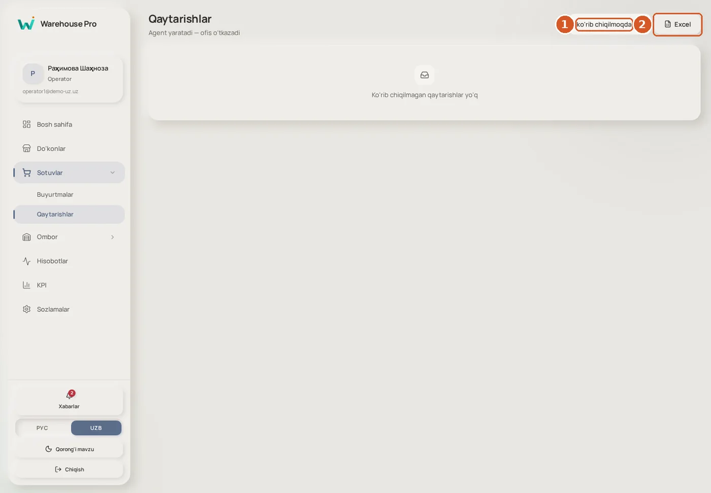
- 1Holat: «ko'rib chiqilmoqda», «tasdiqlandi», «o'tkazildi», «rad etildi», «hammasi»
- 2Excel — ko'rsatilgan ro'yxatni yuklab olish
- «Qaytarishlar»ni oching — avval «ko'rib chiqilmoqda» holatidagilar ko'rinadi: «Raqam», «Do'kon», «Sabab» («brak», «boshqa tovar», «muddati o'tgan», «shikastlangan», «boshqa»), «Summa».
- Qator yonidagi strelka «Qaytarish tarkibi»ni ochadi — mahsulotlar va miqdor. Kuryer olib kelgani bilan solishtiring.
- «Tasdiqlash» yoki «Rad etish». Rad etilgan qaytarish pulga tegmaydi.
- Tasdiqlanganida — «Omborga» (tovar yaroqli, qoldiqqa qaytadi) yoki «Hisobdan chiqarish» (brak, muddati o'tgan). Dastur so'raydi: «Qaytarish omborga o'tkazilsinmi?» / «…hisobdan chiqarilsinmi?» → tasdiqlang. Qaytarish «o'tkazildi» bo'ladi, do'konning shu buyurtma bo'yicha qarzi kamayadi.
«Oy davomida o'tkazildi — sabablar bo'yicha» bloki nima uchun qaytarishayotganini ko'rsatadi. «Muddati o'tgan» ko'payayotgan bo'lsa — «Ombor» → «Hisobotlar» → «Yaroqlilik muddati»ga qarang. «Boshqa tovar» bo'lsa — agent bilan gaplashing.
Ombor: qoldiq, zahira, bo'sh
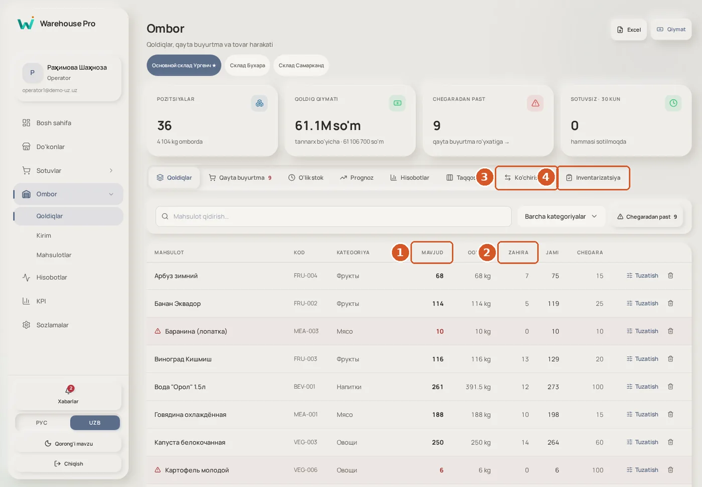
- 1«Mavjud» = «Jami» − «Zahira»; sotish faqat shuni mumkin
- 2«Zahira» — ochiq buyurtmalar ushlab turgan tovar
- 3«Ko'chirishlar» — omborlar orasida
- 4«Inventarizatsiya» — hujjat bilan qayta sanash
- Mahsulot qatori: «Mavjud», «Vazn», «Zahira», «Jami», «Chegara». Qizil uchburchak — qoldiq qayta buyurtma chegarasidan past (chegara mahsulot kartochkasida qo'yiladi).
- «Tuzatish» → «Tovar harakati»: «AMAL TURI» — «Kirim» (qo'shish), «Chiqim» (hisobdan chiqarish), «Tuzatish» (aniq miqdorni qo'yish) → «MIQDOR» → «IZOH» (masalan: «mijozdan qaytdi») → «Qo'llash». Har bir harakat tarixda qoladi.
- Plitkalar ostidagi bo'limlar lentasi: «Qoldiqlar»; «Qayta buyurtma» — nima allaqachon chegaradan past va sotuv tezligiga ko'ra qancha buyurtma qilish; «O'lik stok» — N kun sotilmagan tovarlar; «Prognoz» — qachon tugaydi; «Hisobotlar» — yaroqlilik muddatlari, kategoriyalar, harakat, aylanma; ikki omborda — «Taqqoslash» va «Ko'chirishlar»; qoldiqni tuzatish huquqi bilan — «Inventarizatsiya». Bo'limdagi hisoblagich faqat raqam harakatga chaqiradigan joyda turadi.
- Inventarizatsiya: «Yangi inventarizatsiya» shu paytdagi qoldiqni oladi → javonni sanang («Shtrix-kod + Enter» maydoni yoki «Skaner» bittadan qo'shadi; «Faqat farqlar» — filtr) → «Qo'llash». Ortiqcha va kamomad donada va tannarx bo'yicha ko'rsatiladi. «Bekor qilish» — hech narsani o'zgartirmaydi.
- O'ng yuqorida — «Excel» (qoldiqlar) va «Baho» (tannarx bilan qoldiqlar — rol uni ko'rsa). Jadval ustida — qidiruv, «Barcha kategoriyalar» va «Chegaradan past» chipi: erkin qoldig'i chegaradan oshmagan qatorlarni qoldiradi. Jadval ostida — qatorlar hisoblagichi, «Yana ko'rsatish» va sokin «Qoldiq satrlarini yaratish» havolasi: hali qoldiq satri bo'lmagan mahsulotlar uchun (ombor paydo bo'lishidan oldin yuklangan eski katalog).
Ombor ilovalari: o'lik stok, qayta buyurtma, prognoz, inventarizatsiya
Nima uchun: qoldiq — bu «qancha bor». To'rtta ilova keyingi savollarga javob beradi: nima harakatsiz yotibdi, nimani buyurtma qilish vaqti keldi, qachon tugaydi va hisob javon bilan to'g'ri keladimi.


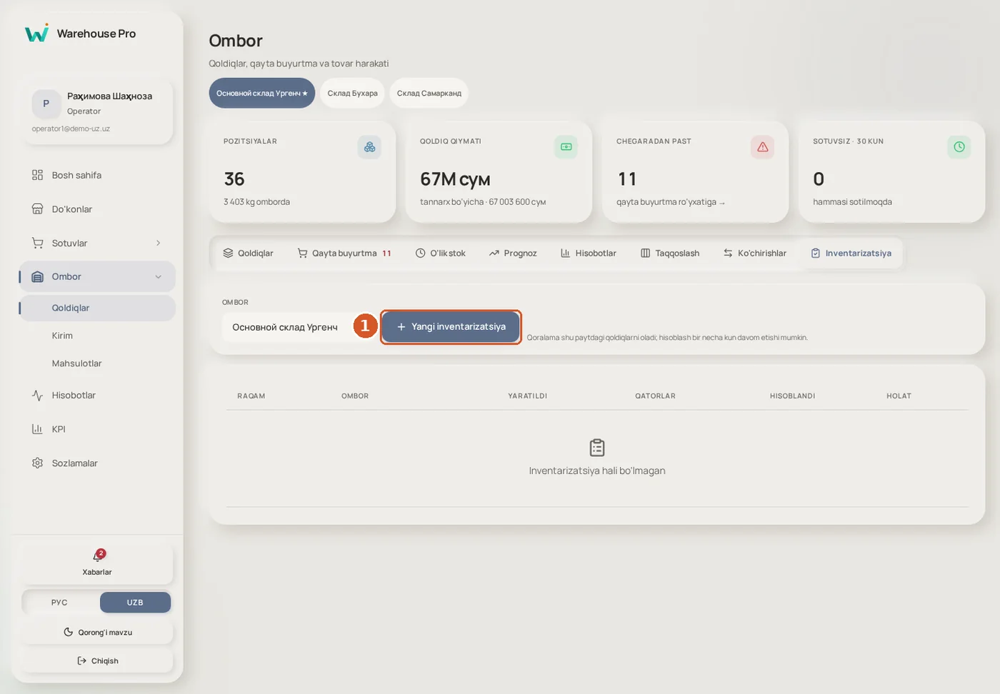
- 1«Yangi inventarizatsiya» — shu paytdagi hisobdagi qoldiqni qayd etish
- «Yangi inventarizatsiya»: dastur har bir mahsulot bo'yicha shu paytdagi «HISOBDA»ni eslab qoladi. Keyingi sotuvlar xalaqit bermaydi — bemalol sanang.
- «HISOBLANDI»ni qo'lda kiriting yoki «Skaner»: har bir o'qish bitta qo'shadi. Farq darhol ko'rinadi: «Kamomad» yoki «Ortiqcha».
- «Qo'llash» — qoldiq hisoblanganga teng bo'ladi, farq harakatlar jurnaliga tuzatish sifatida tushadi. «Bekor qilish» — hisoblanganlar yo'qoladi, qoldiqlar o'zgarmaydi.
Bir nechta ombor: taqqoslash va ko'chirish
Nima uchun: tovar ikki joyda yotganda ikkita javob kerak — qayerda qancha va qanday olib o'tish. Sotuv esa doim asosiy ombordan boradi: agentning buyurtmasi aynan uning qoldig'ini band qiladi.
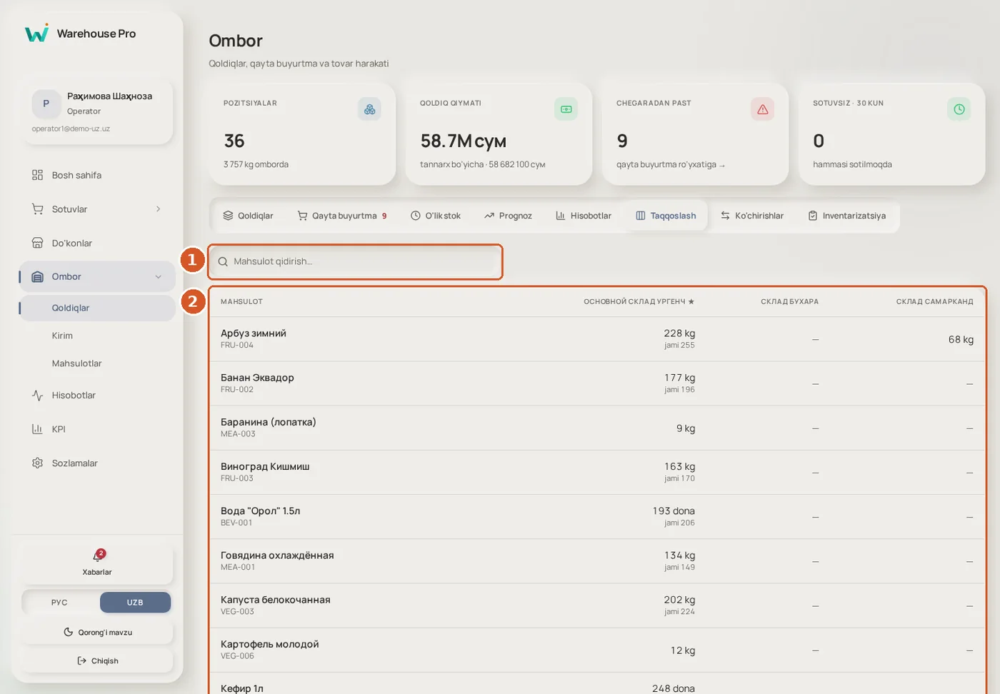
- 1«Mahsulot qidirish…» — jadvalni toraytirish
- 2Ustunlar — omborlar; qalin — asosiysi
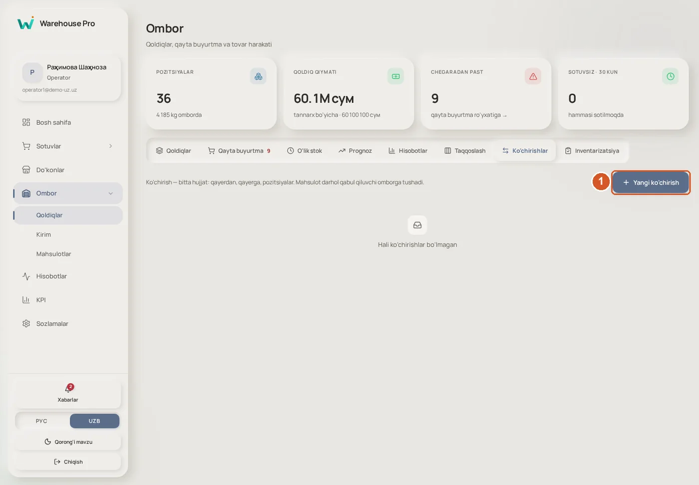
- 1«Yangi ko'chirish» — bir nechta mahsulotga hujjat
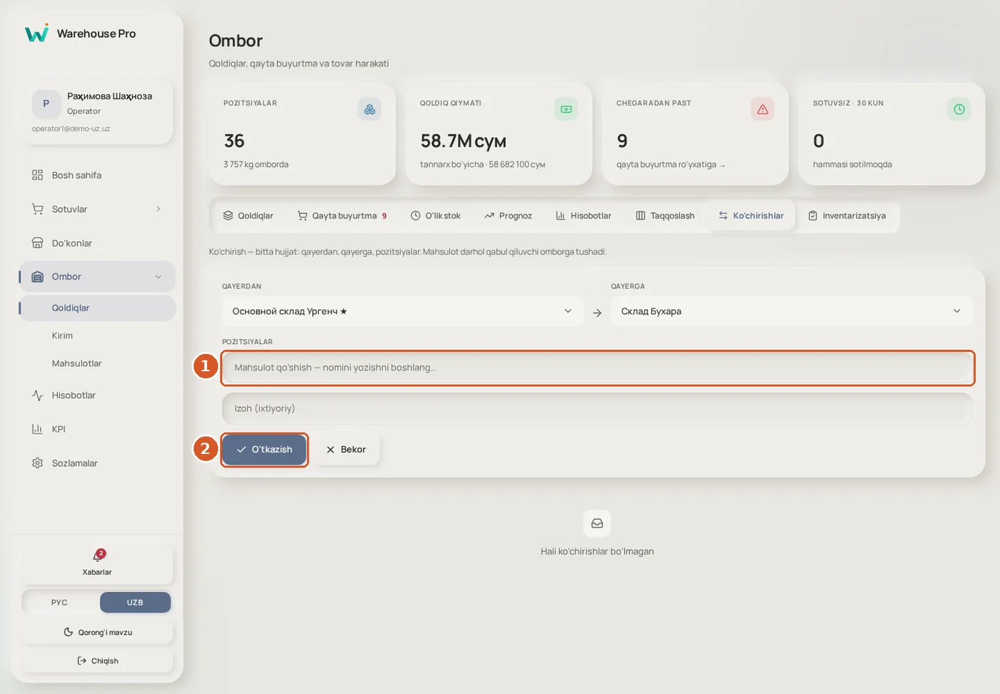
- 1«Mahsulot qo'shish — nomini yozishni boshlang…»
- 2«O'tkazish» — qoldiq bir ombordan chiqib, ikkinchisiga bir qadamda kiradi
- «Ombor» → «Ko'chirishlar» → «Yangi ko'chirish». «Qayerdan» va «Qayerga»ni tanlang — ikkita ombor, har xil.
- Mahsulot nomini yozishni boshlang, ro'yxatdan tanlang, «Miqdor»ni qo'ying. Manba ombordagi mavjuddan ko'pini dastur o'tkazmaydi.
- «O'tkazish» → «Ko'chirish o'tkazilsinmi?» → «O'tkazish». Qoldiq ikkala omborda birdan o'zgaradi; «Harakatlar jurnali»da ikkala ombor bilan «Ko'chirish o'tkazildi» yozuvi paydo bo'ladi.
«Ombor» → «Hisobotlar»: nima muddati tugayapti
Bu «Ombor» sahifasidagi «Hisobotlar» bo'limi. Tepada — baho satri: «Chakana baho», foiz bilan «Marja» va bo'limlar ustidagi plitkadagi tannarx bo'yicha qiymat; «Excel» va «PDF» hisobotni to'liq yuklab beradi.
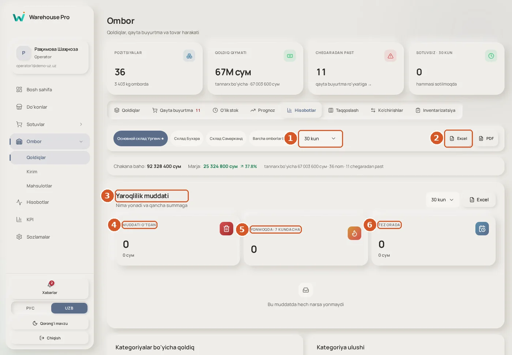
- 1Hisobot davri: 7, 14, 30, 90 kun
- 2Excel / PDF — butun hisobot
- 3«Yaroqlilik muddatlari» — nima tugayapti va qancha summaga
- 4«Muddati o'tgan» — jo'natishga ketmaydi, faqat hisobdan chiqarish yoki yetkazib beruvchiga qaytarish
- 5«Yonyapti: 7 kungacha» — birinchi sotish kerak
- 6«Tez orada» — tanlangan davr ichida
- Muddatli partiyalar kirim qatorlaridan olinadi («Partiya», «Muddati»). Muddatsiz kirim bu hisobotga tushmaydi.
- Muddati o'tganni hisobdan chiqarish: «Ombor» → «Inventarizatsiya» (yoki «Tuzatish» → «Chiqim») orqali, yoki «Kirim» → «Kontragentlar va qarzlar» → «Tovarni qaytarish». Muddati o'tgan partiya jo'natishga tushmaydi — FEFO uni o'tkazib yuboradi.
- Pastda — «Kategoriyalar bo'yicha qoldiq», «Kategoriyalar ulushi», «Tovar harakati» (davr uchun kirim/chiqim), kirimlardagi «Yetkazish xarajatlari», «Qiymat bo'yicha top mahsulotlar», «Aylanma».
Mahsulotlar va do'konlar
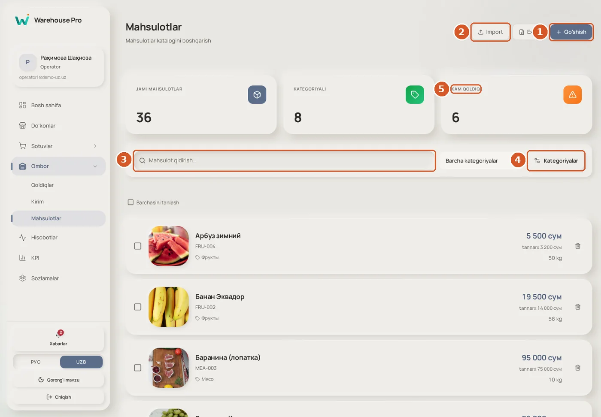
- 1«Qo'shish» — yangi mahsulot
- 2«Import» — Excel dan katalog (.xlsx, .xls, .csv)
- 3Nom yoki kod bo'yicha qidiruv
- 4«Kategoriyalar» — yaratish va qayta nomlash
- 5«Kam qoldiq» — nechta mahsulot chegaradan past
- «Qo'shish» → «Yangi mahsulot»: majburiy «Kod *», «Nomi *», «Sotish narxi *». «Shtrix-kod» — skaner uchun. «Tannarx» — hali kirim bo'lmaganda. «Qayta buyurtma chegarasi» qoldiqni qizil qiladi. «Qadoqda, dona» va «Qadoq nomi» — kirimda quti bilan kiritish uchun. «1 dona vazni, kg» — varaqa vaznini hisoblaydi → «Saqlash».
- Mahsulot kartochkasi: narx, «tannarx», kategoriya, qoldiq; o'ngdagi savatcha — o'chirish. Buyurtma yoki kirim tarixi bor mahsulot o'chirilmaydi — faol emas bo'ladi va katalogdan chiqadi.
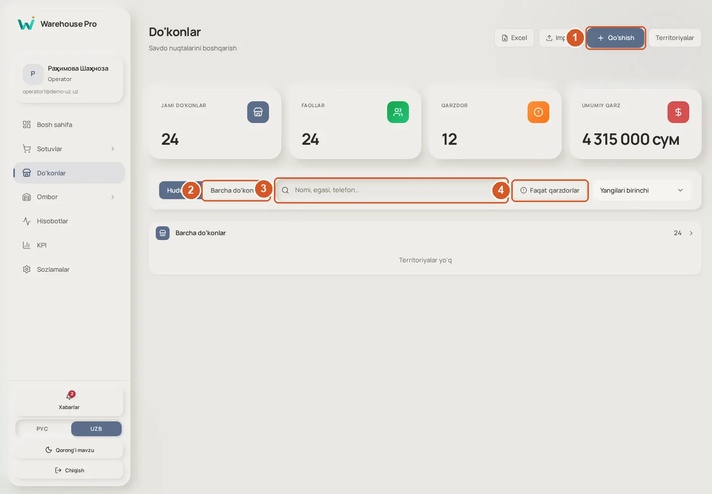
- 1«Qo'shish» — yangi nuqta
- 2«Barcha do'konlar» — hududlar o'rniga oddiy ro'yxat
- 3Qidiruv: nom, egasi, telefon
- 4«Faqat qarzdorlar» — kimga qo'ng'iroq qilish
- «Qo'shish»: «Nomi *», «Egasi», «Telefon», «Shahar», «Tuman», «Manzil», «— Agent —», «— Hudud —», «Izoh». Agentsiz nuqta uning telefonidagi «Do'konlar»da, tashrif rejasida va KPI sida ko'rinmaydi.
- Do'kon «qancha qarzman?» deb qo'ng'iroq qilsa — uning kartochkasini oching: «JORIY QARZ», «Do'kon puli» (30 kunlik to'lovlar, xatosini «Bekor qilish»), «To'lov qo'shish» — ofisda olingan pul. Davr uchun «Solishtirma dalolatnoma» — mijoz uchun «Chop etish» yoki Excel.
- «Arxivga» nuqtani rejalardan, xaritadan va qidiruvdan olib tashlaydi, lekin buyurtma va qarzni qoldiradi. «Ishga qaytarish» — orqaga. «Butunlay o'chirish» faqat tarixi yo'q nuqta uchun.

Shtrix-kodlar
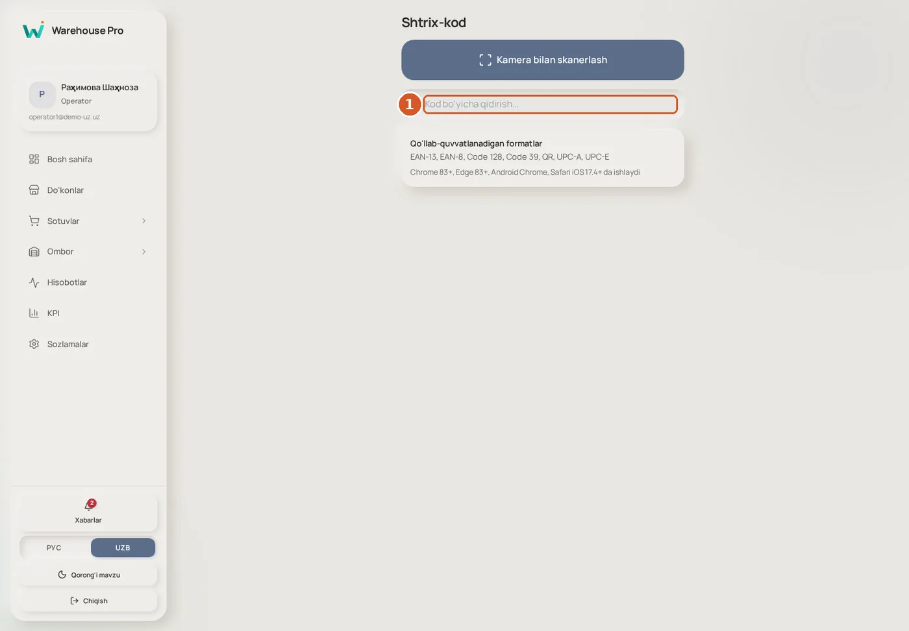
- 1«KAMERA BILAN SKANERLASH» — noutbuk yoki telefon
- 2Kod yoki nom bo'yicha qidiruv — narx va qoldiqni ko'rsatadi
- Topilgan mahsulot: «Buyurtma» — yangi buyurtma ustasiga o'tish (/orders/new), mahsulot u yerda qaytadan tanlanadi. Printer belgisi — «CHOP ETISH NAVBATI»ga → «Yorliqlarni chop etish».
- Formatlar: EAN-13, EAN-8, Code 128, Code 39, QR, UPC-A, UPC-E. Kamera Chrome 83+, Edge 83+, Android Chrome, Safari iOS 17.4+ da ishlaydi.
Kun oxiri — tekshiring
- «Buyurtmalar» → «Kutishda» = 0: har biriga «Tasdiqlash» yoki «Rad etish» bosilgan.
- «Yuklash varaqalari»: ketganlari — «Jo'natildi», xatolari — o'chirilgan, kamomadlar hal qilingan.
- «Buyurtmalar» → «Hisob-kitob kutmoqda» = 0: har bir yetkazilgan buyurtma bo'yicha kuryerning puli qabul qilingan — kartada «Hisob-kitobni yopish» yoki summa bilan «Bajarildi».
- «Kirim»: tushirilgan mashinalar — «Qabul qilindi», qatorlarda partiya va «Muddati» bor.
- «Qaytarishlar»: «ko'rib chiqilmoqda» navbati bo'sh.
Direktor
Direktorga hammasi ochiq: «Bosh sahifa», «Sotuvlar», «Do'konlar», «Ombor», «Jamoa», «Moliya», «Sozlamalar», «To'lov», «Harakatlar jurnali». Bu bobda — boshqalarda yo'q sahifalar: «Bosh sahifa», «Hisobotlar» va «P&L» («Moliya»), «Ish haqi» va «Foydalanuvchilar» («Jamoa»), «Sozlamalar», «To'lov» va «Harakatlar jurnali»; «Nazorat» 3-qismda. Xarita, rejalar va KPI direktorda supervayzerdagidek — «Supervayzer» bobiga qarang. Buyurtmalar, kirim va ombor — «Ofis operatori va ombor» bobida.
Bosh sahifa — kunning 5 ta savoli
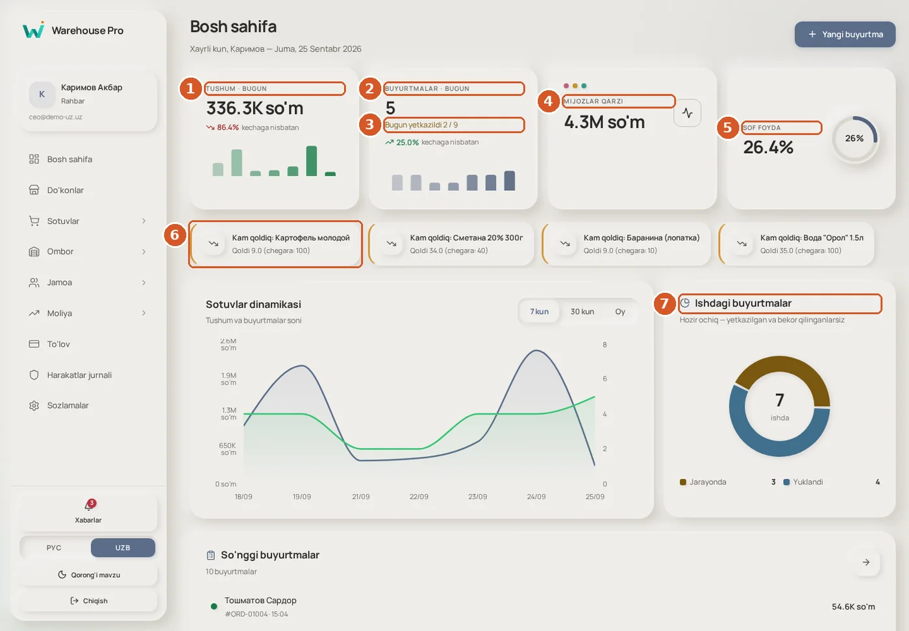
- 1Bugungi tushum va «kechaga nisbatan» strelkasi; bossangiz — «Hisobotlar»
- 2Bugun nechta buyurtma olindi; bossangiz — «Buyurtmalar»
- 3Bugun yetkazildi N tadan M — yetkazilmaganlar bor ekan, sariq
- 4Hozirgi paytda hamma do'konning qarzi; bossangiz — «Hisobotlar» → «Qarzlar»
- 590 kunlik «Yalpi foyda»: tushum minus qaytarishlar va tannarx
- 6Ogohlantirishlar — har bir kartochka shu masala hal qilinadigan ekranga olib boradi
- 7Ishdagi buyurtmalar — hozir ochiqlari, yetkazilgan va bekor qilinganlarsiz
| Plitka | Nimani hisoblaydi | Bossangiz qayerga olib boradi |
|---|---|---|
| «Tushum · bugun» | Bugun olingan va allaqachon yetkazilgan buyurtmalar summasi. Strelka — kechaga nisbatan; kecha bo'sh bo'lsa, strelka yo'q. | «Hisobotlar» |
| «Buyurtmalar · bugun» | Bugun nechta buyurtma olindi; pastdagi qatorda «Bugun yetkazildi N tadan M»: N — bugun yetkazilgani, M — kuryerlarga tayinlangan, lekin hali yetkazilmaganlar bilan birga. | «Buyurtmalar» |
| «Mijozlar qarzi» | Hozirgi paytda hamma do'konning qarz summasi. | «Hisobotlar» → «Qarzlar» |
| «Yalpi foyda» | Oxirgi 90 kun uchun: (tushum − qaytarishlar − tannarx) / (tushum − qaytarishlar). Tannarx sotuv paytidagi buyurtma qatorlaridan olinadi. | «Hisobotlar» |
Plitkalar ostidagi ogohlantirishlar lentasi — bugun javob berish kerak bo'lgan narsalar. Ko'pi bilan 4 tasi, shoshilinchlik tartibida: yaroqlilik muddati, qoldiq, yangi buyurtmalar, tashrif rejasi, qarzlar. Ogohlantirish matni doim rus tilida, o'zbek interfeysida ham.
| Ogohlantirish | Qachon chiqadi | Qayerga olib boradi |
|---|---|---|
| «Muddati o'tgan partiyalar: N» | Omborda muddati o'tgan partiyalar bor; summa — xarid narxi bo'yicha | «Ombor» → «Hisobotlar» |
| «Bir haftada tugaydi: N part.» | Yaroqlilik muddati yaqin 7 kunda tugaydi | «Ombor» → «Hisobotlar» |
| «Kam qoldiq: mahsulot» | Asosiy ombordagi bo'sh qoldiq buyurtma nuqtasidan past (5 tagacha mahsulot) | «Ombor» |
| «N ta yangi buyurtma» | «Yangi» holatidagi buyurtmalar ofisni kutmoqda | «Buyurtmalar» |
| «Reja: 5/13 (38%)» | Hamma agent bo'yicha bugungi tashriflar; qizil — yarmidan kam bajarilgan | «Tashrif rejasi» |
| «Qarz: do'kon» | Do'kon qarzi 500 000 so'mdan ko'p (eng katta uchtasi) | «Hisobotlar» → «Qarzlar» |
- Ertalab, ikki daqiqa: 4 ta plitkaga qarang → ogohlantirishlarni chapdan o'ngga ko'rib chiqing → «Ishdagi buyurtmalar»ni oching: tushga yaqin «Yangi»lar ko'p bo'lsa — ofis ulgurmayapti.
- 17:00 dan keyin «Yetkazildi N tadan M» sariq bo'lsa — operatorga qo'ng'iroq qiling: kuryerlar hisobot bermagan yoki varaqa yopilmagan.
- Pastdagi «Oxirgi buyurtmalar» — eng yangi o'ntasi; o'ngdagi strelka to'liq ro'yxatga olib boradi.
Hisobotlar — umumiy, savdo, agentlar, qarzlar
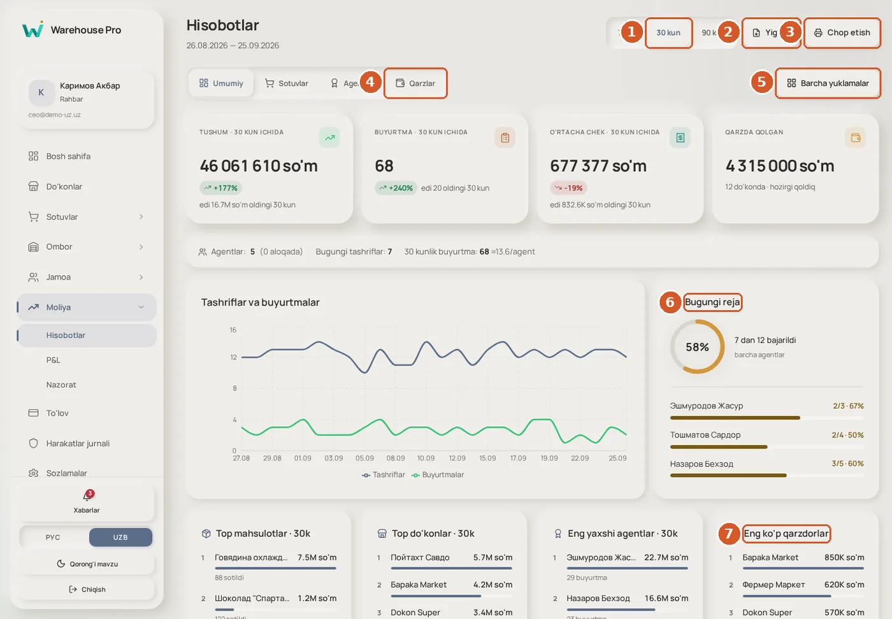
- 1Davr — 7, 30 yoki 90 kun; sanalar sarlavha ostida ko'rinadi
- 2«Xulosa» — butun sahifa qanday bo'lsa, shunday Excel
- 3«Chop etish» — chop etish oynasi; fayl uchun printer sifatida «Сохранить как PDF»ni tanlang
- 4«Qarzlar» — to'rtinchi bo'lim; yonida «Umumiy», «Savdo», «Agentlar»
- 5«Barcha yuklamalar» — tayyor Excel hisobotlar katalogi
- 6«Bugungi reja» — agentlar bo'yicha tashriflar, hozirgi holatda
- 7«Eng ko'p qarzdorlar» — birinchi kimga qo'ng'iroq qilish
- «Umumiy»: davr uchun tushum, buyurtmalar, o'rtacha chek va «Qarzda qolgan» — o'tgan shunday davr bilan solishtirib; tashriflar va buyurtmalar grafigi; top mahsulotlar, do'konlar, agentlar.
- «Savdo»: do'konlar bo'yicha, to'lov usullari bo'yicha, davr uchun top mahsulotlar.
- «Agentlar»: agentlar jadvali va pastda «Har bir agent nimani sotadi» — o'z sanalari uchun mahsulotlar bo'yicha savdo tarkibi.
- «Qarzlar»: hozirgi qarzdorlar va «Qarz arxivi» — qachon olingan va qachon to'langan.
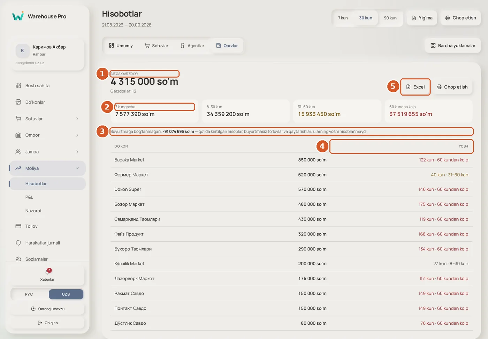
- 1«Bizga qarz» — umumiy summa va qarzdorlar soni
- 2Qarz muddati: 7 kungacha, 8–30, 31–60, 60 dan ko'p
- 3«Buyurtmaga bog'lanmagan» — qo'lda yozilgan qarzlar va buyurtmasiz to'lovlar; ularda muddat hisoblanmaydi
- 4«Muddat» — do'konning eng eski buyurtmasi necha kun turibdi
- 5«Excel» — qarzdorlar jadvali fayl bo'lib
- «Hisobotlar» → «Qarzlar»ni oching: tepada — summa va muddat bo'yicha 4 ta guruh.
- To'q sariq «31–60 kun» va qizil «60 dan ko'p» guruhi — bugunoq agentga qo'ng'iroq. Muddati 60 kundan oshgan do'konni oldindan to'lovga o'tkazing.
- Jadval ostida — «Qarz arxivi»: do'kon va davrni tanlang → «Qarzga olindi», «To'landi», «Qarz o'zgarishi» va har bir harakat hujjati bilan ko'rinadi.
- «Sotuvlar» «nima sotilyapti?»ga javob beradi: tushumni tortayotgan mahsulot yoki kategoriya, va umuman sotilmayotganlar — ularning o'rni «O'lik stok»da.
- «Agentlar» «kim sotyapti?»ga javob beradi: summa, buyurtmalar soni, o'rtacha chek va tashriflar. Tashrif ko'p, buyurtma kam — agent yuradi, lekin sotmaydi; aksincha bo'lsa — kirmasdan telefon orqali sotadi.
P&L — foyda qildikmi yoki zarar
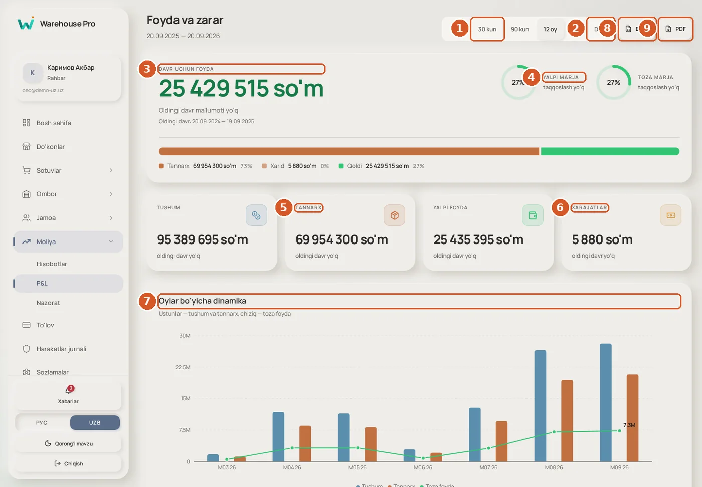
- 1Davr: «7 kun», «30 kun», «90 kun», «12 oy», «Yil»
- 2«Davr» — o'z sanalaringiz «Dan» va «Gacha»
- 3«Davrda foyda» yoki «Davrda zarar» — sahifaning asosiy javobi
- 4Yalpi va sof foyda foizda; «p.p.» — o'tgan davrga nisbatan o'zgarish
- 5Tannarx — sotuv paytidagi kirim partiyalari bo'yicha
- 6Xarajatlar — berilgan oylik, yetkazish (yoqilg'i, yo'l)
- 7Ustunlar — tushum va tannarx, chiziq — sof foyda
- 8«Excel» — 4 ta varaq: xulosa, solishtirish, mahsulotlar bo'yicha, to'lov bo'yicha
- 9«PDF» — chop etish oynasi orqali bosma shakl
- Formula: yetkazilgan buyurtmalar tushumi − qaytarishlar − tannarx = yalpi foyda; minus berilgan oylik va yetkazish xarajatlari = sof foyda.
- Javob ostidagi chiziq tushum qayerga ketganini ko'rsatadi: xarid, oylik, «Qoldi».
- Grafik ostida: «Nimadan foyda qildik» — mahsulotlar bo'yicha foyda va marja; «Qanday to'lashadi» — naqd, o'tkazma, qarz; «Yetkazishga qancha ketdi» — yoqilg'i va yo'l bilan kirimlar.
Oylik — hisoblash va berish
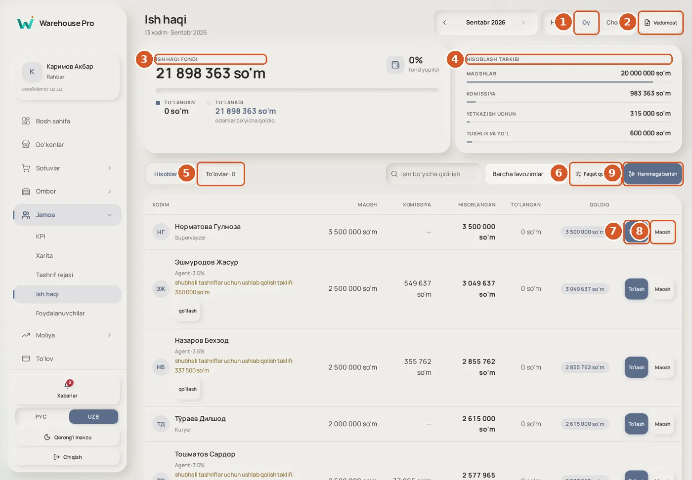
- 1Davr: «Hafta», «Oy», «Chorak»; strelkalar — orqaga va oldinga
- 2«Vedomost» — davr uchun hamma xodim bo'yicha Excel
- 3To'lov fondi: jami hisoblandi, to'landi, to'lanishi kerak
- 4Tarkibi: okladlar, komissiya, yetkazishlar uchun, tushlik va yo'l puli
- 5«To'lovlar · N» — orderlar bilan berish jurnali
- 6«Faqat qoldiq bilan» — hammasi berilganlarni yashirish
- 7«To'lash» — bittaga berish: to'lov yoki avans, summa, izoh
- 8«Oklad» — oylik oklad va savdodan komissiya, %
- 9«Hammaga berish» — har kimga o'z qoldig'i bitta tugma bilan; tasdiqlash majburiy
- «Oy»ni va strelkalar bilan kerakli oyni tanlang. Sarlavha ostida — hisobda nechta xodim.
- «Hisoblash tarkibi»ni tekshiring: «Okladlar» nolga teng bo'lsa — okladlar qo'yilmagan. Xodim qatoridagi «Oklad»ni bosing → «Oylik oklad» va «Komissiya, savdodan %»ni kiriting → «Saqlash». Oklad joriy taqvim oyiga yoziladi, ekranda o'tgan oy bo'lsa ham; o'tgan oylar o'zgarmaydi.
- Agent qatorida «shubhali tashriflar uchun ushlab qolish taklif qilingan» yozuvi chiqishi mumkin — «qo'llash»ni bosing yoki shundayligicha qoldiring. Direktor hal qiladi, dastur faqat taklif qiladi.
- Bittaga berish: «To'lash» → «To'lov» yoki «Avans» → summa yoki «Butun qoldiq» → izoh → «Berilganini yozish».
- Hammaga berish: «Faqat qoldiq bilan» → «Hammaga berish» → oynada nechta odamga va qancha ekani ko'rinadi → «To'lash».
- Xodim to'lovni telefonida ko'radi va «Oldim»ni bosadi. «To'lovlar»da «Olindi» ustunida «kutilmoqda» o'rniga sana chiqadi. O'sha yerda — «Berdi» / «Oldi» imzolari bilan «Orderni chop etish».
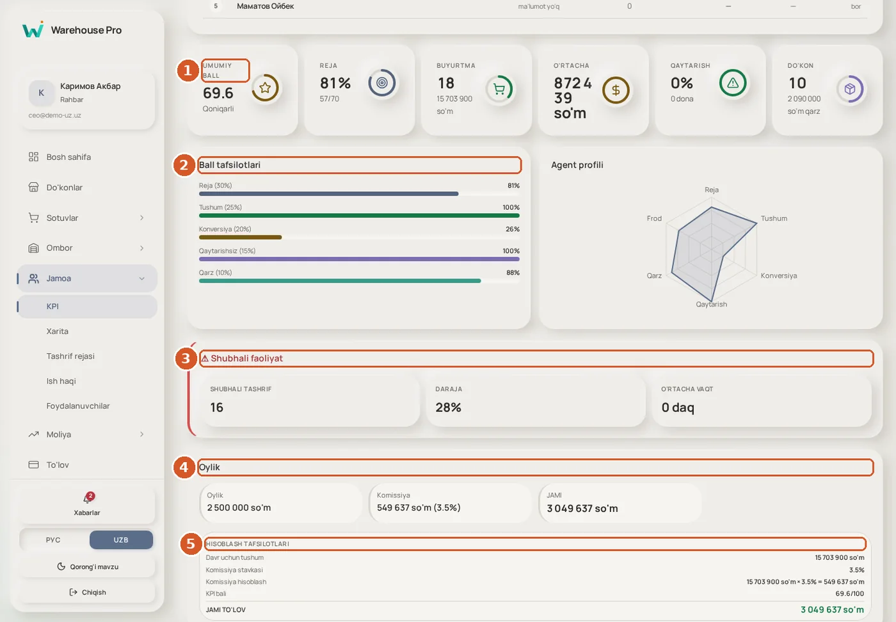
- 1Umumiy ball va baho: A — 90 dan, F — 40 dan past
- 2Ball nimadan: reja 30%, tushum 25%, konversiya 20%, qaytarishsiz 15%, qarzlar 10%
- 3Shubhali harakat: do'kondan 500 m dan uzoq tashrif, 5 daqiqadan qisqa, bir kunda bitta do'konga ikkitadan ko'p, yoki GPS almashtirilgan
- 4Davr uchun oylik: oklad, komissiya, jami
- 5Hisob tafsiloti — komissiya qayerdan kelgan
«Hisoblangan» — qancha tegishli; «To'lovlar» — qancha berilgan. Ular orasidagi farq — «berish uchun qoldiq», «Hammaga berish» tugmasi shu bo'yicha ishlaydi. P&L ga xarajat sifatida hisoblangani emas, berilgani tushadi.
Foydalanuvchilar — yaratish, parolni tiklash, o'chirish
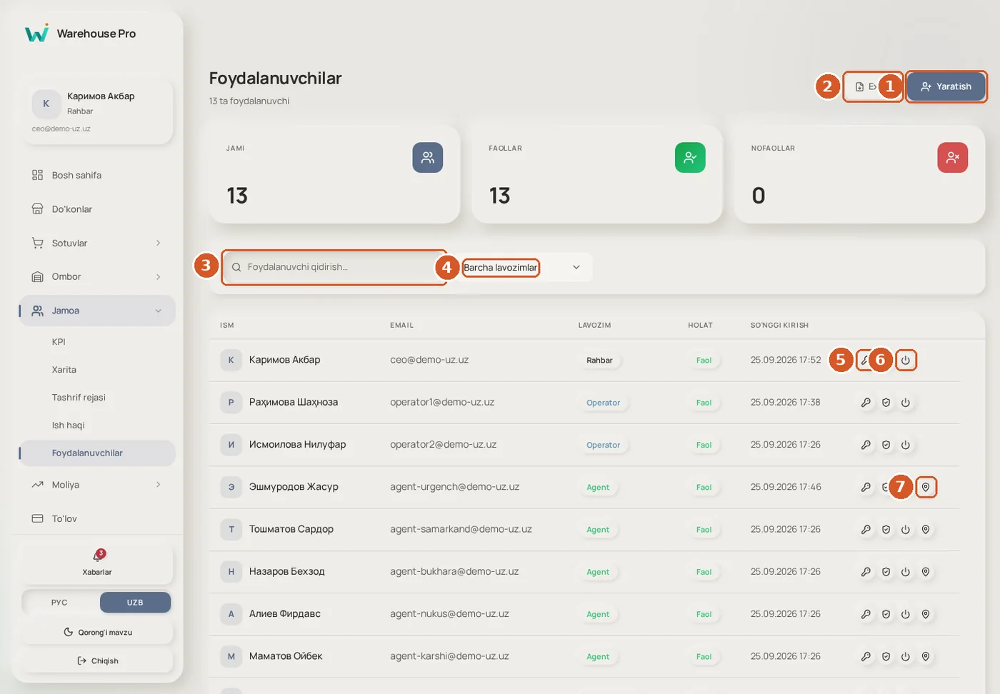
- 1«Yaratish» — shakl: ism, email, parol, rol
- 2«Excel» — xodimlar ro'yxati fayl bo'lib
- 3Ism va email bo'yicha qidiruv
- 4«Barcha rollar» filtri
- 5Kalit — «Parolni tiklash»: eskisini bilmasdan yangisini qo'yish
- 6O'chirgich — «O'chirish»: kirish yopiladi, tarix qoladi
- 7Belgi — agentning xaritadagi «Ish zonasi»
- «Yaratish»ni bosing → «Ism», «Email», «Parol» (kamida 8 ta belgi)ni kiriting → «Rol»ni tanlang → «Foydalanuvchi yaratish». Xodim shu email va parol bilan darhol kiradi — vebda ham, ilovada ham.
- Rollar ro'yxatida «Rahbar» yo'q: kompaniyada direktor bitta.
- Parolni unutdi: qatordagi kalit belgisi → «Yangi parol» → «Saqlash» → xodimga ayting.
- Kompaniyadan ketdi: o'chirgich belgisi → «O'chirish». Odamning buyurtmalari, tashriflari va oyligi hisobotlarda qoladi. Qaytarish — o'sha belgi bilan, «Yoqish».
- Eskisining o'rniga yangi odam keldi: qalqon belgisi — «Kirishni topshirish» → «Yangi login (Email)» va «Yangi parol» → «Saqlash». Do'konlar va tarix unga o'tadi, eski kirish yopiladi.
- Agentlarda to'rtinchi belgi bor — «Ish zonasi»: xaritadagi hudud, uning ichidagi tashriflar normal hisoblanadi.
Jadval ostida — «Takliflar» (birinchi kirish yordamchisi orqali kim chaqirilgan va kim hali kirmagan; «muddat o'tdi — qayta chaqiring») va «Agentlar hududlari»: har bir agentda o'z hududlari, «O'zgartirish» tugmasi. Hudud — bu supervayzer oylik rejani tuzadigan marshrut.
Harakatlar jurnali — kim va qachon
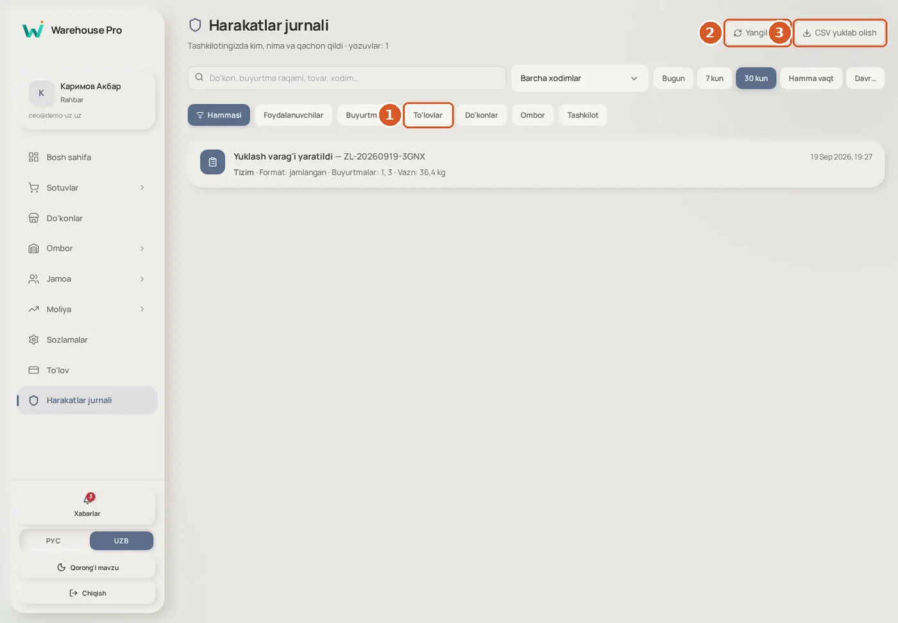
- 1Filtrlar: «Hammasi», «Foydalanuvchilar», «Buyurtmalar», «To'lovlar», «Do'konlar», «Ombor», «Tashkilot»
- 2«Yangilash» — yangi yozuvlarni olib kelish
- 3«CSV yuklab olish» — buxgalter uchun jurnal fayl bo'lib
- Bu yerga muhim harakatlar yoziladi: buyurtma bekor qilindi, to'lov bekor qilindi, holatlar ommaviy o'zgartirildi, yuk xatlari chop etildi, do'konning kredit limiti o'zgartirildi, ombor tuzatildi va inventarizatsiya, mahsulot yoki narxlar ro'yxati o'chirildi.
- Va kirish bilan bog'liq harakatlar: parol tiklash, kirishni topshirish, o'chirish, operator huquqlari, API kalitlari, tasdiq kodini yoqish va o'chirish.
- Har bir yozuvda — kim, qachon va «Tafsilotlar»: aynan nima o'zgardi. Qatorni bossangiz, ular ochiladi.
To'lov — tarif va limitlar
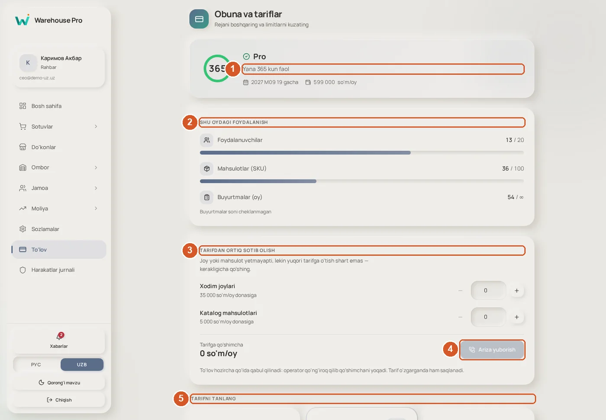
- 1Joriy tarif, necha kun qoldi, sana va oylik narx
- 2Foydalanish: foydalanuvchilar, mahsulotlar (SKU), oylik buyurtmalar — limitga nisbatan
- 3«Tarifdan tashqari qo'shib olish» — xodim joylari va katalog pozitsiyalari donalab
- 4«So'rov yuborish» — operator qo'ng'iroq qiladi va qo'shimchani yoqadi
- 5«Tarifni tanlang» — limitlari bilan tarif kartochkalari; joriysi belgilangan
- Uchta hisoblagich. Foydalanuvchilar: limitga yetganda yangi xodim qo'shilmaydi. Mahsulotlar: limitga yetganda katalogga yangi mahsulot kirmaydi. Oylik buyurtmalar — faqat ma'lumot uchun: oyning birinchi kuni nolga tushadi, buyurtmalarni to'xtatmaydi.
- Bir-ikki joy yetmayapti, katta tarif esa kerak emas — «Tarifdan tashqari qo'shib olish»: «+» «Xodim joylari» yoki «Katalog pozitsiyalari»ga beshtadan qo'shadi, aniq sonni maydonga yozing → «So'rov yuborish». Qo'shimcha tarif o'zgarganda ham qoladi.
- To'lov — Click, Payme, Uzum Pay; so'rovdan keyin 30 daqiqa ichida yetkazib beruvchining operatori bog'lanadi. Sinov davri hamma imkoniyatni beradi.
Sozlamalar — direktor nimani to'ldirishi kerak
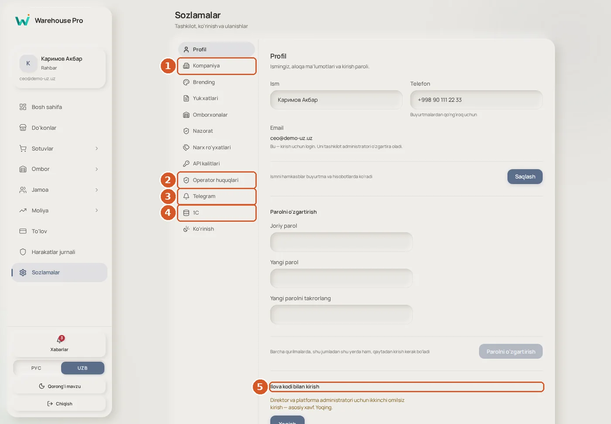
- 1«Kompaniya» — yuk xatlari uchun rekvizitlar, valyuta, chegirma chegarasi, buyurtma nuqtasi
- 2«Operator huquqlari» — kompaniyangizda operator nima qila oladi
- 3«Telegram» — o'zingizga, guruhga va xodimlarga xabarlar
- 4«1С» — nomenklatura, kontragentlar va buyurtmalar almashinuvi
- 5«Ilova kodi bilan kirish» — direktor uchun ikkinchi bosqich
| Bo'lim | Nima bor | Kimga ko'rinadi |
|---|---|---|
| «Profil» | Ism, telefon, parolni o'zgartirish, «Ilova kodi bilan kirish» | hammaga |
| «Kompaniya» | Nomi, valyuta, rekvizitlar, logotip, chegirma chegarasi, yangi mahsulotlar uchun buyurtma nuqtasi | direktor |
| «Brending» | Xodimlar uchun ilova va kirish ekranining logotipi va ranglari | direktor |
| «Omborxonalar» | Omborlar ro'yxati va asosiysi — sotuv shundan | direktor |
| «Narxlar ro'yxati» | Alohida do'konlar uchun o'z narxlari; narxni ustuvorligi yuqori ro'yxat beradi | direktor, operator |
| «API kalitlari» | Boshqa dasturning ma'lumotlarga kirishi; kalit bir marta ko'rinadi | direktor |
| «Operator huquqlari» | Amallar bo'yicha belgilar; o'chirilgani serverda ham yopiq | direktor |
| «Telegram» | O'z Telegram, xodimlar guruhi, «Kimga nima keladi» | hammaga; guruh va qoidalar — direktor |
| «1С» | OData orqali 1С:Buxgalteriyaga ulanish va almashinuv jadvali | direktor |
| «Ko'rinish» | Mavzu va til — shaxsiy sozlama | hammaga |
Telegram — yangi buyurtma, qarz va qoldiq haqida dasturni ochmasdan bilish uchun.
- «Sozlamalar» → «Telegram» → «1 bosishda ulash»: bot ochiladi, unda «Start»ni bosing. Yoki qo'lda: Telegramda @userinfobot ni toping → /start → raqamli ID ni nusxalang → maydonga qo'ying → «Ulash».
- Tekshiring: «Tekshiruv yuborish» — xabar Telegramga darrov kelishi kerak.
- Ofis uchun guruh: «Guruh uchun kod olish» → Telegramda guruh yarating, xodimlarni va Warehouse Pro botini qo'shing → guruhga kod bilan /link buyrug'ini yuboring. Voqealar shu chatga keladi.
- Xodimlar: «Xodimlar» ro'yxatida kim ulanganini ko'rasiz. «Ulanmaganlarga eslatish» — bot har biriga o'zi yozadi. Xodimning ID sini qo'lda ham yozish mumkin.
- «Kimga nima keladi»: voqealar × rollar jadvali — «Yangi buyurtma», «Tovar tugayapti», «Muddati o'tgan qarz», «Yetkazish tayinlandi». Kimga nima yuborishni belgilang. Kechasi 22:00 dan 08:00 gacha xabarlar yig'ilib, ertalab keladi.
1С — qisqacha. O'zbekiston uchun 1С:Buxgalteriya 8, OData e'lon qilingan bo'lishi kerak. «Sozlamalar» → «1С»: «E'lon manzili», «1С foydalanuvchisi» va «Parol»ni kiriting → «Aloqani tekshirish» → 1С ning o'z ro'yxatlaridan «Tashkilot», «Ombor», «Narx turi»ni tanlang → «Almashinuv oralig'i, daq»ni qo'ying → keraklisini yoqing: «1С dan nomenklatura», «1С dan kontragentlar», «Yetkazilgan buyurtmalar → realizatsiya» → «Jadval bo'yicha almashinuv yoqilgan». Tepada oxirgi almashinuv, navbat va oxirgi rad ko'rinadi; 1С da jufti yo'q do'konlar shu bo'limdagi tugma bilan yaratiladi.
- «Kompaniya»da rekvizitlar va valyuta to'ldirilgan
- Telegram ulangan, «Kimga nima keladi» sozlangan
- Okladlar va stavkalar qo'yilgan, birinchi vedomost to'g'ri chiqdi
- Direktorda ikkinchi bosqich yoqilgan
Sozlamalar bo'limlar bo'yicha
Quyida «Sozlamalar»ning har bir bo'limi alohida surat bilan: unda nima bor va qachon kerak. «Profil» va «Ko'rinish» hammada bor; qolganlarini faqat direktor ko'radi (narx ro'yxatlarini — huquqli operator ham).
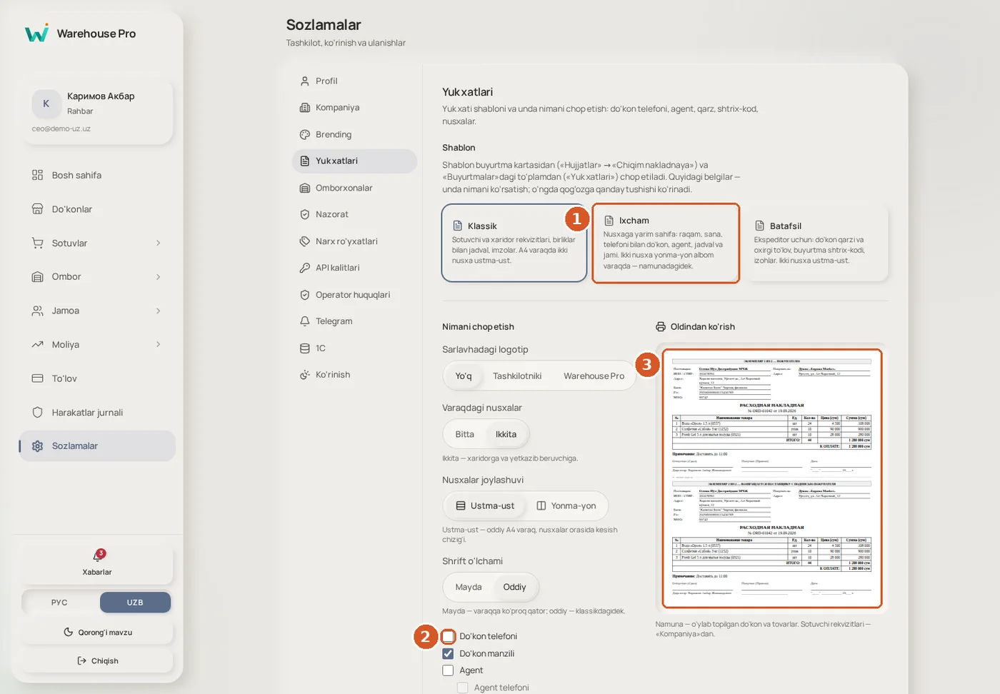
- 1Shablon: «Klassik» — har doim chop etilgandek; «Ixcham» — bir varaqda ikkita nusxa yonma-yon, mayda shrift, do'kon telefoni va agent; «Batafsil» — qo'shimcha do'kon qarzi va shtrix-kod
- 2«Logotip», «Varaqdagi nusxalar» (Bitta / Ikkita), «Joylashuv» (Ustma-ust / Yonma-yon — albom varaq), «Shrift o'lchami» (Mayda / Oddiy) o'tkazgichlari va ustun belgilari: do'kon telefoni va manzili, agent va telefoni (faqat agent bilan birga), kuryer, artikul, birlik, chegirma, qarz, shtrix-kod, to'lov usuli, imzolar, izoh, chop etish vaqti
- 3Oldindan ko'rish har bir belgida darhol o'zgaradi va oyna kengligiga moslashadi; «Saqlash» — va shu daqiqadan hamma shunday chop etadi


- Yuk xatlari ko'p qog'oz olsa — «Ixcham»ni yoqing: bitta A4 varaqda ikkita nusxa, sarlavhada do'kon raqami va telefoni. Shablon tanlanmaguncha buyurtma kartasi «Klassik»ni, to'plam «Batafsil»ni chop etadi.
- «Do'kon bo'yicha» narx ro'yxati — yirik mijozga o'z narxi; «Miqdordan» — N donadan boshlab narx pastroq. Tayinlangan ro'yxatni agent do'konda o'zi ko'radi: do'kon tanlanganda narx o'zi tushadi.
- API kaliti faqat tashqi dasturga kerak (sayt, bot, hisob). Har bir dasturga alohida kalit bering va «Kimga berilgan»ni yozing — keyin nimani bekor qilishni bilasiz.
- 1C: aloqa manzil kiritilgandan keyin darhol tugma bilan tekshiriladi. «Almashinuv jurnali» bo'sh yoki qizil ekan — buyurtmalar 1C ga ketmaydi; xato matnini o'qing, odatda bu manzil yoki 1C foydalanuvchisining huquqi.
Bildirishnomalar va qo'llab-quvvatlash


Yuqoridagi qo'ng'iroqcha o'qilmaganlar sonini ko'rsatadi; hodisalar Telegram'ga ketadiganlar bilan bir xil. «Qo'llab-quvvatlash»ga nimani bosganingiz va nimani ko'rganingizni yozing — javob pochtaga emas, shu oynaga keladi.
Supervayzer
Supervayzerda vebda: «KPI», «Xarita», «Tashrif rejasi», «Do'konlar», «Buyurtmalar», «Hisobotlar», «Sozlamalar». Do'konlar va buyurtmalar — faqat ko'rish uchun: yaratish va o'zgartirish tugmalari yo'q. Telefonda: «Bosh sahifa», «Do'konlar», «Rejalar», «Normalar», «Qarzlar», «Xarita». Direktor ham shu ekranlarni ko'radi.
Xarita — kim ishga chiqdi
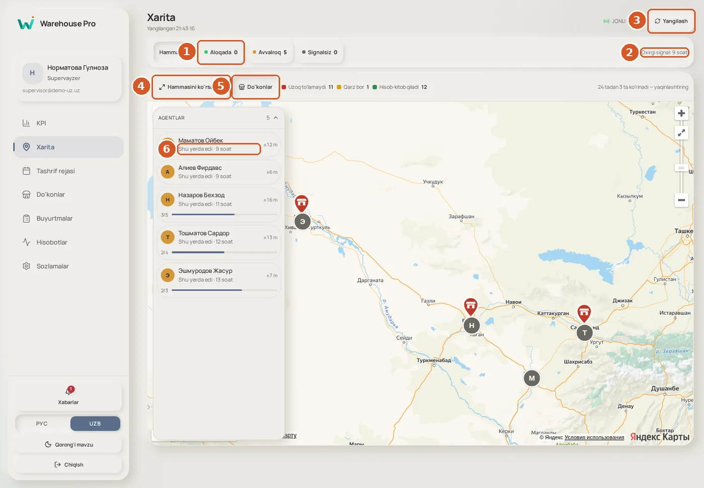
- 1Filtrlar: «Hammasi», «Aloqada», «Oldin bo'lgan», «Signalsiz» — sonlari bilan
- 2Jamoadan oxirgi signal — ancha bo'lgan bo'lsa, telefonlar o'chiq
- 3«Yangilash» — 30 soniya kutmaslik uchun
- 4«Hammani ko'rsatish» — hamma agentni ekranga sig'dirish
- 5«Do'konlar» — xaritadagi nuqtalar: «Ko'pdan beri to'lamaydi», «Qarzi bor», «Hisob-kitob qilib turadi», «Buyurtma bo'lmagan»
- 6Agent kartochkasi: qachon bo'lgan, aniqlik ±m, kunlik aylanish; bossangiz — marshrut
| Holat | Ma'nosi | Nima qilish |
|---|---|---|
| «Aloqada» (yashil) | Oxirgi 10 daqiqada signal bor | Hech narsa — odam ishlayapti |
| «Oldin bo'lgan» (sariq) | Bir kun ichida signal bo'lgan, lekin 10 daqiqadan oldin — telefon cho'ntakda, tarmoqsiz yoki quvvat tejayapti | Vaqtga qarang; ish vaqtida bir soatdan ko'p bo'lsa — qo'ng'iroq qiling |
| «Signalsiz» (kulrang) | Bir kun ichida birorta nuqta yo'q: GPS o'chiq yoki joylashuvga ruxsat «har doim» emas | Qo'ng'iroq qiling: GPS ni va «har doim» ruxsatini yoqsin («4-qism»ga qarang) |
- Chapdagi agent kartochkasini bosing → xarita uning kunlik marshrutini ko'rsatadi, kartochka ostida — «Aylanish» (rejadagi nuqtalardan nechtasi), «Norma» (oylik savdo rejasi), km da yurilgan yo'l, telefon quvvati va «Fotohisobotlar».
- Agentda qizil «koordinatalar almashtirilgan» belgisi — telefon koordinatalarni ilova qo'yganini xabar qildi. Bunday tashriflar KPI dagi «Shubhali harakat»ga tushadi.
- «Do'konlar»ni yoqing → qizil belgilar — «Ko'pdan beri to'lamaydi», sariq — «Qarzi bor», yashil — «Hisob-kitob qilib turadi». Belgini bossangiz: «Hamma vaqt uchun olib keldi», buyurtmalar, qarz. Koordinatasiz do'konlar xaritaga tushmaydi — koordinatalar do'kon kartochkasida to'ldiriladi.

Tashrif rejasi — kun
- 1«Reja yaratish» — tanlangan kunga qo'lda: agent, hudud, do'konlar
- 2Bo'limlar: «Kun», «Oy», «Normalar», «Hisobotlar»
- 3«Barcha agentlar» — bittasini ko'rsatish; o'ngda — rejadan bajarilgani
- 4«Tashriflar jadvali» — har bir nuqtada hafta kunlari, bir marta qo'yiladi
- Bir martalik reja: «Reja yaratish» → «Agent» → «Hudud» (qavsda — nechta do'kon) → keraksiz nuqtalardan belgini oling → hamma uchun «Izoh» → yaratish. Har bir nuqta shu kun uchun alohida tashrif bo'ladi.
- Kun davomida: agent telefonda tashrifni belgilaganda «Rejalashtirilgan» qatorlar «Tashrif qilindi»ga o'zgaradi. Qo'ng'iroq orqali hisobot bergan bo'lsa — «Tashrif qilindi»ni o'zingiz bosing; yetib bormagan bo'lsa — «O'tkazib yuborildi».
- Qatorning o'ngidagi qizil summa — shu do'konning qarzi: agent tashrifda pulni olib kelishi kerak.
- Kechqurun: har bir agentda «Kun qanday o'tdi» → kunlik yurilgan yo'l, «nuqtalarda», «yo'lda», «chiqdi — tugatdi», «e'tirozli tashriflar». E'tiroz — tashrif do'kondan uzoqda yoki juda tez belgilangan. Kun davomida birorta GPS nuqta kelmagan bo'lsa, tahlil shuni aytadi: tashriflarni tasdiqlashga asos yo'q.
- Qatordagi surat belgisi — «Fotohisobotni ochish»: tashrifdagi surat.
«Tashriflar jadvali — bir marta qo'yish va rejalarga yoyish»: blokni oching → agentni tanlang → do'konni toping → hafta kunlarini belgilang → «Yaratish». Keyin oy shu jadval bo'yicha bitta tugma bilan taqsimlanadi.
Bir tugma bilan oylik reja
- 1«Xodim» — kimga qo'yamiz
- 2«Nimani qo'yamiz» — «Xodim jadvali bo'yicha» yoki hafta kunlari bilan hudud
- 3«O'tgan kunlarni to'ldirmaslik» — normani buzmaslik uchun
- 4To'r: katakdagi son — kuniga nechta tashrif; o'ngda «Reja / fakt» va foiz
- 5«Yopilmaganlarni olib tashlash» — butun oydan «rejalashtirilgan» tashriflarni olib tashlash; tashrif qilinganlar qoladi
- «Tashrif rejasi» → «Oy» → strelkalar bilan oyni tanlang (keyingisini oldindan taqsimlash mumkin).
- «Xodim» → agent. «Nimani qo'yamiz»: jadval allaqachon qo'yilgan bo'lsa — «Xodim jadvali bo'yicha»ni qoldiring; bo'lmasa — hududni tanlang, «Hafta kunlari»ni belgilang va «Jadval sifatida eslab qolish — keyingi oy bitta tugma bilan»ni qo'ying.
- «O'tgan kunlarni to'ldirmaslik» belgisini qoldiring → «Taqsimlash — N ta tashrif»ni bosing. Tugma ostida yozilgan: nechta nuqta × nechta kun.
- To'rni tekshiring: agentda «oy taqsimlanmagan» bo'lsa — u uchun takrorlang. Dam olish kunlari kulrang.
- Agent ketdi yoki marshrut o'zgardi — «Yopilmaganlarni olib tashlash» → tasdiqlang → qaytadan taqsimlang. Allaqachon tashrif qilinganlarga tegmaydi.
Normalar va KPI — kim ortda
«Tashrif rejalari»dagi «Normalar» bo'limi: har bir agentga oyiga — «Savdo summasi», «Buyurtmalar», «Tashriflar» (yopilganlar ulushi, %). Bo'sh maydon — norma yo'q. «Tarix bo'yicha taklif» o'tgan oylar bo'yicha to'ldiradi, «Normalarni saqlash» — yozadi. O'ngda — «Oylik fakt»: sotildi, buyurtmalar, tashriflar; bajarilgani ajratib ko'rsatilgan. Normani agent telefonida ham ko'radi.
- 1Davr: «Hafta», «Oy», «Chorak»
- 2«Hudud» — faqat bitta marshrutning agentlari
- 3«GPS siz» — nechta agent xaritada birorta nuqta qoldirmasdan tashriflarni belgilagan
- 4«Kuryerlar» — yetkazildi, buzildi, ulush, olib kelingan pul
- 5Qator: ball va baho, buyurtmalar, tushum, rejadagi tashriflar, GPS; bossangiz — tahlil
- 6«Excel» — jadval fayl bo'lib
- Ball 5 qismdan: tashrif rejasi 30%, tushum 25%, konversiya (tashrifga buyurtma) 20%, qaytarishsiz 15%, qarz yig'ish 10%; minus shubhali tashriflar uchun jarima. Baho: A — 90 dan, F — 40 dan past.
- Ball o'rniga «ma'lumot yo'q» — agentga hech narsa tayinlanmagan va buyurtma yo'q: solishtirishga asos yo'q. Tashriflarda «—» — davr uchun reja qo'yilmagan.
- Kulrang «GPS yo'q» — hukm emas, fakt: xaritada iz yo'q. Avval telefonni tekshiring, keyin odamdan so'rang.
- Qatorni bossangiz tahlil ochiladi: plitkalar, «Ball tafsiloti», «Shubhali harakat» va davr uchun agent oyligi — surat «Direktor: Oylik» bobida.


- «Normalar» → oyni tanlang → har bir agentga uchta sonni kiriting yoki «Tarix bo'yicha taklif»ni bosing → «Normalarni saqlash».
- Norma agentga telefonda ko'rinadi («Mening kunim» va «Oylik»), sizga — KPI da bajarilish foizi sifatida. Normasiz telefon «Bu oyga norma qo'yilmagan» deb yozadi.
Supervayzerning telefoni
Ilovada direktordagi o'sha 6 ta bo'lim: «Bosh sahifa», «Do'konlar», «Rejalar», «Normalar», «Qarzlar», «Xarita». To'liq tahlillar vebda qulayroq; telefon — yo'lda kim qayerdaligini ko'rish, reja va norma qo'yish uchun. Agent o'rniga tashrifni yopish faqat vebda.
- 1«Aloqada» — oxirgi daqiqalarda signal bor; «Aloqada emas» — ancha bo'lgan
- 2«Hammasi» — hammani xaritaga sig'dirish
- 1«Barcha agentlar» — bittasini tanlash
- «Rejalar»: strelkalar va sanalar lentasi — kun; «+» — «Yangi tashrif rejasi» (agent, hudud, do'konlar); nishon — «Oylik norma»: agent, «Tushum normasi», «Tashriflar normasi» (%) → «Norma yaratish».
- «Normalar» («Ko'rsatkichlar»): «Normalar» — agentlar bo'yicha reja, fakt va o'rtacha bajarilishi; «Tashriflar» — agent bo'yicha filtr bilan kunlar bo'yicha tashriflar. Bo'sh — normalar hali yaratilmagan.
- «Qarzlar»: qarzi va agenti bor do'konlar, «bir oydan eski», «Do'kon yoki agent» qidiruvi, summa yoki muddat bo'yicha saralash, «Do'konni ochish →» — egasining telefoni va buyurtmalar.
- «Bosh sahifa»: «Kun jarayoni», «Yetkazishlar», «Do'konlar qarzi», «Savdo dinamikasi», «Oxirgi buyurtmalar»; vebdagidek ogohlantirishlar bu yerda yo'q.
- 1Normalar «Rejalar» ekranidagi nishon orqali yoki vebda — «Tashrif rejasi» → «Normalar»da yaratiladi
- Har bir agentda oy taqsimlangan va norma qo'yilgan
- Ertalab xaritada tushuntirishsiz «Signalsiz» yo'q
- Kechqurun ortda qolganlarning «Kun qanday o'tdi» ko'rib chiqilgan

Bir oydan eski qarzlar ajratilgan: keyingi suhbatda agentdan so'raydiganlaringiz shular. Agent ismi bo'yicha filtr kimda to'planayotganini ko'rsatadi.
Savdo agenti (telefon)
Agent faqat telefondan ishlaydi. Pastda 5 ta bo'lim: «Bosh sahifa», «Do'konlar», «Katalog», «Buyurtmalar», «Profil». Tashrif rejasi, qarzlar, GPS va oylik bosh sahifadan va profildan ochiladi.
Kirish
- 1Email — veb-versiyadagi bilan bir xil
- 2Parol; ko'z belgisi yozilganini ko'rsatadi
- 3«Kirish»
- Ilovani oching → «you@company.com» maydoniga emailni yozing → parol → «Kirish».
- Login va parol veb-versiyadagi bilan bir xil; ularni ofis beradi (qarang: «2-kun»).
- Birinchi kirishdan keyin «Barmoq izi bilan kirish» yoki «Face ID bilan kirish» chiqadi — parolni har safar yozish shart emas.
Bosh sahifa — «Mening kunim»
- 1«Bugungi tashriflar» va «bajarildi / jami» hisoblagichi; → strelkasi «Reja»ni ochadi
- 2«Buyurtmalar» — o'z buyurtmalari va aloqasiz navbat
- 3«Profil» — til, oylik, qarzlar, chiqish
- «Bugungi tashriflar» — kunlik marshrut, har bir nuqtada holat: «Rejalashtirilgan», «Tashrif qilindi», «O'tkazib yuborildi». Belgi «Reja» ekranida qo'yiladi — sarlavhaning o'ngidagi → strelkasi.
- Pastga aylantirsangiz: «Savdo dinamikasi» (7 kunlik tushum), «YANGI BUYURTMA», «DO'KONLAR», «GPS», «BARKOD», «PROFIL» plitkalari, «QARZLAR» bloki va «Bugungi buyurtmalarim».
- O'ng tepadagi qo'ng'iroqcha — xabarlar: yangi buyurtmalar, to'lovlar, qoldiqlar; raqam — nechta o'qilmagan.
Tashrif rejasi
- 1«QARZLAR» — marshrutda kimning qarzi bor va qancha
- Bosh sahifada «Bugungi tashriflar» yonidagi → strelkasini bosing → «bajarildi / jami · %» hisoblagichi bilan «Reja» ochiladi.
- Do'konda «Tayyor»ni bosing → qator «Tashrif qilindi» bo'ladi. Aloqa bo'lmasa «Aloqa yo'q — belgi saqlandi va o'zi ketadi» chiqadi.
- Nuqtaga bormadingiz — «Keyinga» → «O'tkazib yuborildi». O'tkazib yuborilgani supervayzerning kun tahlilida ko'rinadi.
- Pastda — marshrut do'konlari bo'yicha «QARZLAR», «KO'RSATKICHLAR» (oy bahosi: tashriflar, tushum, konversiya, qaytarishsiz, qarzlar) va «Oylik» qatori.
Do'konlar va katalog
- 1Nom, manzil, tuman bo'yicha qidiruv
- 2«Barcha do'konlar» yoki alohida hudud
- «Do'konlar» → hudud yoki «Barcha do'konlar» → ro'yxat. GPS yoqilgan bo'lsa, navigatsiya belgisi masofa bo'yicha saralaydi: yaqinlari birinchi, har birida — metr va yo'l vaqti.
- Do'kon kartochkasidagi savat belgisi — bir bosishda buyurtma. Kartochkaning o'zi do'konni ochadi: «JORIY QARZ», telefon, manzil, «Yangi buyurtma», tahrirlash va «Joylashuvni aniqlash».
- Yangi nuqta: o'ng tepadagi «+» → «Yangi do'kon»: nomi, egasi, telefon, shahar, tuman, manzil, surat. Do'kon oldida turib «Joylashuvni aniqlash»ni bosing → «Koordinatalar saqlandi» → «Do'kon yaratish».
- 1Nom yoki artikul bo'yicha qidiruv
- 2«Bor» va kilogramm yoki donada qoldiq
«Katalog» — do'kon «nima bor?» deb so'raganda narx va qoldiq ma'lumotnomasi. Kartochkadagi savat mahsulotni savatga qo'shadi (kartochkada «− n +» chiqadi); pastda «Buyurtmada: N ta tovar · summa» plashkasi → «Rasmiylashtirish» shu qatorlar bilan oddiy «Yangi buyurtma»ni ochadi: do'kon, to'lov, chegirmalar. Yig'ilgan hamma tovarga bitta buyurtma. Kartochkani bossangiz mahsulot ochiladi: miqdor «− n +» va «Buyurtmaga».


- 1Bir dona yoki qadoq narxi
- 2Hozirgi paytdagi asosiy ombordagi «QOLDIQ»
- 3Buyurtmaga qancha qo'yish
- 4«Buyurtmaga» — shu mahsulot bilan yangi buyurtma ochadi
Do'kon «nima borligini ko'rsat» desa — «Katalog»dan mahsulotni oching: butun ekranga rasm, narx, qoldiq. Miqdorni qo'ydingiz → «Buyurtmaga» → do'konni tanlash qoladi. Shunday qilib, do'konda buyurtma ro'yxat qatorlaridan emas, kartochkalardan yig'iladi.
Yangi buyurtma: 1-qadam — do'kon
- 1Nom, manzil, tuman bo'yicha qidiruv
- 2Shahar bo'yicha filtr
- 3Do'konda qarz darrov ko'rinadi
- 4«Davom etish →» — do'kon tanlangandan keyin faol
- Bosh sahifadan «Yangi buyurtma», «Buyurtmalar»da «+ Yangi» yoki do'kon kartochkasidagi savat.
- Do'konni toping: qidiruv, shahar bo'yicha filtr, «YAQINDAGILAR» bloki. Nom yonida — «Qarz: …» — buyurtma olishdan oldin unga qarang.
- Do'konni tanlang → «Davom etish →».
2-qadam — mahsulotlar
- 1Nom yoki artikul; kamera belgisi — shtrix-kod skaneri
- 2«Faqat bor bo'lganlar» — omborda yo'qni yashiradi
- 3Savat: nechta pozitsiya va qancha summaga
- 4«Tayyor» — tanlashni yopish va buyurtma ro'yxatiga qaytish
- «Mahsulot qo'shish»ni bosing → «Mahsulot tanlash» ochiladi. Nom yoki artikul bo'yicha qidiring, yoki kamerani bosib shtrix-kodga qarating — «Har bir skan — bitta dona».
- Har bir mahsulotda — narx va «qoldiq N». «+» savatga qo'shadi. Tugatdingiz — «Tayyor».
- Buyurtma ro'yxatida qator yonida: «MIQDOR» «− n +» bilan, «CHEGIRMA (%)», «SUMMA»; krestik pozitsiyani olib tashlaydi. Qoldiqdan ko'p buyurtma qilib bo'lmaydi.
- «Davom etish →» — 3-qadamga.
- 1Qatorga bosing — mahsulot savatda; «+» keyin qo'shadi, qoldiq tugaganda o'chadi
- 2«Tayyor» — buyurtma ro'yxatiga qaytish
3-qadam — yakun va tasdiqlash
- 1«Buyurtmani tasdiqlash» — operatorga yuborish
- «TO'LOV USULI»: «Naqd», «Karta», «O'tkazma» yoki «Qarz».
- «MAHSULOT / MIQDOR / SUMMA» jadvalini va yakunni tekshiring. «Izohlar» — ombor va kuryer bilishi kerak bo'lgan narsa.
- «Va'da qilingan muddat» — do'konga qachon olib kelishga va'da berilgani; ixtiyoriy. Aytilmagan sanani qo'ymang: muddati o'tgan buyurtmalar ofisga ajratib ko'rsatiladi.
- «Buyurtmani tasdiqlash» → «Buyurtma yaratildi!». Buyurtma darhol ombordagi qoldiqni band qiladi; keyin uni operator ko'radi (qarang: «Ofis operatori va ombor»).
Buyurtmalar
- 1«+ Yangi» — yangi buyurtma
- 2Buyurtma qatori: raqam, vaqt, summa — bossangiz buyurtma ochiladi
- Xulosa: «JAMI», «YANGI», «BAJARILDI». Pastda — kunlar bo'yicha buyurtmalar: «BUGUN», «KECHA», sana.
- Buyurtmada: tarkib, holat, to'lov, muddat. «O'zgartirish» «Buyurtmani tahrirlash»ni ochadi: «Mahsulotlar» bo'limi (miqdorlar, pozitsiyalar) → «Tarkibni saqlash», «Tafsilotlar» bo'limi (izohlar, chegirma) → «Tafsilotlarni saqlash». «Bekor qilish» buyurtma «Yangi» yoki «Jarayonda» ekan bor; jo'natilgan buyurtmani faqat ofis o'zgartiradi.
- Aloqa bo'lmasa buyurtmalar tepadagi «YUBORISHNI KUTMOQDA» blokida «Yuborishni kutmoqda» belgisi bilan yig'iladi va tarmoq paydo bo'lishi bilan o'zi ketadi.

Aloqasiz
- Do'konlar va katalog telefondagi nusxadan olinadi; tepada nusxa sanasi ko'rinadi — «Katalog saqlangan … — aloqa yo'q, qoldiq va narxlar o'zgargan bo'lishi mumkin».
- Buyurtma navbatga tushadi: «Tarmoq xatosi. Buyurtma oflayn saqlandi. Yakun yuborish paytidagi narxlar bo'yicha qayta hisoblanadi» — qayta yuborish shart emas.
- Tashrif belgilari va GPS nuqtalari ham saqlanadi va o'zi ketadi. Hech narsani qayta bosish shart emas.
Shtrix-kod

- Birinchi marta telefon kameraga ruxsat so'raydi — «Ruxsat berish». Ruxsatsiz ekran «Kameraga ruxsat yo'q» deb ko'rsatadi.
- Kod bazada yo'q — «Mahsulot topilmadi». Qadoqni suratga oling va operatorga bering: shtrix-kod vebda mahsulot kartochkasiga kiritiladi.
Qarzlar
- 1Do'kon yoki buyurtma raqami bo'yicha qidiruv
- 2Do'kon telefoni — bossangiz raqam teriladi
- «Profil» → «Mening qarzlarim» (yoki bosh sahifadagi «QARZLAR» bloki). Tepada — umumiy summa va nuqtalar soni.
- Qatorda: do'kon, buyurtma raqami, sana, necha kun o'tgan, manzil. Qatorni bossangiz buyurtma ochiladi, raqamli tugma — qo'ng'iroq.
- Qarz uchun pulni agent ilovada qabul qilmaydi: to'lovni ofis buyurtma bo'yicha o'tkazadi (qarang: «Ofis operatori va ombor» va «Do'kon qarzi — ikki qoida»).
GPS

- 1«Joylashuvni yuborish» — hozir bitta nuqta
- 2«Avto-kuzatuv» — harakatlanganda nuqtalar o'zi ketadi
- Bosh sahifa → «GPS» plitkasi. Telefon birinchi marta so'raganda joylashuvga «Har doim» ruxsat bering, bo'lmasa nuqtalar faqat ekran ochiq ekan ketadi.
- «Avto-kuzatuv»ni yoqing — harakatlanganda yuboriladi, 2 daqiqada bir martadan ko'p emas. Birinchi yuborishdan keyin pastda «OXIRGI YUBORISH» va signal sifati ko'rinadi.
- «Joylashuvni yuborish» — hozirning o'zida nuqta yuborish, masalan, supervayzer so'rasa.
Oylik
- 1Davr: «Oy», «Hafta», «Chorak»
- 2«JAMI» — davr uchun hamma qatorning summasi
- «Profil» → «Mening oyligim». Tepada «Davr uchun hisoblandi», uning ostida «Berildi» va «Qoldiq».
- «Nimadan tashkil topgan»: «Oklad», «Komissiya» (savdo summasi × foiz), «Tushlik va yo'l puli», «Shubhali tashriflar uchun ushlab qolish» — bo'lgan bo'lsa.
- «Oy davomida qo'lga berildi» — har bir berish alohida qator. Pulni oldingiz — «Pul olinganini tasdiqlash» → «Oldim»: direktorda berish «tasdiqlandi» deb belgilanadi.
- Foiz qanday hisoblanishi va P&L ga nima kirishi — «4-qism: Oylik»ga qarang.
Profil, til, chiqish
- 1Norma kartochkasi: supervayzer qo'ymaguncha — «Bu oyga norma qo'yilmagan»; keyin — fakt / reja bilan «<oy> uchun reja»
- «Profil» bo'limi. Tepada — norma kartochkasi: «<oy> uchun reja» — supervayzerdan tushum, buyurtmalar, tashriflar va qanchasi bajarilgani; norma bo'lmasa — «Bu oyga norma qo'yilmagan».
- «Hisob» guruhi: «Ism» qatori → maydon → «Saqlash»; «Parol» qatori → joriy, yangi, takror → «Parolni o'zgartirish». «Barmoq izi / Face ID bilan kirish» — o'chirgich: barmoq izi bilan kirish va 5 daqiqa harakatsizlikdan keyin ekran qulfini yoqadi (birovning telefonida — yoqing).
- «Pul» guruhi: «Mening oyligim», «Mening qarzlarim». «Ko'rinish» guruhi: «Mavzu» — «Yorug'» / «Qorong'i».
- Til: «TIL» bloki → «Русский» yoki «O'zbekcha». Ilova darrov va butunlay o'zgaradi, qayta kirish shart emas; tanlov shu telefonda eslab qolinadi.
- «Hisobdan chiqish» → «Chiqish». Birovning telefonida har doim chiqing: bo'lmasa buyurtmalaringiz va oyligingiz ochiq qoladi.
Xabarlar
- 1«O'qilmaganlar · N» — faqat yangilari
Bosh sahifadagi qo'ng'iroqcha → ro'yxat: yangi buyurtmalar, to'lovlar, qoldiq o'zgarishlari, tizim yangilanishlari. O'qilmaganlar ajratib ko'rsatilgan; o'ng tepadagi belgi — «Hammasini o'qilgan deb belgilash».
- Rejadagi hamma nuqta «Tayyor» yoki «Keyinga» bilan belgilangan
- «Buyurtmalar»da «YUBORISHNI KUTMOQDA» bloki va «Server rad etdi» qatorlari yo'q
- «Avto-kuzatuv» kun bo'yi yoqilgan edi
- Buyurtmalardagi va'da qilingan muddatlar — do'konga aytilganlar
Kuryer (telefon)
Kuryerda 3 ta bo'lim: «Bosh sahifa», «Yetkazishlar», «Profil». Butun ish — «Yetkazishlar»da: operator yuklash varaqasiga kuryer tayinlagandan keyin buyurtmalar shu yerga keladi (qarang: «Operator: Yuklash varaqasi va yig'ish»). Ilovaga kirish va tilni almashtirish — agentdagidek (qarang: «Savdo agenti: Kirish» va «Profil, til, chiqish»).
Bosh sahifa
- 1«YO'LDA» — yetkazishga olingan, hali belgilanmagan
- 2«KUN JARAYONI» — bajarildi / jami va qancha qoldi
- 3«Yetkazishlar» bo'limi — ish ekrani
«KUTMOQDA», «YO'LDA», «YETKAZILDI» plitkalari va «JARAYON» doirasi — kun holati bir qarashda; pastda — «Oxirgi yetkazishlar». Qo'ng'iroqcha — ofisdan xabarlar.
Yetkazishlar: chiqish va nuqta
- 1«Xaritada» — manzilni telefon xaritasida ochish
- 2«Naqd summa (ixtiyoriy)» — do'kondan qancha oldingiz
- 3«Yetkazildi» — hammasini olib keldingiz; «Yetkazildimi?» deb so'raydi → «Ha»
- 4«Batafsil rasmiylashtirish» — qisman to'lov, qaytarish, sanali qarz
- 5«Yetkazilmadi» — sabab bilan
- Ertalab buyurtmalar «YETKAZISHNI KUTMOQDA» bo'limida turadi. Har birida — «Yetkazishga olish»; nuqta bittadan ko'p bo'lsa, ro'yxat tepasida «Hammasiga yo'lga chiqdim (N)» → «Yo'lga chiqdim». Buyurtmalar «YO'LDA»ga o'tadi, ofis buni darrov ko'radi.
- Nuqtada: «Xaritada» manzilga olib boradi. Tovarni berdingiz va pulni oldingiz — «Naqd summa»ni yozing → «Yetkazildi» → «Ha». «Yetkazildi!» chiqadi.
- Do'kon hammasini to'lamadi, tovarning bir qismini qaytardi yoki keyinroq to'lashga va'da berdi — «Batafsil rasmiylashtirish» (keyingi bo'lim).
- Tovarni bermadingiz — «Yetkazilmadi» → sabab.
«Batafsil rasmiylashtirish»
- 1«Qisman to'langan» — qolgani do'konga sanali qarz bo'lib ketadi
- 2«Qaytarish» — butun tovar omborga qaytadi
- 3«Qisman qaytarish» — pozitsiyalarning bir qismi qaytadi, qolganiga pul
- 4«TO'LOV»: summa va usul — «Naqd», «Karta», «O'tkazma»
- 5«YETKAZISHNI YAKUNLASH» → «Tasdiqlash»
- «TARKIB»ni bergan tovaringiz bilan solishtiring. «YETKAZISH NATIJASI»ni tanlang: «100% to'landi», «Qisman to'langan», «Qaytarish» yoki «Qisman qaytarish».
- «TO'LOV»: summani yozing, «Naqd», «Karta» yoki «O'tkazma»ni tanlang. Qisman to'lovda pastda «Qarz: …» va «Qachon to'lashga va'da berdi:» maydoni chiqadi — sana odatdagidek, 15.09.2026.
- «QAYTARISH»: «Qaytarish sababi:» — «Fikridan qaytdi», «Mashinaga sig'madi», «Tovar buzilgan», «Boshqa tovar», «Mijoz boshqa», «O'z varianti». Qisman qaytarishda har bir pozitsiya uchun «Qaytarilgan miqdor:»ni ko'rsating — to'lov qolgani uchun qayta hisoblanadi.
- «Izoh:» — ofisga muhim narsa. «YETKAZISHNI YAKUNLASH» → «Yetkazishni tasdiqlash» → «Tasdiqlash».
«Yetkazilmadi»
- 1Sabab oynasi: buyurtma va do'kon
- 2Tayyor sabablar: «Do'kon yopiq», «Pul yo'q», «Tovardan voz kechdi»
- 3«Boshqa» — «Nima bo'ldi» maydoni
- 4«Bekor qilish» — belgilamasdan qaytish
- Buyurtma kartochkasida «Yetkazilmadi»ni bosing → «Nega yetkazilmadi?» ochiladi.
- Sababni tanlang yoki «Boshqa» va «Nima bo'ldi»ni yozing → «Yetkazilmadi». «Yetkazilmagan deb belgilandi» chiqadi. Buyurtma qayta yetkazish uchun «Yangi»ga qaytadi, tovar omborda uning nomida qoladi, operator sababni buyurtmada ko'radi.
Aloqasiz
- Hamma belgi telefonga yoziladi: «Telefonga yozildi. Aloqa paydo bo'lganda serverga ketadi». «Yo'lga chiqdim» belgisi kechiktirilgan buyurtma hamma tugmalari bilan «yo'lda» ko'rsatiladi — ishlayvering.
- Server rad etgan belgi (masalan, ofis buyurtmani allaqachon yopgan) sababi va «Qaytarish» / «Olib tashlash» tugmalari bilan ko'rinadi. «Olib tashlash»dan oldin ofisga qo'ng'iroq qiling.
- Pul: naqd va karta buyurtmaga yoziladi; do'kon qarzi to'langan summaga kamayadi. Keyin ofis nima qilishini — «Do'kon qarzi — ikki qoida»ga qarang.
Profil va oylik
- «Profil» → «Mening oyligim»: «Davr uchun hisoblandi», «Yetkazildi × stavka» yoki «Yetkazilgan summa × foiz» qatori — to'lov usulini direktor har bir kuryer uchun tanlaydi. Yetkazilmagani to'lanmaydi.
- Pulni qo'lingizga oldingiz — «Pul olinganini tasdiqlash» → «Oldim».
- Til: profilni «TIL» blokigacha aylantiring → «Русский» yoki «O'zbekcha» — ilova darrov o'zgaradi. «Hisobdan chiqish» — pastda.
- «Yetkazishlar»da «YO'LDA» buyurtma qolmadi
- «Server rad etdi» va «Telefonga yozildi» qatorlari yo'q
- Kassadagi naqd pul kunlik «Yetkazildi» va «Batafsil rasmiylashtirish» belgilarining summasiga teng
Merchandayzer (telefon)
Merchandayzerda 4 ta bo'lim: «Bosh sahifa», «Do'konlar», «Reja», «Profil». U buyurtma olmaydi — uning ishi tashrif hisoboti: javon surati va mahsulotlar bor-yo'qligi ro'yxati. Kirish va tilni almashtirish — agentdagidek (qarang: «Savdo agenti: Kirish» va «Profil, til, chiqish»).
Bosh sahifa
- 1«DO'KONLAR» — hududlar bo'yicha nuqtalar ro'yxati
- 2«GPS» — «Avto-kuzatuv»ni yoqish
- 3«Reja» bo'limi — kunning ish ekrani
«Bugungi tashriflar» — «Reja»dagi o'sha nuqtalar; → strelkasi rejani ochadi. «Bugunga tashriflar yo'q» — kunlik reja tayinlanmagan: supervayzerdan so'rang (qarang: «Supervayzer»). GPS agentdagidek ishlaydi (qarang: «Savdo agenti: GPS»).
Reja
- 1«BUGUNGI TASHRIFLAR» va «bajarildi / jami · %» hisoblagichi
- 2«KO'RSATKICHLAR» — oy bahosi va uning tarkibi

- «Reja» bo'limi. Har bir nuqtada — nomi, manzili va ikkita tugma: «Keyinga» va «Tayyor».
- Do'konda «Tayyor»ni bosing → «Tashrif hisoboti» ochiladi. Tashrif faqat hisobot yuborilgandan keyin hisobga olinadi.
- Nuqtaga bormadingiz — «Keyinga» → «O'tkazib yuborildi».
Tashrif hisoboti
- 1«Rasmlar» — punktir kvadrat javon suratini qo'shadi
- 2«Ro'yxat» — kompaniya mahsulotlari: «Bor» / «Yo'q»; «tekshirildi N/M» hisoblagichi
- 3«Tashrifni yakunlash» — hisobotni yuborish
- «Rasmlar»: punktir kvadratni bosing → «Rasm qo'shish» → «Kamera» yoki «Galereya». Javonni to'liq va o'z mahsulotingizni yaqindan suratga oling.
- «Ro'yxat»: har bir mahsulotda ikkita tugma — «Bor» (yashil) va «Yo'q» (qizil). Hech biri bosilmagan — «tekshirilmagan», bu «tekshirildi N/M» hisoblagichida ko'rinadi. Bor mahsulotda «Narx» va «Aksiya» maydonlari chiqadi — ko'rsangiz yozing.
- «Raqobatchilar haqida izoh» — «Raqobatchilar javonida nima ko'rinyapti…»: yangiliklar, narxlar, terilishi.
- «Tashrifni yakunlash» → «N ta rasm · bor · yo'q · tekshirilmagan» yakunli oyna → «Yuborish» → «Hisobot yuborildi!». Rasmsiz ilova ogohlantiradi: «Rasmsiz tashrif tasdiqlanmaydi» → «Rasmga olish». Rejadagi nuqta «Tashrif qilindi» bo'ladi.
Do'konlar
- 1Nom, manzil, tuman bo'yicha qidiruv
- 2«Barcha do'konlar» yoki hudud
Hudud → do'kon: telefon, manzil, «Joylashuvni aniqlash», do'kon surati. «+» yangi nuqta yaratadi — «Do'kon yaratish». Batafsil — «Savdo agenti: Do'konlar va katalog»ga qarang.
Profil
- 1Tashriflar normasi kartochkasi: supervayzerdan «<oy> uchun reja»; qo'yilmaguncha — «Bu oyga norma qo'yilmagan»
Oylik norma — supervayzer nechta tashrif kutayotgani; fakt / reja shu yerda va «Reja» tepasidagi «OY REJASI» kartochkasida ko'rinadi. Til: «TIL» blokigacha aylantiring → «Русский» yoki «O'zbekcha» — ilova darrov o'zgaradi. Pastda — «Hisobdan chiqish».
- Rejadagi har bir nuqta — «Tashrif qilindi» yoki «O'tkazib yuborildi»
- Har bir hisobotda hech bo'lmasa bitta javon surati bor
- «Qoralamani davom ettirasizmi?» qoralamalari qolmagan
3-qism. Qanday qilish: amallar qadam-baqadam
1- va 2-qismlar kunlar va rollar bo'yicha. Bu yerda — vazifalar bo'yicha: «do'kon tovarni qaytardi», «kuryer hammasini yetkazmadi», «partiya muddati tugayapti», «oyga reja qo'yish kerak». Har bir bo'lim to'rt savolga javob beradi: buni qachon qilishadi, kim, nimani bosish va undan keyin qoldiq, qarz va pulda nima o'zgaradi. Tugma nomlari dasturda yozilganidek berilgan; sahifa menyuning qayerida — «Bu kitobdan qanday foydalanish»dagi jadvalda.
| Vazifa | Bo'lim | Kim |
|---|---|---|
| Buyurtmani qabul qilish, o'zgartirish, tasdiqlash yoki bekor qilish | «Buyurtma boshidan oxirigacha» | Agent, operator |
| Hammasi yetkazilmadi, do'kon yopiq, tovar qaytarildi | «Qisman yetkazish, yetkazilmagani va qaytarishlar» | Kuryer, operator |
| Kuryer pulini qabul qilish, hisob-kitobni yopish, do'kon qarzi | «Buyurtma bo'yicha hisob-kitob va do'kon qarzlari» | Operator, direktor |
| Partiyalar, yaroqlilik muddatlari, nima tugayapti | «Yaroqlilik muddatlari» | Operator, ombor |
| Chek bo'yicha do'kon so'zi, xavf indeksi, daladagi pul | «Nazorat» | Direktor |
| Kun va oyga tashrif rejasi, normalar, merchandayzer hisobotlari | «Tashrif rejalari» | Supervayzer, direktor |
| Do'konga o'z narxlari, chegirmalar, chegara | «Narxlar ro'yxati va chegirmalar» | Direktor, operator |
| Tuzatish, inventarizatsiya, ko'chirish, qayta buyurtma | «Ombor: tuzatish, qayta sanash, ko'chirish» | Operator, ombor |
| Stavkalar, hisoblash, berish, tasdiqlash | «Ish haqi» | Direktor |
| Xodim qo'shish, operatorni cheklash, kirishni topshirish | «Odamlar va huquqlar» | Direktor |
| Telegram, 1C, API kalitlari, yuklamalar | «Tashqi dunyo bilan almashinuv» | Direktor |
Buyurtma boshidan oxirigacha
Buyurtma — qoldiq va qarzni harakatga keltiradigan yagona hujjat. U rasmiylashtirilgan paytda tovarni zahiraga oladi, «Yetkazildi»da chiqaradi va shu yerda do'kon qarzini tug'diradi. Quyidagilar — uni qoldiqni qo'lda tuzatmasdan shu yo'ldan o'tkazish haqida.
Peshtaxta oldida buyurtma olish (agent, telefon)
- Bosh sahifadan «Yangi buyurtma», «Buyurtmalar»da «+ Yangi» yoki do'kon kartasidagi savat → 1-qadam: do'konni toping, nomi yonidagi «Qarz: …»ga qarang → «Davom etish →».
- 2-qadam: «Mahsulot qo'shish» → nomi yoki artikuli bo'yicha qidiruv yoki shtrix-kodga kamera; «+» savatga qo'yadi; qatorda — «− n +» miqdori va «CHEGIRMA (%)». Qoldiqdan ko'p buyurtma qilib bo'lmaydi. «Katalog»dan ham mahsulotlar shu savatga qo'shiladi — raqamli savat belgisi buyurtmaga olib boradi.
- 3-qadam: «TO'LOV USULI» — «Naqd», «Karta», «O'tkazma» yoki «Qarz»; «Va'da qilingan muddat» — faqat sana aytilgan bo'lsa; «Izohlar» — ombor va kuryerga → «Buyurtmani tasdiqlash».
- Nima o'zgaradi: operatorda «Yangi» buyurtma, «Ombor»da tovarlarning «Zahira»si o'sdi, «Mavjud» kamaydi. «Qarz» buyurtmasi darhol do'kon qarziga qo'shildi; kredit limiti qo'yilgan va oshgan bo'lsa — dastur so'z bilan rad etadi, to'lovni boshqa usulda qabul qiling.

Telefon orqali buyurtma olish (operator, veb)
- «Buyurtmalar» → «Yangi buyurtma» → nomi, egasi yoki tumani bo'yicha do'kon → «Mahsulot qidirish…»da tovarlar (yoki skaner + Enter) → «+» → «Keyingi».
- Savat ustida — «Narxlar ro'yxati»: odatda do'kon ro'yxati, «Tovar kartasi bo'yicha» — kartalardagi narxlar. Savatdagi va yuk xatidagi narx bir xil bo'ladi.
- 2-qadam: «Chegirma (%)», «To'lov usuli», «Izoh» → «Buyurtma yaratish». Chegirma chegarasi operatorga ta'sir qilmaydi — buyurtma darhol «Yangi». Buyurtma do'kon agentiga hisoblanishi uchun (KPI, komissiya): buyurtma yonidagi belgi → «…» → «Agent tayinlash».

«Kutishda»: tasdiqlash yoki rad etish
- Qachon: agent chegaradan katta chegirma berdi («Sozlamalar» → «Kompaniya» → «Dala xodimlari uchun chegirma chegarasi, %»). Buyurtma peshtaxtada rad etilmagan, zahira bilan «Kutishda» turibdi; ofisga xabar keldi.
- «Buyurtmalar» → «Kutishda» chipi → qator → karta: sababi bilan sariq yozuv. Tarkib va «Chegirma (%)»ni tekshiring.
- Tasdiqlash — karta tepasida «Yangi» holati → «Holat o'zgartirilsinmi?» → ha. Rad etish — «Bekor qilindi» holati: zahira olib tashlandi, agent rad etilganini telefonida ko'radi va to'g'ri chegirma bilan qaytadan oladi.
Buyurtmani o'zgartirish yoki bekor qilish
- «Yetkazildi»gacha: agent telefonda — buyurtmadagi «O'zgartirish» («Mahsulotlar» va «Tafsilotlar» bo'limlari); operator — kartada tarkib yonidagi «Tahrirlash», «Chegirma (%)» → «Saqlash». Zahira o'zi qayta hisoblanadi.
- Bekor qilish: «Bekor qilindi» holati (agent — «Bekor qilish», buyurtma «Yangi» yoki «Jarayonda» bo'lganda). Zahira bo'shaydi; qarzli buyurtma qarzni ham olib tashlaydi. Jo'natilgan buyurtmani faqat ofis o'zgartiradi.
- «Yetkazildi»dan keyin: tarkib tuzatilmaydi. Miqdor noto'g'ri — qisman yetkazish yoki qaytarish hujjati (keyingi bo'lim). Ishga qaytarish — «Yangi» holati: zahira qaytadan olinadi, buyurtma sanasi bugungi bo'ladi; qaytarish yoki qisman yetkazish bo'lgan buyurtma bo'yicha dastur rad etadi — yangisini rasmiylashtiring.
- «Buyurtmani o'chirish» — faqat kiritish xatosi uchun: u hamma hisobotdan izsiz yo'qoladi. Haqiqiy buyurtmani bekor qiling.
Yig'ish, kuryer tayinlash, jo'natish
- «Buyurtmalar» → reys buyurtmalarini belgilang → «Yuklash varaqi» → «Varaqa tuzish» → «Chop etish» yoki «Tayyor, chop etmasdan». Buyurtmalar ZL-… varaqasiga biriktirildi.
- «Yuklash varaqalari» → «Yig'ish»: «Kerak», «Partiyalar» (FEFO bo'yicha), «Yig'ildi» qatorlari → «Yig'ishni tasdiqlash». Kamomad qatorlarda qoladi va ofisga ketadi.
- Varaqa qatorida «Kuryer tayinlanmagan»da kuryerni tanlang → buyurtmalar telefonidagi «Yetkazishlar»da paydo bo'ladi. Keyin «Yuklanmoqda» → «Yuklandi» → «Jo'natildi».
- Nima o'zgaradi: «Yetkazildi»gacha ombor zahirani ushlab turadi — chiqim haqiqatda ketgan va kuryer bergan narsa bo'yicha bo'ladi.

Yuk xatlarini chop etish
- Bitta buyurtma: karta → «Chop etish» → «Chiqim nakladnaya (O'Z)». Brauzerning chop etish oynasi ochiladi — A4 qog'oz, odatiy hoshiyalar.
- Butun reys: «Buyurtmalar» → buyurtmalarga belgi → pastda «Yuk xatlari» → oynada hujjat turini tanlang va «Chop etish». Har bir buyurtma — o'z varag'ida, ro'yxat tartibida.
- Yuk xati qanday ko'rinishini direktor bir marta hal qiladi: «Sozlamalar» → «Yuk xatlari» → shablon, ustun belgilari, oldindan ko'rish → «Saqlash». Shu daqiqadan karta ham, to'plam ham tanlangan bo'yicha chop etadi.
- Nima o'zgaradi: har bir chop etish buyurtma raqami bilan «Harakatlar jurnali»ga yoziladi — «yuk xati bo'lmagan» degan bahs shu yerda hal bo'ladi.
Qisman yetkazish, yetkazilmagani va qaytarishlar
To'rt xil holat va har birining o'z tugmasi bor. Umumiy qoida: buyurtma do'kon haqiqatda olgan narsaga qayta yoziladi, olib ketilmagani o'zi «Mavjud»ga qaytadi, qarz esa faqat yetkazilgani bo'yicha hisoblanadi. Qaytarish hujjati faqat tovar yetkazilgandan keyin qaytarilganda kerak.
| Holat | Kim va qayerda | Qoldiq | Do'kon qarzi |
|---|---|---|---|
| Do'kon bir qismini oldi, qolgani qaytib ketdi | Kuryer: «Batafsil rasmiylashtirish» → «Qisman qaytarish»; operator: «Bajarildi» → qatorda «Qaytarish» | Yetkazilgani chiqarildi; qolgani darhol «Mavjud»ga | Yetkazilgani minus to'lov |
| Hech narsa berilmadi: yopiq, telefon olmadi | Kuryer: «Yetkazilmadi» + sabab | Zahira qoladi, ombor chiqarilmagan | Yo'q; buyurtma yana kuryersiz «Yangi» |
| Yetkazilgandan keyin butunlay qaytardi | Operator: kartada «Qaytarildi» holati | Tovar omborga qaytadi | Buyurtma qarzi olib tashlandi, to'lovlar do'konga hisoblanadi |
| Bir necha kundan keyin bir qismini qaytardi | «Qaytarishlar» ekranidagi hujjat (integratsiya/API orqali keladi) → «Tasdiqlash» → «Omborga» yoki «Hisobdan chiqarish» | «Omborga» — qo'shadi; «Hisobdan chiqarish» — yo'q | Qaytarish summasi minus; o'tkazilgan oy tushumi ham |
Kuryer: «Batafsil rasmiylashtirish»

- «Yetkazishlar»da nuqta yonida → «Batafsil rasmiylashtirish» → «TARKIB»ni solishtiring.
- «YETKAZISH NATIJASI»: «100% to'langan», «Qisman to'langan», «Qisman qaytarish» yoki «Qaytarish» (to'liq — tovar butunlay orqaga, buyurtma pulsiz).
- Qisman qaytarishda — har bir qator bo'yicha «Qaytarilgan miqdor» va «Qaytarish sababi»; to'lov qolgani uchun qayta hisoblanadi. «TO'LOV»: summa va usul; qismanda — «Qachon to'lashga va'da berdi».
- «YETKAZISHNI TUGATISH» → «Tasdiqlash». Ofisdagi buyurtma kartasida «Qisman yetkazish — sabab» belgisi, «Tuzatmalar tarixi»da yozuv va kuryer «Qo'lida» pul paydo bo'ladi.
Operator: qatorlar bo'yicha qaytarish bilan «Bajarildi»
- Qachon: kuryer og'zaki hisobot berdi yoki hammasiga «Yetkazildi»ni bosdi, do'kon esa hammasini olmadi. Buyurtma jarayonda yoki jo'natilgan bo'lishi kerak; agar allaqachon «Yetkazildi» bo'lsa — «Yangi» holatini qaytaring va takrorlang.
- «Buyurtmalar» → qatorda «Bajarildi» → «Buyurtmani tugatish» oynasi: «MAHSULOTLAR» blokida qatorda «Qoldirdi» yoki «Qaytarish», «Miqdor» va «Sabab» bilan; pastda «Qoldirildi» va «Qaytarish» ko'rinadi.
- «TO'LOV» bloki: summa yoki «To'liq» / «Hech narsa», usul → «Buyurtmani tugatish». Buyurtma «Yetkazildi», qoldiq qoldirilgani bo'yicha chiqarildi, qarz — qoldirilgani minus to'lov, hisob-kitob ofis tomonidan darhol yopildi.

Kuryer: «Yetkazilmadi»
- Nuqtadagi buyurtma kartasida → «Yetkazilmadi» → «Nega yetkazilmadi?»: sabab yoki matn bilan «Boshqa» → «Yetkazilmadi».
- Nima o'zgaradi: buyurtma kuryersiz «Yangi»ga qaytdi, ombordagi zahira qoldi, qarz yo'q. Operator kartada sababni ko'radi va buyurtmani keyingi varaqaga qo'yadi — yoki bekor qiladi, unda zahira bo'shaydi.

Yetkazilgandan keyin qaytarish: «Qaytarishlar» ekranidagi hujjat

- Hujjat qayerdan keladi: integratsiya yoki API (returns.create) orqali — 1C, bot yoki o'z dasturingizdan. Vebda va telefonda «qaytarish yaratish» tugmasi hozircha yo'q; qaytarishni yetkazish paytida kuryer rasmiylashtirsa — bu hujjatsiz «Batafsil rasmiylashtirish».
- «Qaytarishlar» → «ko'rib chiqilmoqda» filtri → qator yonidagi strelka «Qaytarish tarkibi»ni ochadi → keltirilgani bilan solishtiring → «Tasdiqlash» yoki «Rad etish» (rad etilgani hech narsani o'zgartirmaydi).
- Tasdiqlanganida: «Omborga» (yaroqli tovar — qoldiqqa) yoki «Hisobdan chiqarish» (brak, muddati o'tgan — omborga qo'shilmaydi) → «Qaytarish o'tkazilsinmi…?» savolini tasdiqlang. Qaytarish «o'tkazildi»: buyurtma qarzi va o'tkazilgan oy tushumi uning summasiga kamaydi.
- Pastdagi «Oy davomida o'tkazildi — sabablar bo'yicha» bloki: «muddati o'tgan» ko'paysa — «Ombor» → «Hisobotlar» → «Yaroqlilik muddati»ga qarang; «boshqa tovar» — agent bilan gaplashing.
Buyurtma bo'yicha hisob-kitob va do'kon qarzlari
Dasturda kassa yo'q: pul buyurtmada yashaydi. Yetkazilgan buyurtma ofis u bo'yicha pulni qabul qilguncha hisob-kitob kutadi; daladan kelgan naqd pul shu paytgacha kuryer «qo'lida». Operatorning bitta amali — «Hisob-kitobni yopish» — qancha kelgani, nima do'kon qarzi bo'lib qolgani va yo'lda biror narsa yo'qolmaganini yozadi.
Operator kechqurun: hisob-kitoblarni yopish

- «Buyurtmalar» → «Hisob-kitob kutmoqda» chipi — pul hali qabul qilinmagan yetkazilgan buyurtmalar. Buyurtmani oching — o'ngda «Pul» bloki: «Buyurtma jami», «Olindi», «Qo'lda · kuryer ismi», «Naqdsiz yo'lda», «Qoldiq».
- «Pulni qabul qilish» → «Naqd olindi»: odatda kuryer e'lon qilgani turadi — aynan shuncha topshirgan bo'lsa, hech narsani o'zgartirmang. Ko'proq topshirdi — yozing; «Yana qabul qilindi» — bir qismi karta yoki o'tkazma bilan kelgan bo'lsa.
- Qoldiq nol emas — «Qoldiq … — do'kon qarziga» va «Muddat»ni qo'ying: do'kon keyinroq to'laydi. Bu belgisiz qoldiq bilan hisob-kitobni yopib bo'lmaydi — dastur pulni «unutishga» yo'l qo'ymaydi.
- E'lon qilinganidan kam topshirdi — maydon ostida darhol «Kamomad … — kuryerda qoladi va ushlab qolishga ketadi» ko'rinadi; «Kamomad izohi»ni yozing. U kuryerning xavf indeksiga («Nazorat») va oylikdan ushlab qolishga tushadi.
- «Hisob-kitobni yopish». Blokda — sana va kim bilan «Hisoblangan»; «Buyurtmalar»da «Hisob-kitob kutmoqda» chipi bittaga kamaydi. Ko'chirmasiz naqdsiz to'lov qatorda «Keldi» bosilguncha «yo'lda» qoladi.
Do'kon qarzi: ko'rish, to'lov qabul qilish, limit
- Qancha qarzdor: do'kon kartasi («Do'konlar» → do'kon) — «JORIY QARZ» va 30 kunlik «Do'kon puli»; barcha qarzdorlar — «Hisobotlar» → «Qarzlar» yosh bo'yicha savatlar bilan; agent o'zinikini telefondagi «Mening qarzlarim»da ko'radi.
- Buyurtmasiz to'lov qabul qilish (do'kon pulni ofisga olib keldi): do'kon kartasi → «To'lov qo'shish» → summa, usul → yozish. To'lov do'konning eng eski qarzlarini yopadi; buyurtma qoldig'idan ortiqchasi alohida qator bilan yoziladi va uning boshqa buyurtmalarini yopadi.
- Xato to'lov — o'sha yerda sabab bilan «Storno»; iz «Harakatlar jurnali»da qoladi («To'lovlar» filtri). Summa bo'yicha bahs — davr uchun «Solishtirma dalolatnoma» → «Chop etish» yoki Excel: har bir jo'natma va to'lov, undan keyingi qoldiq bilan.
- Kredit limiti: do'kon kartasi → «O'zgartirish» → «Kredit limiti (bo'sh — limitsiz)» → «Saqlash». Qarz + summa limitdan oshadigan «Qarz» buyurtmasi agentda rasmiylashmaydi; nol — umuman qarzga mumkin emas.
- Eslatmalar: «Sozlamalar» → «Telegram» → «Kimga nima keladi» → «Muddati o'tgan qarz» — kimga yuborish. 60 kundan eski qarz — do'konni oldindan to'lovga o'tkazish uchun sabab.
Yaroqlilik muddatlari: partiyalar, FEFO, nima tugayapti
Yaroqlilik muddati partiyada yashaydi, partiya kirimda tug'iladi. Keyin dastur o'zi jo'natishga muddati oldinroq tugaydigan partiyani oladi, muddati o'tganini olmaydi va direktorga nima va qancha summaga tugashini ko'rsatadi. Sizdan — qabul qilishda «Partiya» va «Yaroqli» ni to'ldirish.
Partiyalar bilan qabul qilish
- «Kirim» → «Yangi kirim» → tovar qatori: «Tovarni tanlang…», «Miqdor», «Tannarx», «Partiya» (yorliqdagi raqam), «Yaroqli» (yorliqdagi sana). Bitta tovar ikki partiyadan — ikki qator.
- «Saqlash va yakunlash». Partiyalar «Kirim tafsilotlari»da (qatorni bosing) va tovar sahifasida ko'rinadi; «Yorliqlar» partiyaga shtrix-kod chop etadi — yig'ish va inventarizatsiyada skaner uchun.
- Nima o'zgaradi: varaqani yig'ishda «Partiyalar» ustuni omborchiga qaysi birini birinchi olishni aytadi (FEFO — «muddati oldin tugaydigani oldin ketadi»); «Yetkazildi»da aynan u chiqariladi. Muddatsiz kirim muddatlar hisobotiga tushmaydi.

Nima tugayapti: «Ombor» → «Hisobotlar» → «Yaroqlilik muddati»

- «Ombor» → «Hisobotlar» bo'limi → «Yaroqlilik muddati» bloki: uchta savat — «Muddati o'tgan», «Yonmoqda: 7 kungacha», «Tez orada» («gacha» muddati 30 / 90 / 180 kun — almashtirgich). Qatorda: «Tovar», «Partiya», «Yaroqli», «Qoldi», «Miqdor», «Summa». Excel — ombor uchun ro'yxat.
- Xuddi shu raqamlar — direktor bosh sahifasida signal sifatida: «Muddati o'tgan partiyalar: N» va «Bir haftada tugaydi: N part.»; bosish shu yerga olib keladi.
- «Yonmoqda» — birinchi sotish: agentlarga ayting, «Miqdor bo'yicha» narxlar ro'yxati yoki chegirma orqali aksiya qo'ying. «Muddati o'tgan» — hisobdan chiqarish (keyingi qadam): bunday partiya jo'natishga endi olinmaydi.
Muddati o'tganini hisobdan chiqarish
- Bitta pozitsiyani: «Ombor» → «Qoldiqlar» → tovar yonida «Tuzatish» → «AMAL TURI» «Chiqim» → «MIQDOR» → «IZOH» («muddati o'tgan, partiya …») → «Qo'llash». Chiqim muddati o'tgan partiyalarni birinchi oladi.
- Ko'p pozitsiyani: «Inventarizatsiya» → «Yangi inventarizatsiya» → javonni muddati o'tgansiz sanang → «Qo'llash» — farqlar tannarx bo'yicha bitta hujjat bilan chiqariladi.
- Yetkazib beruvchi brakni olib ketadi: «Kirim» → «Kontragentlar va qarzlar» → «Tovarni qaytarish» → «Qaytarish va qarzdan chiqarish» — qoldiq kamayadi, yetkazib beruvchiga qarz ham, o'sha yetkazma tannarxi bo'yicha.
- Nima o'zgaradi: hisobdan chiqarilgani partiya tannarxi bo'yicha P&L xarajatiga ketadi; iz — «Harakatlar jurnali»da («Ombor» filtri).
Nazorat: do'kon so'zi, xavf indeksi, daladagi pul
Dastur yetkazish haqida bilgan hamma narsani sizning xodimingiz yozgan. «Nazorat» ikkinchi tomonni — do'konni — qo'shadi va signallarni bitta indeksga yig'adi: avval qayerga qarash. Bu «o'g'ri / o'g'ri emas» emas, hujjatlarni ochish tartibi.
Yoqish
- «Pro» yoki «Exclusive» tarifi (sinov davri ham). «Sozlamalar» → «Nazorat» → «Nazoratni yoqish». Ungacha «Nazorat» sahifasi «Nazorat o'chirilgan — uni Sozlamalar → Nazorat da yoqing» deb yozadi.
- Shu paytdan chek ochiq sahifasida (QR bo'yicha) do'kon uchun tugmalar paydo bo'ladi, «Bosh sahifa» va «Moliya» → «Nazorat»da — indeks.
Do'kon so'zi: QR li chek
- Yetkazilgan buyurtma → karta → «Chop etish» → «Chek 58 mm (QR)»: lentada (veb) yoki kuryer telefonidan tizim chop etishi orqali chop etiladi; chekni do'konga havola bilan yuborish mumkin. QR serverdagi o'sha sotuvga olib boradi: hisobda yo'q sotuv uchun chekni qalbakilashtirib bo'lmaydi.
- Do'kon QR ni skanerlaydi va chek sahifasida «oldim» yoki «to'g'ri kelmaydi»ni bosadi — va aynan nima ekanini yozadi. Tugmalar faqat havola bo'yicha sahifada bor, xodim ilovasida emas: so'z do'konning so'zi bo'lishi kerak. Bir marta beriladi — «to'g'ri kelmaydi»ni «oldim»ga o'zgartirib bo'lmaydi.
- Nima o'zgaradi: buyurtma kartasida «Do'kon qabul qilganini tasdiqladi» yoki matn bilan «Do'kon yetkazishni rad etdi» paydo bo'ladi; nizo direktorga Telegramga darhol ketadi va olib borganga xavf ballari qo'shadi.
«Nazorat» sahifasi
- 1«Qo'ldagi naqd pul» va «Hisob-kitob kutmoqda» — davrsiz jonli raqamlar: kim qancha ushlab turibdi va qaysi soatdan
- 2«Xavf indeksi bo'yicha xodimlar»: ballar, «Xotirjam» / «Kuzatish kerak» / «Aniqlash kerak» darajasi, so'z bilan omillar; qator ochiladi
- 3«Nizoli yetkazishlar» — do'kon necha marta «to'g'ri kelmaydi» degan; jadvalning o'zi sahifada pastroqda: qachon, do'kon, buyurtma, kim olib borgan, «Nima to'g'ri kelmaydi»
- «Moliya» → «Nazorat» → «7 kun» / «30 kun» / «90 kun» davri. Tepada: «Nizoli yetkazishlar», «Do'kon so'zisiz» (48 soatdan ko'p oldin yetkazilgan, do'kon hech narsa demagan), «Yetkazildi · tasdiqlandi», «Xavf zonasida».
- «Daladagi pul»: «Qo'ldagi naqd pul» — kim naqd pulni ushlab turibdi va qaysi soatdan (bir sutkadan ko'p — sariq), «Hisob-kitob kutmoqda» — nechta buyurtma va qancha summaga; davr uchun «Hisob-kitobdagi kamomadlar» — kim, qancha, operator izohi.
- «Xavf indeksi bo'yicha xodimlar»: hisobda allaqachon yotgan narsalar uchun ballar — hisob-kitobdagi kamomadlar, bir sutkadan ko'p naqd pul, ko'chirmasiz naqdsiz to'lov, nizoli va tasdiqlanmagan yetkazishlar, yetkazishdan keyin o'zgartirilgan buyurtmalar, ko'p qaytarish, har ikkinchi buyurtmada chegirma, shubhali tashriflar. Qatorni oching — har bir omil raqamlar va hujjatga havola bilan.
- Pastdagi «Nizoli yetkazishlar»: do'kon nima dedi, kim olib bordi, buyurtmaga havola. Kuryer bilan hujjat bo'yicha ko'rib chiqing, xotira bo'yicha emas. Excel — indeksning butun jadvali.
- Kechqurun 19:30 da direktorga Telegramga «Daladagi pul · kechqurun» keladi: qancha hisob-kitob kutmoqda, kimning qo'lida va qachondan beri. Topshiradigan narsa bo'lmasa — jim.
Tashrif rejalari: kun, oy, normalar
Reja — agentning kunlik nuqtalar ro'yxati; uni agent telefonda, supervayzer xaritada va kun tahlilida ko'radi. Yoki kunga qo'lda, yoki oyga bitta tugma bilan hudud yoki agent jadvali bo'yicha qo'yiladi. Normalar — oyda qancha sotish, rasmiylashtirish va aylanib chiqish; ularni agent ko'radi, bajarilish foizini — KPI.
Kunlik reja (bir martalik)

- «Jamoa» → «Tashrif rejasi» → «Kun» bo'limi → sana → «Reja yaratish» → «Agent» → «Hudud» (qavsda — nechta do'kon) → keraksiz nuqtalardan belgini oling → hammasiga «Izohlar» → yaratish. Har bir nuqta — alohida tashrif.
- Nima o'zgaradi: agentning telefon bosh sahifasida — shu nuqtalar bilan «Bugungi tashriflar»; supervayzerning «Kun»ida — «Rejalashtirilgan» qatorlar. Hududsiz agentda nuqtalar yo'q — uni «Foydalanuvchilar» → «Agent hududlari»da qo'ying.
- Kun davomida: agent peshtaxta oldida «Tayyor»ni bosadi — qator «Tashrif qilindi»; «Kechiktirish» — «O'tkazib yuborildi». Qo'ng'iroq bo'yicha supervayzer o'zi belgilaydi. Kechqurun — «Kun qanday o'tdi»: yurilgan masofa, nuqtalarda va yo'lda vaqt, izohli tashriflar.
Oy bitta tugma bilan

- «Oy» bo'limi → strelkalar bilan oy (keyingisini oldindan ham) → «Xodim».
- «Nimani qo'yamiz»: hudud + «Hafta kunlari» — hududning barcha nuqtalari tanlangan kunlarda; yoki jadval allaqachon qo'yilgan bo'lsa «Xodim jadvali bo'yicha». «Jadval sifatida eslab qolish — keyingi oy bitta tugma bilan»ni qo'ying.
- «O'tgan kunlarni to'ldirmaslik» belgisi — qoldiring: orqa sana bilan tashrifni hech kim yopmaydi, tashriflar normasi esa yopilganlar ulushi bo'yicha hisoblanadi. «Joylashtirish — N tashrif» (tugma ostida: nuqtalar × kunlar). Takrorlash xavfsiz — tashrif qilingani qayta yozilmaydi.
- Jadval hududdan aniqroq: «Tashriflar jadvali — bir marta qo'yish…»ni oching → agent → do'kon → hafta kunlari → «Yaratish». Har bir nuqtaning o'z kunlari: nonvoyxona dushanbada, supermarket haftada uch marta.
- Marshrut o'zgardi yoki agent ketdi — «Yopilmaganlarni olib tashlash» → tasdiqlang → qaytadan joylashtiring; tashrif qilinganlarga tegmaydi. To'rni tekshiring: agentda «oy joylashtirilmagan» — u uchun takrorlang.
Oylik normalar
- «Normalar» bo'limi → oy → agentda uchta maydon: «Sotuv summasi», «Buyurtmalar», «Tashriflar» (yopilganlar ulushi, %). Bo'sh — norma yo'q. «Tarixdan taklif qilish» o'tgan oylar bo'yicha to'ldiradi → tuzating → «Normalarni saqlash».
- Nima o'zgaradi: agent normani telefonda ko'radi («Profil» → «Oylik reja» va «Mening kunim»), direktor va supervayzer — «KPI»da bajarilish foizini va norma yonida «Oylik fakt». KPI balliga va pulga norma ta'sir qilmaydi.
Merchandayzer: reja va tashrif hisobotlari
- Merchandayzerga reja agentdagidek qo'yiladi (kun yoki oy). Telefonda nuqtada «Tayyor» «Tashrif hisoboti»ni ochadi: javon surati, tovarlar bo'yicha «Bor» / «Yo'q» tekshiruv ro'yxati, narx va aksiya, raqobatchilar haqida izohlar → «Tashrifni tugatish».
- Ko'rish: «Tashrif rejasi» → «Hisobotlar» bo'limi — oy davomida har bir tashrif bo'yicha: surat, «Javonda» (tekshiruv ro'yxatidan nechtasi), raqobatchilar, promo; do'kon kartasida — shu nuqta bo'yicha hisobotlar.
Narxlar ro'yxati va chegirmalar
Narx ustuvorlik bo'yicha olinadi: buyurtma narxlar ro'yxatidagi qator → shu ro'yxatning «kartaga, %» qoidasi → do'kon ro'yxati → tovar kartasi. Peshtaxtadagi agent va yuk xati bitta qoida bo'yicha hisoblaydi, shuning uchun aytilgan va chop etilgan summalar bir xil. Narxlar ro'yxatidan tashqari chegirma — dala xodimlari uchun chegarali buyurtmadagi alohida maydon.
Yirik mijozga o'z narxlari
- «Sozlamalar» → «Narxlar ro'yxati» → «Yangi narxlar ro'yxati» → «Nomi», «Turi» «do'kon uchun», «Ustuvorlik — qancha katta bo'lsa, shuncha muhim» → «Yaratish».
- Eng osoni — bitta qoida: «Karta narxiga, % (−7 — chegirma, 5 — ustama; bo'sh — faqat qatorlar)»: ulgurji xaridorga hammasiga −7 %. Nuqtali — «Tovarlar va narxlar» → «Tovar topish…» → «Narx» → saqlash: qator qoidadan muhimroq.
- «Kimga tayinlangan» → «Do'konni tanlang…» → biriktirish. Ro'yxat hech kimga tayinlanmaguncha u hech narsaga ta'sir qilmaydi («Hech kimga tayinlanmagan — ro'yxat hech narsaga ta'sir qilmaydi»).
- Nima o'zgaradi: agent peshtaxta oldida do'konni tanlaganida ro'yxat narxlarini darhol ko'radi; operator «Yangi buyurtma»da — savat ustidagi «Narxlar ro'yxati» maydonida do'kon ro'yxatini (boshqasiga yoki «Tovar kartasi bo'yicha»ga o'tkazish mumkin); tanlov buyurtmada eslab qolinadi va yuk xatida chop etiladi.
Miqdor bo'yicha narx va aksiya
- «Turi» «Miqdor bo'yicha»: tovar qatorida — «N donadan» va narx; N va undan ko'p buyurtma bu narxni o'zi oladi. Yaroqlilik muddatida «Yonayotgan» partiyaga aksiya uchun mos.
- Vaqtinchalik aksiya — ro'yxatni tayinlang, tugagach «O'chirish» (ro'yxat qoladi, narxlar amal qilmaydi) yoki do'konni «Ajratish».
Buyurtmadagi chegirma va chegara
- «Sozlamalar» → «Kompaniya» → «Dala xodimlari uchun chegirma chegarasi, % (bo'sh — chegarasiz)» → «Saqlash». Agent peshtaxta oldida qatorda «CHEGIRMA (%)»ni kiritadi; chegaradan yuqorida buyurtma «Kutishda»ga tushadi va ofis hal qiladi (qarang: «Buyurtma boshidan oxirigacha»). Operatorga chegara ta'sir qilmaydi.
- Agentning har ikkinchi buyurtmasidagi chegirma — «Nazorat»dagi xavf indeksi omili; u do'konga tayinlash osonroq bo'lgan narxlar ro'yxati o'rnini bosmayaptimi, qarang.
Ombor: tuzatish, qayta sanash, ko'chirish, qayta buyurtma
Qoldiqni kirim, yetkazish, qaytarish — va quyidagi to'rtta ombor amali o'zgartiradi. Hammasi iz qoldiradi: tuzatish va inventarizatsiya — «Harakatlar jurnali»da va tovar harakatlarida, ko'chirish — ikkala omborda.

Bitta pozitsiyani tuzatish
- «Ombor» → «Qoldiqlar» → tovarni toping (qidiruv, kategoriya, «Chegaradan past» chipi) → «Tuzatish» → «Tovar harakati»: «AMAL TURI» — «Kirim» (qo'shish), «Chiqim» (chiqarish), «Tuzatish» (aniq sonni qo'yish) → «MIQDOR» → sabab bilan «IZOH» → «Qo'llash».
- Nima o'zgaradi: «Jami» va «Mavjud» darhol; chiqim partiyalarni FEFO bo'yicha oladi (muddati o'tganlar birinchi); yozuv — tovar sahifasidagi harakatlarda va «Harakatlar jurnali» → «Ombor»da. Tugma faqat «Qoldiqni tuzatish va ko'chirish» huquqi bor rolda bor.
Omborni qayta sanash: inventarizatsiya

- «Ombor» → «Inventarizatsiya» → «Yangi inventarizatsiya» (ikki omborda — omborni tanlang). Dastur shu paytdagi «HISOB BO'YICHA»ni eslab qoladi; keyingi sotuvlar xalaqit bermaydi — bir necha kun sanash mumkin.
- «SANALDI»ni qo'lda yoki «Skaner» / «Shtrix-kod + Enter» bilan kiriting — har bir o'qish bitta qo'shadi. «Faqat farqlar» — filtr. Farq darhol ko'rinadi: «Kamomad» yoki «Ortiqcha», dona va tannarx bo'yicha.
- «Qo'llash» — qoldiq bitta hujjat bilan sanalganga teng bo'ladi: kamomad partiyalardan FEFO bo'yicha chiqariladi va P&L xarajatiga ketadi, ortiqcha partiyasiz qoldiqqa tushadi. «Bekor qilish» — hech narsani o'zgartirmaydi.
Omborlar orasida ko'chirish

- Faqat ikki va undan ko'p omborda («Sozlamalar» → «Omborlar»). «Ombor» → «Ko'chirishlar» → «Yangi ko'chirish» → «Qayerdan», «Qayerga» → tovar, «Miqdor» (manba ombordagi mavjuddan ko'pini o'tkazmaydi) → «O'tkazish» → tasdiqlang.
- Nima o'zgaradi: ikkala ombordagi qoldiq darhol; sotuv avvalgidek faqat asosiydan (★) — ikkinchi ombordagi tovar ko'chirilmaguncha agentga ko'rinmaydi. Qarz va tushum o'zgarmaydi. «Taqqoslash» qayerda qancha yotganini ko'rsatadi.
O'z vaqtida qayta buyurtma qilish
- Chegara — tovar kartasida («Qayta buyurtma chegarasi») yoki yangi tovarlar uchun umumiy «Sozlamalar» → «Kompaniya»da. Chegaradan past tovar — «Ombor»da qizil qator, «Chegaradan past» plitkasi va «Qayta buyurtma» bo'limi: «Sotuv/kun», «Tugashigacha kun», «Buyurtma qilish» (ikki chegaragacha), «Qiymat».
- «Prognoz» boshqa savolga javob beradi — «Yetkazish … kun davom etadi»ni hisobga olib qachon tugaydi va tovarsiz qolmaslik uchun qancha buyurtma qilish. Excel — yetkazib beruvchiga ro'yxat. Yetkazib beruvchiga buyurtma tovar kelganda kirim bilan rasmiylashtiriladi.
- Telegram: «Sozlamalar» → «Telegram» → «Kimga nima keladi» → «Tovar tugayapti» — kimga yuborish.
Ish haqi: stavkalar, hisoblash, berish
Ish haqi tushum bilan bir xil buyurtma va yetkazishlardan hisoblanadi: oklad + komissiya − ushlab qolishlar. Stavkalar bir marta qo'yiladi, vedomost o'zi paydo bo'ladi; berish yoziladi va o'chirilmaydi, P&L ga esa xarajat sifatida hisoblangani emas, berilgani ketadi.
Stavkalarni qo'yish
- Oklad: «Jamoa» → «Ish haqi» → xodim qatorida «Oklad» → «OYLIK OKLAD», «KOMISSIYA, SOTUVDAN %» → «Saqlash». Joriy oyga yoziladi, o'tganlar o'zgarmaydi.
- Kuryer: «KPI» → «Oylik sozlamasi» → «Kuryerlarga yetkazish uchun to'lov»: har birida — yetkazilgan buyurtma uchun «so'm» yoki yetkazilgan summadan «%» almashtirgichi. O'sha yerda ish kuni uchun «Tushlik va yo'l puli» (biror narsa yetkazgan kun) va «Tovarlar bo'yicha foizlar» — odam foizi o'rniga alohida tovarlarning o'z foizi.
- Nima o'zgaradi: stavka joriy oydan amal qiladi; allaqachon hisoblangan oyni «Oy uchun komissiyalarni qayta hisoblash» qayta hisoblaydi.
Hisoblashni tekshirish

- «Ish haqi» → «Oy» → «Hisoblash tarkibi»: okladlar, komissiyalar, tushlik va yo'l puli, ushlab qolishlar. Har birida «HISOBLANDI», «TO'LANDI», «QOLDIQ» ustunlari.
- To'g'ri kelmasa — «KPI» → agent qatori → «Hisob tafsiloti»: davr sotuvlari (davrda o'tkazilgan qaytarishlar ayirilgan yetkazilgan buyurtmalar) × stavka; o'z foizli tovarlar — alohida qator. Kuryerga kim tugmani bosganidan qat'i nazar unga biriktirilgan «Yetkazildi» buyurtmalari hisoblanadi.
- Ushlab qolishlar: agent qatorida «shubhali tashriflar uchun ushlab qolish taklif qilingan» → «qo'llash» yoki qoldirish; buyurtma hisob-kitobidagi kuryer kamomadi operator izohi bilan ushlab qolishga o'zi tushadi. Direktor hal qiladi — dastur faqat ko'rsatadi.
Berish va tasdiqlash
- Bittasiga: «To'lash» → «To'lov» yoki «Avans» → summa yoki «Butun qoldiq» → izoh → «Berishni yozish». Hammaga: «Faqat qoldiqlilar» → «Hammaga berish» → «To'lash». Sarlavhadagi oyni tekshiring — tugma aynan shu oy uchun qoldiqni beradi.
- Xodim telefonda («Profil» → «Mening oyligim») berilganini ko'radi va «Oldim»ni bosadi — «To'lovlar» bo'limida «Olindi» ustunida sana paydo bo'ladi. Belgi pulni o'zgartirmaydi. «Order chop etish» — «Berdi / Oldi» imzolari bilan xarajat orderi; «Vedomost» — davr uchun Excel.
- Summada adashdingiz — yozuv o'chirilmaydi: «To'lash» → minus bilan summa → «Berishni yozish». Ikkala yozuv «To'lovlar»da va P&L da qoladi.
Odamlar va huquqlar
Rol — odamga ochiq narsalarning shifti; direktor uni operator uchun faqat pastga tushira oladi, ko'tara olmaydi. Bitta kirish — vebga ham, telefonga ham; ketganni o'chirmaydilar, hisobotlar uning tarixini yo'qotmasligi uchun o'chirib qo'yadilar.

- Qo'shish: «Jamoa» → «Foydalanuvchilar» → «Yaratish» → «ISM *», «EMAIL *», «PAROL *» (8 dan kam emas), «ROL *» → «Foydalanuvchi yaratish». Darhol kiradi; parolni «Sozlamalar» → «Profil»da o'zgartiradi. Ikkinchi direktorni qo'shib bo'lmaydi.
- Agentga — hudud: «Ish zonasi» belgisi yoki pastdagi «Agent hududlari» bloki → «O'zgartirish» → hududlar → «Saqlash». Usiz telefonda tashrif rejasi va do'konlar yo'q.
- Operatorni cheklash: «Sozlamalar» → «Operator huquqlari» → ortiqchasini oling («Buyurtmalarni o'chirish», «Qoldiqni tuzatish va ko'chirish», «Mukofotni yuritish»…) → «Saqlash». Tugma ekrandan yo'qoladi, server ham rad etadi. Barcha operatorlarga birdan qo'llanadi.
- Parolni unutdi: kalit belgisi → «Yangi parol» → «Saqlash» → aytib bering. Ketdi: o'chirgich belgisi → «Faolsizlantirish» — buyurtmalar, tashriflar, oylik qoladi; qaytarish — «Faollashtirish». Eskisining o'rniga yangi odam: qalqon → «Kirishni topshirish» → yangi e-mail va parol — do'konlar va tarix unga o'tadi.
- Direktorga — ikkinchi omil: «Sozlamalar» → «Profil» → «Ilova kodi bilan kirish» → «Yoqish» → Google Authenticator ga kalit → birinchi kod → «Tasdiqlash va yoqish». Usiz baza nusxasini yuklab olib va jurnalni tozalab bo'lmaydi.
Tashqi dunyo bilan almashinuv: Telegram, 1C, API, yuklamalar
Dasturdan tashqariga ketadigan hamma narsa: Telegramga xabarlar, 1C:Buxgalteriya bilan almashinuv, boshqa dasturlar uchun kalitlar va har bir ekrandan Excel/PDF fayllar. Qog'oz va fayllar — interfeys tilidan qat'i nazar doim rus tilida.
Telegram
- «Sozlamalar» → «Telegram» → «1 bosishda ulash» → botda «Start» (yoki qo'lda: @userinfobot dan raqamli ID → «Sizning Telegram chat ID» → «Ulash») → «Tekshiruv yuborish».
- Ofis guruhi: «Guruh uchun kod olish» → guruh yarating, xodimlar va botni qo'shing → guruhda kod bilan /link. Xodimlar: «Ulanmaganlarga eslatish».
- «Kimga nima keladi»: hodisalar × rollar — «Yangi buyurtma», «Tovar tugayapti», «Muddati o'tgan qarz», «Yetkazish tayinlandi». Direktorga alohida chek bo'yicha do'kon nizolari va «Daladagi pul · kechqurun» (19:30) keladi. Kechasi 22:00 dan 08:00 gacha xabarlar to'planadi.
1C:Buxgalteriya
- O'zbekiston uchun OData nashr qilingan 1C:Buxgalteriya 8 kerak. «Sozlamalar» → «1C» → «Nashr manzili», «1C foydalanuvchisi», «Parol» → «Aloqani tekshirish».
- 1C ning o'z ro'yxatlaridan «Tashkilot», «Ombor», «Narx turi»ni tanlang → «Almashinuv oralig'i, daq» → keraklisini yoqing: «1C dan nomenklatura», «1C dan kontragentlar», «Yetkazilgan buyurtmalar → realizatsiya» → «Jadval bo'yicha almashinuv yoqilgan». «1C dan nomenklaturani yuklash» — qo'lda birinchi almashinuv.
- Nimani tekshirish: tepada — oxirgi almashinuv, navbat, oxirgi rad; «Almashinuv jurnali» qizil — matnni o'qing, odatda manzil yoki 1C foydalanuvchisi huquqlari. 1C da jufti yo'q do'konlar shu bo'limdagi tugma bilan yaratiladi.
API kalitlari va yuklamalar
- Boshqa dasturga (sayt, bot, o'z hisobi): «Sozlamalar» → «API kalitlari» → «Kalit chiqarish» → nomi va ruxsatlar → kalit bir marta ko'rsatiladi. Har bir dasturga bitta kalit, «To'xtatish» yoki «Qaytarib olish» — o'sha yerda. API orqali, masalan, qaytarish hujjatlari keladi.
- Excel va PDF har bir ish ekranida bor: «Buyurtmalar», «Ombor» (qoldiqlar, baho, qayta buyurtma, o'lik stok, hisobotlar), «Hisobotlar» («Xulosa», «Barcha yuklamalar»), «P&L», «Ish haqi» («Vedomost»), «Nazorat», «Harakatlar jurnali» (CSV). PDF — bu chop etish oynasi: fayl uchun «PDF sifatida saqlash» printerini tanlang.
- Baza nusxasi: ikkinchi omil yoqilgan direktor tomonidan yuklab olinadi; rejali nusxalar haqida direktor e-mailiga xatlar keladi.
4-qism. Pul va qoldiq — dastur qanday hisoblaydi
Direktor ekranidagi raqamlar faqat jamoa ularning orqasida nima turganini tushunganda to'g'ri bo'ladi. Bu yerda 4 ta qoida: qoldiq qanday harakatlanadi, do'kon qarzi qanday hisoblanadi, oylik nimadan tashkil topadi va P&L ga nima kiradi. Xo'jayin va buxgalter o'qisin; operator — qoldiq va qarz haqidagi bo'limlarni.
Qoldiq: jami, zahira, mavjud
«Ombor» ekranida har bir mahsulotda 3 ta raqam. «Jami» — javonda jismonan qancha yotibdi. «Zahira» — ochiq buyurtmalar (yangi, kutishda, jarayonda, jo'natildi) band qilgani. «Mavjud» — farqi: sotish mumkin bo'lgani shu. Agent telefonda (mahsulotdagi «Qoldiq: …») va operator tez buyurtmada («bo'sh …») aynan shu raqamni ko'radi, undan ko'p buyurtma qilib bo'lmaydi.
- 1Mavjud = Jami − Zahira; shuncha sotish mumkin
- 2Zahira — ochiq buyurtmalar ushlab turgan
- 3Jami — jismonan javonda
- Sotuv faqat asosiy ombordan (omborlar ro'yxatida ★). Boshqa ombordagi tovar buyurtma uchun ko'rinmaydi: «Ombor» → «Ko'chirishlar» → «Yangi ko'chirish» → pozitsiyalar → «O'tkazish» — tovar darhol asosiy omborga tushadi.
- Buyurtma qoldiqni rasmiylashtirish paytida band qiladi — aloqasiz telefondan ham, serverga yetishi bilan. Zahira buyurtma ochiq ekan turadi; bekor qilinganda, o'chirilganda va yetkazilganda olinadi.
- Ombordan («Jami») tovar faqat «Yetkazildi» holatida chiqadi — kuryer hisoboti yoki operatordagi «Bajarish» bo'yicha. Yetkazilmagan qismi «Mavjud»ga o'zi qaytadi.
- Partiyalar FEFO bo'yicha chiqadi: muddati oldin tugaydigani birinchi ketadi; muddatsizlar — oxirida. Muddati o'tgan partiya jo'natishga olinmaydi — faqat hisobdan chiqarishga: «Tuzatish» → «Chiqim», inventarizatsiya yoki yetkazib beruvchiga qaytarish.
- Inventarizatsiya: «Ombor» → «Inventarizatsiya» → «Yangi inventarizatsiya». Qoralama yaratilgan paytdagi qoldiqni oladi, bir necha kun sanash mumkin (skaner bittadan qo'shadi), keyin «Qo'llash». Kamomad FEFO bo'yicha partiyalardan chiqadi; hisobdan ortiq topilgani partiyasiz qoldiqqa tushadi.
Omborlar bir nechta bo'lishi mumkin, lekin doim asosiysining qoldig'i sotiladi: agent do'konda «Mavjud»ni aynan u bo'yicha ko'radi, zahira ham unga tushadi. Ikkinchi ombor — saqlash joyi; u yerdagi tovar sotuvga chiqishi uchun «Ko'chirish» hujjati bilan asosiyga o'tkaziladi. Shuning uchun «hamma omborlar bo'yicha» yig'indi hech qayerda ko'rsatilmaydi — u agentga do'konda yo'q narsani va'da qilgan bo'lardi.

Buyurtma yo'li: holatlar bo'yicha qoldiq va qarz
| Holat | Nima bo'ldi | Qoldiq | Do'kon qarzi |
|---|---|---|---|
| Yangi | Agent yoki operator rasmiylashtirdi | Zahira: «Mavjud» kamaydi, «Jami» — yo'q | — («Qarz» usulidagi buyurtma hozirdanoq qarz) |
| Kutishda | Agentning chegirmasi chegaradan yuqori — ofisning «Tasdiqlash» yoki «Rad etish»ini kutmoqda | Zahira | — |
| Jarayonda / Yuklandi | Ofis buyurtmani yuritmoqda; varaqa yig'ildi, mashina ketdi | Zahira — ombor hali hisobdan chiqmagan | — |
| «Yetkazilmadi» (kuryer) | Do'kon yopiq, telefonga javob yo'q — buyurtma kuryersiz «Yangi»ga qaytdi | Zahira qoladi | — |
| Yetkazildi | Kuryer hisobot berdi yoki operator «Bajarish»ni bosdi | «Jami»dan FEFO partiyalari bo'yicha chiqdi; yetkazilmagani — yana «Mavjud»da | + yetkazilgan summa − shu buyurtma bo'yicha to'lovlar |
| Bekor qilindi / Qaytarildi | Buyurtma olib tashlandi yoki to'liq qaytdi | Zahira olindi / tovar omborga qaytdi | Buyurtma bo'yicha qarz olindi; u bo'yicha to'lovlar do'kon hisobiga o'tadi |
Varaqani yig'ish partiyalarni o'sha FEFO qoidasi bo'yicha oldindan ko'rsatadi — omborchi aynan ularni olsin (qarang: «Operator: Varaqani yig'ish va kuryer»). Hisobdan chiqarishning o'zi «Yetkazildi»da bo'ladi — haqiqatan ketgani bo'yicha.
Do'kon qarzi — ikki qoida
Qaytarishlar ikki xil qoida bo'yicha ayiriladi, ularni aralashtirish mumkin emas: qarzda hisobot oyi yo'q, tushumda alohida buyurtma yo'q.
- 1-qoida — buyurtma bo'yicha (qarz). Do'kon qarzi = yetkazilgan buyurtmalari summasi − har biri bo'yicha to'lovlar + qo'lda «Yangi qarz» − qo'lda «To'lov» − o'tkazilgan qaytarishlar. «Qarz» to'lov usulidagi buyurtma rasmiylashtirilgan paytdan qarz, qolganlari — «Yetkazildi»dan. Raqam har bir amaldan keyin qaytadan hisoblanadi va noldan pastga tushmaydi.
- 2-qoida — davr bo'yicha (tushum). «Hisobotlar», P&L, KPI va komissiyada qaytarish sotilgan oyning emas, o'tkazilgan oyning tushumini kamaytiradi: yopilgan oy orqaga qarab qayta yozilmaydi.
- Qisman yetkazish: buyurtma summasi yetkazilganigacha kamayadi, qarz faqat shu bo'yicha hisoblanadi. Buyurtma qoldig'idan ko'p to'lov «… buyurtma qoldig'idan ortiqcha» alohida qatori bilan yoziladi va do'konning boshqa buyurtmalari bo'yicha qarzini yopadi.
- Kredit limiti («Do'konlar» → do'kon → «Kredit limiti (bo'sh — limitsiz)» maydoni): qarz + summa limitdan oshadigan «Qarz» buyurtmasi rasmiylashmaydi — agent do'konda rad matnini ko'radi. Bo'sh — limitsiz; nol — qarzga umuman mumkin emas. Chiqish yo'li — to'lov olish yoki limitni oshirish.
- Hisobotdagi qarz muddati buyurtma birinchi rasmiylashtirilgan paytdan hisoblanadi — uni ishga qaytarib, qayta rasmiylashtirgan bo'lsangiz ham.
- 1Bizga qarz — hamma do'kon bo'yicha summa; pastda — kim, qancha va qachondan beri; «Excel» va «Chop etish» ro'yxatni yuklab beradi
- 2«60 dan ko'p» — qizil: birinchi shu yerga qarang
- 3Buyurtmaga bog'lanmagan — qo'lda yozilganlar, buyurtmasiz to'lovlar va qaytarishlar: ularda muddat yo'q
- 1«Pul» — shu buyurtma bo'yicha hamma to'lov, qo'lda va qoldiq
Qaytarishlar: yetkazishda va undan keyin
- Yetkazishda: kuryer — «Batafsil rasmiylashtirish» → «Qisman qaytarish» → qatorlar bo'yicha miqdor; operator — «Bajarish» → qator yonida «Qaytarish» → «Buyurtmani tugatish». Buyurtma yetkazilgan bo'yicha qayta yoziladi: olib ketilmagani darrov «Mavjud»da, qarz — yetkazilgan bo'yicha, qaytarish hujjati kerak emas.
- Yetkazishdan keyin to'liq: buyurtma holati «Qaytarildi» — tovar omborga qaytadi, buyurtma bo'yicha qarz olinadi, buyurtma tushumdan chiqadi.
- Yetkazishdan keyin qisman — «Qaytarishlar» ekranidagi hujjat («ko'rib chiqilmoqda» filtri): «Tasdiqlash» → «Omborga» (yaroqli tovar) yoki «Hisobdan chiqarish» (brak, muddati o'tgan). O'tkazilgan qaytarish shu buyurtma qarzini va o'tkazilgan oy tushumini kamaytiradi; rad etilgani pulga tegmaydi. Dasturda «qaytarish yaratish» tugmasi hali yo'q — hujjat faqat API (integratsiya) orqali keladi.
- Bitta qaytarish hech qachon ikki marta hisoblanmaydi: o'tkazilgan qaytarishdan keyin buyurtma bekor qilinsa, qaytarish hisobdan chiqariladi — buyurtma summasi baribir to'liq ketgan.
- 1Holat filtri: ko'rib chiqilmoqda → tasdiqlandi → o'tkazildi; rad etilganlar — alohida
Oylik: nimadan tashkil topadi
Stavkalarni direktor qo'yadi: «KPI» → «Oylik sozlamasi». U yerda 4 ta blok: «Agentlar komissiyasi» (savdodan %), «Kuryerlarga yetkazish uchun to'lov» (buyurtmaga so'm yoki % — har birida tanlanadi), «Tushlik va yo'l puli» (kunlik summalar) va «Mahsulotlar bo'yicha foizlar». Oklad — «Ish haqi» ekranida, xodim qatoridagi «Oklad» tugmasi.
- 1Oylik sozlamasi — agent va kuryer stavkalari, tushlik va yo'l puli, mahsulotlar bo'yicha foizlar
- 2Kuryerlar — yetkazildi, buzildi, ish kunlari
- 3Agent qatori — davr uchun tahlil va oylik
| Kimga | Formula | Nima muhim |
|---|---|---|
| Agent | oklad + savdo × % − ushlab qolish | Savdo — agentning davr uchun yetkazilgan buyurtmalari minus shu davrda o'tkazilgan qaytarishlar. «Mahsulotlar bo'yicha foizlar» blokidagi mahsulot savdosi o'z foizi bo'yicha, qolganlari — odamning foizi bo'yicha hisoblanadi. KPI balli pulga ta'sir qilmaydi. |
| Kuryer | oklad + yetkazildi × stavka (yoki yetkazilgan summa × %) + (tushlik + yo'l) × ish kunlari | Yetkazilgani — kuryerga biriktirilgan «Yetkazildi» buyurtmalar, tugmani kim bosganidan qat'i nazar. Buzilgan yetkazishlar to'lovni kamaytirmaydi. Ish kuni — kuryer biror narsa yetkazgan kun: kuniga 5 ta yetkazish — bitta tushlik. |
| Shubhali tashriflar uchun ushlab qolish | oklad × firibgarlik darajasi × ½ | Dastur faqat taklif qiladi. Oylikdan direktor «Ish haqi» ekranida «qo'llash»ni bosgandan keyin chiqadi; «olib tashlash» bekor qiladi. |
- 1Tanlangan davr uchun agent oyligi
- 2Hisob tafsiloti: tushum × stavka — agent telefonida o'sha raqamlarni ko'radi
- 3Shubhali harakat — ushlab qolish uchun asos; direktor hal qiladi
Berish va tasdiqlash
- «Ish haqi» → davr (hafta, oy, chorak) → xodim qatorida «To'lash» → «To'lov» yoki «Avans», summa («Butun qoldiq») → «Berilganini yozish». Avans qoldiqni to'lov kabi kamaytiradi.
- «Hammaga berish» — qoldig'i bor har kimga bitta tugma bilan qoldiqni yozish; «Faqat qoldiq bilan» ro'yxatni oldindan filtrlaydi.
- «To'lovlar» bo'limi: har bir berish raqami, sanasi va kim bergani bilan; «Orderni chop etish» «Berdi / Oldi» imzoli xarajat orderini beradi. «Vedomost» — davr uchun Excel.
- Xodim berilganini telefonida («Mening oyligim») ko'radi va «Oldim»ni bosadi. Bu faqat belgi: pulni va qoldiqni o'zgartirmaydi; bo'sh — «hali tasdiqlamagan» degani.
- 1Hammaga berish — qoldig'i bor har kimga qoldiq
- 2To'lash — bittaga to'lov yoki avans
- 3Oklad — oylik oklad va savdodan %
- 4To'lovlar — berish jurnali va xarajat orderi
- 5Vedomost — davr uchun Excel
- 1Davr uchun hisoblandi, berildi va qoldiq
- 2Nimadan tashkil topgan — direktorning KPI sidagi o'sha formula
- 3Qo'lga berildi — xodim shu yerda «Oldim»ni bosadi
P&L: foydaga nima kiradi
| Qator | Nima kiradi | Qaysi sana bo'yicha |
|---|---|---|
| Tushum | «Yetkazildi» buyurtmalar minus o'tkazilgan qaytarishlar | Buyurtma — buyurtma sanasi bo'yicha; qaytarish — o'tkazilgan sana bo'yicha |
| Tannarx | Buyurtma rasmiylashtirilgan paytdagi tovar xarid narxi × yetkazildi − qaytarilganning tannarxi | Tushum bilan birga |
| Xarid (kirim xarajatlari) | Qabul qilingan kirimlardagi «Yoqilg'i», «Yo'l», «Boshqa» | Kirim sanasi bo'yicha |
| Oylik | «Ish haqi» ekranida berilgani — to'lovlar va avanslar, hisoblangani emas | Berish sanasi bo'yicha |
| Yalpi foyda | Tushum − tannarx | — |
| «Davrda foyda» | Yalpi foyda − xarid − oylik | — |
- 1Davrda foyda yoki zarar — sof foyda va o'tgan davr bilan solishtirish
- 2Tannarx — nol bo'lsa, kirimlarda xarid narxi to'ldirilmagan
- 3Xarajatlar = xarid + berilgan oylik
- 4Davr — o'z sanalaringiz
- 5Excel va PDF — xulosa, solishtirish, mahsulotlar bo'yicha, to'lov usullari bo'yicha
«Hisobotlar» va KPI dagi tushum P&L dagi o'sha qoida bo'yicha hisoblanadi. O'chirilgan buyurtma hamma joydan yo'qoladi, shuning uchun o'chirish — faqat kiritish xatosi uchun; haqiqiy buyurtmani bekor qiladilar yoki qaytaradilar, iz qolsin.
Harakatlar jurnali: kim va qachon
«Harakatlar jurnali» muhim harakatlarni saqlaydi: buyurtma yaratish va bekor qilish, qabul qilingan to'lov va uning bekor qilinishi, kredit limitining o'zgarishi, ombor tuzatish va inventarizatsiya, oylik stavkalari va ushlab qolishlar, foydalanuvchilar va sozlamalar o'zgarishi. Har bir yozuvda — kim, qachon, nima bo'lgan va nima bo'ldi. Bo'limlar bo'yicha filtrlar; «CSV yuklab olish» — buxgalter uchun. Jurnaldan yozuvlarni kompaniyaning hech bir xodimi o'chira olmaydi — uni dastur yetkazib beruvchisi yuritadi.
- 1To'lovlar — qabul qilingan to'lov va bekor qilish
- 2CSV yuklab olish — buxgalterga
5-qism. Agar … bo'lsa, nima qilish
Holatlar rollar va pul haqidagi boblardan yig'ilgan. Har bir qatorda — nimani bosish va bunda qoldiq va qarz bilan nima bo'lishi.
| Holat | Nima qilish |
|---|---|
| Tovar suratlari bor edi — o'rniga belgilar | Deyarli har doim suratlar fayl emas, boshqa saytga havola bo'lgan (masalan, yetkazib beruvchi prays-listidan), va o'sha sayt javob bermay qolgan. Sayt tirilishi bilan dastur kechasi bunday suratlarni o'ziga ko'chirib oladi — va ular boshqa yo'qolmaydi. Kutmaslik uchun fayllarni yuklang: «Mahsulotlar» → karta → «O'zgartirish» → surat, yoki «surat» ustuni bilan «Import». |
| Sahifa yuqoridan ochilmadi | 20.09.2026 gacha shunday edi: menyu bo'yicha o'tish oldingi sahifa aylantirishini qoldirardi. Endi yangi sahifa boshidan ochiladi; «orqaga» tugmasi qayerda bo'lgan bo'lsangiz, o'sha yerga qaytaradi. |
| Agent aytadi: «buyurtma ketmadi» | Telefonda «Buyurtmalar» → «Yuborishni kutmoqda» kartochkasi — aloqa bo'lganda ketadi. «Server rad etdi» — sababi yozilgan: asosiy omborda «Mavjud» yetmadi (operator «Ombor»ga qaraydi, kerak bo'lsa «Ko'chirishlar») yoki kredit limiti oshdi (to'lov olish yoki do'kon kartochkasida limitni oshirish). |
| Buyurtma «Kutishda» turibdi | Agentning chegaradan katta chegirmali buyurtmasi shunday to'xtaydi. Operator: buyurtma qatori → karta → sabab holat yonida yozilgan → «Tasdiqlash» (buyurtma «Yangi» bo'ladi) yoki «Rad etish». Buyurtma kutar ekan, uning qoldig'i zahirada turadi. |
| Agentga rad: «… do'konining kredit limiti oshib ketdi» | Qarzga buyurtma o'tmadi: qarz + summa limitdan katta. Yoki do'kon eski qarzni to'laydi (operator to'lovni vebda o'tkazadi), yoki direktor do'kon kartochkasida limitni oshiradi. Bo'sh — limitsiz; nol — qarzga mumkin emas. |
| Ombor varaqadagidan kam yig'di | Bu yig'ishdagi kamomad: u varaqa qatorlarida va ofisga xabarda yozilgan. «Ombor» ekranida qoldiq va partiyalarni tekshiring, farq bo'lsa — «Tuzatish» yoki inventarizatsiya. |
| Kuryer kam olib keldi yoki do'kon hammasini olmadi | Nuqtada — «Batafsil rasmiylashtirish» → «Qisman qaytarish» → qatorlar bo'yicha miqdor → qolgani uchun pul → «Yetkazishni yakunlash». Buyurtma yetkazilgan bo'yicha qayta yoziladi, qarz — faqat shu bo'yicha, olib ketilmagani darrov omborda bo'sh. Kuryer hammasiga «Yetkazildi»ni bosib qo'ygan bo'lsa — operator buyurtmani «Yangi»ga qaytaradi va qatorlar bo'yicha qaytarish bilan «Bajarish»ni o'tkazadi. |
| Kuryer yetkaza olmadi: do'kon yopiq, telefonga javob yo'q | «Yetkazilmadi» → sabab. Buyurtma kuryersiz «Yangi»ga qaytadi, qoldiq zahirada qoladi, qarz yo'q. Operator buyurtmani keyingi varaqaga qo'yadi yoki bekor qiladi — shunda zahira bo'shaydi. |
| Do'kon tovarni yetkazishdan bir necha kun keyin qaytardi | To'liq — buyurtma holati «Qaytarildi»: tovar omborga, qarz olib tashlanadi, buyurtma tushumdan chiqadi. Qisman — «Qaytarishlar» ekranidagi hujjat (API/integratsiya orqali yaratiladi: dasturda tugma hali yo'q) → «Tasdiqlash» → «Omborga» yoki «Hisobdan chiqarish»: buyurtma qarzi va o'tkazilgan oyning tushumi qaytarish summasiga kamayadi. Almashtirish yangi buyurtma bilan rasmiylashtiriladi. |
| Yopilgan buyurtmani ishga qaytarish kerak | Operator «Yangi» holatini qo'yadi: zahira qaytadan olinadi, buyurtma sanasi bugungi bo'ladi, u bo'yicha to'lovlar hisobda qoladi. Buyurtma bo'yicha qaytarish o'tkazilgan yoki u qisman yetkazilgan bo'lsa, dastur rad etadi — unda qolganiga yangi buyurtma. Qarz muddati baribir birinchi rasmiylashtirishdan hisoblanadi. |
| Do'kon buyurtma bo'yicha qarzidan ko'p to'ladi | Ortiqcha yo'qolmaydi: u «… buyurtma qoldig'idan ortiqcha» alohida qatori bilan yoziladi va do'konning boshqa buyurtmalari bo'yicha qarzini yopadi. Do'kon kartochkasida («Do'kon puli») va «Solishtirma dalolatnoma»da ko'rinadi. |
| Do'kon qarz haqida bahslashyapti | Do'kon kartochkasi → «Solishtirma dalolatnoma» → davr → «Chop etish» yoki Excel: har bir jo'natish va to'lov, undan keyingi qoldiq bilan. Xato to'lov — o'sha yerda sabab bilan «Bekor qilish»; iz «Harakatlar jurnali»da qoladi («To'lovlar» filtri). |
| Ekrandagi qoldiq javon bilan to'g'ri kelmaydi | Bitta pozitsiya — «Ombor» → «Tuzatish» → «Kirim» / «Chiqim» / «Tuzatish», miqdor, izoh → «Qo'llash». Butun ombor — «Inventarizatsiya» → «Yangi inventarizatsiya» → sanash (skaner bittadan qo'shadi) → «Qo'llash»: ortiqcha va kamomad tannarx bo'yicha qo'llashdan oldin ko'rinadi. Tovar boshqa omborda — «Ko'chirishlar»: u yerdan sotib bo'lmaydi. |
| Do'kon qidiruvda topilmayapti | Egasi yoki telefon bo'yicha qidiring; do'kon arxivda emasligini tekshiring. |
| Omborda muddati o'tgan tovar | «Ombor» → «Hisobotlar» → «Yaroqlilik muddati» bloki. Hisobdan chiqarish: «Tuzatish» → «Chiqim» (chiqim muddati o'tgan partiyalarni birinchi oladi), inventarizatsiya yoki yetkazib beruvchiga qaytarish («Kirim» → «Kontragentlar va qarzlar» → «Tovarni qaytarish»). Muddati o'tgan tovar jo'natishga o'zi tushmaydi. |
| Buyurtmani bekor qilish yoki to'g'rilash kerak | «Yetkazildi»gacha — buyurtma kartasida tarkib («Tahrirlash») yoki bekor qilish: zahira bo'shaydi. Keyin — faqat to'liq «Qaytarildi» yoki qaytarish hujjati. O'chirish — faqat xato kiritilgan buyurtma uchun: u hamma hisobotdan yo'qoladi; haqiqiy buyurtmani bekor qiling, iz qolsin. |
| Agentning oyligi «to'g'ri kelmaydi» | «KPI» → agent qatori → «Hisob tafsiloti»: davr uchun tushum (yetkazilgan buyurtmalar minus davrda o'tkazilgan qaytarishlar) × stavka; mahsulotlarda o'z foizlari bo'lsa — qator shuni aytadi. Stavka o'zgardi — «Oylik sozlamasi» → «Oy komissiyalarini qayta hisoblash». KPI balli pulga ta'sir qilmaydi. Tashriflar uchun ushlab qolish faqat direktor «qo'llash»ni bosgandan keyin paydo bo'ladi. |
| Kuryer oylikdagidan ko'p yetkazganini aytadi | Shu davrda kuryerga biriktirilgan «Yetkazildi» buyurtmalar hisoblanadi — tugmani kim bosganidan qat'i nazar. Buyurtma kartasida kuryerni va davrni (yetkazish sanasi bo'yicha) tekshiring. Buzilgan yetkazishlar ayirilmaydi; tushlik va yo'l puli — yetkazish bo'lgan kunlar bo'yicha. |
| Oylik xato berildi | Yozuv o'chirilmaydi. «Ish haqi» → «To'lash» → minusli summa → «Berilganini yozish»: qoldiq tiklanadi, ikkala yozuv «To'lovlar» bo'limida va P&L da qoladi. |
| P&L tannarxni 0 yoki foydani «juda katta» ko'rsatyapti | Kirimlarda xarid narxi to'ldirilmagan: tannarx buyurtma rasmiylashtirilganda uning qatorida eslab qolinadi. Kirimda xarid narxini to'ldiring — yangi buyurtmalar to'g'ri hisoblanadi, eskilari qayta hisoblanmaydi. Oylik «Ish haqi» orqali berilganini ham tekshiring: bo'lmasa u xarajatlarga tushmaydi. |
| Xodim parolni unutdi | Kirish ekranida «Parolni unutdingizmi?» — emailga xat. Direktor: «Foydalanuvchilar» → xodim qatorida «Parolni tiklash». |
| Supervayzerda xarita yo'q | Agentda joylashuvga «Har doim» ruxsat berilmagan yoki GPS o'chiq. Xaritada «Signalsiz» — agentga qo'ng'iroq qiling. |
| Tarifda funksiya yetmayapti | Sinov davri hamma funksiyani beradi. Pullik hisobotlar (P&L, KPI, qarzlar) chegaralari — tarif bo'yicha; yetkazib beruvchiga murojaat qiling. |
| Tilni qanday o'zgartirish | Veb: menyuning pastida РУС / UZB. Telefon: «Profil» → «Til». |
Atamalar lug'ati
| Ruscha | O'zbekcha | Bu nima |
|---|---|---|
| Заказ | Buyurtma | Agent yoki operator olgan do'kon buyurtmasi; olingan paytdan qoldiqni band qiladi |
| Статус заказа | Buyurtma holati | Yangi → Kutishda / Jarayonda / Yuklandi → Yetkazildi; yopiqlari: Bekor qilindi, Qaytarildi |
| «Ожидает» | «Kutishda» | Agentning chegaradan katta chegirmali buyurtmasi — ofisning «Tasdiqlash» yoki «Rad etish»ini kutadi |
| Порог скидки | Chegirma chegarasi | Dala xodimining eng katta chegirmasi («Sozlamalar» → «Kompaniya»); undan katta bo'lsa — buyurtma «Kutishda» |
| Способ оплаты | To'lov usuli | Naqd, karta, o'tkazma yoki «Qarz»; «Qarz» buyurtmasi olingan paytdan qarz |
| Погрузочный лист | Yuklash varaqasi | Bir necha buyurtmadan omborga topshiriq va kuryer reysi |
| Сборка | Yig'ish | Varaqa qatorlari bo'yicha qancha yig'ilganini tasdiqlash; kamomad ofisga xabar bo'lib ketadi |
| Партия / срок | Partiya / muddat | Bitta kirimdan kelgan, muddati bir xil tovar bo'lagi |
| FEFO | FEFO | «Muddati oldin tugaydigan — oldin ketadi»: partiyalarni chiqarish tartibi; muddati o'tgani jo'natishga olinmaydi |
| Остаток («Всего») | Qoldiq («Jami») | Omborda jismonan qancha tovar yotibdi |
| Резерв | Zahira | Qoldiqning ochiq buyurtmalar band qilgan qismi |
| Доступно (свободно) | Mavjud | Jami − zahira; shuncha sotish mumkin |
| Основной склад | Asosiy ombor | Yulduzli ★ ombor — sotuv faqat undan; qolganlari — saqlash uchun |
| Перемещение | Ko'chirish | Tovarni omborlar orasida o'tkazish: bitta hujjat, «O'tkazish» — tovar darhol boshqa omborda |
| Корректировка остатка | Qoldiqni tuzatish | «Tuzatish»: bitta pozitsiyaga kirim, chiqim yoki tuzatish, izoh bilan |
| Инвентаризация | Inventarizatsiya | Butun omborni hujjat bilan qayta sanash: qoralama → sanash → «Qo'llash» |
| Порог (минимальный остаток) | Chegara («Min. qoldiq») | Undan past bo'lsa tovar qizil bo'ladi va direktorning ogohlantirishlariga tushadi |
| Мёртвый сток | O'lik stok | Davr ichida sotilmagan tovar |
| Дозаказ | Qayta buyurtma | Omborning eslatmasi: yetkazib beruvchidan buyurtma berish vaqti keldi |
| Приход | Kirim | Yetkazib beruvchidan tovar kelishi: qatorlar, partiyalar, xarid narxi, yetkazish xarajatlari |
| Цена закупки | Xarid narxi | Kirim qatoridagi narx; yangi buyurtmalarda tovarning tannarxi bo'ladi |
| Возврат поставщику | Yetkazib beruvchiga qaytarish | Tovarni yetkazib beruvchiga qaytarish; qoldiqni chiqaradi, muddati o'tgan partiyalar — birinchi |
| Частичная доставка | Qisman yetkazish | Hammasi yetkazilmadi: buyurtma yetkazilganiga qayta yozildi, qolgani omborda yana bo'sh |
| Недовоз | Yetkazilmadi | Sabab bilan «Yetkazilmadi»: buyurtma «Yangi»ga qaytdi, zahira qoldi |
| Возврат (документ) | Qaytarish (hujjat) | Yetkazishdan keyin do'kondan tovar: «Omborga» yoki «Hisobdan chiqarish»; buyurtma qarzini va o'tkazilgan oy tushumini kamaytiradi |
| Долг магазина | Do'kon qarzi | Yetkazilgani − buyurtmalar bo'yicha to'lovlar ± qo'lda yozilganlar − o'tkazilgan qaytarishlar; noldan past bo'lmaydi |
| Кредитный лимит | Kredit limiti | Qarz chegarasi: undan ortiq «Qarz» buyurtmasi o'tmaydi; bo'sh — limitsiz, nol — qarzga mumkin emas |
| «Новый долг» | «Yangi qarz» | Do'konga buyurtmasiz qo'lda yozilgan qarz (do'kon kartochkasi → «To'lov qo'shish») |
| Излишек | Ortiqcha to'lov | Buyurtma qoldig'idan ortiq to'lov; alohida qator bilan do'konning boshqa qarzlarini yopadi |
| Сторно | Bekor qilish (storno) | Xato to'lovni sabab bilan bekor qilish; izi harakatlar jurnalida |
| Акт сверки | Solishtirma dalolatnoma | Davr uchun do'kon bo'yicha vedomost: jo'natishlar, to'lovlar va har biridan keyingi qoldiq |
| Возраст долга | Qarz muddati | Buyurtma birinchi olingan kundan necha kun o'tgani; guruhlar: 7 gacha, 8–30, 31–60, 60 dan ko'p |
| Выручка | Tushum | Davr uchun «Yetkazildi» buyurtmalar summasi minus davrda o'tkazilgan qaytarishlar |
| Себестоимость | Tannarx | Buyurtma olingan paytdagi tovar xarid narxi × yetkazilgani |
| Валовая прибыль | Yalpi foyda | Tushum − tannarx |
| Расходы | Xarajatlar | Kirim xarajatlari (yoqilg'i, yo'l, boshqa) + berilgan oylik |
| P&L («Доходы и расходы») | P&L («Foyda va zarar») | Davr uchun foyda ekrani, o'tgan davr bilan solishtirib |
| Оклад | Oklad | Oylikning bir oy uchun qat'iy qismi |
| Комиссия | Komissiya | Agentning davr uchun savdosidan foiz; mahsulotning o'z foizi bo'lishi mumkin |
| Ставка курьера | Kuryer stavkasi | Yetkazilgan buyurtma uchun summa yoki yetkazilgan summadan foiz — usul odamga qarab qo'yiladi |
| Обед и дорожные | Tushlik va yo'l puli | Kuryerga har bir ish kuni uchun summa — biror narsa yetkazgan kun |
| Вычет за подозрительные визиты | Shubhali tashriflar uchun ushlab qolish | Dasturning firibgarlik darajasi bo'yicha taklifi; oylikdan faqat direktor «qo'llash»ni bosganda chiqadi |
| Уровень фрода | Firibgarlik darajasi | Shubhali tashriflar ulushi: do'kondan uzoqda, koordinatalar almashtirilgan, juda qisqa, bitta do'konga takroriy; GPS izi bo'lmasa tashrif shunchaki tekshirilmagan |
| Начислено / Выдано / Остаток | Hisoblangan / Berilgan / Qoldiq | Davr uchun hisob, berilgan pul va ular orasidagi farq |
| Аванс | Avans | Davr tugashidan oldin berish; qoldiqni to'lov kabi kamaytiradi |
| Ведомость | Vedomost | Davr uchun oyliklarning Excel yuklamasi |
| Расходный ордер | Xarajat orderi | «Berdi / Oldi» imzoli berish bosma shakli |
| «Получил» | «Oldim» | Xodimning telefonida pulni olgani haqidagi belgisi; pulni o'zgartirmaydi |
| KPI / балл | KPI / ball | Agent ko'rsatkichlari: reja, tushum, konversiya, qaytarishlar, qarzlar; pulga ta'sir qilmaydi |
| Визит | Tashrif | Agent yoki merchandayzerning reja bo'yicha nuqtaga borishi |
| Норма | Norma | Agent oyiga nechta tashrif qilishi kerak |
| Территория | Hudud | Agent marshruti; supervayzer oylik rejani shu bo'yicha tuzadi |
| Прайс-лист | Narxlar ro'yxati | Biriktirilgan do'konlar uchun o'z narxlari; qator bo'lmasa — narx mahsulot kartochkasidan |
| Журнал действий (аудит-лог) | Harakatlar jurnali | Muhim harakatlar jurnali: kim, qachon, nima bo'lgan va nima bo'ldi |
| Пробный период / тариф | Sinov davri / tarif | Sinov davri hamma funksiyani beradi; pullik hisobotlar (P&L, KPI, qarzlar) — tarif bo'yicha |